포스트 984 · 이미지 906 · 2026-06-25 ~ 2026-07-07 · 30분마다 자동 갱신 · 갱신 2026-07-07 15:05
2026-07-07 14:49
👁 1,202
MDD가 충분히 터져서 잠깐 반등해도 짧게 플레애 해야하는 시장이 될 수도 있어서 그냥 이정도면 좀 빠졌구나 정도 생각하는 중입니다.
2026-07-07 14:46
👁 1,142
[7/7일 코스피 급락 코멘트] 하나증권 전략 이재만
* 저점 판단 기준
* 반등 트리거
를 정리해서 보내 드립니다
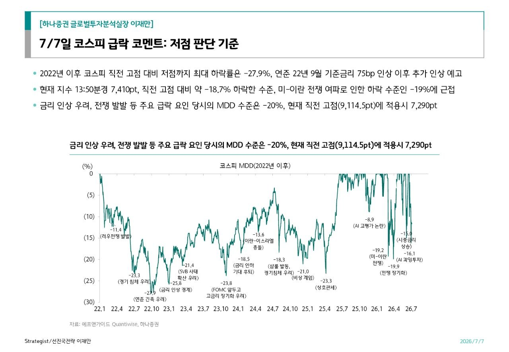
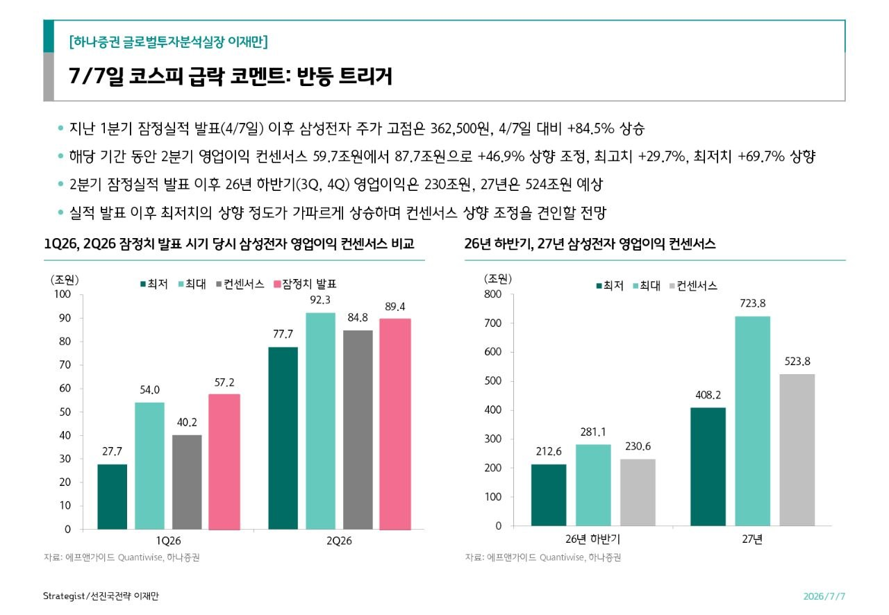
2026-07-07 14:20
👁 1,869
갯수 감소는 동일
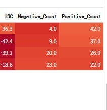
2026-07-07 14:18
👁 1,930
키옥시아, 삼성전기 이런 티커도 넣었습니다, 좀전에 다시 올렸습니다.
2026-07-07 14:08
👁 2,139
현금 40% 까지 해도 피곤
2026-07-07 14:07
👁 2,139
방어가 안되는중
2026-07-07 14:07
👁 2,139
코스피가 개별 코스닥 종목 처럼 움직이네요
2026-07-07 12:55
👁 2,682
당일 오후에 일정이 있습니다. ETF 소라티노 업데이트가 좀 늦을수 있습니다. 수급 오실레이터 등 파일 업데이트는 제시간에 가능할 것 같습니다.
2026-07-07 12:54
👁 2,712
올해 사주가 평색 먹고살 기반과 시스템 같은걸 구축하는 해라고 하던데 휴 역시 쳐맞고 나면 어떻게 하면 다음에 피하지? 라는 생각이 머리에 돌아가거든요 나중엔 이렇게 안당하겠죠 머
2026-07-07 12:53
👁 2,321
모건스탠리: 반도체 비중 축소, 하이퍼스케일러 비중 확대 권고
우리는 반도체 중심의 좁은 상승장이 마무리되고 시장 주도주가 점차 확산(Broadening)되는 국면에 진입하고 있다고 판단함. 이에 따라 단기적으로는 반도체 비중을 줄이고 하이퍼스케일러를 선호함. 최근 유가 하락으로 금리가 안정되고 있으며, 이는 그동안 소외됐던 경기민감 업종으로의 순환매를 촉진하는 요인이라고 봄.
우리는 지난해 말부터 2026년 경기 확장 국면을 전망해왔으며, 이에 따라 기업들의 실적 개선이 특정 AI 종목이 아닌 시장 전반으로 확산될 것으로 예상했음. 이란 전쟁으로 유가가 급등하고 AI 반도체 중심 장세가 이어졌지만, 최근 유가가 하락하면서 당시 전망이 다시 현실화되고 있다고 판단함.
우리는 연준이 올해 추가 금리 인상에 나설 가능성은 낮다고 봄. 에너지 가격 하락과 관세발 물가 상승 둔화, 서비스 및 주거비 인플레이션 안정이 이어질 것으로 예상하며, 최근 예상보다 부진했던 고용지표 역시 매파적 금리 전망을 완화시키는 요인이라고 판단함. 이는 증시에 긍정적인 환경을 조성할 것으로 기대함.
우리는 반도체 업종의 모멘텀이 정점을 통과했다고 판단함. 특히 메모리를 중심으로 실적 추정치 상향 속도가 둔화되고 있으며, 최근 급락은 시장 주도주가 다른 업종으로 이동하는 초기 신호일 가능성이 높다고 봄.
우리는 반도체와 하이퍼스케일러 간 성과 격차가 지속되기 어렵다고 판단함. 반도체는 결국 하이퍼스케일러의 AI 투자에 의존하는 산업인 만큼, 하이퍼스케일러가 투자 증가 속도를 조절하기 시작하면 반도체 실적 기대도 함께 낮아질 수 있음. 메타의 잉여 AI 컴퓨팅 용량 외부 판매 발표는 이러한 변화가 시작되고 있음을 보여주는 사례라고 봄.
다만 우리는 AI 투자 사이클이 끝났다고 보지 않음. 이번 조정은 AI 투자 종료가 아니라 AI 수혜주의 순환매 과정으로 판단함. 2022년 이후에도 세 차례 유사한 조정이 있었으며, 이번이 네 번째 순환 국면이라고 봄. 메모리 업종은 원자재 성격이 강한 만큼 추가 조정 가능성이 상대적으로 높다고 판단함.
우리는 소비재, 운송, 지역은행, 바이오를 시장 확산(Broadening)의 주요 수혜 업종으로 선호함. 특히 바이오는 금리 하락과 M&A 확대의 수혜를 받을 가능성이 높고, 소비재는 재화 소비 회복과 실적 개선이 기대돼 매력적인 투자처라고 판단함.
결론적으로 우리는 단기적으로 반도체보다 하이퍼스케일러를 선호함. 하이퍼스케일러는 견조한 본업과 AI 애플리케이션 확대, 비용 절감 여력을 동시에 보유하고 있어 투자 매력이 높다고 판단함. AI 사이클은 여전히 진행 중이며, 현재는 반도체에서 하이퍼스케일러와 기타 AI 수혜 업종으로 주도주가 이동하는 순환 국면으로 해석함.
* 당사 컴플라이언스의 승인을 받아 발송되었습니다
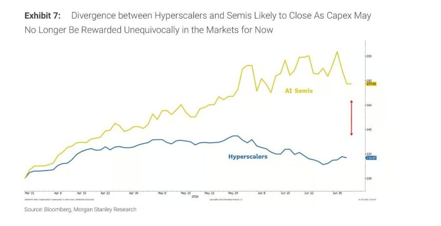
2026-07-07 12:51
👁 2,592
휴 이제라도 먼가 기준 추가했으니 나중에는 이런일 있으면 미리 줄일 수 있겠죠 뭐
2026-07-07 12:28
👁 2,715
그래서 AI로 대표되는 한국시장이 딱히 쉽지 않은 시장 같다는 생각도 듭니다. 아오 아이디어 진즉에 알게 되었으면 미리 만들었을텐데 아쉽네여 저걸 왜 국가로 잡는지도 이해가 안됨 한국 일본 대만 미국 주요 AI 기업으로 잡으면 되는데
2026-07-07 12:25
👁 2,715
일단 지금 이거 들고가서 구글코렙에 돌려보시면 파지티브가 감소중입니다.
2026-07-07 12:23
👁 2,715
나중에 다른 업종이 강하다면 그런 티커로 바꿔서 연구해도 가능할 것 같더라구요
2026-07-07 12:23
👁 2,716
그냥 제 생각에서 AI와 데이터센터 관련 종목군들 리스트 가지고 모멘텀이 약화되는가 아닌가 그런걸 좀 보는게 나을 것 같고
2026-07-07 12:23
👁 2,715
영상에서는 닷컴버블이 글로벌 현상이라서 안좋은 국가들이 먼저 약해지는 모습을 의미한건데
2026-07-07 12:22
👁 2,655
그러니간 6개월 모멘텀 3개월 모멘텀 2개월 모멘텀 1개월 모멘텀에 양수가 되는 종목갯수가 감소하는 시장이냐 증가하는 시장이냐? 이런거로 시장을 측정하더라구요
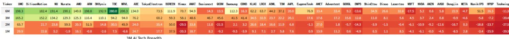
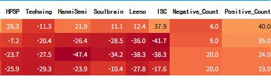
2026-07-07 12:20
👁 2,625
올려놓았습니다.
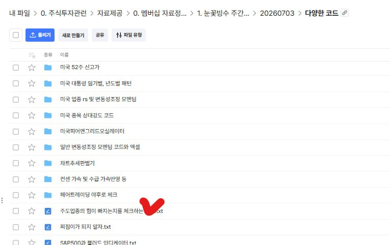
2026-07-07 12:18
👁 2,626
이거 담에 다른 업종이 주도업종이면 그 주도업종에 해당하는것을 넣어서 쓰면 좋을것 같아요
2026-07-07 12:18
👁 2,626
코드는 공유하겠습니다.
2026-07-07 12:18
👁 2,626
최근에 모멘텀이 약화되고 있다고 나오고도 있네요
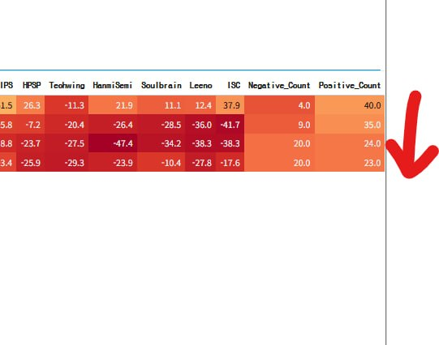
2026-07-07 12:17
👁 2,597
여기에 우리가 흔히 이야기하는 AI 관련 종목군들
2026-07-07 12:17
👁 2,627
stocks = {
# US
"NVDA":"NVDA","MSFT":"MSFT","AAPL":"AAPL","AMZN":"AMZN","META":"META",
"GOOGL":"GOOGL","AVGO":"AVGO","AMD":"AMD","TSM":"TSM","ASML":"ASML",
"MU":"MU","ARM":"ARM","QCOM":"QCOM","MRVL":"MRVL","LRCX":"LRCX",
"AMAT":"AMAT","KLAC":"KLAC","CDNS":"CDNS","SNPS":"SNPS","ANET":"ANET",
# Korea
"Samsung":"005930.KS","SKHynix":"000660.KS","HanmiSemi":"042700.KS",
"HPSP":"403870.KQ","WonikIPS":"240810.KQ","EugeneTech":"084370.KQ",
"Techwing":"089030.KQ","TSE":"131290.KQ","Soulbrain":"357780.KQ",
"Dongjin":"005290.KS","ISC":"095340.KQ","Leeno":"058470.KQ",
# Japan
"TokyoElectron":"8035.T","Advantest":"6857.T","Disco":"6146.T",
"Lasertec":"6920.T","SCREEN":"7735.T","Socionext":"6526.T",
"ShinEtsu":"4063.T","Murata":"6981.T",
# Taiwan
"UMC":"UMC","ASE":"ASX","Himax":"HIMX","SiliconMotion":"SIMO"
}
2026-07-07 12:15
👁 2,626
https://www.youtube.com/watch?v=eCNMUFV4MWg
42분쯤 영상내용이 저는 생각보다 의미 있더라구요 약한곳부터 무너진다는건데 이걸 가지고 응용 버전을 지금 만들어 보려 합니다. 휴 같은 실수 하지 않으려고 하는건데
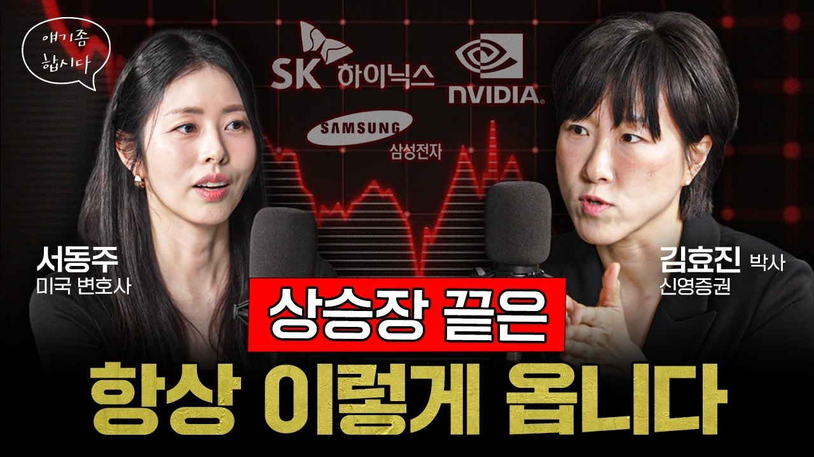
2026-07-07 11:58
👁 2,686
올해 사전에 MDD 방어 실패를 어떻게 개선할 수 있을지 고민을 좀 해야겠네여
2026-07-07 11:55
👁 2,715
방어좀 해놓고 있으렵니다.
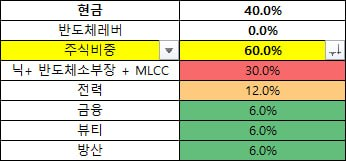
2026-07-07 11:54
👁 2,715
반도체 전공정 etf는 전량 날리고 현금 40% 까지 올려보려 합니다.
2026-07-07 11:53
👁 2,715
현금 36% 비중으로 올라갈 것 같습니다.
2026-07-07 11:52
👁 2,714
10주선 깨진 삼성전기도 정리하려 합니다.
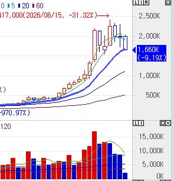
2026-07-07 11:50
👁 2,685
국장은 안되지 않을까...
2026-07-07 11:48
👁 2,685
미장 플레이어들은 다른나라 팔고 다른주식 팔아서 대장주 사서 마지막 불꽃랠리가 가능했던것 같은데
2026-07-07 11:48
👁 2,686
ㄴ이거 국장에서 안될 것 같은 이유 국내 수급의 한계
2026-07-07 11:47
👁 1,781
.
[이그전] 빅테크의 지갑이 말라도, 반도체는 계속 돈을 벌까?
안녕하세요. KB증권 자산배분 이은택입니다.
1) 1999년 하반기부터 월드컴의 매출증가율이 둔화하자, 시장에선 ‘닷컴 capex’가 지속 가능한지에 대한 의문이 일었습니다.
2) 주춤하던 시스코 주가가 월드컴과 디커플링 된 것은 실적발표 때문이었습니다.
3) 결국 이번에도 실적 컨퍼런스 콜을 통해 시장의 의심을 확인하는 작업이 중요할 수밖에 없습니다.
- URL: https://blog.naver.com/egzion/224338971009
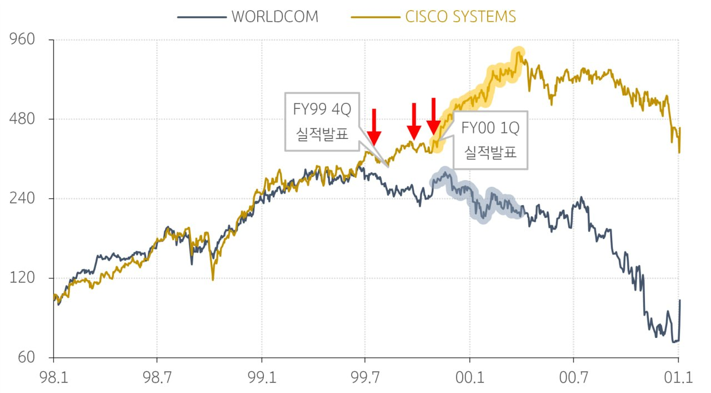
2026-07-07 11:47
👁 2,684
7월말 연준 금리결정까지 그냥 현금 들고가자 라고 의사결정 했습니다.
2026-07-07 11:47
👁 2,714
+ 피어앤그리드 오실레이터 지표 과열권
2026-07-07 11:45
👁 2,774
연금 : 국장 비중 꽉차서 막 적극적으로 살 상황 아님
외국인 : 자산배분 기준으로 팔기만함, 연준 7월말 불확실 8월 잭슨홀 불확실 11월 선거전 불확실 시기 굳이 살생각 없는듯
개인 : 코스닥 팔아서 전닉 방어 한계 봉착 + 7월 금통위 금리결정에서 금리 올라가면 개인 신용 플레이어들 창출 능력감소
-> 총체적 난국 수급 상황?
3분기 조심 -> 4분기 공격 시나리오나 머리속에 두고 있어야 할듯
2026-07-07 11:25
👁 2,864
현금비중 좀더 높이겠습니다.
2026-07-07 11:25
👁 2,834
반도체 전공정 etf가 60일선 깨져서 비중 8%를 4% 비중으로 낮추려 합니다.
2026-07-07 11:23
👁 2,864
괜히 코스닥 소부장까지 베타플레이하다 코스피 대비 아웃퍼폼 구간 날려먹은것 같네요 현금 들고서 시장 관망하는게 좋을것 같습니다.
2026-07-07 10:53
👁 2,865
중동 전쟁 이후 채권시장 아웃라이어는 단연 일본입니다. 10년물은 2.83%, 30년물은 4.10%을 돌파했습니다. 일방적인 커브 스티프닝으로 주요국 대비 가장 금리차가 확대된 모습입니다.
금리 급등과 커브 스티프닝을 이끈 주범은 다카이치 행정부가 발표했던 초장기 투자 로드맵이며, 이에 따른 재정 훼손 우려가 작용해습니다. 명확한 재원 대책이 없는 매년 10조 엔 규모의 추가 지출 발표에 재정 우려가 커지고 있습니다.
물론 정부가 이러한 우려를 잠재우기 위해 GDP 대비 부채 비율 안정화 시나리오를 발표했지만, 시장은 과도하게 낙관적이라고 판단하는 듯 합니다.
정부가 BOJ에게 '적절한 통화정책' 운용 기대를 문구에 삽입한 부분도 BOJ의 독립성 훼손 우려로 이어져 장기물 텀 프리미엄 상승으로 이어질 수 있습니다.
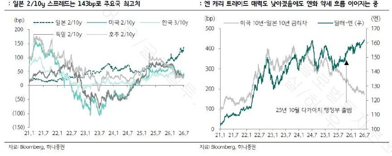
2026-07-07 10:46
👁 2,292
Foreign investors get queasy
How do you solve a problem like Korea?
That country’s stock market is up 165% in just the past year, which is no bad thing of course. But the road to get there has been insanely bumpy. It’s actually part of the appeal for many South Korean investors.
In the year through Thursday’s close, the Kospi Composite had 77 moves of at least 2% compared with just five for the S&P 500. The Kospi had a 3%-plus change 44 times while U.S. stocks never did, and it moved 5% or more 23 times.
The swings increasingly are driven by just two stocks, chip makers Samsung and SK Hynix, which make up most of the index. Their gyrations have been intensified by leveraged products forced to buy or sell into rising or falling markets. Similar funds are also booming in the more-diversified U.S., but they aren’t big enough yet for the leveraged fund tail to wag the market dog.
Prospective Korean buyers need to take a quiz. Regulators, including the central bank, have expressed alarm and are looking for other ways to tamp down speculation.
It won’t be easy. Before local versions were allowed in May, Koreans bought similar ETFs listed abroad. One Hong Kong-based fund offering twice the daily change in SK Hynix became the largest leveraged single-stock vehicle in the world.
Not everyone is excited: Foreign investors are leaving the Korean casino. That could mostly leave locals stuck with losses when the party ends. Maxence Visseau, founder of macro and quantitative hedge fund Arkevium Capital, says he’s rarely seen such a stark divide.
“For a retail base that’s there for the action, the volatility is the attraction,” he says.
Foreign investor outflows were more than $100 billion in the first half of 2026 and $30 billion in June alone. With Korea and also-hot Taiwan together making up half of the main emerging-markets stock index, foreign investors are diversifying, says Visseau.
South Korea’s market is now one of the largest in the world despite a population of just 51 million. How much more can locals bet on it, and who will they sell to when a bad day turns into a bad year?
A foreign exodus isn’t in the cards in the U.S. Even so, Korean investors’ eventual comeuppance could serve as a lesson for American regulators who also have greenlighted risky products and removed guardrails amid one of the most highly valued and concentrated stock markets in history.
Markets A.M. 칼럼 심층 정리
Spencer Jakab
논지 (Thesis)
세계에서 가장 뜨거운 시장인 한국 증시가 구조적으로 '오징어 게임'화되고 있다. 1년 +165%라는 수익률의 이면에는 극단적 변동성, 두 종목(삼성전자·SK하이닉스)으로의 지수 집중, 그리고 상승·하락 양방향으로 매매를 강제당하는 레버리지 상품이라는 세 겹의 취약성이 쌓여 있으며 — 결정적으로 외국인은 이미 퇴장 중이다.
전개 (Argument)
1) 변동성의 정량화. 목요일 종가 기준 직전 1년간 KOSPI는 ±2% 이상 변동 77회 — S&P 500은 단 5회. ±3% 이상 44회(미국 0회), ±5% 이상 23회. 이 변동성이 위험 신호가 아니라 오히려 국내 개인투자자들에겐 매력 포인트로 작동한다는 것이 병리의 핵심.
2) 메커니즘 — 레버리지 ETF의 꼬리가 시장이라는 개를 흔든다. 지수 대부분을 차지하는 삼성·하이닉스의 등락이 레버리지 상품의 강제 매수·매도로 증폭된다. 미국에도 유사 상품이 붐이지만, 분산된 시장 규모 덕에 아직 '꼬리가 개를 흔드는' 단계는 아니라는 대비. 5월 국내 허용 전부터 한국 투자자들은 해외 상장 상품으로 우회했고, SK하이닉스 일간 2배 홍콩 ETF는 세계 최대 레버리지 단일종목 비히클이 됐다. 규제당국(한국은행 포함)은 경보를 울리며 투기 억제 수단을 모색 중 — 매수 전 의무 퀴즈까지 등장했지만 자캅은 "쉽지 않을 것"이라 평가.
3) 스마트머니의 이탈. 외국인 순유출 상반기 $100B+, 6월 단월 $30B. 매크로·퀀트 헤지펀드 Arkevium Capital 창업자 Maxence Visseau의 진단:
"For a retail base that's there for the action, the volatility is the attraction." — 액션을 위해 온 개인들에게는 변동성 자체가 유인이다. 그는 이 정도로 극명한 (외국인 vs 국내 개인) 괴리는 드물다고 말한다.
한국·대만 합산이 주요 EM 지수의 절반을 차지하게 되면서 외국인은 분산 차원에서도 비중을 줄이는 중. 인구 5,100만의 나라가 세계 최대급 시장이 된 상황에서 "국내 자금이 얼마나 더 베팅할 수 있으며, 나쁜 하루가 나쁜 한 해가 될 때 누구에게 팔 것인가"라는 질문을 던진다.
결론 (Conclusion)
미국에서 외국인 대탈출이 일어날 일은 없지만, 한국 개인투자자들의 최후 정산(comeuppance)은 미국 규제당국에 대한 교훈이다 — 역사상 가장 고평가되고 가장 집중된 증시 한가운데서 위험 상품을 승인하고 가드레일을 제거해 온 것은 미국도 마찬가지이기 때문. 즉 이 칼럼은 한국 리스크 경고인 동시에, 미국 시장 구조(레버리지 단일종목 ETF, 신용 팽창)에 대한 우회 경고장이다.
WSJ 대표 칼럼에서도 한국장을 걱정해주네요...
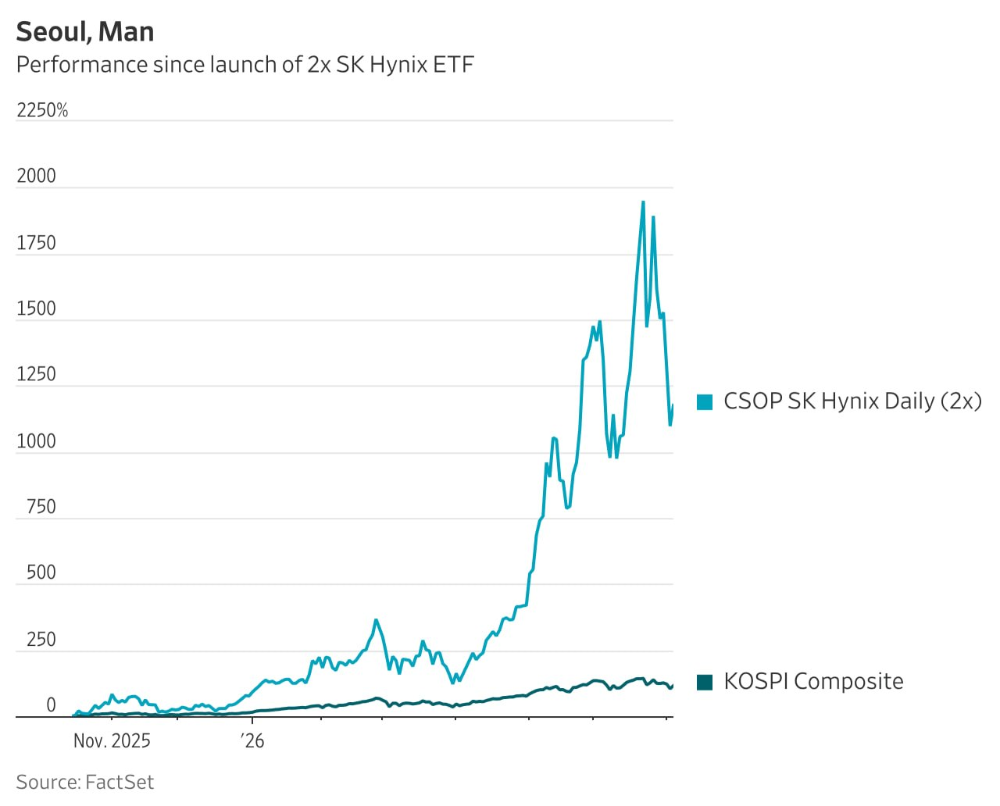
2026-07-07 10:37
👁 2,714
7월 수출판가 yoy 둔화 나올가능성 높아서 고민
2026-07-07 10:36
👁 2,325
>>(상세) 메모리, 이제 정점에 도달했나? (모건스탠리)
•모건스탠리는 메모리 반도체 산업이 ‘변화율의 정점’에 근접했다고 분석. DRAM 가격 YoY+ 상승률 둔화, 재고 개선세의 안정화, EPS 상향 조정 폭의 정점 도달이 근거
•단기적으로는 포지션 집중, 변동성 확대, 자금 순환매 영향으로 메모리 관련 주가가 일시적으로 압박받을 수 있다고 전망. 다만 장기 전망은 여전히 긍정적으로 유지했으며, 2027년 이익은 YoY+ 35~40% 증가할 것으로 예상
•향후 가장 중요한 확인 포인트는 하이퍼스케일러들이 AI 관련 CAPEX 가이던스를 계속 유지할 수 있는지 여부라고 평가
>存储“涨到头”了吗？ https://wallstreetcn.com/articles/3776336#from=ios
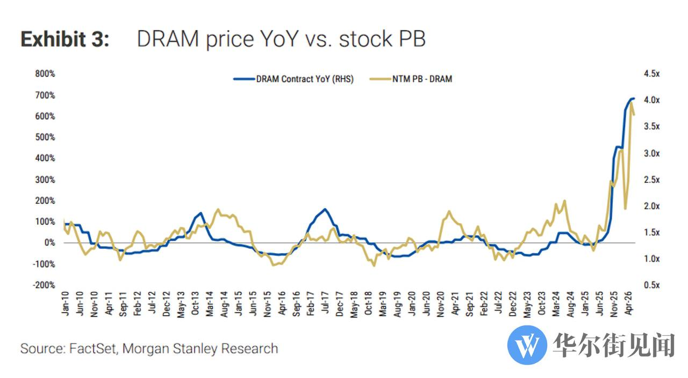
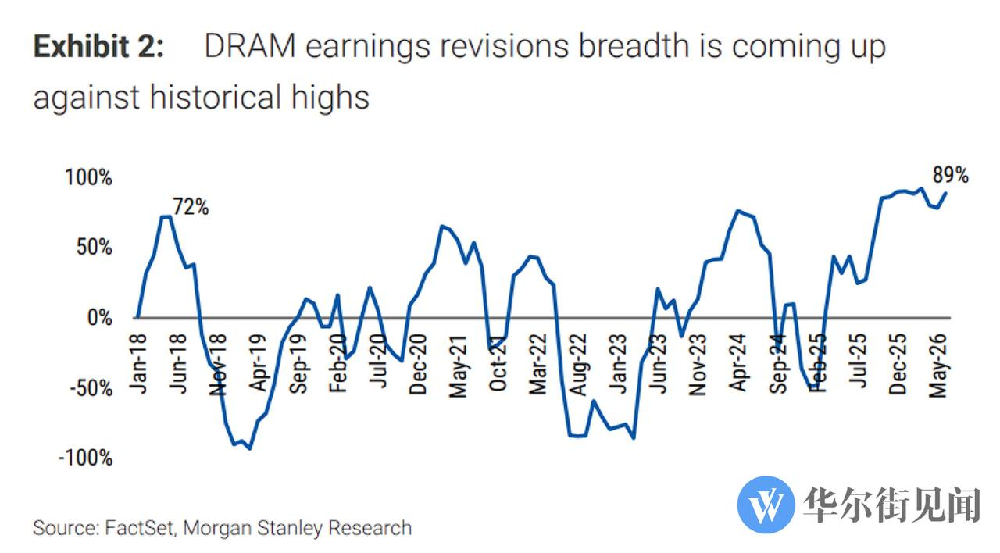
2026-07-07 10:30
👁 2,385
※ KOSPI 사이드카 발동(32번째)
- 매도 사이드카 16회
- 매수 사이드카 16회
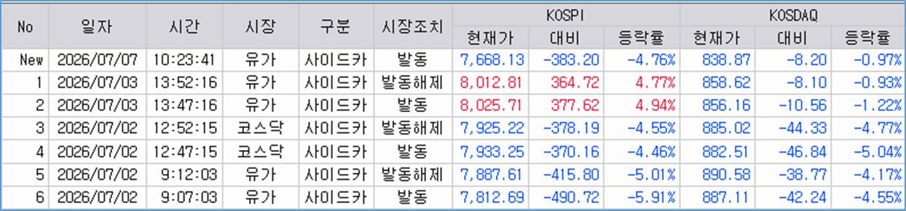
2026-07-07 10:21
👁 2,866
미장은 6월부터 지금까지 나스닥 4% 빠질때 52주 신고가 살아있는 섹터가 있어서 잘 버티고 있는데 국장은 진짜 더 어려운 상황
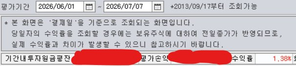
2026-07-07 10:18
👁 2,837
미장은 헬스케어와 금융 일부 산업재가 52주 신고가 갱신하다보니 그쪽으로 붙어서 잘 넘어가고 있는데 국장은 대피할 곳이 없어요
2026-07-07 10:18
👁 2,896
문제는 엄청나게 도망갈만한 종목군이 안보인다는 점이 피곤합니다.
2026-07-07 10:17
👁 2,895
일단 지켜놓고 다시 시장 정상되어야 도전가능 할 것 같습니다. 결국 시장에 붙어버렸어요
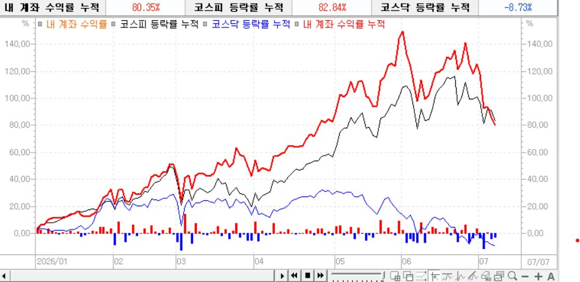
2026-07-07 10:16
👁 2,895
상반기 먹은거 40% 날아갓는데 걍 남은거라도 지키자 마인드만 생기네여
2026-07-07 10:15
👁 2,895
60일선 꺠지면 조정폭이 높은 시장 진입아닐까 의심중입니다.
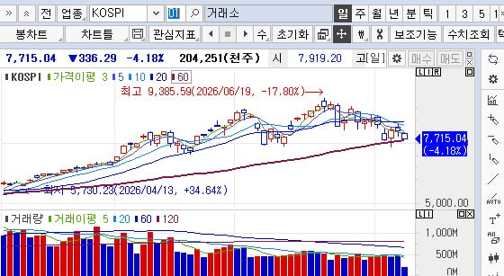
2026-07-07 10:05
👁 2,925
하이닉스도 10주 이평선 깨려고 폼잡아서 비중 줄이고 현금이나 늘리렵니다.
2026-07-07 10:04
👁 2,925
하이닉스 5% 줄여서 15% 까지 비중 만들겠습니다.
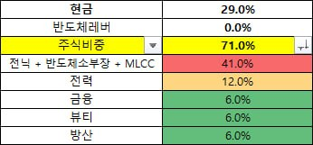
2026-07-07 09:58
👁 2,956
irp는 반도체 플레이하는 etf 비중 축소 미국 따라 금융 편입, 국내는 소비재 편입 전력은 겹치는건 정리, 광통신은 미국도 추세 꺠져서 정리하려 합니다.
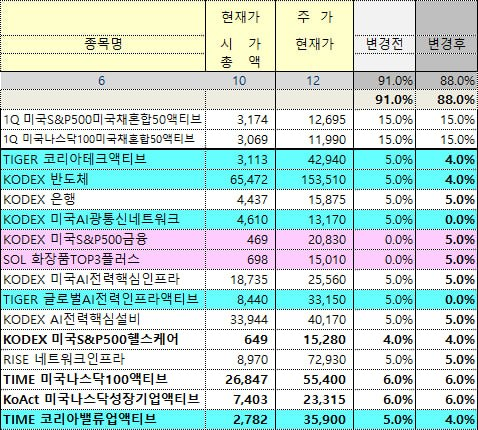
2026-07-07 09:45
👁 2,926
금융, 뷰티, 방산도 보유종목 전부 4%비중을 3%비중으로 강제 축소 하려 합니다.
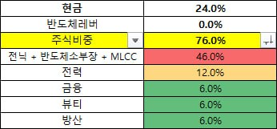
2026-07-07 09:22
👁 2,926
주도업종이
반도체, 전력, 뷰티, 금융 인것 같습니다.
다만 시장이 안좋은 구간에서 발생하는 남아있는 섹터라서 현금 들고 플레이 필요해보이네요
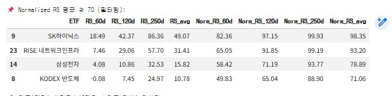
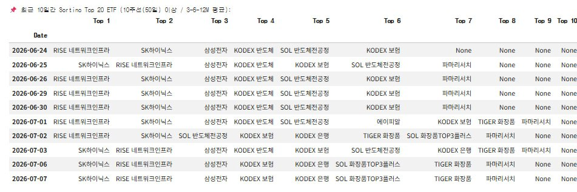
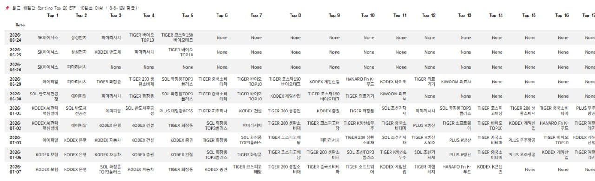
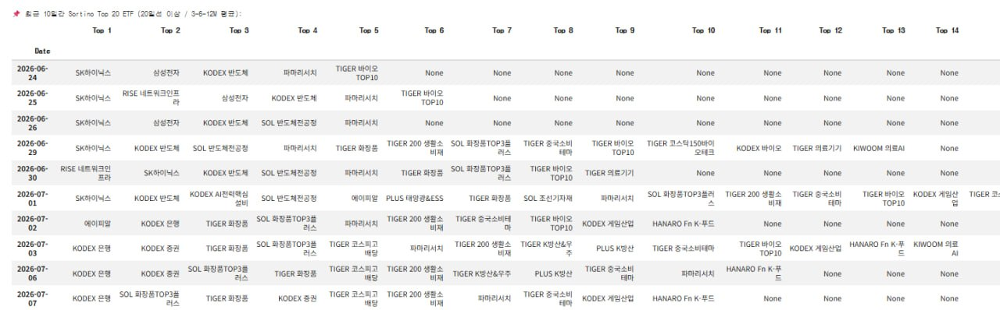
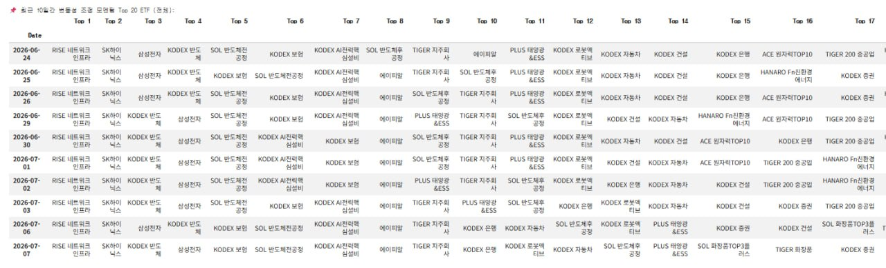
2026-07-07 09:06
👁 2,979
전자 쏠림이 풀리는 중
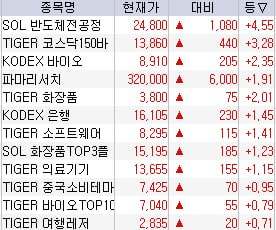
2026-07-07 09:03
👁 2,980
소부장 좀 반등하네여
2026-07-07 09:01
👁 2,983
오전장 보고 움직이려구요
2026-07-07 09:01
👁 3,028
그리고 추가로 전력기기 종목들 남은것 4% 비중인것들 죄다 3% 비중으로 강제로 낮추려 합니다. 그럼 현금 비중 18% 정도 나오겠네요
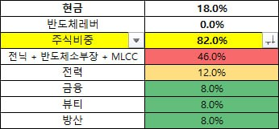
2026-07-07 08:59
👁 3,066
현금만들기 위해 강제매도 1개와 비중축소나 하려 합니다.
sk이터닉스 강제매도
반도체 비중 포트에서 한단계 낮추기 위해 반도체 종목들 4% 비중은 3%비중으로 강제 축소
이렇게 진행하면 현금 비중 14% 확보하게 될 것 같습니다.
요즘 아침 에 밀렸다가 반등하는 시기도 있어서 오전에 장좀 보고 정리하던가 해야겠습니다.
1차 목표는 현금 14% 확보 목표입니다.
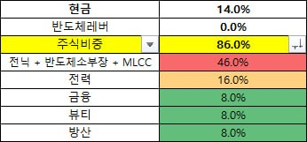
2026-07-07 08:44
👁 3,076
근데 순환매가 안나오고 뒤져버릴 수도 있어서 현금 들고 플레이 해야겠어요 그리고 설령 지수가 박스권 들어간다면 현금 들고 플레애 필요
피어앤그리드 오실레이터 과열권인데 일본 채권금리도 요상하고 그냥 무리하고 싶지가 않네여 포트는 어느정도 다변화 해놨으니
2026-07-07 08:04
👁 3,154
그냥 당일 보고 반도체 반등 미약하면 현금이나 20% 까지 다시 만들어야겠습니다.
2026-07-07 07:51
👁 2,794
실발 이후 EWY
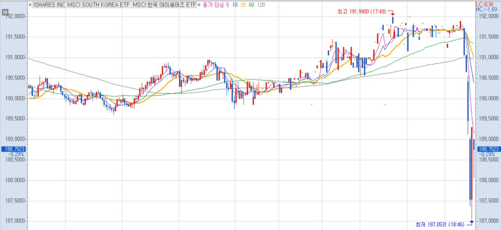
2026-07-07 07:48
👁 3,145
닉스와 전기 목표가 상향
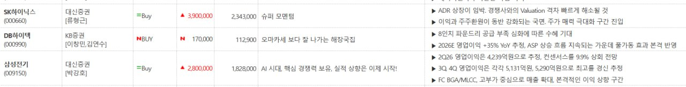
2026-07-07 07:46
👁 3,006
브이엠: 올해 끝, 내년 준비 중
[대신증권 IT 스몰캡/김진형]
■ 목표주가 120,000원으로 상향
목표주가를 기존 대비 50% 상향하여 120,000원으로 제시드립니다.
실적 추정치 상향과 밸류에이션 리레이팅 모두 기대 가능한 구간이라는 판단입니다.
1) 고객사의 CAPEX 투자에 따른 수혜는 지속 확대되고 있으며, 2) 신규 고객사 확보도 가시화되면서 저평가 요인도 점차 해소되고 있습니다.
■ 내년에 대해서 바라보기 시작할 시점
- 26년의 경우 M14&M16 전환 투자 규모가 연초 대비 상향되면서 실적 추정치를 상향하였습니다. 다만 하반기 접어들면서 동사를 제외한 장비 업종 전반의 부품 수급 이슈를 감안하면 추가적인 서프라이즈는 힘들 수 있다고 보여집니다.
- 27년에도 고객사의 강한 CAPEX 투자는 지속 확대될 것으로 예상합니다. Y1 Ph.1과 Ph.2 모두 장비 수주가 시작될 것입니다. 전방 산업 업황 호조에 따른 고객사의 증설을 감안하면 27년에도 장비 업종에게는 우호적인 환경이 지속 확대될 것으로 전망합니다.
- 1) 신규 장비의 경우 현재 필드 테스트가 진행 중입니다. 기존 장비 대비 High-End 영역을 커버하는 장비인 만큼 B.ASP 상승 효과도 기대됩니다. 2) 신규 고객사향 Metal Etcher는 웨이퍼 테스트까지 성공적으로 마무리된 것으로 파악됩니다. Metal Etcher의 경우 기존 고객사향으로 독점 공급하고 있는 장비이며 양산 검증 소요 시간이 짧다는 점도 신규 고객사 확보에 긍정적으로 작용할 것입니다. 늦더라도 2H27 내 매출 기여가 시작될 것으로 예상합니다.
보고서 링크: https://bit.ly/4p4NYWp
계절적으로는 8월 9월 좋았던 적이 별로 없고 이번에는 미국 선거 불확실성도 노출 되어 있기 때문에 앵간에서는 3분기는 신용은 아예 생각 안하는게 좋을듯
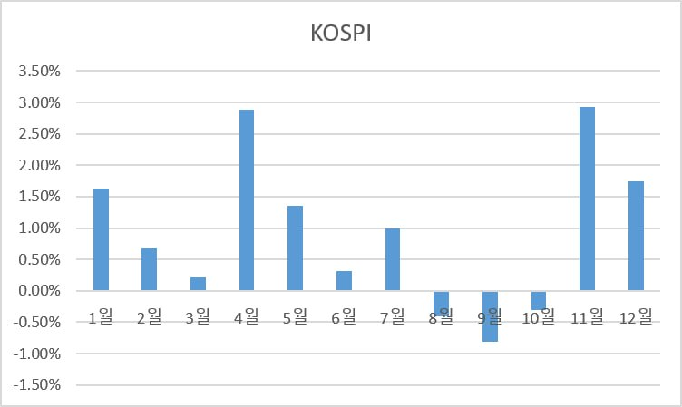
2026-07-07 07:05
👁 3,005
이번 여름에 FOMC 이후에 잭슨홀 미팅까지 미국 연준의 정책에 실망이 나올 수 있다는 추정도 있습니다. 잭슨홀 미팅 일정 추가했습니다.
2026-07-07 06:59
👁 2,962
방산 LIG 추정이익 신고가
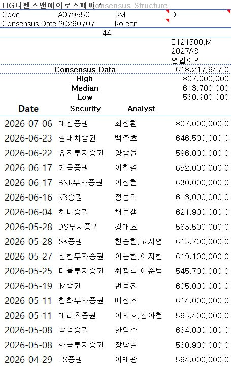
2026-07-07 06:31
👁 2,948
전자와 닉스 컨센 상향 중
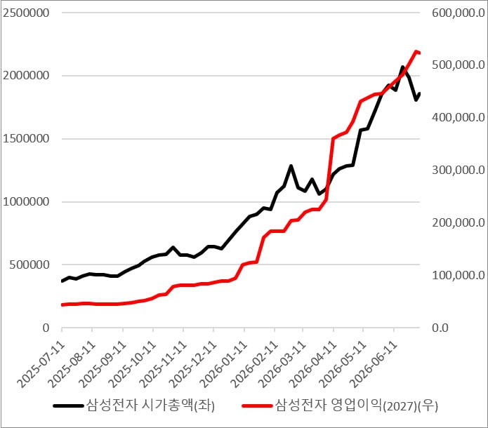
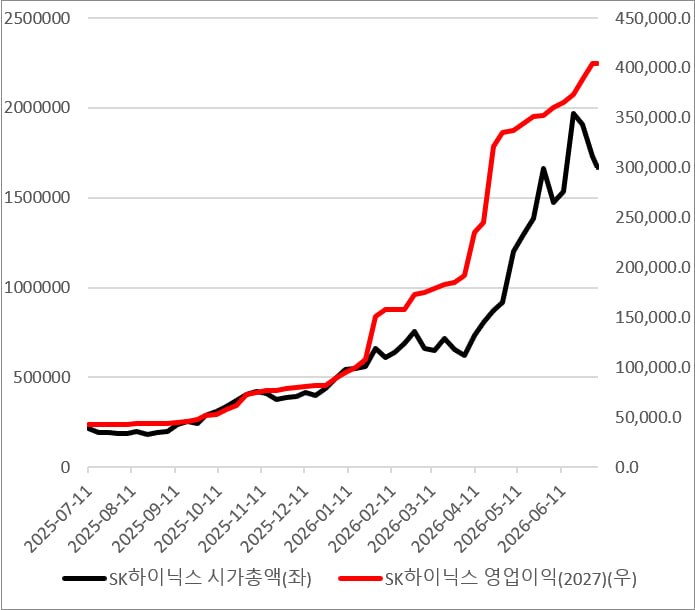
2026-07-07 06:30
👁 2,876
업종 쏠림지수 미국 내려가는 중인데 많이 내려온듯 하네요 미장도 기존 52주 신고가 종목군들이 10일이평선 깨는 경우 리스크 관리 필요
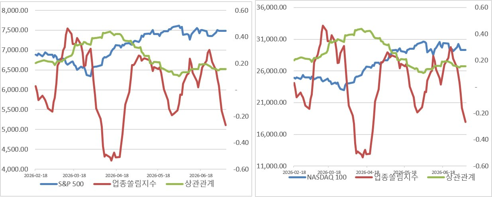
2026-07-07 06:26
👁 2,878
1) 금융시장에 가장 크게 변한 매크로 지표가 범인일 가능성이 높음
2) 일본 채권금리 상승이 전일 한국시장 영향 많이 준듯
3) 당분간 일본 채권금리 주의해서 봐야 할듯
4) 미국과 한국의 피어앤그리드 오실레이터 과열권 진입중 현재 국장은 현금 5% 인데 현금 10% 정도까지는 자연스레 만들 생각
과열권에 일본의 채권금리가 신경쓰이기 시작
5) 미국시장은 금융과 보안 그리고 일부 헬스케어 이런것이 52주 신고가 다수 테크는 52주 신고가에 많이 없었음
미장 포트폴리오는 금융, 보안, 헬스케어로 구성 이외에 산업재와 방산 이런게 눈에 띔
6) 국장은 미장에서 상승하는 종목군과 매칭되는 종목군이 생각보다 적고 피어라고 할만한게 없음
7) 국장 반도체 이외 섹터도 포함하여 포트폴리오 다변화 해놓고 있는중이며, 당일 삼성전자 실적발표 영향을 봐야할듯
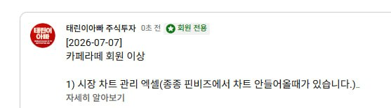
2026-07-07 06:18
👁 2,721
니혼게이자이신문(닛케이)은 다카이치 정권이 적극 재정을 호네부토 방침을 통해 표면화하면서 재정 악화 우려를 의식한 채권 매도가 이어지고 있다고 해설했다.
다카이치 내각이 최근 발표한 경제재정 운영과 개혁 기본방침, 이른바 호네부토 원안에는 지난해까지 정부 재정 운영원칙에 담겼던 '재정 건전화'라는 언급이 삭제됐다.
https://www.yna.co.kr/amp/view/AKR20260706109300073
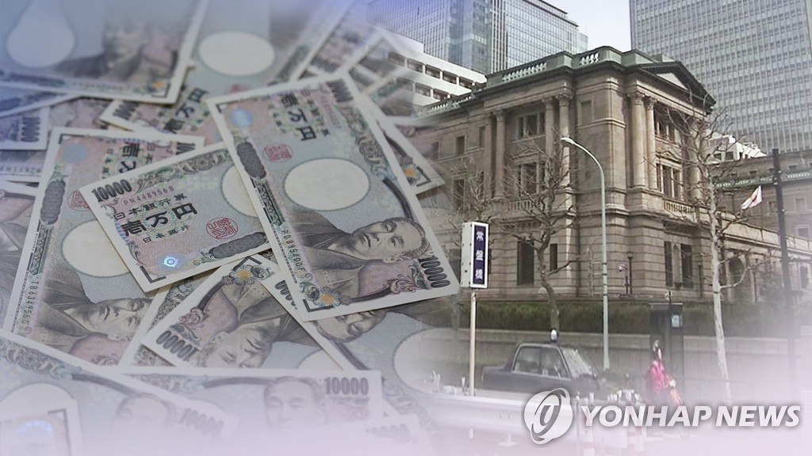
2026-07-07 06:14
👁 2,562
- 한국과 미국의 피어앤그리드 오실레이터 과열권 인듯
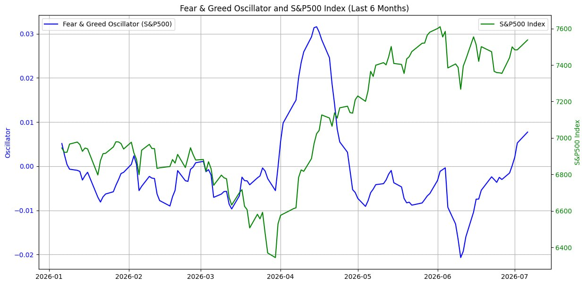
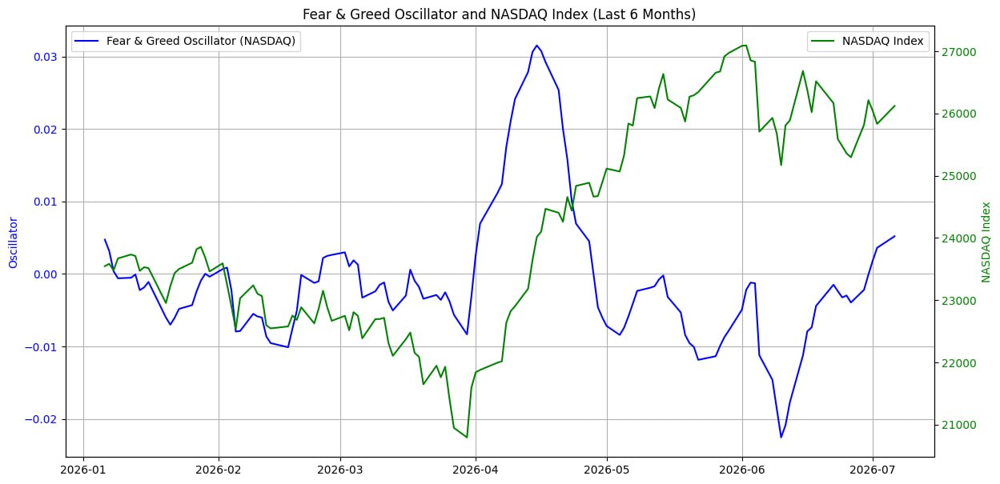
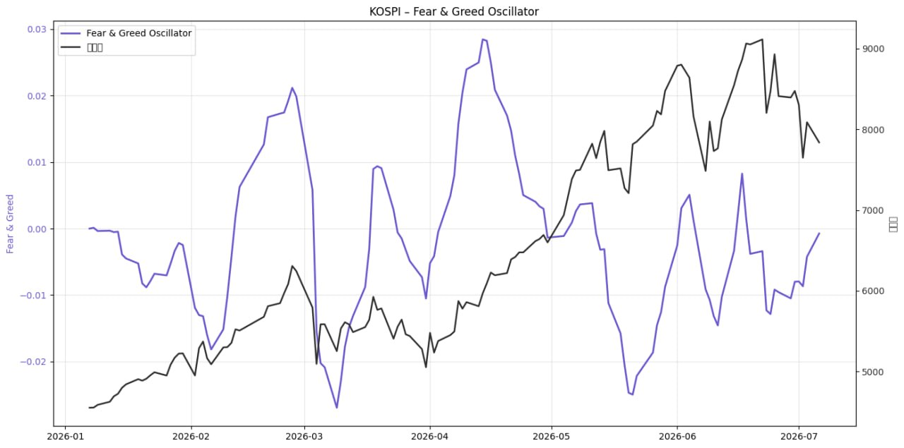
2026-07-07 06:12
👁 2,558
최근 시장을 약간 불안하게 하는건 일본 채권금리
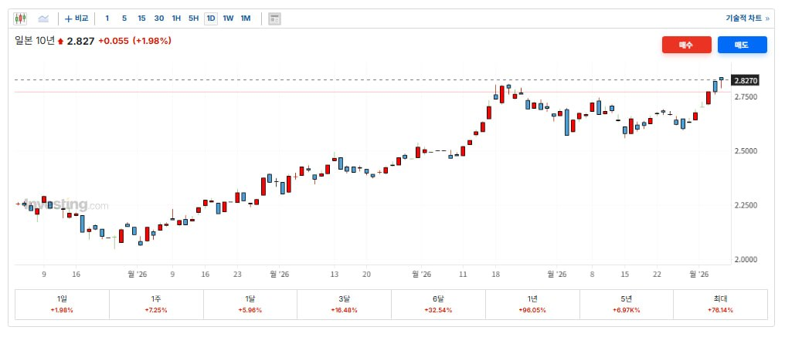
2026-07-07 06:11
👁 2,556
이외 글로벌 금융기업들 신고가 다수
2026-07-07 06:10
👁 2,609
강세 시현중인 보안회사들
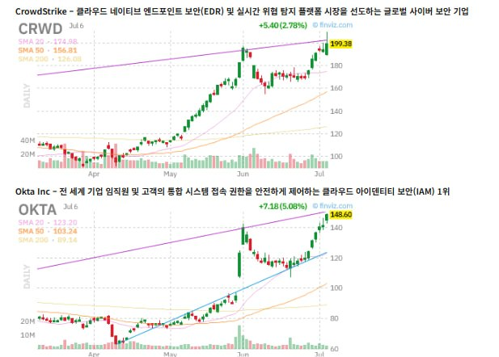
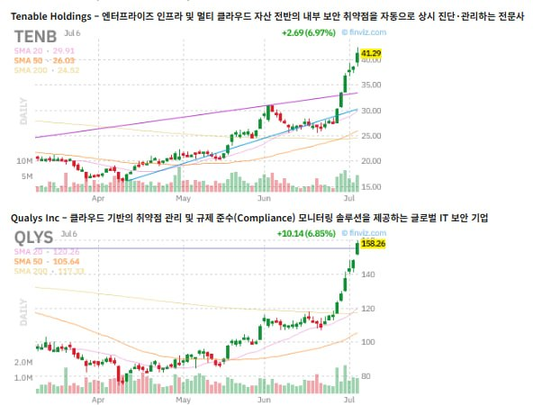
2026-07-07 06:09
👁 2,523
미국 시장 보안 신고가, 국내 낙수효과 없음
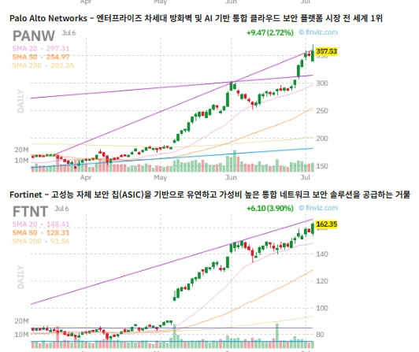
2026-07-07 06:09
👁 2,466
미국 반도체는 키맞추기 인듯
2026-07-07 06:08
👁 2,482
전력 반등 GEV는 장중 52주 신고가 갱신
2026-07-07 06:07
👁 2,466
- 미국 상승추세
- 산업재 추세 좋음
- 방산 좋아지는중
- 반도체 키맞추기 반등
- 로봇 반등
- 금융 강세
2026-07-07 06:02
👁 2,424
글로벌 메가 금융 지주사 및 자산운용: BAC (뱅크오브아메리카 - 미국 2대 상업 은행 및 글로벌 메가 뱅킹 지주사), BNY (뉴욕멜론은행 - 전 세계 최대 규모의 글로벌 자산 수탁 및 관리 전문 메가 뱅크), STT (스테이트 스트리트 - 글로벌 자산 수탁 및 ETF(SPDR) 자산운용 금융 지주사), USB (U.S. 뱅코프 - 미국 최대 규모의 지역 통합 상업 은행), HSBC (HSBC 홀딩스 - 다국적 메가 뱅킹 지주사), UBS (UBS 그룹 - 스위스 기반 글로벌 자산운용사), MUFG (미쓰비시 UFJ 파이낸셜 - 일본 최대 규모의 글로벌 금융 지주사), SMFG (스미토모 미쓰이 파이낸셜 - 일본 대형 금융 그룹), ING (ING 그룹 - 네덜란드 기반 글로벌 금융 지주사), BCS (바클레이스 - 영국 다국적 메가 뱅크), SAN (방코 산탄데르 - 유로존 최대 규모의 다국적 상업 은행 금융 지주), TROW (티 로우 프라이스 - 글로벌 대형 자산운용사), BEN (프랭클린 리소시즈 - 글로벌 프랭클린 템플턴 자산운용 지주사), NTRS (노던 트러스트 - 글로벌 자산 수탁 및 고액 자산가 자산관리 전문 금융 지주), SEIC (SEI 인베스트먼트 - 글로벌 자산운용 인프라 및 신탁 금융 솔루션)
글로벌 보험 및 재보험 인프라: MET (메트라이프 - 글로벌 최대 규모의 생명보험 및 자산운용 대기업), MFC (매뉴라이프 파이낸셜 - 캐나다 최대 글로벌 생명보험 지주사), PFG (프린시펄 파이낸셜 - 글로벌 퇴직연금 및 자산운용 보험 그룹), VOYA (보야 파이낸셜 - 기관 및 개인 퇴직 솔루션 금융 보험), CNA (CNA 파이낸셜 - 미국 대형 상업 손해 보험), PRI (프라이메리카 - 북미 중산층 특화 생명보험 솔루션), EG (에베레스트 그룹 - 글로벌 재보험 전문 지주사), MCY (머큐리 제너럴 - 자동차 및 주택 보험), IGIC (인터내셔널 제너럴 인슈어런스), HMN (HMN 파이낸셜 / 보험 및 금융 네트워크)
전문 아웃소싱, 미디어 및 부동산 서비스: UTI (유니버설 테크니컬 인스티튜트 - 자동차·항공·산업 중장비 기술 인력 육성 교육 인프라), LAUR (로리에이트 에듀케이션 - 글로벌 고등 교육 대학 네트워크 운영사), KFRC (케리 그룹 - 글로벌 전문 인력 아웃소싱 및 헤드헌팅), CNS (코헨 & 스티어스 - 글로벌 리츠 및 인프라 자산운용사), GCMG (GCM 그로스브너 - 글로벌 대체 투자 및 프라이빗 에쿼티 솔루션), VCTR (빅토리 캐피탈 - 멀티 브랜드 자산운용 플랫폼), LINC (링컨 에듀케이셔널), SGHC (슈퍼 그룹 - 글로벌 디지털 게이밍 및 엔터테인먼트 지주사), ZD (지프 데이비스 - 디지털 미디어 및 테크 콘텐츠 마켓 리더), RDVT (레드 바이올렛 - 빅데이터 기반 신원 확인 및 데이터 분석), IFS (인터내셔널 파이낸셜 서비스), PPLI (퍼플 인베이션), CBC (커뮤니티 뱅크옵), ONB (올드 내셔널 뱅크코프), BSVN (뱅크7), FRBT (퍼스트 리퍼블릭 리츠 후속 금융 자산), CPBI (중앙 태평양 금융 계열), WBS (웹스터 파이낸셜), FXHO (폭스홀딩스 계열), AIRT (에어 T - 글로벌 화물 항공 및 항공 물류 지원), VCRE (v크리에이트), PTRN (패턴 테크), HNGE (힌지 테크), PSNL (페르소날리스), KYIV (키이우 미디어/통신 자산 관련), BTSG (비티에스 그룹), NSLRL (내셔널 리서치), JAN (재너스 인터내셔널 - 상업용 셀프 스토리지 도어 및 빌딩 하드웨어 인프라 1위), AFBI (아피니티 뱅크옵), ELMD (일렉트로코어), NATX (내틱시스 관련 금융 자산), QNT (퀀트)
2026-07-07 06:02
👁 2,242
1. 반도체 (Semiconductors)
초미세 반도체 공정에 필수적인 특수 산업용 가스 솔루션과 패키징 수율 제어를 위한 특수 정밀 컴포넌트 공급망이 포함된 섹터입니다.
핵심 종목: IMOS (칩모스 테크놀로지 - 전 세계 메모리 및 디스플레이 구동 칩(DDI) 후공정 패키징 및 테스트(OSAT) 전문 강자), IQMX (아이큐맥스 반도체 솔루션 계열), PNTG (펜타곤 테크 - 반도체 챔버 청정 세정 및 고정밀 소모품 코팅 서비스)
2. 전력 (Power & Energy Infrastructure)
송배전 그리드 현대화 유틸리티 인프라 및 핵심 전력 설비 다운스트림 부자재를 포괄하는 밸류체인입니다.
핵심 종목: GEV (GE 버노바 - 가스·풍력·수력 발전 터빈 및 전 세계 전력망 그리드 전력화 시스템을 리드하는 독점적 메가 캡), FTV (포티브 - 산업용 정밀 제어 계측 장비 및 공장 전력 관리 소프트웨어 솔루션 그룹), DINO (HF 싱클레어 - 북미 대형 독립 석유 정제 및 다운스트림 에너지 이송 유통망), DK (데렉 왜너스 - 정유 및 다운스트림 에너지 유통), SENEB (세네카 푸즈 / 세네카 에너지 인프라 부품 체인)
3. 통신 (Communications & Networking)
멀티클라우드 환경 확장 속에서 기업 자산을 외부 위협으로부터 방어하는 차세대 사이버 보안 리더와 통신 인프라 솔루션입니다.
글로벌 탑티어 사이버 보안 체인: PANW (팔로알토 네트웍스 - 차세대 글로벌 방화벽 및 클라우드 통합 보안 플랫폼 1위 메가 캡), CRWD (크라우드스트라이크 - AI 기반 엔드포인트 보안 및 글로벌 실시간 위협 인텔리전스 독보적 1위), FTNT (포티넷 - 글로벌 1위 엔터프라이즈 네트워크 방화벽 및 통합 보안 아키텍처 기업), OKTA (옥타 - 전 세계 클라우드 및 기업 인프라 아이덴티티(ID) 인증 및 접근 관리 표준 플랫폼), TENB (테너블 홀딩스 - 글로벌 1위 사이버 취약점 관리 및 클라우드 노출 관리 플랫폼), QLYS (퀄리스 - 클라우드 기반 취약점 진단 및 컴플라이언스 보안 솔루션)
통신 및 네트워크 연결망: ACIW (ACI 월드와이드 - 글로벌 실시간 전자 결제 및 금융 통신 네트워크 보안 솔루션), TIGO (밀리콤 인터내셔널 셀룰러 - 중남미 중심 대형 이동통신 및 무선 네트워크 인프라), SIRI (시리우스 XM 홀딩스 - 북미 최대 차량용 위성 라디오 및 오디오 미디어 네트워크망)
4. 우주 (Space & Aerospace)
군용 전투기, 미사일, 차세대 유도 무기 및 인공위성 자세 제어 장치의 밸류체인을 장악하고 있는 최고 존엄 방산·항공 기업들이 포진해 있습니다.
핵심 종목: GD (제너럴 다이내믹스 - 핵잠수함, 에이브람스 전차 및 군용 항공우주 지휘통제 시스템 리더 메가 캡), HEI (하이코 - 글로벌 항공기·전투기 정비(MRO)용 대체 부품 및 우주항공 정밀 전자기기 독과점 기업), HXL (헥셀 - 우주항공, 군용 전투기 및 상업용 여객기용 초경량 탄소섬유 복합소재 세계 1위), VSEC (VSE 코포레이션 - 군용·상업용 항공기 및 우주 장비 부품 공급 및 정비 MRO 유통), WLFC (윌리스 리스 파이낸스 - 글로벌 항공기 제트 엔진 임대 및 정비 인프라 자산 관리)
5. 로봇 (Robotics & Automation)
소프트웨어 배포 및 데이터 연산 프로세스의 무인화를 지원하는 파이프라인 자동화 섹터입니다.
핵심 종목: FROG (제이프로그 - 소프트웨어 빌드 및 업데이트 배포 자동화(DevOps) 글로벌 표준 플랫폼), MAX (매크론 오토메이션 / 특수 기계 자동화 엔지니어링)
6. 헬스케어 (Healthcare & Bio Tech)
글로벌 면역학 제약사부터 유전자 시퀀싱 표준 기업, 암 재발 액체 생검 플랫폼, 거대 헬스케어 보험망이 대거 밀집된 핵심 섹터입니다.
글로벌 메가 제약사 및 바이오 플랫폼: ABBV (애브비 - 글로벌 면역학 및 항암제 거두, 휴미라·린버크 보유), JNJ (존슨앤존슨 - 글로벌 최대 종합 헬스케어 및 제약·의료기기 거인), VRTX (버텍스 파마슈티컬스 - 낭성 섬유증 치료제 독점 및 크리스퍼 유전자 편집 치료제 보유 메가 바이오), LGND (리간드 파마슈티컬스 - 신약 개발 라이선스 및 로열티 포트폴리오 관리)
종합 헬스케어 서비스 및 메가 의료보험: DVA (다비타 - 미국 최대 규모의 신장 투석 의료 서비스 네트워크), PACS (PACS 그룹 - 미국 전역 전문 요양 시설 및 시니어 사후 케어 메디컬 인프라), NHP (내셔널 헬스케어 파트너스), AMN (AMN 헬스케어 - 미국 1위 의료 전문 인력(의사·간호사) 헤드헌팅 및 병원 배치 솔루션), PGNY (프로기니 - 엔터프라이즈 맞춤형 불임 및 출산 복지 헬스케어 플랫폼), ALHC (알리안지 헬스케어)
유전자 분석 및 초정밀 진단: ILMN (일루미나 - 글로벌 1위 차세대 유전자 시퀀싱(NGS) 분석 장비 표준 기업), NTRA (나테라 - cfDNA 기반 초정밀 유전자 진단 및 암 재발 조기 모니터링), TXG (10x 제노믹스 - 단일 세포(Single-cell) 및 공간 유전체학 분석 장비 독점 기업), GH (가드앤트 헬스 - 액체 생검 기반 암 조기 진단), WST (웨스트 파마슈티컬 - 의약품 주입 시스템 및 포장 인프라 솔루션 1위), ICUI (ICU 메디컬 - 글로벌 정맥주사(IV) 수액 요법 및 장비 시스템), MD (메디패스 헬스케어)
혁신 신약 개발 및 유전자 편집 치료제: MRNA (모더나 - mRNA 플랫폼 기반 백신 및 암 백신 선두주자), BEAM (빔 테라퓨틱스 - 차세대 고정밀 유전자 염기편집(Base Editing) 치료제 리더), ARWR (애로우헤드 파마슈티컬스 - RNA 간섭(RNAi) 기반 유전자 침묵 기술 신약 개발사), RVMD (레볼루션 메디슨 - 표적 면역 항암제), LQDA (리퀴디아 - 폐동맥 고혈압 치료제), CORT (코셉트 테라퓨틱스 - 코르티솔 수용체 길항제 전문 바이오), NBIX (뉴로크린 바이오사이언시스 - 신경계 질환 치료제), JAZZ (재즈 파마슈티컬스), GKOS (글라우코스 - 차세대 녹내장 마이크로 스텐트 의료기기), ALKS (알커메스 - 중추신경계 및 항암 신약), ESTA (에스타 바이오), LIVN (리바노바 - 신경조절 및 심장수술 의료기기 전문), ETON (이톤 파마슈티컬스), XOMA (조마 - 바이오 신약 로열티 포트폴리오), ANIK (아니카 테라퓨틱스), IDYA (이데아야 바이오사이언시스), CLYM (클리메이트 바이오 테크 계열)
7. 다른 섹터 (Other Major Sectors)
미국 대륙간 철도 물류의 중추, 맨해튼 주거용 아파트 리츠, 월스트리트 초대형 금융 기관 및 미국 전역의 금융 네트워크입니다.
미국 물류 인프라, 건자재 및 농업 솔루션: UNP (유니언 퍼시픽 - 미국 서부 연안과 중서부를 연결하는 북미 최대 대륙간 클래스 1 철도 물류 메가 캡), CTVA (코르테바 - 글로벌 1위 농업 바이오 테크, 종자 및 작물 보호제 독과점 메가 캡), SNA (스냅온 - 글로벌 프리미엄 공구 제조), CRS (카펜터 테크놀로지 - 고성능 특수 합금/티타늄 소재), MIDD (미들비 - 상업용 및 주방용 대형 조리 설비 제조), FSS (페더럴 시그널 - 특수 환경 청소 차량 및 공공 안전 장비), PFGC (퍼포먼스 푸드 그룹 - 종합 식자재 유통 인프라), KTB (콘투어 브랜드 - 리바이스 경쟁 의류 지주사), AOUT (아메리칸 아웃도어 브랜즈), KRT (카라트), DRTS (디렉트 파스너)
주거용/상업용 부동산 리츠 및 숙박 플랫폼: EQR (에퀴티 레지덴셜 - 미국 대도시 중심 프리미엄 주거용 아파트 리츠 대장주), EGP (이스트그룹 프로퍼티스 - 미국 남부 선벨트 중심 고부가가치 산업용/물류창고 리츠), TRNO (테레노 부동산 - 미국 주요 관문 항구 및 공항 인프라 중심 물류창고 리츠), LXP (LXP 인더스트리얼 - 산업용 물류 자산 전문 리츠), SHO (선스톤 호텔 인베스터스 - 프리미엄 리조트 및 호스피탈리티 리츠), RSI (러시아웃도어 스포츠 계열 / 엔터테인먼트)
- 미국 휴장일 영향으로 반등하지 못한 반도체 키맞추기 반등
- 야간선물 보합
- 10년물 채권금리 횡보
2026-07-07 05:57
👁 2,746
새벽에 이렇게 변경했습니다.
2026-07-06 23:21
👁 2,897
🇺🇸 GE Vernova(+6.4%)
❗️ 역사적 신고가 돌파 이어감
Sector : Utilities
Industry : Renewable Utilities
종목코드 : GEV
시가총액 : 318.2B(471.0조 krw)
거래대금 : 0.8B(1.0조 krw)
시총순위 : 41 → 37위(4계단🔺)
[기업개요]
- 에너지 전환 및 재생에너지 사업에 집중하는 업체
- 풍력, 가스, 전력망 등 다양한 에너지 솔루션 제공
- 주요 성장동력은 재생에너지 기술 혁신 및 글로벌 시장 확장
2026-07-06 23:11
👁 2,936
전력기기로 분류가능한 기업들 강세인데 gev상승하니 좋네요
2026-07-06 23:11
👁 2,938
Ge에어로스페이스 일간 신고가 갱신후 주춤하던데 교체할게요
2026-07-06 23:10
👁 2,933
자려고 누웠는데 ge버노바 신고가라서 사려고요
2026-07-06 23:10
👁 2,917
2026-07-06 22:46
👁 2,908
새벽에 다시 미장 정리하겠습니다. 내일은 삼성전자 실적발표입니다. 발표후 주가 동향과 하이닉스 주가동향 이런게 관전포인트 같습니다.
경험상으로는 실적발표 모멘텀이 남아있는 하이닉스로 이동할 가능성도 있다 생각하는데 까서 봐야죠 뭐
2026-07-06 22:44
👁 2,900
미장은 여기까지만 하고 자겠습니다. 금융위주로 강화더 했습니다. 테크는 미장에 마땅하게 52주 신고가이면서 거래대금 상위 그리고 거래대금 강도 하단 까지 겹치는게 안보이네요
2026-07-06 22:41
👁 2,806
1. 아시아 자산관리(Wealth) 성장 지속 ★★★★★
HSBC의 핵심 성장축은 이미 금리 → 자산관리로 바뀌고 있습니다.
1분기 아시아에서만 340억 달러의 신규 자금(Net New Money)이 유입되며 사상 최고 수준의 자산관리 잔고를 기록했습니다.
향후 실적에서 Wealth 수수료 증가가 가장 중요한 모멘텀이 될 가능성이 높습니다.
2. 순이자이익(NII) 가이던스 상향 ★★★★☆
시장은 금리 인하로 은행 이익 감소를 우려했지만,
HSBC는 2026년 Banking NII 전망을 오히려 상향했습니다.
예상보다 금리가 높게 유지되면서 이익 체력이 생각보다 견조한 모습입니다.
2026-07-06 22:39
👁 2,795
미국 25주 신고가 중에서 거래대금 순으로 보면
보안과 금융 많이 보입니다.
2026-07-06 22:33
👁 2,826
반도체 키맞추기 반등
2026-07-06 22:31
👁 2,844
글로벌 금융 ETF 채우려 합니다.
2026-07-06 22:25
👁 2,866
한국과의 차이는 미국시장은 반도체 소부장도 같이 움직이는 점이네요 국장은 반도체 장비나 이런건 걍 패대기 치던데 그래서 국장에 반도체 장비역시 내일 반등 기대됩니다.
2026-07-06 22:22
👁 2,879
미국시장은 반도체가 좀 반등하네요 한국시장이 먼저 죽다가 반등한 만큼을 미국도 반영하려는것 같습니다.
2026-07-06 21:37
👁 2,837
AI 서버 투자에 MLCC 주문 급증… “삼성전기·무라타 수주 지표 최고 수준”
https://biz.chosun.com/it-science/ict/2026/07/06/5MW2374M3RDZVOBXEBSSS7XM5M/
2026-07-06 21:36
👁 2,893
https://www.yna.co.kr/view/AKR20260706152200009
2026-07-06 21:33
👁 2,437
SK하이닉스(SK hynix)
이번 프로세스는 매우 신속하고 강력한 기관 투자자들의 수요와 함께 시작되었습니다.
오늘 나온 공식 발표에 따르면, 세 곳의 글로벌 투자 거물들로부터 이미 총 70억 달러(약 9조 원 이상) 규모의 수요가 접수된 상태입니다.
베일리 기포드 (Baillie Gifford Overseas)
코투 매니지먼트 (Coatue Management)
시튜에이셔널 어웨어니스 (Situational Awareness)
2026-07-06 21:32
👁 2,051
블룸버그) SK하이닉스 미국 상장, 상당한 초과 청약 기록
SK하이닉스의 미국 주식예탁증서(ADR) 발행에 모집 물량을 크게 웃도는 초과 청약(oversubscribed)이 몰린 것으로 나타났다.
이러한 수요는 글로벌 '롱온리(long-only·매수 전용)' 투자자 및 기술 전문 투자자들의 문의가 이어진 후 발생
조건서에 따르면, 사측은 뉴욕 시간 기준 7월 8일 오후 4시에 주문 접수를 마감하고 7월 9일 이른 오후에 공모가를 책정할 예정이다.
2026-07-06 19:39
👁 3,009
파일 올려드렸습니다. 미장포트 현황입니다. 저녁에 오겠습니다.
2026-07-06 19:37
👁 2,975
외국인 금액, 기관 시총, 기관 금액기준과 소라티노 10일, 20일, 10주 이평선 을 고려하면
주도업종은 반도체, 전력, 금융, 뷰티, 방산 인듯 합니다.
업종쏠림지수는 향후 반등하면서 안좋아지려는 지 애매한 상황
피어앤그리드 오실레이터 과열권 진입중
휴 현금 비중 7월 중순 이후에는 늘려야 하나 이런 고민 다시 해봐야 하겠습니다.
2026-07-06 17:35
👁 2,978
글로벌 금융 강세
2026-07-06 17:35
👁 2,970
🇳🇱ING(+0.8%)
❗️ 역사적 신고가 돌파 이어감
Sector : Financial Services
Industry : Banks - Diversified
종목코드 : INGA
시가총액 : 91.7B(136.0조 krw)
거래대금 : 31mil(459억 krw)
[기업개요]
- 금융 서비스 제공업체, 유럽과 아시아 시장에서 강력한 입지 보유
- 디지털 뱅킹과 보험 서비스 중심으로 매출 성장
- 주요 성장동력은 디지털 혁신과 글로벌 네트워크 확장
2026-07-06 17:35
👁 2,924
🇪🇸BANCO BILBAO VIZCAYA ARGENTARIA(+0.4%)
❗️ 역사적 신고가 돌파 이어감
Sector : Financial Services
Industry : Banks - Diversified
종목코드 : BBVA
시가총액 : 146.1B(216.0조 krw)
거래대금 : 23mil(337억 krw)
[기업개요]
- 스페인 기반의 금융 서비스 제공업체로, 유럽과 라틴아메리카 시장에서 강력한 입지 보유
- 디지털 뱅킹과 혁신적인 금융 기술에 집중하며, 고객 경험 개선과 서비스 확장에 주력
- 주요 성장동력은 라틴아메리카 시장에서의 강력한 네트워크와 디지털 금융 서비스 확대
2026-07-06 17:32
👁 2,907
ㄴ닛케이 증시에서도 조선·방산주들이 강세였는데, 유럽 방산주는 말 그대로 초강세입니다.
이탈리아 핀칸티에리가 두 자릿수 상승을 보이고, 레오나르도·사브·TKMS·라인메탈·콩스버그 등 주요 방산주들도 전반적으로 강한 흐름입니다.
글로벌 피어그룹을 보면 방산 섹터에 대한 시장의 온도는 여전히 뜨겁습니다. 반면 국장의 방산주들은 실적 성장성이나 멀티플 매력에 비해 상대적으로 덜 반응하는 느낌이라 아쉬움이 남습니다.
같은 방산 사이클 안에서도 한국 방산이 아직 글로벌 피어 대비 충분히 재평가받지 못하고 있다는 생각입니다.
내일은 캐나다 잠수함 사업(CPSP) 우선협상대상자 발표와 삼성전자 잠정실적 발표라는 굵직한 이벤트가 예정돼 있습니다. 두 이벤트가 시장에 무난하게 소화되면서, 국장도 조금은 더 수월한 장세로 이어지길 기대해 봅니다.
2026-07-06 16:59
👁 2,992
반도체가 단기와 장기이평 둘다 안착하면 반도체로 걍 다시 몰아야합니다.
2026-07-06 16:58
👁 3,025
지금 10주 이평이상에 반도체가 있는데 단기 이평 이상에 반도체가 없어서 불일치 중 입니다
2026-07-06 16:57
👁 2,387
#UBS #삼성전자
1. 2026년 FCF를 226조원으로 전망. FCF의 50% 환원 정책 유지 시 약 104조원 규모의 추가 자사주 매입 또는 특별배당 가능성을 제시. (27년 FCF 565조원 전망)
2.메모리 가격 상승이 아직 끝나지 않았음.
DRAM ASP
- 2Q +56%
- 3Q +22%
- 4Q +11%
NAND ASP
- 2Q +70%
- 3Q +30%
- 4Q +12%
3. "Yes in our view. Agentic AI is boosting further memory demand on multiple fronts beyond HBM... As almost all of the incremental wafer capacity addition for DRAM is going to HBM... supply is not catching up with demand."
→ 메모리 업사이클이 기존 사이클보다 훨씬 길어질 것으로 예상.
2026-07-06 16:50
👁 2,996
달러인덱스 방향때문에 패는게 아닌가 싶기도 하고 저는 그렇게 의심 중
2026-07-06 16:49
👁 2,914
헤지펀드들이 아시아 주식을 투매하고 있습니다:
헤지펀드는 6월 아시아 주식을 최소 5년 내 두 번째로 빠른 속도로 매도했습니다. 3월에 이어 두 번째로 빠른 수준입니다.
일본이 자금 유출을 주도했으며, 사상 최대 월간 유출을 기록했습니다.
한국이 그 뒤를 이었는데, 올해 들어 쌓아온 유입분을 전부 반납했습니다. 순유입액은 6월 초 아시아 순시가총액의 +5%로 정점을 찍은 이후 거의 제로 수준까지 떨어졌습니다.
한국의 반도체 트레이드는 이제 끝나가는 걸까요?
https://x.com/GlobalMktObserv/status/2074034867201888295
2026-07-06 15:53
👁 3,111
그래서 업종다변화를 선택하게된 이유도 있습니다.
2026-07-06 15:53
👁 3,108
미국시장에서 반도체나 테크가 강하게 움직여야 국내 시장도 같이 동조되면서 간다 생각합니다. 최근 미국시장에서 10일선 깨지지 않고 52주 신고가 진행중인 섹터는 테크와 반도체가 아니고 금융과 헬스케어 위주가 강합니다.
2026-07-06 15:51
👁 3,113
업종 다변화를 선택했는데 실패할 수도 있습니다. 그런경우는 전닉이 신고가를 빠르게 돌파하는 경우겠죠 그러면 전부다팔고 전닉으로 그냥 50%씩 몰아야죠 방법없습니다.
2026-07-06 15:50
👁 3,089
저는 그래서 주도업종으로 분류 가능한게 이런거 같은데 좀더 봐야할듯 합니다.
2026-07-06 15:49
👁 3,066
이평선과 상관없이 보는 등수에서는
반도체, 전력, 화장품, 금융
2026-07-06 15:48
👁 3,080
갯수 증가장세
2026-07-06 15:48
👁 3,022
이게 초기에 전닉만 살아남는 시기였으면 전닉만 해야하는데 등수에 해당하는 업종의 갯수가 증가하는 구간이라 일단 양쪽 반영을 해보는게 좋은듯
2026-07-06 15:47
👁 3,021
그래서 포트폴리오 매매의 경우 양쪽을 다 반영해서 포트플레이를 해보는게 좋을듯
2026-07-06 15:47
👁 3,003
ㄴ지금 단기 추세강한 종목과 장기추세 생존 종목과 불일치 장
2026-07-06 15:46
👁 3,149
10일이평선 20일이평 이상
금융, 화장품, 조선, 방산
여기는 특이하게 반도체 보이지 않음
2026-07-06 15:45
👁 3,178
10주 이평선 이상 장마감 하고 보면
반도체, 금융, 화장품
2026-07-06 13:48
👁 3,229
이평선 상관없이 변동성 조정 모멘텀 뽑은겁니다.
여기 에 반도체 장비가 상위권에 포진
2026-07-06 13:47
👁 3,218
팹건설의 50~60%는 장비에 쓰이는데 미국 증설도 압력이면 반도체 장비로 시장이 보지 않을까 생각도 하거든요
2026-07-06 13:43
👁 2,539
호남에 ‘800조’ 투자 삼성·SK, 이번엔 트럼프 행정부 ‘대미 투자 압박’
-백악관, 국내 투자 대비 “미국 공장 규모 작다” ‘100% 품목 관세’ 카드 만지작
-삼성 ‘테일러 제2팹’, 하이닉스 ‘인디애나 패키징 공장+α’ 등 증설 거세질 듯
호남권 반도체 메가클러스터에 무려 800조 원에 달하는 천문학적인 국내 투자 계획을 발표한 삼성전자와 SK하이닉스가 이번에는 미국 트럼프 행정부의 거센 ‘대미 투자 확대’ 압박에 직면했다. 미국 무역 당국이 한국 기업들의 통 큰 국내 투자 규모와 비교해 텍사스 및 인디애나 등 자국 내 인프라 투자 규모가 상대적으로 작다는 점을 정조준하며 고강도 무역 관세를 무기 삼아 전방위 압박에 나설 조짐이다.
https://www.g-enews.com/article/Industry/2026/07/202607050903365470e207547429_1
이 2개가 별 차이 없다고 생각하지만 10주이평선 깨진 삼성전자 정리하고 하이닉스로 몰려고 합니다.
2026-07-06 12:12
👁 3,264
[단독]국민연금 ‘삼전닉스 매도 폭탄’ 막는다…與 리밸런싱 한시유예 추진
https://n.news.naver.com/mnews/article/016/0002666254?rc=N&ntype=RANKING&sid=001
2026-07-06 12:12
👁 3,203
연금 패는 중
2026-07-06 12:07
👁 3,202
고민스러운 시기이긴 합니다.
2026-07-06 12:07
👁 3,211
연말까지 보면 서서히 순환매로 코스닥이 기대되지 않나 생각도 들거든요
2026-07-06 12:07
👁 2,422
코스닥 -33% 하락. 시황맨
한 번의 조정 사이클에서 -30% 이상 하락은 잘 나오지 않습니다.
2018년 이 후를 보면 미중 무역전쟁이 벌어졌던 2019년. 코로나 때인 2020년, 엔케리 문제가 터진 2024년 정도였는데.
이번의 경우 뚜렷한 악재 없이 코스닥 지수는 정점 대비 -33% 즉, 코로나 때 수준의 지수 충격이 온 상태입니다.
특히 삼성전자, SK하이닉스 단일 종목 ETF 등장 이 후 하락이 두드러져 이번 약세는 경기나 실적 보다 수급 영향이 큰 것으로 추정됩니다.
실적만 보면 아까운 종목들은 참 많은데. 그 '아까운 자리'에서 또 밀리는 상황이네요
2026-07-06 12:04
👁 3,066
저기서 홀짝 게임만 하나 보네요
2026-07-06 12:02
👁 2,920
🔥 한국 칩 주식 레버리지 미친 수준 (The Kobeissi Letter)
한국 반도체 주식들의 레버리지가 통제 불능 상태입니다.
SK 하이닉스 추종 레버리지·인버스 ETF 총 자산: 약 190억 달러 → 올해 일일 평균 거래량(45억 달러)의 4배 이상
삼성전자 레버리지 ETF 자산: 약 124억 달러 → 일일 평균 거래량보다 +176%
홍콩 2x 레버리지 SK 하이닉스 ETF: 약 130억 달러 (일일 거래 가치의 2배, 최대 격차)
비교:
마이크론(MU): 99억 vs 거래량 275억
테슬라(TSLA): 60억 vs 236억
엔비디아(NVDA): 56억 vs 288억
결론: 한국 칩 주식의 레버리지 집중도가 하늘을 찌를 정도입니다. (강한 변동성·강제 청산 위험 주의)
원문 포스트: https://x.com/kobeissiletter/status/2073495901411144059
2026-07-06 11:58
👁 3,248
계좌가 점점 천수답이 되어가는건지...
2026-07-06 11:57
👁 3,264
당일 하루는 채운거 들고 가만히 있어봐야겠습니다, 전자 실적발표와 adr 상장 이벤트 이후에 시장 방향이 나오면 거기로 다시 붙는다 생각해야죠
2026-07-06 11:44
👁 3,298
시장이 점점 개판되는듯
2026-07-06 10:27
👁 3,346
10년안에 백댄서 시장은 일단 망할듯
2026-07-06 10:27
👁 3,342
어제 지드래곤 관련 회사가 운영하는 갤럭시 로봇 파크 가니깐 유니트리 로봇인것 같던데 그걸로 지드래곤 음악에 맞춰서 춤추더라구요
2026-07-06 10:27
👁 3,223
유니트리 IPO 승인
지난 7월 2일 유니트리가 IPO 승인을 받았습니다. 이번 상장은 중국 피지컬 AI·휴머노이드 로봇 섹터의 밸류 기준을 제시할 이벤트로 평가됩니다.
유니트리는 현재 주관사 계획, 공모가 산정, 주식 청약 절차를 마무리하고 있으며, 빠르면 7월 말 증시에 데뷔할 가능성이 있습니다.
유니트리는 최소 4,040만 주를 매각해 약 42억 위안, 약 6억1,840만 달러를 조달할 계획입니다. 이는 최소 10% 지분 매각에 해당하며, 이를 기준으로 한 초기 기업가치는 약 420억 위안으로 추산됩니다.
조달 자금은 투자설명서에 따르면 로봇 모델 개발, 로봇 본체 연구, 신제품 개발, 생산능력 확대 등에 사용될 예정입니다.
- 출처: SCMP, Youtube(@AGT)
2026-07-06 10:25
👁 3,283
시장이 어려워 지는중 주도업종 이거다가 아니고 이건가? 저건가? 머 이런 느낌
2026-07-06 10:25
👁 3,257
일부 턴어라운드 가능한 종목군은 서서히 물량 잡아가는것 같기도 하구요
2026-07-06 10:25
👁 3,250
외국인은 그냥 패는중
2026-07-06 10:24
👁 3,281
걍 시장 보니깐 내일 삼전 실적발표 플레이 한다고 소부장 다 패면서 영끌 하는것 같고
2026-07-06 10:14
👁 3,254
프랭클린템플턴 “삼전닉스 편중 리스크 경계…저평가 우량주 찾아나설 때”
https://www.sedaily.com/article/20064124
프리미엄 컨버전스 미디어, 시그널(Signal)
투자의 바른 길을 함께 합니다! https://signal.sedaily.com
2026-07-06 10:12
👁 2,982
[매태호] 7월 7일 NATO 정상회의 이후 다시 달릴 방산주
DS투자증권 방산 Analyst 강태호
■ 트럼프, NATO 정상회의을 앞두고 유럽 동맹국 재차 비판
- 미국 트럼프 대통령은 6월 24일 마크 뤼터 나토 사무총장과의 회의에서 이란 전쟁 당시 유럽 동맹국들이 미국을 적극 돕지 않은 데 대한 불만 재차 표출
- 이란 전쟁 당시 유럽 국가들의 미온적 대응을 지속적으로 비판해온 트럼프이기에, 이번 앙카라 NATO 정상회의(7월 7~8일)에서도 유럽 국가들에 동맹으로서의 역할 강화를 압박할 것으로 예상
- 25년 헤이그 NATO 회의에서 회원국은 트럼프의 요구에 따라 35년까지 GDP의 5%(핵심 국방 3.5%+안보 관련 1.5%)를 국방·안보 지출에 투자하기로 이미 약속한 상태
■ NATO 회의 이후 한국 방위산업 주가 반등세 이어질 전망
- NATO 회의를 앞두고 글로벌 주요 방산 기업의 주가가 상승 (1w 수익률 기준 현대로템 +18%, 한화에어로스페이스 +16%, 라인메탈 +15%, 사브 +14%, 록히드마틴 +8%)
- 이는 1) NATO 회의에서 방위비 증액 기조 재확인 기대, 2) 러시아-우크라이나 양측 공격 강도 강화, 3) 미국의 폴란드 대상 러시아 발 도발 위험 경고 등에 기인
- 한국 방위산업 시가총액은 25년 NATO 회의 후 30일간 +11% 상승. 이번 회의에서도 유럽 안보 상황과 미국의 방위비 증액 요구를 고려하면, 신속한 무기 공급이 가능한 한국의 수혜가 예상됨
- 이재명 대통령은 이번 NATO 정상회의에 참석 → 최대 방산시장인 나토 동맹국을 상대로 방산 협력을 본격 추진
- 캐나다 잠수함 사업 우선협상자가 NATO 회의 전 발표될 것으로 예상
- 수주 성공 시 절충교역의 일환으로 K9·레드백·천무 현지 생산 등이 검토될 예정→ 장기적으로 한국이 캐나다의 핵심 방산 파트너로 자리잡을 가능성 존재
- Top Pick: 한화에어로스페이스/ 차선호주: LIG디펜스앤에어로스페이스 유지
이 자료는 조사분석자료 공표 승인이 이루어진 내용입니다.
2026-07-06 09:54
👁 3,043
ㄴ닛케이 증시에서도 조선/방산/건설/철강 등 중후장대한 업종이 강세네요.
2026-07-06 09:24
👁 3,190
조선은 캐나다 잠수함 수주 기대감인데 모르겠어요 도전하는게 맞는지 차라리 발표하면 사는게 나을지도
2026-07-06 09:24
👁 3,216
방산과 증권으로 좀 다변화 했는데 기존 포지션이 여전히 더 고쳐야 하나 고민이네여 일단 저는 유지하면서 장이나 보려구여
2026-07-06 09:15
👁 3,219
10일과 20일선에서는 지금 10주와 다른 섹터들이 등장하고 있고, 과거와 다른건 none 감소하고 섹터가 다수 등장
여기서 상위권 화장품, 금융, 방산 이런 섹터들은 들에대한 시장 관심 반등중
2026-07-06 09:13
👁 3,146
10주 이평선 이상은 반도체, 금융, 화장품
2026-07-06 09:09
👁 3,147
피에스케이도 수급 빈집이라 4%정도 넣어보려 합니다.
2026-07-06 09:06
👁 3,149
미국시장 업종 상대강도와 쏠림에서 반도체만 가는 장이 아니라고 생각이 들어서 그냥 다변화를 하자 라고 맘먹었습니다.
2026-07-06 09:03
👁 3,179
시장 썩 좋지 않은 모습
2026-07-06 08:53
👁 3,190
삼성전자 하이닉스로만 오르면서 다른 수급을 빨아먹으면 힘들수는 있는데요
2분기와 달리 3분기에는 삼성전자한테 수급 빨려서 주가가 한단계 다 떨어져 있어서 미리 빨릴만큼 빨렸다 생각도 듭니다.
2026-07-06 08:50
👁 3,119
저는 반도체 원툴 포트폴리오에서 벗어나려 합니다. 이 선택이 틀릴 수도 있는데 주말에 고민했거든요
"그냥 데이터에 맞게 하자"
10주이평선 이상 섹터와 10일이상 20일이상 섹터 주도종목군이 다른데 단기적으로 다 어느정도 반영한 포트 짜려고 합니다.
2026-07-06 08:46
👁 3,083
방산에도 lig 까지 4% 추가하려 합니다.
2026-07-06 08:43
👁 3,025
화장품도 4% 포지션 추가하려 합니다.
2026-07-06 08:38
👁 3,021
증권주 4% 하나더 넣으려 합니다.
2026-07-06 08:34
👁 3,024
2분기 실적기대감 있는 증권주를 4% 편입해두려 합니다.
2026-07-06 08:32
👁 2,994
향후 증설의 시대 진입이 더중요하다 생각해서 반도체 소부장 브이엠이나 4% 채워놓으려 합니다.
[메리츠증권 반도체/디스플레이 김선우]
삼성전자(005930): 2Q26 - 반도체 충당 전 110조원, 압도적 수익성 재확인
[2Q26E 영업이익 90.1조원 전망 - 충당금 19.3조원 반영 가정]
- 삼성전자의 2Q26 영업이익은 90.1조원으로 전분기에 이어 시장 기대치 (75~84조원)을 크게 능가
- 메모리 판가와 출하가 산업 평균을 재차 크게 앞서는데 기반 (DRAM BG/ASP +12%/+50%, NAND BG/ASP +3%/+63%)
- 이번 분기에는 특이하게도 ‘DS 특별경영성과급’ 충당금이 반영되기 시작하는데, 1Q26 충당금 역시 함께 소급 적용될 전망
- 컨센서스에는 충당금 가정 일부만 반영됐단 점을 감안 시, 동사 실적은 실제 기대치를 재차 대폭 상회하는 놀라운 수준
- 당사는 2Q26 충당 전 DS부문 영업이익을 109.5조원으로 추정하며, 여기에 1Q26 소급 충당금 5.6조원 및 2Q26 충당금 13.7조원을 반영
- 충당 전 메모리 사업부 영업이익은 112조원에 달하겠지만, LSI/파운드리는 가동 확대 과정에서 영업손실이 2조원 이상으로 악화되리라 전망
-한편 반도체 외 기타 사업부 실적은 금번 분기를 기점으로 극명하게 희비가 갈리기 시작
- SDC 5,800억원 영업이익을 제외, DX (세트) 부문의 경우 MX -1.0조원, DA/VD -1,500억원으로 영업적자 전환
- 세트 사업은 메모리 등 부품원가 비중이 급격히 상승하는 가운데 향후 ‘판가 인상 → 판매량 축소’의 ‘내구재화’ 변모가 불가피
- 동사의 사상 최대 규모 실적 추이는 올해 내내 경신. 메모리 판가가 연말까지 지속 상승하는데 기인
1) 클린룸 부족으로 메모리 시장 내 극심한 공급부족 상황이 내년말까지 심화,
2) 일부 스마트폰 등 B2C 판가 인상 저항 불구 그 판매 비중은 빠르게 자연 감소하고,
3) 연산 자원은 AI 영역 (SOCAMM·HBM·서버DRAM)으로 흡수되는 과정에서 CSP들이 적극적으로 LTA 및 업무협력 체결을 추진하며 연말까지 다양한 방식으로 메모리 확보에 나설 예정
[2027년 메모리 수급은 더욱 악화될 전망. 적극적 매수 권고]
- 공간 제약으로 인해 메모리 공급은 최소 4Q27까지 수요 증가 속도를 따라잡기에 턱없이 부족
- 선형적이며 구조적인 판가 상승에 저항하는 목소리가 최근 일부 나오고 있지만, 내연기관차를 바라본 마부의 절규일 뿐 AGI 선착순 투자 경쟁 시대 공급량 재분배 순응은 불가피
- 가장 강력한 실적 개선 속도를 보이는 동사에 대한 적극적 비중 확대가 권고
- 4Q26 내 명확한 주주환원 정책이 동사 주가의 재평가 견인. 당사는 3개년 주주환원정책 결과물로 4Q26 추가 배당 100조원을 우선 모델에 반영 (주당 14,846원 추가 배당금)
- 그 규모는 확대될 수 있으며, 방식은 자사주 매입·소각이 병행 가능
- 투자의견 Buy 유지. 적정주가의 경우 50만원으로 상향
[삼성전자의 2Q26P 잠정 실적은 7월 7일 (화)로 예상. 실적 설명회는 7월 30일 (목)로 예상됨]
https://vo.la/xegHSjJ (링크)
* 동 자료는 Compliance 규정을 준수하여 사전 공표된 자료이며, 고객의 증권 투자 결과에 대한 법적 책임소재의 증빙자료로 사용될 수 없습니다.
2026-07-06 07:53
👁 2,743
삼성전자 2Q26 프리뷰: 변동성을 극복하면 사이클이 보인다
[삼성증권 반도체, IT/이종욱]
우리는 이번 메모리 사이클이 아직 전반전에 불과하다고 생각합니다. 본격적인 증설 대응이 나타나지 않은 상황에서 사이클이 종료될 가능성은 낮습니다. 투자자들의 우려와 주가 조정은 업사이클에서 반복적으로 나타나는 자연스런 현상입니다. 오히려 단기적으로 확대된 변동성을 매수의 기회로 삼는 것을 권고합니다.
- 2Q26 영업이익 86조원 전망: 메모리 영업이익 84조원 (충당금 16.3조원 반영). 6월 서버디램 가격 추가 상승 고려. 26년 영업이익 372조원 전망.
- 본격적인 증설 대응 국면에도 진입하지 못한 사이클 전반전. 최근 대규모 장기 투자 계획 발표와 평택 공장의 조기 ramp-up은 수요의 크기를 보여준 이벤트.
- LTA 전략, 27년 HBM 가격, 보다 적극적인 주주환원 정책이 catalyst
리포트 링크: https://bit.ly/4gUiY9h
감사합니다.
(2026/7/6 공표자료)
2026-07-05 23:24
👁 2,711
■ '초보 투자자를 위한' 이격도 해석법 (중급편)
1. 이격도는 항상 유용한 것은 아니다.
2. 횡보장 VS. 상승장
3. 이격도 고점의 추세
https://blog.naver.com/egzion/224337366869
2026-07-05 23:18
👁 3,197
~ASML 중국에 EUV 장비 공급 재개하나, 삼성전자 SK하이닉스 네덜란드의 중국 방문에 수출규제 변화 촉각
https://m.businesspost.co.kr/BP?num=441521&command=mobile_view
2026-07-05 22:12
👁 3,286
매크로는 연준회의록 정도가 중요한듯
2026-07-05 22:12
👁 3,282
삼성전자 실적 발표와 하이닉스 adr 상장이 중요하네여
2026-07-05 22:12
👁 3,265
다음주에 24시간 외환거래소 영향으로 환율 동향 봐야할것 같구요
2026-07-05 22:11
👁 3,273
고정해서 계속 업데이트 하고 있습니다.
2026-07-05 22:11
👁 3,276
일정 업데이트했습니다.
2026-07-05 19:23
👁 3,311
투자전략의 다양성이 발동되지 않는 시장이 지속될가능성도 있거든요
국장에서 이익 났으면 미장으로 일부 넘겨서 반반치킨이 나을수 있습니다.
포트폴리오 상관관계가 낮아야 투자전략이란게 작동하는데 국장은 요즘 보면 먼가 좀 이상해지는듯
2026-07-05 19:18
👁 3,260
ㄴ국장은 매우 어려운시장 변동성만 있고 수익률이 낮아지는 느낌이 시작되면 국장의 매력이 점점 낮아지는 구간으로 진입할 가능성 도 있습니다.
2026-07-05 19:17
👁 2,888
왜 KOSPI 변동성은 '정상'을 벗어났는가: 레버리지 수급의 역설
-한국 시장의 이 불균형은 매우 거대하며, 시스템 내부에 고착화되어 있음.
-SK하이닉스의 레버리지 ETF 자산은 약 190.4억 달러로, 한국 거래소 내 일일 평균 거래대금인 약 44.7억 달러의 4배가 넘는 규모.
-두 종목에 대한 극심한 집중+과도한 일일 리셋 레버리지가 랠리와 급락 모두를 과장하는 피드백 루프를 만들어내고 있음.
-리밸런싱은 항상 모멘텀 방향(오르면 사고, 내리면 팔고)이므로 실현변동성을 구조적으로 키우는데 옵션 시장이 이걸 완전히 프라이싱하지 못하면 감마 매수(스트래들 롱)가 유리해짐.
-기관 입장에선 "실적 자체를 맞히는 베팅"보다 "반응이 과잉될 것에 베팅"하는 쪽이 기대값이 좋아질수 있음.
-한국 시장의 단일 사이클에 대한 노출은 리스크 분산(Diversification)기능을 사실상 상실했음을 의미하고, 시장 포트폴리오 차원에서의 헤지(Hedge) 능력을 극도로 저하시키는 원인.
-결국 KOSPI의 변동성 문제는 단순히 '레버리지 ETF 규제'라는 단기 처방으로 해결될 성격이 아님. 한국 증시가 '반도체 대리자' 이상의 지수 구성을 갖추지 못하는 한 지속될 수밖에 없는 구조적 한계임.
-게다가 단일 싸이클은 미국 상장 반도체 바스켓(SOXX 등)이나 마이크론, 엔비디아 등 유동성이 풍부하고 규제 환경이 투명한 자산으로 자본이 즉각 대체 가능해서 추가 해외 자본 유입이 어려워질수 있음.
사진 출처: Bloomberg
텔레그램: https://t.me/harveyspecterMike
2026-07-05 18:51
👁 2,894
[하나증권 반도체 김록호]
Industry Research
자료 링크: https://vo.la/c3ZXyFy
반도체/소부장(Overweight): 불확실할 때에는 숫자를 보자
■ 데이터 포인트 및 주간 리뷰: 주춤했던 DRAM 수출 데이터
- 6월 영업일 평균 메모리 반도체 수출금액은 전년동월대비 219% 증가한 13.8억 달러를 기록. 구체적으로 DRAM은 전년동월대비 341% 증가한 5.3억 달러, NAND는 262% 증가한 1.2억 달러를 기록했으며, MCP와 SSD는 각각 145%, 312% 증가한 6.0억 달러와 2.5억 달러를 달성. 전월대비로는 메모리 반도체가 Flat을 기록한 가운데 DRAM은 16% 감소. 전월대비 감소가 우려스러울 수 있지만, 월별 선적 시점 차이에 따른 영향을 배제할 수 없음
- NAND(+24%), MCP(+13%), SSD(+11%)는 모두 증가하며 예상보다 강한 메모리 가격 상승 기조를 확인할 수 있었음. 7월에 DRAM의 반등 여부가 중요할 것으로 판단
- 코스피 지수는 3.8% 하락하며 2주 연속 부진. 삼성전자 8.8%, SK하이닉스 9.3% 하락하며 지수를 하회. DRAM 수출 데이터가 전월대비 감소하고, Meta발 리스크가 부각되며 변동성 심한 한 주 였음. Apple의 판가 인상, Meta의 수익화 고민 모두 고객사들의 부담이 가중되고 있다는 우려로 연결될 수밖에 없음. 그럼에도 불구하고 공급 부족에 따른 가격 상승 기조는 쉽게 꺾일 수 없는 상황으로 파악. 3분기 메모리 가격의 상승폭도 현재 추정치를 상회할 가능성 높음. 실적 상향 조정 구간에서 주가도 지속 견조할 것으로 예상
- 코스닥 지수는 2% 상승하며 3주만에 반등. 5월부터 부진한 흐름이 지속되며 결국 지난 주에는 연초 이후 하락세로 전환한 바 있음. 그동안 지수대비 양호한 주가 흐름을 시현했던 전공정 장비 업체들의 주가는 오랜만에 조정. 지난 1개월 주가 상승률이 60%를 초과하며 단기 급등했음을 부인할 수 없음. 하나증권 커버리지 종목 중에서는 후공정 업체들의 주가가 상대적으로 견조. 소부장 중에 전공정 업체의 주가 흐름을 후공정이 이어가는 것은 일정 부분 자연스러운 수순
■ 전망 및 전략: 삼선전자 잠정 실적. 메모리 가격과 실적에 집중한 비중확대 전략 유지
- 국내 메모리 업체들의 주가 변동성이 크게 나타남. Apple의 판가 인상은 예견된 수순이었지만, 6월 DRAM 수출액의 전월대비 감소와 Meta의 수익화 고민은 예상하기 어려운 이벤트. 다만, 수출 데이터는 월별로 변동성이 있을 수 있기 때문에 7월 데이터를 통해 추세 여부를 확인해야 할 것으로 판단. 3분기 DRAM 수요는 전분기대비 증가할 가능성이 매우 높은 상황이기 때문에 수출 데이터는 반등할 것으로 예상. Meta의 수익화 고민은 향후 상황를 지켜 봐야겠지만, Capex 둔화 시그널보다는 투자 유지를 위한 새로운 비즈니스 모델 고안이라 해석
- 결국 이러한 우려는 메모리 가격의 상승과 업체들의 실적으로 풀어 나가야 함 앞으로 국내 업체들의 실적 전망을 조금 더 기민하게 체크해야 한다고 판단. 결국 불확실성을 해소시켜주는 것은 펀더멘털. 하나증권은 Nvidia발 LPDDR 강한 수요가 DRAM 가격 상승을 견인하는 드라이버라 판단. 아울러 2027년 HBM 가격 협상 역시 실적 상향의 또 다른 축. 실적 상향 조정이 마무리되기 전까지 주가의 우상향이 가능하다는 기존 생각에 변함 없음
- 7월 7일 삼성전자의 26년 2분기 잠정 실적이 발표. 하나증권은 영업이익 92조원를 전망한 가운데 증권사들의 영업이익 전망치 범위가 넓은 편. 실적 추정에 상여금 관련 충당금을 어떻게 반영했느냐로 변동폭이 발생한 것으로 파악. 하나증권은 2분기 실적에 2분기 충당금만 반영했는데, 1분기 충당금도 반영되었을 가능성을 배제할 수 없음. 1분기까지 반영이 되면 80조 중반대 영업이익이 나올 것으로 추산. 실적 발표 이후에 전망치가 어떻게 상향되는지에 주목
■ 미국 반도체 기업 업데이트
- ON Semiconductor는 23.2% 하락. 자동차·산업용 반도체 수요 회복 지연 우려가 부각되며 하락
- Teradyne는 21.8% 하락. 최근 주가 급등에 따른 밸류에이션 부담이 부각되며 하락
- Micron은 19.6% 하락. AI 메모리 업황 기대에도 연초 이후 주가 급등에 따른 차익실현 매물이 출회되며 하락
■ 대만 반도체 기업 업데이트
-Alchip은 20.2% 상승. AI ASIC 수요 확대 기대와 첨단 공정 기반 신규 프로젝트 증가 기대감이 반영되며 상승
- Global Unichip은 14.0% 상승. AI ASIC 수요 확대와 첨단 공정 매출 성장 기대감이 부각
- Winbond와 MXIC는 각각 10.7%, 12.3% 하락. 중국 GigaDevice의 메모리 가격 고점 및 향후 가격 하락 가능성 경고로 업황 우려가 부각
(컴플라이언스 승인을 득함)
2026-07-04 22:58
👁 3,127
마이크론, 日 히로시마 공장 증설 개시 $MU
4일 마이크론이 1조5000억 엔(=$9.3B) 투입해 일본 히로시마현 공장에 새로운 생산시설을 건설하기로 결정. 이곳에서는 HBM을 생상하며, 2028년 여름부터 출하를 시작할 계획. 일본 경제산업성은 최대 5000억 엔(=$3.1B) 보조금주기로 하고, 지금까지 약 7750억 엔(=$4.8B)의 지원금이 책정된 상태임. 마이크론은 2013년 파산한 일본 D램 업체 엘피다 메모리(Elpida Memory)를 인수하면서 히로시마 공장을 확보한 바 있음.
https://www.japantimes.co.jp/business/2026/07/04/tech/micron-hiroshima-chip-plant/
2026-07-04 17:23
👁 3,329
https://m.blog.naver.com/bepresentdaily/224335691527
여기 와봤는데 미래에 백댄서는 로봇으로 대체 될 듯 하다는 느낌만 있네요
2026-07-04 17:20
👁 3,332
분기 가격상승 감안
2026-07-04 17:20
👁 3,130
>>트렌드포스: 전통 DRAM 제품의 계약가격, 3분기 QoQ 13~18% 상승 전망
•트렌드포스는 2026년 3분기 전통 DRAM 제품의 계약가격이 QoQ 13~18% 상승할 것으로 예상
2026-07-04 13:24
👁 3,310
그래서 저는 삼전 닉스 시가총액 비중 이상으로 풀베팅 하는 것은 못하겠고 시총비중 이하로 가져가면서 눈치보는 플레이나 해야겠습니다.
2026-07-04 13:23
👁 3,323
지금 30% 원가비중이라해서 지피티한테 물어봤네여
2026-07-04 13:19
👁 3,318
요즘 젤 고민입니다. 반도체위주의 랠리가 3분기에 지속될것이냐? 아니면 둔화되면서 다른섹터로 훈풍이 돌거냐 아니면 걍 다 쉬는가
2026-07-04 13:19
👁 3,304
이것도 닉전가지고 있으면서 유사시를 현금 50%로 대비해라 뭐 이런 말이더라구요
2026-07-04 13:19
👁 2,997
"반도체 탑2에 50%…나머지는 현금으로 들고 가라"
https://magazine.hankyung.com/money/article/202606294922c
2026-07-04 13:18
👁 3,205
저는 그말이 맞는것 같아요 파티를 즐기는데 출구쪽에서 서성이고 있어야 한다는것
2026-07-04 13:18
👁 3,200
ㄴ이제 이걸 시장에서 어떻게 반응할지 그걸 관찰하는 단계인것 같습니다.
아직은 성장중이니 다른 섹터로 이동하는게 맞는건지 그런거 무시하고 그냥 반도체 위주로 달리는지
2026-07-04 13:17
👁 3,218
1. 수출데이터에 분기단위 판가 yoy 업데이트 했습니다.
2. 최근 트렌드포스에 디램 판가 3분기에 15% 가량 오른다고 전망해서 한번 가정해 보면
yoy 그로스는 2분기를 정점으로 둔화됩니다.
2026-07-04 11:07
👁 2,726
금융연 “환율, 과거수준 복귀 어려워…고환율 장기화 대비해야”
https://n.news.naver.com/mnews/article/011/0004638087
2024년 이후 원·달러 환율이 구조적으로 1400원대로 상승한 것으로 분석됐으며, 이는 국내 투자자들의 해외 증권투자 확대와 글로벌 달러 강세 등 요인에 따라 발생한 것으로 보인다. 2024년 3월 기준 주간거래 종가 평균은 1485.0원으로, 2019년 4월(1168.7원), 2022년 4월(1312.4원), 2024년 3월(1408.2원)에 걸쳐 단계적 상승세를 보였으며, 내년 2월까지 환율 상승 압력이 지속될 전망이다. 금융회사들은 고환율 장기화로 인한 수익성과 자본적정성에 대한 영향을 점검하고 대응 방안을 마련해야 한다는 조언을 내놓았다. 현재 환율은 1500원대를 34일 연속 기록 중이며, 이달 1일에는 1559.2원까지 상승했다.
2026-07-04 10:36
👁 3,021
투자증가하는것 보니 장비시장이 될것 같기도 하네요
2026-07-04 10:35
👁 2,672
난야테크놀로지, 8개월 연속 실적 최고치 경신 (6월 매출 293억 대만달러 Mom + 6.2% , yoy + 621.3% )
대만의 메모리 반도체 대기업인 난야테크놀로지(Nanya Technology)가 DRAM 공급 부족과 가격 상승세에 힘입어 기록적인 실적을 달성했습니다.
1. 기록적인 매출 달성 및 하반기 전망
6월 실적: 매출 293억 8,800만 대만달러(전월 대비 6.2% 증가, 전년 동기 대비 621.3% 증가)를 기록하며 8개월 연속 단일 월 최고 기록을 갈아치웠습니다.
2분기 및 상반기 실적: 2분기 매출은 825억 5,000만 대만달러(전분기 대비 68.1%, 전년 동기 대비 684.2% 증가)를 기록했고, 상반기 누적 매출은 1,316억 3,600만 대만달러(전년 동기 대비 643.1% 증가)를 달성했습니다.
향후 전망: 7월 10일 온라인 기업설명회(IR)를 열어 2분기 수익 및 3분기 전망을 발표할 예정입니다. 업계에서는 하반기에도 DRAM 가격 상승세가 이어져 전분기 대비 성장폭이 축소되더라도 매출과 수익의 매 분기 상승세는 지속될 것으로 보고 있습니다.
2. 퀄컴 AI 공급망 진입
최근 퀄컴이 2026년도 투자자 대회에서 발표한 새로운 '드래곤플라이(Dragonfly) AI 데이터센터 플랫폼'의 1차 파트너사(35개 이상) 중 하나로 난야테크놀로지가 포함되며 핵심 공급망으로 자리 잡았습니다.
3. AI 수요 폭증과 공급 부족 장기화
시장 상황: 리페이잉 총경리는 AI 수요로 인해 DRAM 산업이 새로운 구조적 전환기에 진입했다고 밝혔습니다. 수요가 공급을 크게 웃돌아 고객사들이 2~3년 이상의 장기 계약을 요구하고 있으며, 고객의 수요를 완전히 충족시키기 어려운 상황이 상당히 오래 지속될 전망입니다.
수급 불균형 기간: 최소 2027년 말까지는 타이트한 수급 상태가 유지될 것으로 보이며, 2028년에 신규 생산 능력이 추가되더라도 건전한 수급 상태를 유지할 가능성이 높습니다.
4. 기술 고도화 및 대규모 생산 라인 증설
차세대 기술 개발: 올해 16Gb DDR5 검증을 완료하고 LPDDR5 시험 생산을 적극 추진하며, 1C, 1D, 1E 등 독자적인 공정 기술 개발에 박차를 가할 예정입니다.
생산 능력 확대 (5A 신공장): 5A 신공장의 가동 효과로 2028년 상반기에는 월 2만 장 규모의 생산 능력을 달성하고, 2029년에는 전체 생산 능력을 현재 대비 80~100% 대폭 확대하여 AI 및 엣지 컴퓨팅 수요를 적극 공략할 계획입니다.
자본 지출(CAPEX) 상향: 중장기 운영 방침에 따라 이사회는 2026년 자본 지출 예산을 520억 대만달러 이상으로 상향 결의했습니다. 이는 첨단 메모리 공정 시설 및 장비 확충과 5A 신공장 증설 가속화에 투입됩니다.
https://money.udn.com/money/story/5612/9606021?from=ednappsharing
2026-07-04 10:27
👁 2,573
인베스팅닷컴에 하이닉스 ADR 업데이트!
웅-장
2026-07-04 10:24
👁 2,911
ㄴ수익성에 신경쓰는 모습
2026-07-04 10:24
👁 2,642
메타, 치솟는 메모리 가격에 구형 ‘DDR4 재활용’으로 돌파
https://www.aitimes.com/news/articleView.html?idxno=212356
2026-07-04 10:16
👁 2,522
✅AI 거래, 핵심 신호 하나를 잃고 있다
Bloomberg| 2026.7.3
1. 토큰 지출 지수, 5월 고점 대비 20% 하락
AI 토큰 사용료를 추적하는 Silicon Data LLM Token Expenditure Index가 5월 고점 대비 거의 20% 하락했다. 이 지수는 2024년 12월 출범 이후 거의 두 배로 뛴 뒤 조정에 들어간 상태다. 지수 하락은 여러 해석이 가능한데, 리스트 가격 자체가 낮아졌거나 수요가 저가 모델로 이동했거나 구매자들이 지불할 의사가 실제로 약해졌을 가능성을 모두 내포한다. 하락 추세는 최근 멈췄지만 시장은 이를 두고 엇갈린 해석을 내놓고 있다 — 단순한 소화 과정이라는 시각과 AI 기업들이 가격 결정력을 잃고 있다는 경고라는 시각이 맞선다.
2. 가격 결정력 약화 우려
베테랑 투자자 Louis Navellier는 토큰 단위로 요금이 매겨지는 AI 솔루션 사용자들이 높은 비용 때문에 무제한 사용을 자제하고 있다는 보고가 늘고 있다고 지적했다. 그는 OpenAI가 IPO를 내년으로 미룬다는 소문이 현재 수익성이 여전히 문제라는 신호로 받아들여지고 있다고 덧붙였다.
3. 토큰 가격 급락에도 지출 총액은 오히려 증가
2023년 이후 토큰 가격은 90% 넘게 폭락했지만 전체 지출 규모는 작년 대비 대략 두 배로 늘었다. 가격이 낮아지면서 시장 자체가 확대된 결과다. 이 흐름이 유지된다면 지수 하락은 단순한 소화 과정이며 수요는 여전히 견조하고 캐펙스 지출도 정당화된다는 것이 강세론의 근거다. Nvidia와 메모리 업체, 데이터센터 관련주 강세론이 여기에 기반한다.
4. 캐펙스-매출 격차, 닷컴버블 때보다 크다
반대로 약세론자들은 지수의 지속적인 약세가 이번 사이클에서 AI 관련주 대부분이 강하게 랠리했던 거래 자체를 끝낼 수 있다고 경고한다. Allianz Research에 따르면 AI 투자와 매출 사이의 격차가 거의 46%에 달하는데, 이는 2001년 통신 버블 붕괴 당시의 32% 격차보다도 큰 수치다.
5.규제 변수도 등장
David Miller Catalyst Funds 수석 포트폴리오 매니저는 학습 단계에서는 AI 인프라·토큰 생성 비용이 극도로 높지만 현재 추론 단계에서는 경제성이 훨씬 개선됐고, 장기적으로 기업들의 AI 순사용은 긍정적 투자수익을 낸다고 밝혔다. 한편 미국 정부는 이번 주 Anthropic PBC의 Fable 5 모델에 대한 해외 접근 제한을 해제했는데, 이는 규제 당국이 OpenAI에 신모델 출시를 단계적으로 진행하라고 요청한 지 며칠 만에 나온 조치다. EU AI Act는 프런티어 모델에 의무 평가·투명성 요건을 부과하는데, 가격을 직접 규제하진 않지만 상위 플랫폼에 배포·컴플라이언스 부담을 지워 기업들이 저가 모델로 워크로드를 옮길 유인이 될 수 있다.
6. 칩 공급부족은 여전 — 변화는 수요 믹스에서
다만 이는 '칩 공급과잉' 신호는 아니다. 최상급 GPU와 HBM은 2026년까지 이미 매진된 상태이며 실질적 공급 여유는 2028년에나 기대할 수 있다. 하드웨어 쪽 신호는 최상급 학습용 GPU에서 추론 최적화 부품 쪽으로 수요 구성이 옮겨가고 있음을 시사할 뿐, 공매도 근거가 되지는 않는다는 게 기사의 지적이다. SOX지수 밸류에이션은 15년래 최고 구간에서 되돌림 중이며, DWS의 Vincenzo Vedda CIO는 밸류에이션이 부담스러워 보이는 영역을 주시하고 있다고 밝혔다.
7. 결론: 양방향 해석 모두 유효
6월 말의 지수 정체가 유지되고 이번 하락이 단순 믹스 변화에 따른 소화 과정이라면, 저가 토큰이 시장을 계속 확대시키며 캐펙스 지출의 정당성도 유지돼 강세론이 살아남는다. 반대로 지금이 구매자들의 지불 의향이 정점을 찍은 시점이자 규제 압박이 수요를 저가 시장 쪽으로 밀어내는 시점이라면, 거래에서 가장 비싼 부분이 가장 먼저 균열될 수 있다. 기사는 이것이 반도체 자체의 문제가 아니라 가격 결정력의 문제이며, 그 가격 결정력이 2027년 1조 달러 캐펙스를 향한 행진의 자금줄이라는 점을 핵심으로 짚는다.
https://www.bloomberg.com/news/articles/2026-07-03/the-ai-trade-is-losing-one-of-its-key-signals-taking-stock
2026-07-04 10:10
👁 2,854
ㄴ이게 비중이 계속 올라가진 못할것 같거든요 이제는 상당히 포지션되어 있어서 전자닉스를 들고가는데 여차하면 판다 생각하고 불안한 맘으로 들고 가야하는 시기로 시장이 진입중인것 같기도 하네요
2026-07-04 09:56
👁 2,735
>>SemiAnalysis “메모리 비용, 2026년 말 엔비디아 AI 시스템 BOM의 30% 돌파”
•반도체 및 AI 인프라 전문 리서치 기관인 SemiAnalysis는 하이퍼스케일러의 AI 인프라 투자에서 메모리 비용 비중이 시장 예상보다 훨씬 빠르게 확대되고 있다고 분석. 특히 지난주 마이크론 실적 발표 이후 내년 메모리 비용 비중이 얼마나 높아질지에 대한 관심이 커졌다고 설명
•SemiAnalysis는 올해 2월 말 이미 메모리 비용이 AI 서버 투자에서 차지하는 비중이 30%에 달할 것이라는 전망을 제시했지만, 당시에는 “메모리는 서버 BOM의 10%대에 불과한데 전체 투자에서 30%를 차지할 수 있느냐”는 의문이 많았다고 밝혔음
•그러나 이후 메모리 가격 상승 속도가 예상치를 웃돌자 5월 전망을 재확인하며, DRAM·NAND·HBM을 모두 합산할 경우 엔비디아 AI 시스템에서 메모리 비용 비중은 2026년 말 30%를 넘어설 것이며, 2027년에는 40%를 초과할 것
•SemiAnalysis는 앞으로 몇 달 동안 시장이 이러한 구조적 변화를 더욱 명확히 인식하게 될 것으로 예상. 이는 AI 서버의 성능 향상과 함께 HBM뿐 아니라 DRAM과 NAND까지 메모리 전반의 가치 비중이 지속적으로 확대되고 있음을 시사
2026-07-04 09:54
👁 2,918
7/6일 하나증권 전략 이재만
[화수분전략] 반도체 고점 논란과 장단기금리차 반등
▶자료: https://bit.ly/4gCLht1
* 메타의 투자 자금 수익화를 위한 클라우드 사업 진출 보도로 미국 하이퍼스케일러의 투자 정점 통과 및 자금 회수 우려 부각, 이로 인해 지난 주 S&P500과 코스피 반도체 업종 주가 각 -6%와 -9%
* 미국 하이퍼스케일러 투자 증가율(YoY)은 2026년 1분기 81%에서 3분기 90%까지 높아질 것으로 예상. 4분기부터는 증가율이 하락하긴 하지만 여전히 CAPEX는 매출 증가율(YoY) 보다 높음. 2027년 3분기에 CAPEX는 매출 증가율 하회 예상, 해당 시점부터 본격적인 투자 정점 통과 논란 부각
* 미국 하이퍼스케일러의 FCF(잉여현금흐름)는 2025년 3분기 518억 달러 정점으로 감소 전환, 2026년 1분기 191억 달러까지 축소. 해당 기간 동안 반도체 이익 급증. 2026년 3~4분기 FCF는 적자 전환 예상. 투자 자금의 본격적인 회수는 FCF 흑자 전환이 시그널, 이는 2027년 1분기로 예상
* 미국 하이퍼스케일러의 투자 정점 통과와 자금 회수에 대한 우려를 현 시점에 반영하는 것은 너무 이름. 삼성전자와 SK하이닉스의 12개월 예상 영업이익은 YoY와 MoM 증가율 모두 현재 상승하고 있어 코스피의 경우 과도한 가격 조정이 진행된 것으로 판단
* 2023년 이후 코스피 직전 고점 대비 저점까지 최대 하락률 -20%, 최근 고점(9,115p)에 적용 시 저점 7,290p(7/3일 장중 저점 7,378p). 지난 주 코스피 20일 이격도 91.3%까지 하락, 2025년 이후 최저 수준. 현재 반등 가능한 지수대, 20일 이격도 평균 103.3%를 단기 반등 가능 지수대로 본다면 9,240p
* 미국 고용지표 예상치 하회하면서 미국 2년물 국채금리가 10년물 보다 상대적으로 빠르게 하락. 장단기금리차 반등
* 2015년 이후 미국 2년물 국채금리 하락을 기반으로 장단기금리차 상승 시 S&P500 성장주지수의 월 평균 수익률이 1.7%(S&P500지수 1.3%)로 가장 높았고, 퀄리티지수의 상승 확률은 77%(S&P500지수 상승 확률 68%)로 가장 높았음
* 성장주와 퀄리티주의 주가 강세 가능성을 고려해 현재 기준 ① 12개월 예상 기준 EPS 또는 순이익이 3개월 동안 꾸준히 상승, ② 12개월 예상 영업이익률도 동반 상승하는 업종의 비중 확대 유효
* S&P500지수 내 반도체, 하드웨어, 헬스케어 장비, 자동차, 그리고 코스피 내 반도체, 2차전지, 조선, 전력기기, 방산 여기 해당
(컴플라이언스 승인 득함)
2026-07-03 23:31
👁 3,148
반도체는 ㅋㅋ 고객사 수요조절 우려 있다. 아니다가 혼재 그냥 다음주 반도체 이벤트부터 잘 봐야겠습니다.
2026-07-03 23:29
👁 2,482
UBS 하이닉스 TP 320만원으로 상향조정
Q: 메모리 공급 부족은 2028년까지 지속될까요?
그렇습니다. 저희 견해로는 그렇습니다. 에이전틱 AI는 HBM을 넘어 기존 서버용 DDR5/LPDDR5, AI 서버의 CPU 헤드 노드, 그리고 KV 캐시와 스토리지를 위한 NAND 플래시를 포함해 여러 전방에서 추가적인 메모리 수요를 촉진하고 있습니다. 저희는 이제 2027년 메모리 수요 증가가 가속화될 것으로 전망하며, 최종 소비 기준 DRAM은 2026년 22% 대비 2027년 36% 증가하고, NAND 플래시는 20% 증가할 것으로 봅니다. DRAM의 증분 웨이퍼 캐파 추가분은 거의 모두 HBM으로 향하고 있으며, 중국의 신규 캐파는 NAND로 추가되고 있기 때문에 공급은 수요를 따라잡지 못하고 있습니다. 주요 리스크는 여전히 감당 가능성입니다. 메모리 산업 매출이 2027년 예상치 기준 약 1조8,000억 달러에 근접하고 있기 때문입니다.
Q: SK하이닉스는 2026년과 2027년에 HBM 선두 지위를 유지할까요?
저희는 HBM용으로 배치된 캐파가 2026년 말 23만 wpm, 2027년에는 27만 wpm에 이를 것으로 추정합니다. 이에 따라 2026년 HBM 출하량은 17.7억 Gb, 2027년은 23.1억 Gb로 전망합니다. 이는 각각 전년 대비 +40%, +30% 증가한 수치입니다. 저희는 SK하이닉스가 2026년 산업 비트 출하량의 50%를 차지하며 HBM 시장점유율 1위를 유지할 것으로 전망하지만, 2027년에는 삼성보다 소폭 낮은 39%로 하락할 것으로 봅니다. 2027년 삼성은 41%, 마이크론은 20%로 예상됩니다.
2026-07-03 22:41
👁 3,071
>>AI 토큰 지출지수 20% 가까이 하락… 사용자 한계 지불의사 둔화 조짐 (중국언론)
•글로벌 AI 핵심 지표인 LLM Token Expenditure Index가 올해 5월 고점을 기록한 이후 약 20% 하락. 이 지표는 토큰 가격과 사용량을 함께 반영하는 것으로, AI 서비스에 대한 사용자의 한계 지불의사(Marginal Willingness to Pay)를 보여주는 대리 지표로 활용
•시장에서는 이를 두고 해석이 엇갈리고 있음. 낙관론은 토큰 가격이 90% 이상 하락하면서 비용 절감에 따라 사용 패턴이 재편되는 과정으로 보고 있음. 반면 신중론은 AI 투자 증가율과 실제 매출 증가율 간 격차가 46%에 달해 인터넷 버블 당시보다도 크다며, AI 서비스에 대한 추가 지불 의사가 한계에 가까워지고 있을 가능성을 경고하고 있음
>AI Token支出指数跌近20%，用户边际付费意愿或现降温迹象 https://wallstreetcn.com/articles/3776157#from=ios
2026-07-03 22:34
👁 3,033
저는 실수를 조금씩 줄여나가는 방법을 계속 고민하는 것을 좋아하거든요 이걸로 제 스스로 줄여나가질지 모르겠지만 ㅋㅋ 해봐야죠
2026-07-03 22:33
👁 3,060
코스닥 잡주는 해봐야 안될듯
2026-07-03 22:33
👁 3,072
주도업종에서만 이방식 활용해야할거에요
2026-07-03 22:33
👁 3,113
장중에 코드 저기 양식으로 넣어서 돌리면 됩니다.
2026-07-03 22:32
👁 3,038
결과는 이런식인데
2026-07-03 22:32
👁 2,991
코드 올려놓았습니다.
2026-07-03 22:30
👁 3,014
이런 개념을 좀 넣어서 코드를 찠습니다.
2026-07-03 22:29
👁 3,060
그래서 미장은 아니고 국장에 한해서 쓸만한 바닥 찌짐을 근절하기 위해
2026-07-03 22:29
👁 3,047
국장은 전자와 닉스가 시총비중이 50% 라서 거의 뭐 시장 플레이에 지수 플레이를 하는 기분이거든요
2026-07-03 22:29
👁 3,008
미장은 52주 신고가에 매도 조건을 철저히 초기에 10일선 이탈하면 팔고 다른 섹터로 변경이 가능하거나 다른 종목으로 가도 시장대응하는데 문제가 적은데
2026-07-03 21:01
👁 3,020
작년에는 코스피 아웃퍼폼 폭 감소원인 해결로 거래대금 순위 보는거 추가했는데 이번에는 스타일이 다른실수라서 고민하는 중입니다.
2026-07-03 21:00
👁 3,017
만들면 공유할게요
2026-07-03 20:59
👁 3,038
바닥 지지는 실수 줄이기 위해 연구중입니다. 계량적으로 접근하려고 야후파이낸드 코드 저녁에 연구해보려구요
2026-07-03 20:51
👁 2,914
[AI 반도체 수요에 대한 긍정적 재료가 잇따르며 일본·한국 반도체주가 급반등했지만, AI 투자 수익성에 대한 시장의 우려는 여전히 남아 있다.](https://wallstreetcn.com/articles/3776145)
◦ 한·일 반도체주 V자 반등
• KOSPI는 장중 3% 이상 하락 후 5% 이상 급반등하며 프로그램 매수 사이드카가 발동.
• 삼성전자와 SK하이닉스는 8% 이상 상승.
• 일본 키옥시아도 장중 10% 이상 급등하며 반도체 업종 전반이 강세를 보임.
◦ AI 산업의 긍정적 재료
• Anthropic이 삼성전자와 맞춤형 AI 칩 협력을 논의 중인 것으로 알려짐.
• 삼성전자와 SK하이닉스는 AI 반도체 생산능력 확대 계획을 지속 추진.
• 키옥시아는 차세대 332단 3D NAND를 AI 데이터센터 고객에게 샘플 공급하기 시작.
◦ 한국 반도체 투자 확대
• 삼성전자는 HBM, 첨단 패키징, OLED 등을 포함한 신규 투자 계획을 발표.
• SK하이닉스도 NAND와 첨단 패키징 중심의 투자 확대를 추진.
• 한국 정부 역시 반도체·AI 산업에 대한 대규모 투자 계획을 공개.
◦ DRAM 가격 인상 기대
• 삼성전자는 3분기 일반 DRAM 평균판매가격을 최대 20% 인상하는 방안을 고객사와 협의 중.
• 서버 DRAM과 LPDDR 가격도 20% 이상 인상 가능성이 제기.
• 장기 공급계약(LTA)이 확대되면서 메모리 업체들의 수익 안정성도 높아질 것으로 전망.
◦ NAND 시장도 성장 기대
• 키옥시아는 332단 BiCS FLASH를 2027년 양산할 계획.
• AI 에이전트와 로봇 확산으로 데이터센터 NAND 수요가 계속 증가할 것으로 전망.
• 다만 삼성전자와 SK하이닉스도 NAND 증설을 추진하고 있어 경쟁은 더욱 치열해질 것으로 예상.
◦ 시장 시각
• AI 투자에 대한 공포는 일부 완화됐지만 투자 기준은 '규모 확대'에서 '투자 수익률(ROI)' 중심으로 변화.
• 향후 AI 인프라 투자는 효율성과 수익성을 더욱 중시하는 방향으로 전환될 것으로 분석.
원문 발췌
- "AI 산업은 이제 무제한 투자보다 투자 수익률을 중시하는 새로운 단계로 진입하고 있다."
#AI #반도체
2026-07-03 20:21
👁 2,889
>>AI 강세장 후반전… CapEx보다 애플리케이션 상용화가 더 중요해질 가능성
•미국 AI 산업은 애플리케이션 상용화가 AI 인프라 투자 속도를 따라가지 못하는 문제에 직면하고 있음. Salesforce 등 AI 애플리케이션 업체들의 RPO(잔여계약)가 지속적으로 감소하고 있으며, Amazon의 한계 투자수익률(ROI)은 손익분기점을 밑돌고, Microsoft 주가도 888일 이동평균선 아래로 하락한 상태
•현재 AI 산업의 높은 성장세가 클라우드 업체들의 공격적인 CapEx에 크게 의존하고 있지만, 한계 투자수익률이 낮아지고 있다는 점은 잠재적인 리스크
•향후 시장에서 가장 우선적으로 점검해야 할 요소는 ① AI 애플리케이션의 상용화 지표 > ② 클라우드 업체들의 CapEx 가이던스 > ③ 미국 국채금리 변동 순이라고 분석 (중국 절상증권)
>AI牛市下半场：下游商业化可能比Capex更重要 https://wallstreetcn.com/articles/3776141#from=ios
2026-07-03 20:18
👁 2,692
#삼성전자 #CITI
- 1주 만에 삼성전자 목표주가 15.2% 상향, 영업이익은 2Q26 16.7%, 26E 20%, 27~28E 23~24% 상향조정.
- 주요 가정치 변화는 1) 서버용 64GB DDR5 RDIMM 가격이 예상경로를 이탈해 더 강한 흐름으로 14% 상향 조정, 2) KV캐시로 인해 스토리지 수요가 부각되며 NAND ASP YoY 상향폭을 64%p 상향 가정.
- 일주일 만에 성과급 이슈로 인한 하향조정을 오히려 크게 상향할 만한 가격 강세 전망으로 의견 상향.
2026-07-03 19:22
👁 2,947
특이한 것 있으면 생각 올리겠습니다.
2026-07-03 19:21
👁 2,947
파일올려드렸습니다.
당일 미장은 휴장입니다.
2026-07-03 19:19
👁 2,957
외국인 금액, 기관 시총, 기관 금액기준 매수동향과 소라티노 지표 동향을 보면
반도체, 전력, 뷰티, 금융 이라 생각합니다.
거래대금 닉스로 많이 몰려서 닉스로 한번 adr 상장 이벤트 플레이 해야하나 이런생각도 드네여 삼성전자 실적발표하면 하이닉스가 올라가던 패턴도 고민되고
2026-07-03 19:04
👁 2,935
음 전닉을 다시 늘려야 하는지 고민도 해봐야 겠네여
2026-07-03 19:03
👁 2,945
거래대금은 닉스로 많이 몰렸었네요
2026-07-03 19:01
👁 2,978
당일 수급 150등 이내 rs 상위
2026-07-03 18:50
👁 3,055
음 우선 단기로는 반도체를 봐야하나 싶기도 하네요 소부장이랑 반도체 둘다 빈집
2026-07-03 18:48
👁 3,075
반도체로 자금 몰리는 중
2026-07-03 18:32
👁 3,081
업종쏠림이 풀리고 순환매가 되긴하는데 난이도가 좀 높네요
2026-07-03 18:27
👁 3,070
당일 저녁 미장은 휴장입니다.
2026-07-03 16:58
👁 3,126
아니면 etf 50프로 맞기고 나머지를 내손으로 플레이
2026-07-03 16:49
👁 3,112
irp나 isa 한다면 국내는 타임폴리오 액티브 etf + 해외는 타임+코엑스 나스닥 액티브 이렇게만 집어넣고 현금조절만 연구하면 될듯한데요
2026-07-03 16:48
👁 3,140
휴 저는 그냥 고군분투 하면서 도전해보겠습니다. 타임을 이기자~~
2026-07-03 16:47
👁 3,171
그냥 종목 수급 오실레이터 하기 힘든분들은 타임폴리오 액티브 etf 100% 들고 있다가 70% 비중으로 낮췄다가 100% 했다가 현금 조절을 연구하는게 나을 것 같아요
2026-07-03 16:45
👁 3,162
이게 2일 까지 연초대비 수익률인데 반도체 하나만 플레이 하지 않으면서 유연하면서 액티브 인데 다양한 업종에 들락날락하고 매매도 잘하고 그러면서 성과 좋은 액티브는 타임 하나인듯 하더라구요
포트를 보니 저건 1명이서 생각하는 포트가 아닌듯
2026-07-03 16:43
👁 3,060
갑자기 드는 생각이 타임폴리오에 etf 깔고 플레이 하면서 현금 조절만 피어앤그리드 오실레이터로 할까 그런 생각도 듭니다.
2026-07-03 16:41
👁 3,042
여긴ㅋㅋ 최근 핫한건 다들고 있음 신기하네여 몇명이서 하는건지
그리고 시장에 유명한 s7은 죄다 매매중 볼수록 맘에 드는 etf irp에 비중이나 더 올려서 배분해야겠어요
2026-07-03 16:40
👁 3,010
ㅋ 액티브 etf 다돌려보니깐 다들 전닉을 줄였네여 근데 진짜 야수같은 etf 저긴 못따라 가겠네요 타임폴리오 코리아 밸류업
2026-07-03 16:33
👁 2,996
https://n.news.naver.com/article/014/0005543475
이번에 2분기 전력기기 실적발표 할때 수주잔고 증가했는지 보란 기사네여 1분기 수주잔고는 이미 지나간 이야기라 의미 없고 2분기 수주잔고 얼마나 더 증가했는가 보라는 듯
2026-07-03 16:31
👁 2,931
ㄴ파운드리 좋아진다고 국내 디자인하우스에 실질적인 낙수효과가 그리 떨어지지 않습니다. 그냥 삼전 플레이 하는게 나을수도 있거든요 디자인하우스는 아니라고 생각
2026-07-03 16:30
👁 2,485
앤스로픽에 메타도 품나...삼성 파운드리 AI 칩 명가로 뜬다
3일 업계에 따르면 메타가 삼성 파운드리와 10조 원 이상 규모의 차세대 ASIC 설계·생산을 추진 중이다. 메타의 독자 AI 가속기인 ‘MTIA’는 1·2세대까지 TSMC에서 생산됐지만 올해 공개된 3세대부터는 삼성 파운드리를 파트너로 점찍은 것이다. 특히 MTIA 3세대는 삼성 파운드리의 최선단 공정인 2나노(㎚·10억 분의 1m)를 적용해 수십만 장 규모로 양산하는 방향으로 가닥이 잡혔다.
업계 관계자는 “지난해 테슬라의 AI칩 수주를 시작으로 삼성 파운드리의 AI 서버용 반도체 수주가 본격화하고 있다” 면서 “중국 최대 전기차 업체인 비야디(BYD)와 차량용 반도체 위탁 생산 계약도 추진 중이어서 수주잔고가 50조 원 수준까지 늘면서 이르면 올 해 4분기에 영업이익 흑자도 가능하다”고 말했다.
https://n.news.naver.com/article/011/0004637930?sid=101
2026-07-03 16:28
👁 3,020
코스피 코스닥 과매도 터진것들 특이한건 코스피는 과매도 까지 터지면서 내려간것도 아니라 신기하기도 하네여 당장 특이한건 없고 코스닥이 바닥 잡으려고 노력을 할건가 그게 관건
2026-07-03 16:22
👁 3,069
피어앤그리드 오실레이터 코스닥보단 코스피에서 기회를 찾아보라고 하는중 다음주에 현금 소진 고민해봐야겠네여
2026-07-03 15:39
👁 3,145
오늘은 결국 바닥에 현금 비중 확보한다고 확보했더니 시장 고개 들면서 코스피 대비 아웃퍼폼 폭이 감소했네요
바닥에 일정부문 지진거져 머 간만에 "찌짐이"가 되었네여
지나간건 지나간거고 32% 생긴 현금 비중 어떻게 써야할지 아직 감을 못잡겠습니다.
전자와 닉스 각가 10% 있고 삼성전기와 소부장 합치면 44% 반도체 유지중이거든요 전력 20% 뷰티 4% 이렇게 가져가는 중인데
이제 32% 남은 현금을 다시 전자 닉스로 붙여야 하느냐? 아니면 다른 섹터에서 비중조절 하면서 수급오실레이터 빈집 전략을 극대화 해야하느냐?
이게 다음주 고민거리일 것 같아요
다음주에 삼성전자 실적발표 adr 상장 그리고 11일 토요일에는 다시한번 디램 판가 체크 이런걸 다시 해봐야 겠죠
2026-07-03 15:33
👁 3,191
10주 이평선 이상은 반도체, 은행, 소비재
2026-07-03 15:27
👁 3,221
이런건 뭣하러 만들어가지고
2026-07-03 15:26
👁 2,427
하이닉스 레버리지 "99% 손실"
2026-07-03 13:57
👁 3,235
코스피가 3일 이평선 위로 올라왔네요 현재 포지션에 변동성이 너무심해서 만들어놓은 현금은 쓰지않고 일단 다음주에 한번 더 시장 보겠습니다.
2026-07-03 13:42
👁 3,236
투자를 통해 물량 늘려주면서 판가 상승이 아닌 q증가 방식으로 넘어가야 하는 시기가 오는것 같네요
2026-07-03 13:41
👁 3,017
[반도체 업계는 미국 정부에 메모리 가격과 생산에 직접 개입하지 말고 장기 공급계약과 생산 투자 확대를 지원해야 한다고 촉구했다.](https://www.bloomberg.com/news/articles/2026-07-02/chip-industry-urges-us-to-avoid-moves-that-distort-memory-market)
◦ SEMI, 정부 시장 개입 반대
• 반도체 산업협회(SEMI)는 미국 정부에 메모리 가격이나 생산량을 직접 통제하는 정책을 자제할 것을 요청.
• 가격이나 생산을 왜곡하는 정책은 오히려 공급 부족을 장기화할 수 있다고 경고.
◦ 장기 공급계약과 생산 확대 지원 제안
• 기업들이 장기 공급계약을 지속적으로 체결할 수 있도록 정책적 지원을 요청.
• 미국 내 메모리 생산 확대를 위한 세제 혜택 연장도 제안.
• 회원사에는 삼성전자, SK하이닉스, 마이크론 등이 포함.
◦ AI가 메모리 부족 심화
• AI 데이터센터 확대로 메모리 수요가 급증.
• 자동차, PC, 스마트폰, 가전 등 다양한 산업이 메모리 부족의 영향을 받고 있음.
• 주요 업체들이 증설을 추진 중이지만 공급 확대에는 수년이 걸릴 것으로 전망.
◦ 소비자 부담 완화 방안 제시
• 애플과 마이크로소프트의 제품 가격 인상으로 소비자 부담이 커지는 상황.
• SEMI는 시장 개입 대신 휴대폰과 노트북 구매에 대한 세액공제 등 소비자 지원 정책을 제안.
◦ 메모리 부족이 정책 이슈로 확대
• 미국 정치권에서는 자국 기업에 메모리 공급을 우선 배정하는 방안도 거론.
• 업계는 AI 수요 증가 속에서도 시장 기능을 유지하는 것이 공급 안정에 더 효과적이라고 주장.
원문 발췌
- "반도체 업계는 메모리 가격이나 생산을 왜곡하는 정부 개입보다 장기 공급계약과 생산 투자 확대가 공급 부족 해소에 더 효과적이라고 강조했다."
#메모리
2026-07-03 13:15
👁 3,145
그래 차라리 판가 우려 와 달리 가격 올려서 다시 대장되면 다시 닉전으로 비중 올릴 생각도 있으니
2026-07-03 13:14
👁 2,731
삼성전자, 3분기 D램 가격 최대 20% 인상…AI 수요 굳건
공격적 가격 협상 주도…향후 수익 극대화 기조 유지 전망
국내 메모리 반도체 업계가 올 3분기 범용 D램 평균판매가격(ASP)을 전분기 대비 최대 20%까지 인상하는 방안을 추진하고 있는 것으로 파악된다.
AI 인프라 투자에 따라 제품 전반의 공급 부족 현상이 지속되고 있는 만큼, 메모리 기업들도 수익 극대화 기조를 이어가려는 전략으로 풀이된다. 이후 가격 상승폭은 둔화되겠지만, 내년에도 매우 높은 수익성 기조는 이어질 것이라는 게 업계의 전언이다.
3일 업계에 따르면 삼성전자는 올 3분기 D램 ASP를 전분기 대비 최대 20% 수준까지 높이는 것을 목표로 고객사와 협상을 진행 중이다.
D램 가격은 그동안 글로벌 빅테크 기업들의 공격적인 AI 인프라 투자로 급격한 상승세를 보여 왔다. 서버용 D램과 고대역폭메모리(HBM)는 물론, AI 추론 영역에서 각광받는 저전력 D램(LPDDR)까지 제품 전반의 공급 부족 현상이 심화된 탓이다.
특히 SK하이닉스 대비 삼성전자의 D램 ASP 상승세가 두드러진다. 가격 변동성이 높은 범용 D램이 전체 생산량에서 차지하는 비중이 높고, 가격 인상에도 가장 적극적으로 나서고 있다는 게 업계의 평가다.
실제로 삼성전자의 1분기 D램 ASP는 전분기 대비 90% 초반대로 상승했다. 2분기는 50~60% 수준으로 추산된다. 나아가 3분기에도 20% 내외의 상승세를 목표로 하고 있다. 상대적으로 HBM 생산 비중이 높은 SK하이닉스는 이보다는 다소 낮을 것으로 추산된다.
반도체 업계 관계자는 "삼성전자가 올 3분기에도 가격 협상에 매우 공격적으로 나서고 있다. 최근 서버와 모바일에서 모두 병목현상이 심한 LPDDR도 가격을 20% 이상 올릴 것으로 안다"며 "다만 고객사들이 이를 전부 수용할지는 확답할 수 없는 상황"이라고 밝혔다.
D램 가격은 향후에도 안정적인 흐름을 보일 가능성이 높은 것으로 관측된다. D램 가격 상승폭이 점차 완만해지고는 있지만, 핵심 고객사와의 장기공급계약(LTA) 체결 비중이 점차 확대되고 있기 때문이다.
일례로 미국 마이크론은 지난달 말 실적발표를 통해 고객사와 총 16건의 장기공급계약을 체결했다고 밝힌 바 있다. 해당 계약은 일정 물량 구매에 대한 구속력이 있으며, 매우 높은 수준의 마진을 보장하는 가격 하한선을 설정해뒀다. 메모리 수급이 중장기적으로도 어려울 것이라는 고객사 판단이 작용한 것으로 풀이된다.
최근 대두된 메타의 클라우드 사업 진출 가능성도 메모리 수요의 악재로 작용하지는 않을 전망이다. 일각에서는 메타가 내부의 잉여 컴퓨팅 자원을 외부에 판매하려는 움직임을 두고 AI 생산능력이 이미 충분히 갖춰진 것이 아니냐는 해석을 내놨다.
그러나 메타는 지난 4월 연간 AI 인프라 투자 계획을 당초 1150억~1350억 달러에서 1250억~1450억 달러로 상향 조정하는 등 적극적인 투자 기조를 유지해 왔다.
업계 또 다른 관계자는 "가격 하한선을 둔 LTA의 확대, HBM 가격 재협상 등으로 내년 D램 시장도 급격한 하락세는 없을 것"이라며 "메타의 경우 내부 컴퓨팅 자원을 효율적으로 활용하기 위한 방안으로 보는 것이 더 정확하다"고 설명했다.
https://zdnet.co.kr/view/?no=20260703111704
2026-07-03 12:13
👁 3,250
차라리 박스권 들어가면 좋겠습니다. 수급오실레이터로 빈집 털이는 자신 있어서
2026-07-03 12:08
👁 3,282
시장이 진폭 조정되고 박스권으로 진입이라도 하면 머라도 하겠져
2026-07-03 12:08
👁 2,621
[KB증권] 거래 적은 갭 하락, 겹쳐지는 2025년 11월의 기억
안녕하세요, KB증권 주식전략 김민규입니다.
- 7월 전략에서 제시한 '조정은 이어질 수 있으나 시장에 대해서는 긍정적이다'는 의견을 유지합니다. 지난 3월 조정 때 KOSPI이격도는 93%까지 하락했는데, 현재로 환산 시 7,300pt 전후 입니다. 다만 조정의 이유를 찾자면 비슷한 시기는 2025년 11월입니다.
- 당시 메타, 오라클 등의 회사채 발행과 벤더파이낸싱 논쟁이 불거지며 부채로 조달한 AI CAPEX의 회수 가능성이 떠올랐는데, 최근의 이슈 (메타가 잉여 컴퓨팅 파워를 클라우드 서비스로 검토한다는)와 궤를 같이합니다. 다만 매크로 환경은 다릅니다. 당시에는 금리인하 기대가 후퇴했고, 지금은 오히려 인상 우려가 낮아지는 유가와 저조한 고용으로 되돌려지는 상황입니다.
- 기술적 관점에서 보면 전일 하락은 거래가 급등하지 않은 갭하락이었는데, 2025년 11월에도 거래 적은 갭하락 이후 바닥을 다져갔습니다. 거래가 많지 않은 하락은 사람들이 여전히 팔기 싫은 마음이 크다는 것을 의미합니다.
2026-07-03 12:07
👁 3,257
올해 누적된 시장 아웃퍼폼 거의 다 토해냈네요 새로운 마음으로 빌드업하자 는 생각입니다.
기회오면 시장 아웃 할 수 있겠져 머
2026-07-03 12:02
👁 3,256
코스피 3일선 회복 한건 아니라서 그냥 보려구요 위아래로 흔들어 대니 괜히 잘못 방향 잡으면 골로갈것 같아서 현금 그냥 끌고 가겠습니다.
2026-07-03 12:00
👁 3,281
거참 비중 좀 줄여놨더니 전닉 위주로 반등하네요 그냥 오늘은 가만히보기만 해야겠습니다. 현금 32% 유지하고 있겠습니다.
2026-07-03 10:09
👁 3,090
시장 관련 코멘트
DS투자증권 투자전략 양형모
어려운 장세 속에서 또다시 보수적인 시각을 전해드리게 되어 마음이 무겁습니다. 하지만 지금은 낙관보다 시장이 보내오는 냉정한 시그널을 그대로 수용하고, 흐름에 유연하게 대응하는 것이 리스크를 관리하는 최선의 길이라는 판단입니다.
어제 발표된 6월 비농업 신규 고용은 5만 7천 명 증가에 그치며 시장 예상치(11만 5천 명)의 절반 수준에 머물렀고, 4~5월 수치도 합산 7만 4천 명 하향 조정됐습니다. 실업률은 4.2%로 오히려 떨어지면서 헤드라인은 좋아보였지만 실상은 정반대입니다. 가계 고용은 50만 7천 명 감소했고, 구직을 포기하고 노동시장을 이탈한 인구가 72만 명 늘어나며 경제활동참가율은 61.5%로 2021년 3월 이후 최저치까지 내려왔습니다. 일자리를 구해서 실업률이 내려간 것이 아니라, 노동시장 이탈이 만들어낸 착시라는 판단입니다.
또한 통상 6월은 본격적인 휴가철을 앞두고 레저 및 숙박업에서 대규모 계절 고용이 일어나는 시기이고, 올해는 북중미 월드컵 특수까지 겹쳤습니다. 그런데 오히려 이 분야에서 6만 1천 명이 감소했습니다. 미국 실물 경기는 좋지 않습니다.
현재 미국 시장의 자금 흐름은 두 갈래로 정리되고 있습니다. 하나는 그동안 상승을 주도했던 AI 반도체의 차익실현이고, 다른 하나는 그동안 박살났던 소프트웨어와 바이오, 그리고 일부 빅테크(Capex 속도 조절로 현금흐름 개선이 기대 프라이싱)로의 분산 투자입니다.
물가 때문에 완화 신호를 주지 못하는 사이 고용과 소비가 식어가는, 미국은 딜레마에 빠진 셈입니다. 추가 리서치가 필요하겠지만 저는 금리가 궁극적으로 인하 사이클(미중 냉전)로 가야 한다고 봅니다. 그 과정에서 미국 물가를 확실히 잡기 위해서는 첫째 AI 인프라 투자의 속도 조절이 있을 수 있고, 둘째 이로 인해 가속도가 붙었던 증시의 속도 조절도 가능할 수 있다는 판단입니다.
11월 중간선거도 변수입니다. 역사적으로 집권당은 중간선거에서 의석을 잃어왔고, 물가와 생활비 부담이 쟁점으로 부상한 가운데 여론조사상 민주당의 하원 탈환 가능성이 높게 점쳐지고 있습니다. 이러한 정치 리스크 역시 이미 주식시장에 작동(3~4개월 전 포트폴리오 작업)하고 있는 것으로 보입니다.
투자심리 악화 또한 보여지고 있습니다. 앤트로픽이 자체 AI 칩 생산을 위해 삼성전자 파운드리의 2나노 공정과 첨단 패키징 활용을 협의 중이라는 소식이 전해졌습니다. 파운드리에 명백한 호재임에도 삼성전자는 분봉 고점을 지키지 못하고 밀리고 있습니다. 호재에 반응하지 못할 만큼 투자심리가 위축되어 있다는 의미이고, 나아가 기존 대장주의 교체 가능성을 시사하는 신호로도 해석할 수 있습니다.
밸류에이션 착시도 경계해야 합니다. 밸류에이션은 미래 실적을 현재로 당겨오는 작업(미래 언제까지 반영했는지 알 수 없음)입니다. 그런데 지금까지의 성장이 Q보다 P에 의존해온 만큼 수요가 흔들리는 순간 착시 효과가 클 수 있습니다. 지난 코멘트에서 말씀드렸던 가격 인상에 기댄 EPS 성장 논리의 균열과 같은 맥락입니다.
미국 내에서 AI 관련 노이즈가 서서히 고개를 들고 주가에 프라이싱되는 상황이지만, 방향성은 여전히 명확하지 않습니다. 지금은 여러 요인이 명확하게 드러나지 않은 채 불확실성만 가중되고 있는 장세입니다. 따라서 섣부른 바텀 피싱 베팅은 지양해야 하며, 시장 방향성의 가시성 및 대장 섹터가 명확해지기 전까지는 리스크 관리가 최우선이라는 기존 판단을 유지합니다.
보다 자세한 내용은 7월 중 발간되는 DS투자증권 하반기 전망을 통해 말씀드리겠습니다.
2026-07-03 09:58
👁 3,260
현금 32% 까지 올려보려합니다.
2026-07-03 09:57
👁 3,218
삼성전자도 15%비중 10%까지 낮추려합니다. 60일선 깨지겠져 머 지금 시장 수급 꼬인것 같네여
2026-07-03 09:55
👁 3,259
현금 비중 좀더 올려서 시장 관망하려 합니다.
2026-07-03 09:54
👁 3,249
하이닉스 10주 이평선 이탈이라 15% 비중 10% 까지 줄여보려합니다.
2026-07-03 09:48
👁 3,306
코스피 11거래일 조정 보통 한달 조정이면 14~15거래일 조정이 마무리 단계인데 다음주 코스피 지수가 3일이평선 회복하는지 보고 현금 소진하던거 해야겠습니다.
2026-07-03 09:46
👁 3,289
현금 비중 22% 까지 올려보겠습니다.
2026-07-03 09:45
👁 3,239
그리고 전일 산 은행주 싹다 던지고 현금으로 바꾸려 합니다. 이상황에 현금으로 바꾸고 후일 도모 하는게 좋을것 같아서요
2026-07-03 09:44
👁 3,197
현금들고 좁 시장 봐야겠어요 이평선 깨지고 그래서
2026-07-03 09:43
👁 3,189
휴 전공정 etf도 10% 비중을 8% 만들면서 현금 비중 14% 정도 만들고 시장 보려 합니다.
2026-07-03 09:38
👁 3,203
유사시를대비하기 위해 현금 10% 선은 깔고 가야겠습니다.
2026-07-03 09:35
👁 3,257
기계적으로 5% 비중 4% 비중으로 바꾸꼬 전닉은 15%씩으로 일단 유지하면 현금 비중 12% 생깁니다.
순환매 식으로 반등 하는것 투자하는 시도도 망가뜨릴정도로 시ㅏㅇ 밀리네여 코스피나 코스닥이나 3일이평선 회복해야 뭘 할 수 있을듯
2026-07-03 09:08
👁 3,214
그냥 가만히 있어야겠네여 3일이평선 위로 안올오네요
2026-07-03 09:06
👁 3,214
10일 이평선 이상의 경우 전력, 은행, 소비재 방산 도 보이네요
2026-07-03 09:06
👁 3,224
반도체와 금융, 일부 소비재가 10주 이평선 이상
2026-07-03 09:02
👁 3,182
3일이평선 강하게 회복은 아니라 그냥 가만히 있으면서 봐야겠어요
2026-07-03 09:02
👁 3,146
시장보다 반등하는 섹터
2026-07-03 08:59
👁 3,148
가즈아 반등 ~~
2026-07-03 08:44
👁 3,190
목표가 상향과 하향
2026-07-03 08:37
👁 3,207
전닉도 좀 반등하면서 올라올텐데 전닉 없으면 힘들다에서 전닉 없어도 할만한데? 시장이 될듯
2026-07-03 08:28
👁 3,254
그래도 재밌겠네요 전닉 딸깍 플레이 하고 전닉 없으면 힘든 장이 었다면 하반기는 전닉이외에서도 데이터 보면서 플레이 하는 장이 되는거면
2026-07-03 08:19
👁 3,272
판가만 바라보고 플레이 하던 상반기와는 다르게 다양한 섹터로 자금이 흘러들어갈 환경이라고 봐야겠네여 당일 소라티노 지표 보면서 바이오도 좀더 전방으로 진격하는지 체크해야겠습니다.
2026-07-03 08:16
👁 3,244
그래서 반도체 소부장도 돌아서겠져
2026-07-03 08:16
👁 3,244
그리고 전방에서 가격 저항이 있다고 하면 반도체 회사들은 증설을 통해 Q를 증가시켜서 이익 총량을 증가시키는 시도를 하는게 합리적이거든요
2026-07-03 08:02
👁 3,228
그래서 그런지 일단 전력기기는 좀 먼저 반등하는 듯 하네여
2026-07-03 08:02
👁 3,236
다만 설치하는 넘들이 가격을 싸게 하고 싶다 뭐 그런거 같거든요
2026-07-03 08:02
👁 3,238
이걸 해석하면 AI 수요는 있다 = 전력기기는 문제없다
2026-07-03 07:58
👁 3,266
ㅎ시장이 서서히 변하긴 변하나 보네여
2026-07-03 07:57
👁 3,190
반도체 이외에 소비재 등장
2026-07-03 07:43
👁 3,217
신용잔고 많은 반도체는 피해야할듯
2026-07-03 07:25
👁 3,174
[키움 은행 김은갑]
▶ 상대적 피난처 + 은행주 자체 투자매력
◎ 시장 대비 큰 폭 상승
- 7 월 2 일 코스피가 8.67% 하락하는 상황에서 은행주는 5.35% 상승
- 향후 주가도 반도체 업종 주가의 영향을 받을 수밖에 없어 보이나 은행주 자체 투자매력도 긍정적
1) 최근 PBR 하락으로 Valuation 매력 증가
2) 2분기 실적개선세 지속
3) 주주환원율 상승, 기업가치제고계획 리뉴얼 중
4) 기준금리 인상 시 상대적 매력 부각 가능
링크 : https://bbn.kiwoom.com/rfCI5641
2026-07-03 06:36
👁 3,132
미국은 순환매 구간 하드웨어 차익매물이 헬스케어와 금융 등으로 이동
2026-07-03 06:35
👁 3,099
컨센 흐름은 살아있기 때문에 주가가 30% 이상 하락하는 국면으로 다이렉트로 들어간다고 생각하긴 어려운듯
2026-07-03 06:34
👁 3,038
최근 소라티노 주도업종과 겹치는건 노랗게 칠했습니다. 다시 반도체가 밀고 올라가는가 체크 필요
2026-07-03 06:30
👁 3,007
1) 미국 반도체 조정 지속, 미장은 헬스케어나 금융 등으로 이동할만한 섹터가 있어서 포트폴리오 반도체 더 줄여가면서 전일 교체
2) 미국이나 한국이나 피어앤그리드 오실레이터나 CNN 피어앤그리드 인덱스 바텀 통과 등 하드웨어 시장 우려만 주가에 가격 반영 된듯
3) 고점대비 20~30% 정도 주가 반영, 전방 기업들의 수익성에 대한 고민이 시장에 단기 차익 시현 요인으로 작동한듯. 정말 숫자까지 영향 주었으면 고점대비 반토막 났을 거지만 합당한 의심으로 생각되는데 이정도 하락이면 가격 반영은 된 것 같긴함
4) 다만 반등각도가 고민인데 디램 수출판가가 둔화되고 애플이 가격저항하고 TSMC가 디램 가격에 오래 지속될 수 없다고 하는 등 하반기은 상반기와 같은 속도로 디램위주의 장세가 다시한번 나타나지 않을 가능성 도 있어보임
5) 하반기는 업종 다변화해야하고, 전닉이 시장 강하게 끌고가는 장세가 아닐때는 결국 박스권일 가능성과 다른 업종에서 수익을 누적해나가야 할듯
6) 주도업종 다시 분류하고, 그안에서 수급오실레이터 활용하면서 포트폴리오 수익이나 다시 쌓아야 겠다생각만 하는 중입니다.
7) 반도체는 다 버릴 수는 없고 P의 시대에서 Q의 시대로 가는건 맞다고 생각도 하고 있어서 다 버리지 않고 플레이 할 생각은 있음
8) 다만 기술적으로 중요 이평선 이탈시 비중 축소 계획중
2026-07-03 06:22
👁 2,948
이미 주가는 쳐맞았기 때문에 기사 논조에서 처럼 AI가 끝은 아닌데 일종의 자본 효율성을 따지는시장으로 진입하는 것이면, 성숙 개발단계로 들어가는것 아닐까? 상승 각도가 예전처럼 가파르진 않을 수도 있겠다 뭐 이런생각으로 시장이 들어간것 같습니다.
2026-07-03 06:20
👁 2,948
여기서는 계속 ai 투자에대한 비용 최적화 시대로 진입하려는 모습이냐? 라는 의구심을 시장이 해소해주어야 다시 전고점을 뚫는 랠리가 나올 수 있는데 봐야할 것 같아요
하지만 이번 주 이틀 연속으로 전해진 두 가지 소식은 시장에서 인공지능 산업이 단순히 투자 확대를 넘어 자본 효율성에 더욱 집중하기 시작한다면, 이번 대규모 자본 지출 사이클이 새로운 국면에 진입할지 여부에 대한 진지한 논의를 촉발
라고 기사 본문에 있는데 최근의 국장과 미장 하드웨어 하락은 이런 우려가 반영된거 같거든요 고점대비 20~30% 하락했으면 우려에 따른 밸류에이션 깍임이 발생한것 같습니다.
2026-07-03 06:16
👁 2,950
예전에 저는 엔트로픽이나 오픈ai가 상장하면 수익성에 신경을 써야할 것이고 투자속도를 줄이는 행동을 하지않겠냐 라고 영상올린적 있는데 제 생각보다 더 일찍 투자지출에 대한 시각이 변한것 같다는 해석을 시장이 내리고 있는것 같습니다.
2026-07-03 06:15
👁 2,947
수요일, 메타가 자사의 잉여 AI 컴퓨팅 파워를 상용화하는 방안을 모색하고 있다는 소식이 전해졌습니다. 하루 뒤, 언론 보도에 따르면 앤트로픽은 삼성전자와 자체 AI 칩 개발을 위한 협력 방안을 논의 중이며, 삼성의 2나노미터 공정을 제조에 활용하는 방안을 검토하고 있다고 합니다.
두 뉴스 기사는 서로 관련이 없어 보이지만, 둘 다 현재 AI 산업계에서 가장 민감한 주제, 즉 지난 2년간 급속도로 증가해 온 AI 투자 지출이 새로운 국면에 접어들고 있는지 여부를 다루고 있습니다.
https://wallstreetcn.com/articles/3776101
2026-07-03 06:11
👁 2,855
미국 피어앤그리드 인덱스 바텀 통과
2026-07-03 06:11
👁 2,761
미국과 한국은 반도체만 조정이고 전체 지수와 관련된 피어앤그리드 오실레이터는 반등중
2026-07-03 06:10
👁 2,763
ㄴ미국 시장 헬스케어와 금융 정도가 강한 52주 신고가 다수
2026-07-03 06:10
👁 2,763
글로벌 금융, 메가 보험 및 신용 결제 플랫폼: V (비자 - 전 세계 1위 금융 신용 결제 처리 네트워크 인프라 메가 캡), MET (메트라이프 - 글로벌 최대 규모의 생명보험 및 자산운용 대기업), HSBC (HSBC 홀딩스 - 글로벌 최대 규모의 다국적 메가 뱅킹 지주사), UBS (UBS 그룹 - 스위스 기반 전 세계 최대 규모의 글로벌 자산운용 및 메가 뱅크), TROW (티 로우 프라이스 - 글로벌 대형 자산운용사), CB (처브 - 글로벌 최대 상장 손해 보험 메가 캡), ALL (올스테이트 - 미국 대형 자동차/주택 보험 대기업), TRV (트래블러스 컴퍼니스 - 다국적 대형 보험 지주사), AFL (아플락 - 글로벌 특수 건강/암 보험 대기업), CINF (신시내티 파이낸셜), VOYA (보야 파이낸셜), SLF (선라이프 파이낸셜), EG (에베레스트 그룹 - 글로벌 재보험 전문 지주사), RNR (르네상스리 홀딩스), CNA (CNA 파이낸셜), PRI (프라이메리카), AIZ (어슈어런트), THG (하노버 인슈어런스), EIG (Employers 인슈어런스), CACC (크레디트 Acceptance), ENVA (엔ova 인터내셔널), ECPG (엔코어 캐피탈), L (로에즈), MCY (머큐리 제너럴), UFCS (유나이티드 화이어), BPRN (프린스턴 뱅크옵), WBS (웹스터 파이낸셜), HMN (HMN 파이낸셜), SIGI (시그너스 금융)
전문 아웃소싱 및 미디어 출판: KFRC (케리 그룹 - 글로벌 전문 인력 아웃소싱 및 헤드헌팅), WLY / WLYB (존 와일리 앤 선즈 - 글로벌 과학·학술 연구 저널 출판사 및 미디어 인프라), SNDA (소니 미디어), SKWD (스카이워드), UHAL (아메코 - 북미 최대 이삿짐 렌탈 및 보관 인프라), FTDR (프론트도어), HONA (호너), KOP (코퍼스 파트너스), PNTG (펜타곤 테크 계열), ELMD (일렉트로코어), MPLT (멀티플랜), HTO (하우톤 미플린 계열), CDP (코스타마레 파트너스), UVE (유니버설 인슈어런스)
2026-07-03 06:10
👁 2,487
1. 반도체 (Semiconductors)
초미세 공정의 수율을 결정짓는 산업용 가스 및 초고순도 가스 정제 기술과 하이테크 소재 유통망이 포함된 섹터입니다.
핵심 종목: LIN (린데 - 글로벌 1위 산업용 및 고집적 반도체 공정 특수 가스 독점 공급 메가 캡), APD (에어 프로덕츠 앤 케미컬스 - 글로벌 대형 가스 및 반도체 미세 공정 화학 물질 제조사), TECX (테크네시스 - 반도체 제조 부품 유통 및 정밀 제어 아키텍처)
2. 전력 (Power & Energy Infrastructure)
송배전 현대화 유틸리티, 수자원 인프라 인프라 및 핵심 전력 설비 다운스트림 부자재를 포괄하는 밸류체인입니다.
핵심 종목: EVRG (에버기 - 미국 대형 전력 송배전 유틸리티), PNW (피나클 웨스트 캐피탈 - 애리조나 지역 전력 공급망), LNT (올라이언트 에너지 - 중서부 전력·가스 유틸리티), IDA (아이다코프 - 친환경 수력 발전 중심 유틸리티), AWR (아메리칸 워터 워크스 - 미국 최대 규모의 공공 수자원 유틸리티 및 가공 인프라 기업), SENEA (세네카 푸즈 / 세네카 에너지 인프라 부품 체인)
3. 통신 (Communications & Networking)
멀티클라우드 환경 확장 속에서 기업 자산을 외부 위협으로부터 방어하는 차세대 사이버 보안 리더와 통신 인프라 솔루션입니다.
핵심 종목: CRWD (크라우드스트라이크 - AI 기반 엔드포인트 보안 및 글로벌 실시간 위협 인텔리전스 독보적 1위), OKTA (옥타 - 전 세계 클라우드 및 기업 인프라 아이덴티티(ID) 인증 및 접근 관리 표준 플랫폼), ACIW (ACI 월드와이드 - 글로벌 실시간 전자 결제 및 금융 통신 네트워크 보안 솔루션), TIGO (밀리콤 인터내셔널 셀룰러 - 중남미 중심 대형 이동통신 및 무선 네트워크 인프라)
4. 우주 (Space & Aerospace)
군용 전투기, 미사일, 차세대 유도 무기 및 인공위성 자세 제어 장치의 밸류체인을 장악하고 있는 최고 존엄 방산·항공 기업들이 포진해 있습니다.
핵심 종목: GE (GE 에어로스페이스 - 글로벌 1위 전투기 및 상업용 항공기 제트 엔진 제작 메가 캡), GD (제너럴 다이내믹스 - 핵잠수함, 에이브람스 전차 및 군용 항공우주 지휘통제 시스템 리더 메가 캡), HEI (하이코 - 글로벌 항공기·전투기 정비(MRO)용 대체 부품 및 우주항공 정밀 전자기기 독과점 기업), VSEC (VSE 코포레이션 - 군용·상업용 항공기 및 우주 장비 부품 공급 및 정비 MRO 유통)
5. 로봇 (Robotics & Automation)
소프트웨어 배포 및 데이터 연산 프로세스의 무인화를 지원하는 파이프라인 자동화 섹터입니다.
핵심 종목: FROG (제이프로그 - 소프트웨어 빌드 및 업데이트 배포 자동화(DevOps) 글로벌 표준 플랫폼)
6. 헬스케어 (Healthcare & Bio Tech)
미국 시가총액 최상위 제약사부터 유전자 시퀀싱 표준 기업, 암 재발 액체 생검 플랫폼, 거대 헬스케어 보험망이 대거 밀집된 핵심 섹터입니다.
글로벌 메가 제약사 및 바이오 플랫폼: ABBV (애브비 - 글로벌 면역학 및 항암제 거두, 휴미라·린버크 보유), JNJ (존슨앤존슨 - 글로벌 최대 종합 헬스케어 및 제약·의료기기 거인), ARGX (아젠엑스 - 중증 자가면역 질환 전문 표적 신약 글로벌 바이오 캡)
종합 헬스케어 서비스 및 메가 의료보험: ELV (에레반스 헬스 - 미국 최대 수준의 블루크로스 블루실드 가맹 종합 의료보험 메가 캡), DVA (다비타 - 미국 최대 규모의 신장 투석 의료 서비스 네트워크), PACS (PACS 그룹 - 미국 전역 전문 요양 시설 및 시니어 사후 케어 메디컬 인프라), NHC (내셔널 헬스케어 - 장기 요양 시설), AMN (AMN 헬스케어 - 미국 1위 의료 전문 인력(의사·간호사) 헤드헌팅 및 병원 배치 솔루션)
유전자 분석 및 초정밀 진단: ILMN (일루미나 - 글로벌 1위 차세대 유전자 시퀀싱(NGS) 분석 장비 표준 기업), NTRA (나테라 - cfDNA 기반 초정밀 유전자 진단 및 암 재발 조기 모니터링), WST (웨스트 파마슈티컬 - 의약품 주입 시스템 및 포장 인프라 솔루션 1위), CHE (케메드 - 비타스 호스피스 및 말기 환자 완화 의료 서비스), NUTX (뉴텍스 헬스 - 독립형 응급 의료 센터 네트워크)
혁신 신약 개발 및 세포 치료제: VRTX (버텍스 파마슈티컬스 - 낭성 섬유증 치료제 독점 및 크리스퍼 유전자 편집 치료제 보유 메가 바이오), MRNA (모더나 - mRNA 플랫폼 기반 백신 및 암 백신 선두주자), NBIX (뉴로크린 바이오사이언시스 - 신경계 및 내분비계 질환 치료제), AXS (액솜 테라퓨틱스 - 중추신경계 질환 신약), MIRM (미룸 파마슈티컬스), VCEL (베리셀 - 재생 의학 및 연골 세포 치료제), GKOS (글라우코스 - 차세대 녹내장 치료 의료기기 및 마이크로 스텐트), PTGX (프로타고니스트), INCY (인사이트 - 표적 항암제), EXEL (엑셀릭시스), ASND (어센디스 파마), JAZZ (재즈 파마슈티컬스), ETON (이톤 파마슈티컬스), XOMA (조마 - 바이오 신약 로열티 포트폴리오), RPRX (로열티 파마 - 글로벌 신약 로열티 투자)
7. 다른 섹터 (Other Major Sectors)
미국 대륙간 철도 물류의 중추, 맨해튼 주거용 아파트 리츠, 월스트리트 초대형 금융 기관 및 미국 전역의 금융 네트워크입니다.
미국 물류 인프라, 건자재 및 소비재: UNP (유니언 퍼시픽 - 미국 서부 연안과 중서부를 연결하는 북미 최대 대륙간 클래스 1 철도 물류 메가 캡), CSX (CSX 코포레이션 - 미국 동부 전역을 장악하고 있는 클래스 1 대형 철도 물류 인프라 대기업), SNA (스냅온 - 글로벌 프리미엄 공구 제조), MAS (마스코 - 글로벌 건축 자재 및 홈 인프라), MNST (몬스터 베버리지 - 글로벌 에너지 드링크 1위), JBSS (존 B. 산필리포 - 견과류 가공 유통), ECHO (에코 글로벌 로지스틱스), USFD (US푸드 - 북미 최대 규모의 종합 식자재 공급 유통 인프라)
주거용/상업용 부동산 리츠: WELL (웰타워 - 미국 최대 규모 헬스케어 및 시니어 하우징 자산 리츠), EQR (에퀴티 레지덴셜 - 미국 대도시 중심 프리미엄 주거용 아파트 리츠 대장주), VTR (벤타스 - 대형 헬스케어 및 메디컬 오피스 전문 리츠), OHI (오메가 헬스케어 - 전문 요양 시설 실버 하우징 리츠), EGP (이스트그룹 프로퍼티스 - 미국 남부 선벨트 중심 고부가가치 산업용/물류창고 리츠), NNN (NNN 프로퍼티스 - 트리플 넷 리스 상업용 부동산 리츠), AHR (아메리칸 헬스케어 리츠), UHT (유니버설 헬스 리츠), CBL (CBL & 어소시에이츠)
2026-07-03 06:09
👁 2,682
2026-07-02 XHS (Health Care Services) IHF (Health Care Providers) IHE (Pharmaceuticals) PJP (Pharma Dynamic) IXG (Global Financials) XBI (Biotech Equal Weight) SOXX (Semiconductors) XLV (Health Care) PSI (Semiconductors - Dynamic) QTEC (Tech - NASDAQ Equal Weight) IBB (Biotechnology) XLF (Financials) KIE (Insurance) XLK (Technology) XLI (Industrials) EMLP (North American Energy Infra) PEJ (Leisure & Entertainment) KBE (Banks) KRE (Regional Banks) IYT (Transportation)
2026-07-03 06:07
👁 2,735
금융은 견고한편
2026-07-03 06:07
👁 2,834
고용지표 부진, 바이오 강세
2026-07-03 06:05
👁 2,771
- 나스닥이 부진, 모멘텀 전략도 부진
- 가치주 형태 강세
- 신재생 둔화
- 우주 반등
- 테크와 반도체 조정 심화
- 로봇도 안좋음
2026-07-03 05:56
👁 2,937
- 부진한 고용지표에 금리하락 수혜주 강세
- 반도체는 한국시장 조정 따라 같이 키맞추기 하면서 내려온듯
- 미국 반도체 부진으로 한국 야간선물 약세
- 달러 인덱스 일본의 엔화 개입으로 다소 진정
- 달러 원 환율도 다소 같이 진정
- 미국시장 순환매 발생 하고 있는 듯
2026-07-03 00:27
👁 3,034
보안기업이나 추가하고 자야겠습니다.
2026-07-03 00:18
👁 2,999
저 이러면 반도체 다 매도 나가버립니다. 규칙상
2026-07-03 00:18
👁 2,995
아이코어 홀딩스도 반도체인데 10일선 깨져서 날리겠습니다.
2026-07-03 00:17
👁 2,943
친구가 이번에 매도 의사결정으로 이어진 전방의 마찰 이런건 좀 배워두면 다음에 써먹을 일이 있을 것 같습니다.
2026-07-03 00:16
👁 2,932
설마 반도체 줄이기만 했겠찌 다팔진 않았을 거라 생각했는데 다팔았다고 아오 저도 1일 디램 판가 yoy 둔화 나올거 예상되어서 줄일때 좀더 줄일까 했는데 아쉽네요
2026-07-03 00:13
👁 2,925
저날 절대수익 펀드 미국 반도체도 싹다 정리했다던데 저는 당일 10일선 깨져서 정리하다보니 미장 포트에 반도체 포지션 많이 축소되어버렸네여
2026-07-03 00:11
👁 2,951
2026-07-03 00:07
👁 2,952
친구가 애플이 하는 행동이 일종의 가격저항의 신호탄으로 향후 디램 p 상승 마찰요인으로 앞으로 작동할 것 같다고 3년 반 넘게 주력포트에 반도체를 들고가던 투자자문사 인데 이번에 6월 26일에 다날렸더라구요
26일 3년 9개월만에 반도체 의견 꺽었다고 판다 했거든요 저는 데이터 보고 움직이겠다고 했었거든요 휴,,
디램 판가 yoy 가속도 둔화 가능성 높아지면 줄일 생각이었지 다팔생각은 없었는데 쩝 중요 이평선 지지를 계속 못하는 상황이 내일도 생기는 상황이 오겠네여 저도 더 줄여야 하겠습니다.
2026-07-03 00:00
👁 2,947
걍 이젠 자야겠습니다. 내일 국장에서 반전의 힘이 나와야 할 듯 하네여 미장에서 기대할건 없는듯
2026-07-02 23:54
👁 2,953
암페놀도 10일선 깨는것 같아서 날리겠습니다.
2026-07-02 23:45
👁 2,925
하이닉스와 같이 20일선 이탈한 자리까지 미국도 밀려 버림 이시간 한국 야간선물도 도로아미타불
2026-07-02 23:31
👁 2,919
미국 반도체들도 한국이 빠진만큼 떨어지는것 같네여 야간선물도 그 영향으로 상승폭 축소된듯 하고
2026-07-02 23:26
👁 2,931
10일선 이탈한 것 하나더 정리하고 자려합니다.
2026-07-02 23:25
👁 2,892
반도체 불안불안하네여
2026-07-02 23:19
👁 2,906
한숨자고 일어나서 다시 미장 정리하겠습니다.
2026-07-02 23:12
👁 2,968
한국은 너무 많이 빠졌다고 생각하는지 야간선물 반등괜찮은듯 합니다.
미장은 52주 신고가 리스트을 거래대금 순으로 내려서 보면
헬스케어와 금융이 거래대금 상위권에 많이 보이구요
2026-07-02 23:11
👁 2,826
[단독] 앤스로픽, 삼성과 커스텀 칩 제조 논의 중
- 앤스로픽 자체 AI 칩 개발의 초기 단계 착수
- 잠재적 제조 파트너로 삼성전자와 논의 중
- 특히 삼성 2나노 파운드리 공정 활용 검토
- 현 논의 수준은 프로세서 역할과 성능 수준과
- 그리고 서버·클러스터에 어떻게 장착할지 등
- 앤스로픽 曰 “여전히 GPU·TPU·트레이니움이 핵심 칩”
- 삼성은 5월 앤트로픽 $65B 펀딩 참여해 투자한 관계
The Information
2026-07-02 23:06
👁 2,796
금리 내려가는것 수혜인 비철과 헬스케어 강세
2026-07-02 22:55
👁 2,808
금융 슈퍼앱 전략이 본격화되며 증권, 은행, 신용카드, 자산관리, 연금까지 하나의 플랫폼으로 확장 중입니다.
Robinhood Gold, Banking, Strategies 가입자가 빠르게 증가하며 거래수수료 외 반복 매출 비중이 커지고 있습니다.
AI 서비스(Cortex)를 활용한 투자 분석·시장 요약 기능이 고객 체류시간과 유료 서비스 가입 확대를 이끌 것으로 기대됩니다.
토큰화(Tokenization)를 핵심 성장축으로 삼고 자체 블록체인(Robinhood Chain)을 구축해 장기 성장동력을 확보하고 있습니다.
Robinhood Chain 메인넷 출시
아비트럼 기반 Layer2 메인넷 구축으로 자체 블록체인 생태계 진입.
거래 플랫폼에서 블록체인 인프라 사업자로 확장.
토큰화 주식(Stock Token) 24시간 거래
120여 개국 투자자가 미국 주식을 24시간 거래 가능.
기존 증권시장 거래시간의 한계를 극복하는 새로운 성장 모델.
실물자산(RWA) 토큰화 시장 선점
주식뿐 아니라 향후 ETF, 채권, 펀드 등 다양한 금융자산 토큰화 확대 가능.
RWA 시장 성장의 직접적인 수혜 기대.
DeFi 생태계 진입
유니스왑, 체인링크, 알케미, 비트고 등 주요 인프라와 연동.
토큰을 담보로 대출·예치 등 다양한 디파이 서비스 제공 기반 마련.
Robinhood Earn 출시
USDG 스테이블코인 예치를 통한 약 7% APY 제공.
거래 수수료 외에 예치·대출 기반 반복 수익 확대 기대.
2026-07-02 22:54
👁 2,740
거래대금 강도는 하단
2026-07-02 22:53
👁 2,765
약간 투자방식을 진화해서 52주 신고가만 매수대상을 잡다가 직전 언적을 넘기는 돌파 종목이면서 시장 거래대금 상위 종목인 경우는 전체 포트에 한두개는 잡아보려고 합니다.
이렇게 하면 다소 바닥에서 올라오는 것도 잡을수 있겠더라구요
대신 매도조건은 동일하게 적용하려 합니다.
2026-07-02 22:47
👁 2,745
항공사들의 정비(MRO) 수요 증가로 FAA 인증 대체부품(PMA) 매출이 꾸준히 성장.
OEM보다 저렴한 PMA 부품 채택 확대가 장기 성장동력.
방산·우주·RF 전자부품 사업(ETG)이 국방 투자 확대와 함께 고성장 지속.
AI 인프라와 위성·레이더 관련 전자부품 수요도 우호적.
2026-07-02 22:42
👁 2,666
금융이나 올리렵니다.
2026-07-02 22:39
👁 2,728
10일선 터치 하는것 추가정리하려구요
2026-07-02 22:38
👁 2,728
10일선 이탈 정리
2026-07-02 22:37
👁 2,723
UBS는 크레디트스위스 통합 시너지와 비용 절감, 글로벌 자산관리 성장, 자사주 매입 확대가 하반기 핵심 모멘텀
2026-07-02 22:34
👁 2,783
10일선 이탈 하나 더 정리하려구요
2026-07-02 22:33
👁 2,747
1. 순이자이익(NII)보다 수수료 성장으로 실적 방어
유럽 금리 인하 국면에서는 은행들이 일반적으로 순이자마진(NIM) 압박을 받습니다.
그러나 산탄데르는 자산관리, 카드, 결제, 투자은행(CIB) 수수료 비중이 높아지고 있어 NII 둔화를 상쇄하고 있습니다.
회사도 2026년 매출은 중간 한 자릿수 성장, 수수료 수익은 NII보다 더 빠른 성장을 목표로 제시했습니다.
2. 미국 사업 확대가 중장기 성장동력
미국 금융사 인수 효과가 본격 반영되기 시작합니다.
미국 비중이 높아질수록 이익의 질이 개선되고, 그룹 전체 성장성이 높아질 가능성이 있습니다.
회사는 2027~2028년에는 미국 사업을 중심으로 두 자릿수 EPS 성장까지 기대하고 있습니다.
[7/2일 코스피 급락 코멘트: 미국 하이퍼스케일러 투자 정점 통과와 자금 회수 시기에 대한 판단] 하나증권 전략 이재만
* 코스피 가격 조정 발생 원인
* 미국 하이퍼스케일러 CAPEX 증가 둔화와 자금 회수 시기에 대한 예상
* 코스피 가격 저점에 대한 판단
2026-07-02 20:11
👁 2,994
(서울=써치엠글로벌) 권 기현 기자 = BTIG는 팔로알토 네트웍스(NAS: PANW)에 대한 투자의견을 매수로 유지하고, 목표주가를 333달러에서 380달러로 상향 조정했다. 또한 동사를 최선호주로 유지했다.
그레이 파월 애널리스트는 “최근 6개월간 팔로알토에 대한 독자적인 현장 조사는 꾸준히 개선돼왔다. 또한 ’26년 실적에 대한 초기 조사에서도 모멘텀이 지속될 가능성이 나타나고 있다”고 밝혔다.
이어 “큰 틀에서 팔로알토는 네트워크 보안, 클라우드, 엔드포인트, 보안정보·이벤트관리(SIEM), 옵저버빌리티, 아이덴티티 전반에 걸친 폭넓은 사업 포트폴리오를 보유하고 있어 사이버보안 업계에서 가장 광범위한 플랫폼을 갖추고 있다”고 평가했다.
“현장 조사 결과, 이러한 플랫폼 전략이 더 큰 거래 규모와 강화된 교차판매 기회로 이어지고 있는 것으로 나타났다”고 설명했다.
“이러한 흐름은 실적에도 반영되고 있다. 팔로알토는 핵심 네트워크 보안 시장에서 지배력을 확대하고 있으며, 보안접근서비스엣지(SASE) 분야에서도 경쟁사 대비 훨씬 빠른 성장세를 보이고 있다”고 분석했다.
또한 “팔로알토는 XSIAM을 통해 86억 달러 규모의 SIEM 시장에 적극적으로 진입하고 있으며, 크로노스피어에서도 예상보다 양호한 초기 성과를 내고 있다. 이들 제품은 팔로알토의 제품 전략을 더 효과적으로 통합하고 데이터 해자를 구축하는 데 기여하고 있다”고 설명했다.
“사이버아크를 통한 아이덴티티 영역에서도 상당한 확장 기회가 있다고 본다. 또한 Prisma AIRS와 AI 보안 부문에서도 긍정적인 초기 지표가 확인되고 있다”고 덧붙였다.
“종합하면 팔로알토의 기존 고객 기반 내 모멘텀과 고성장 시장으로의 확장은 향후 수년간 회사가 10%대 중반의 성장률을 유지할 수 있다는 확신을 높여준다”고 전했다.
2026-07-02 20:10
👁 2,617
소프트뱅크, 미국 네오클라우드 사업 진출을 위해 ‘SB Neo’ 설립
: 소프트뱅크와 소프트뱅크 그룹이 미국 네오클라우드 사업을 위해 SB Neo를 설립. 지분은 소프트뱅크 51%, 소프트뱅크 그룹 49%로 소프트뱅크 연결 자회사로 운영
: 소프트뱅크 그룹이 구축 중인 10GW 규모 전력, AI 인프라(오하이오 프로젝트 추정)를 활용해 FY2027부터 미국 하이퍼스케일러를 포함한 주요 기업에 AI 학습, 추론용 GPU 컴퓨팅 자원을 제공할 계획
: 일본에서 운영 중인 Infrinia AI Cloud OS 기반 GPU 클라우드 서비스의 운영 경험을 미국 사업에 적용하고, 소프트뱅크 그룹은 인프라, 인력 등 자원 지원
: 소프트뱅크 그룹 손정의 CEO는 “세계 최고 수준의 AI 인프라를 구축해 AI 혁명을 이끌겠다”고 언급
: 소프트뱅크 미야카와 준이치 CEO는 “미국에서는 AI 데이터센터에 대한 수요가 매우 강하며, 미국 사업과 함께 일본에서도 GW급 AI 데이터센터 건설을 추진하겠다” 언급
https://group.softbank/en/news/press/20260702
2026-07-02 20:05
👁 2,960
미장에 메모리쪽만 추가로 좀더 밀리는 모습
2026-07-02 20:05
👁 2,988
미장 포트에 반도체들은 그렇게 많이 밀리진 않네여
2026-07-02 19:16
👁 2,934
#DRAM #RAM
좌수는 증가
2026-07-02 19:16
👁 2,963
파일올려드렸습니다.
2026-07-02 19:16
👁 2,933
미장포트입니다. 저녁에 오겠습니다. 10일선 이탈한 것들은 규칙대로 정리할 계획입니다.
2026-07-02 19:15
👁 2,841
외국인 금액, 기관 시총, 기관 금액 기준 매수가 발생하는 곳과 소라티노 10주 이평선 이상 그리고 10일 이평선 이상 20일이평선 이상을 고려하면 주도업종은
반도체, 전력, 은행, 소비재(화장품 및 피부미용) 이라고 생각합니다.
최근에 반도체 위주로 달리던 시장에서 섹터 3~4개 주도업종으로 잡고 끌고갈 수 있는 시장으로 변하는 중이라고 생각합니다.
업종쏠림이 풀리고 있는데 시장이 거칠게 내려가버렸네요 이게 계속 내려가는 추세라면 지수가 더 밀리진 않을 수 도 있다 생각합니다.
2026-07-02 18:26
👁 3,050
좀더 봐야할듯
2026-07-02 18:26
👁 3,050
경험칙으로 밸류에이션 깍이는 이벤트가 생기면 고점대비 한 20~25% 털리거든요 그리고 나서 진짜 숫자에 영향주면 더 떨어지는 구간으로 진입하고 아니면 다시 올라가는데
일단 어느정도 1차 반영은 한 것 같기도 한데 단박에 오르는지는 모르겠어요
2026-07-02 18:14
👁 3,071
아니다 아니다 하는데 삼성전자 60일선 버티는지 관찰중 입니다 맞으면 쉽게 안깨지고 반등하겠져 머
2026-07-02 18:12
👁 2,686
[DS 반도체 이수림]
AI 인프라 투자 사이클이 꺾였다고 보지 않습니다. 금일 조정은 높은 기대감과 밸류에이션이 반영된 상황에서 나타난 단기적인 센티멘트 조정에 가깝다는 판단입니다.
1) 메타의 컴퓨팅 자원 외부 임대는 AI 투자 축소보다 자산 활용도와 ROI를 높이기 위한 전략
- 메타는 LLM 경쟁력이 기대에 미치지 못한다는 평가를 받고 있지만 동시에 데이터센터 증설과 AI 인재 확보를 지속
- 현재 보유한 컴퓨팅 자산의 활용도를 높여 수익성을 개선하려는 전략으로 보는 것이 합리적
- 정말 AI 투자에 자신이 없었다면 CAPEX부터 줄였을 것
- 또한 외부 임대 대상으로 거론되는 것은 이전 세대 GPU, 최신 AI 인프라 수요와는 구분해야 함
2) GPU 활용도 제고는 다음 투자 사이클을 준비하는 과정
- AI 인프라를 얼마나 많이 확보했는지보다 이를 실제 서비스와 수익으로 연결할 수 있는지가 새로운 경쟁력이 되고 있음
- 유휴 컴퓨팅 자원을 외부에 임대하는 것은 기존 자산을 수익화하는 동시에 추가 투자 여력을 확보하는 전략으로 해석 가능
- AI 인프라가 과잉이라기보다 CAPEX 규모가 커질수록 운영 효율성을 함께 관리하는 단계로 진입한 것으로 판단
3) 반도체 투자 사이클의 펀더멘털은 여전히 유효
- 애플의 CXMT 채택 시도 역시 오히려 DRAM이 부족하다는 증거
- CXMT 역시 현재 공급물량이 부족한 상황에서 애플이 지금부터 움직인다는 것은 2028년 이후까지도 DRAM 공급이 빠듯할 가능성을 염두에 두고 있다는 신호
오히려 투자자 입장에서는 "왜 메타는 GPU를 계속 사서 돈을 벌려고 하고, 왜 애플은 중국 DRAM까지 찾으려 하는가?"를 생각해볼 필요가 있다는 판단입니다. 두 사례 모두 AI 시대에 컴퓨팅 자원과 메모리의 가치가 높아졌기 때문에 나타나는 현상이라고 보여집니다. 실적 시즌을 앞두고 변동성이 나타날 수 있으나 현재까지 확인된 내용만으로 AI 투자 사이클의 방향성이 바뀌었다고 판단하기는 이릅니다.
2026-07-02 17:28
👁 3,208
피어앤그리드 오실레이터에 큰 타격이 있진 않네요 반도체만 뚜드려 맞아서 그런듯
머 롱 포지션잡고 유지해봐야죠
2026-07-02 17:16
👁 3,268
메모리쪽만 고통으로 들어가는 모습같네여
2026-07-02 17:14
👁 3,301
이거보니 미장 반도체들은 그렇게 밀리지도 않을 가능성 있어 보이네요
2026-07-02 17:14
👁 3,271
코스닥이 종목수로는 더 과매도 터진듯
2026-07-02 15:58
👁 2,638
대만: -0.58% 마감
코리아: 이지 머니
2026-07-02 15:39
👁 3,344
대만은 크게 밀리지도 않았네여 ㅋㅋ 국장 참 대단함
2026-07-02 15:36
👁 3,356
10일이평선 이상까지 추가로 고민하면 전력설비까지 주도업종에 포함가능
2026-07-02 15:35
👁 3,344
소라티노 10주 이상에 반도체 살아있는데 삼성전자 없어짐
은행과 화장품 등장
주도업종 다변화 필요
반도체, 은행, 화장품
(다만 수급오실레이터 빈집일때 접근 필요)
2026-07-02 15:05
👁 3,333
하이닉스는 10주선 깨지면 15%를 10%비중까지 더 낮추려구요
2026-07-02 15:03
👁 3,297
삼성전자는 60일선 깨지면 15%를 10%까지 더 낮추려구요
2026-07-02 14:59
👁 3,254
미장 열려서 반도체가 어떻게 되나 봐야하는 상황이네여
2026-07-02 14:59
👁 3,256
나스닥 선물 -0.1%
코스피에는 관심도 없어진 나스닥
반도체 죽으면 오히려 빅테크에 호재라
2026-07-02 14:48
👁 3,307
현금 비중 5% 되었는데 하루는 이렇게 넘어가려 합니다.
2026-07-02 14:46
👁 3,282
왜버티는지 모르겠지만 걍 팔고 현금 5% 만들어 두려 합니다.
2026-07-02 14:21
👁 3,292
mdd가 -13~14% 수준까지 내려왔네요 이미 mdd 기준으로 조정받을 만큼 받아버려서 여기서 현금 찾는건 늦은것 같고
다시 반등할때 반도체가 다시 상반기처럼 원툴로 가는 그런 장이될지는 좀 지켜 봐야할 요인들이 생기기도 했고
어차피 갑작스런 이벤트라 피하지 못했으니 주식 100% 깔고서 그냥 유지하되 포지션 다변화 해보고 새로 반등 선봉장이 보이면 거기에 따라 붙어야 겠다 뭐 이런생각입니다.
2026-07-02 14:17
👁 3,232
10거래일 코스피가 조정 패턴진행중입니다. 4~5거래일 남았는데 때마침 비슷한 15거래일쯤 시기에 삼전 실적발표와 하이닉스 adr 상장 뭐 이런게 있긴합니다.
2026-07-02 14:16
👁 3,228
월단위 mdd 패턴으로 이어진다면 조정 기간은 15거래일 정도에 마무리 될 수 있거든요
2026-07-02 14:05
👁 3,253
코스피 아웃퍼폼 30% 이상 하다가 다 토해내고 코스피 아웃퍼폼폭 11% 까지 감소 했네요
반도체 줄였고 다른섹터로 매매가능한 시장이면 정신차리고 시장 변화에 몸을 맞춰야져
2026-07-02 14:04
👁 3,320
해외주식 계좌 열어보니 ㅋㅋ 여긴 선방, 다른업종으로 방어도 했고 환율이 상승하면서 방어된 효과.....
으와 진짜 국장이 어렵다 미장은 젖과 꿀이 흐르는 곳인듯
2026-07-02 13:55
👁 3,343
일단은 비중 펼쳐놓고 지수 한단계 내려온 박스권 지수가 나오는 거면 수급 오실레이터로 열심히 다시 벌충해야죠
2026-07-02 13:53
👁 3,342
참 7월 시장 어려운게 달러인덱스도 오르고 있어서 아시아 시장 괴롭히고 있는데 한국은 지수자체가 반도체 원툴급 비중이어서 더 타격이 크네요 미리 알고 피하는건 어차피 불가능 하기 때문에 반도체 원툴에서 다변화 까지는 생각해 냈는데 ㅋㅋ 반도체 떨어지는 속도는 이정도가 될지 생각을 못했네여
2026-07-02 13:45
👁 3,368
휴 다시 닉전과 반도체 밀리는 중이네요 일단 이대로 반도체 비중줄이고 은행과 뷰티 이런거로 좀 펼쳤는데 반도체가 너무 밀려서 큰 효과는 없습니다. 그냥 나중을 위해 리스크 관리했다 뭐 그생각입니다.
2026-07-02 11:38
👁 3,363
걍 이런거 보는 이유는 사람들은 피부미용 받기전에 다른 사람들 후기를 보고 선택하기 때문입니다.
2026-07-02 11:38
👁 3,389
2026-07-02 11:36
👁 3,350
2026-07-02 11:34
👁 3,311
김다혜 하나증권 연구원은 23일 “엘앤씨바이오는 미국 진출 계획이 구체화되고 있고 중국 등 대형 시장 진출 기대감도 남아 있다”며 “국내에서도 올해 리투오를 통해 실적이 크게 증가할 것”이라고 바라봤다.
하나증권 "엘앤씨바이오 스킨부스터 '리투오' 성장세 가팔라, 미국 진출도 기대감 높여"
국내에서 리투오 매출은 크게 증가하고 있다
엘앤씨바이오는 하반기 미국 법인 ‘엘앤씨USA’를 세우고 2027년 인체조직 가공·생산시설 구축을 추진할 것으로 알려졌다.
https://www.businesspost.co.kr/BP?command=article_view&num=440593
2026-07-02 11:33
👁 3,243
포지션을 뷰티까지 다변화 시도중입니다.
2026-07-02 11:30
👁 3,196
저는 하이닉스를 삼성전자와 동일하게 15% 비중까지 낮추려고 합니다.
그걸로 엘앤씨바이오나 좀 채워 넣어놓으려구요
피부미용이라 생각하고 넣을 계획입니다. 미국진출 모멘텀이 하반기에 있습니다.
2026-07-02 11:18
👁 3,176
달바도 빈집이 아니고 하이브는 빈집인것 같은데 섹터가 아직 등수에 상위가 아니고
2026-07-02 11:15
👁 3,073
화장품 라면 중국관련 소비재 사고 싶은데 수급 빈집이 아니라서 은행 먼저 공략하게 되네여
2026-07-02 11:12
👁 3,065
은행은 이자이익이 핵심이져 뭐
2026-07-02 11:11
👁 3,126
라고 요약이 되네요
2026-07-02 11:11
👁 3,128
은행은 2분기 실적 좋을것 같다 7월 중순에 금리 올리면 은행의 핵심인 이자이익도 좋아질것 같다
2026-07-02 11:11
👁 3,155
https://www.imaeil.com/page/view/2026070209253214965
증권가는 은행주의 상대적인 강세 배경으로 금리 환경 변화를 꼽는다. 이달 금융통화위원회를 앞두고 기준금리 인상 가능성이 거론되면서 순이자마진(NIM) 개선 기대가 커지고 있다. 시장에서는 금리 상승 국면에서 순이자마진 개선과 함께 이자이익 확대 가능성도 높아질 것으로 보고 있다. 여기에 기업대출과 가계대출이 안정적인 증가세를 이어가고 있어 하반기에도 견조한 이자이익 흐름이 이어질 것이라는 전망이다.
은행업종은 금리뿐 아니라 실적 모멘텀도 기대되고 있다. 2분기 실적이 시장 기대치를 웃돌 것으로 예상되는 가운데 견조한 이자이익에 더해 증권 자회사의 위탁매매 수수료 증가와 홍콩 H지수 주가연계증권(ELS) 관련 충당 비용 환입 가능성이 더해지면서 실적 개선 폭이 예상보다 커질 수 있다는 분석이다. 주요 금융지주가 자사주 매입·소각과 배당 확대 기조를 이어가고 있는 점도 투자 매력을 높이는 요인으로 꼽힌다. 실적 개선이 주주환원 확대로 이어질 수 있다는 기대가 커지면서 투자자들의 관심도 높아지고 있다.
2026-07-02 10:35
👁 2,722
[SK증권 반도체 소부장 이동주]
구체화된 계획, 시선의 이동
▶️ 이제는 150K 증설이 놀랍지 않다
- 반도체 메가 팹 프로젝트, 장기보다는 5년 이내(단기,중기) 계획 변화가 눈여겨 볼 대목
- 삼성전자 P5 27년-28년, P6도 조기 착공으로 28~29년 투자 집중
- 삼성전자 용인 6기(2040년), SK하이닉스 용인 4기(2033년) 건설 기간 대폭 단축
- 용인 기준 메모리사당 2년에 팹 1기 구축 속도 → 연간 150K/M 내외 증설 규모
- 2016·2020년 사이클의 연간 상단이 이번 사이클의 중위값으로 자리매김
▶️ 공급 제약 조건에 따른 명목 CAPA 확대 요구
- LTA 이후 실질 공급 대응력이 시장 점유율의 핵심 변수
- 테크노드 상승·HBM 비중 확대로 명목 vs 실질 CAPA 괴리 매년 확대
- 명목 CAPA 확대 요구는 수요 증분보다 가파른 환경
▶️ 소부장에 대한 시선은 2028~2029년으로 이동
- 메모리사 2030년까지 캐파 2배 확대가 계기
- 소부장, 2028년 실적과 밸류를 바라보면 여전히 불편하지 않은 자리
▶️ 소부장 선호도 의견
- 소부장 전반 바켓 매수 관점, 우선 순위는 여전히 장비군
- 장비 선호: 테스, 원익IPS, 피에스케이, 피에스케이홀딩스
- 소재/부품: 후행적 실적 반영일 뿐 시차를 두고 리레이팅 시도 예상. 밸류 콜은 충분히 가능한 위치
▶️ URL: https://buly.kr/31VXjfD
SK증권 리서치 IT팀 채널 : https://t.me/skitteam
2026-07-02 10:28
👁 3,046
IRP에도 은행 잡아두려합니다.
2026-07-02 10:24
👁 3,043
소비재는 빈집은 아니더라구요
2026-07-02 10:24
👁 3,074
반도체를 다팔수는 없고 대신 반도체가 상반기 처럼 다른 섹터 씹어먹으면서 가는 장이 하반기에 나타나진않을것 같다 생각합니다. 수출판가 YOY 둔화 국면으로 들어갈 수 있는 구간이기도 하고 그래서 주도업종 새로 등장하는 것중에 빈집을 살펴보고 있습니다.
2026-07-02 10:21
👁 3,072
환율 잡을려면 금리를 올려야 할듯
2026-07-02 10:20
👁 3,041
이달중순 한국은 금리 인상할 가능성 있고 금리인상은 NIM 상승으로 이어질 수 있구요
주도업종군으로 진격 및 수급 빈집
2026-07-02 10:19
👁 3,069
은행 포지션 잡아놓으려 합니다.
2026-07-02 10:17
👁 3,101
닉전 팔아서 생긴 9%는 은행 사려합니다.
2026-07-02 09:59
👁 2,605
.
[이그전] 시장의 불편한 질문: '프론티어 모델' 수요는 정말 무한한가?
안녕하세요. KB증권 자산배분 및 주식전략 이은택입니다.
1) 최근 AI 투자에 대한 의심의 근간에는 “프런티어 모델”의 수요에 대한 우려가 있다고 판단됩니다.
2) 최근 뉴스들을 조합해보면, 총 AI 사용량은 늘고 있지만, 프론티어 모델 수요가 생각만큼 폭발적이지 않다는 의심을 할 수 있습니다.
3) 이에 따른 각 업종의 주가 차이와 원인을 자료에 담았습니다.
- URL: https://m.blog.naver.com/egzion/224333883038
2026-07-02 09:40
👁 3,220
이정도 하락이면 하루 가만히 보고 나서 고민해봐야 겠습니다. 이젠 희망은 삼전 잠정실적발표랑 7월 11일 반도체 수출판가
2026-07-02 09:39
👁 3,270
닉전 시총비중 51%, 저는 포트에서 줄여서 35% 비중 닉전
근데 포트전체가 ai 향이라서 걍 쳐맞는중입니다.
2026-07-02 09:38
👁 3,214
오늘 양넘들 30분만에 2.6조 조지는 중
최근 기준으로 강한 매도라서 가만히 있어야 겠어여
2026-07-02 09:36
👁 3,205
걍 오늘은 쳐맞는날인가보네여
2026-07-02 09:20
👁 3,196
그냥 오늘은 시장 관찰하면서 다시 반도체냐 아니면 다른 섹터냐 이걸 좀 고민해야하는 시기가 된것 같네여
2026-07-02 09:15
👁 3,233
현대차
2026-07-02 09:15
👁 3,239
신고가 달리다가 주봉상으로 음전 만들 정도면 얼마나 많이 팼겠어요
2026-07-02 09:15
👁 3,238
신고가 갱신후 음전이 이렇게 무섭습니다. 어어 하다 거의 반토막
2026-07-02 09:11
👁 3,130
2개가 매력있어보이는데 좀 내려오면 볼려구요 무리하고 싶지 않네여
2026-07-02 09:10
👁 3,090
일단 리스크 생겨서 닉전 비중만 전 줄여서 보는 중입니다. 굳이 맞니 틀리니 하면서 시장과 싸울 생각이 없거든요
2026-07-02 09:09
👁 3,067
아니면 다시 반도체로 갈지 좀더 지켜봐야하거든요
2026-07-02 09:09
👁 3,090
지금 시장이 완전 변해서 소비재로 갈지 다른 섹터가 또 등장하면서 10주 이평선 위로 올라올지
2026-07-02 09:09
👁 3,057
단 소비재는 아직 고민인게 수급 빈집이 아니라서 일단 들어온것만 체크하고 다음을 노리려 합니다. 수급 빈집일때로
2026-07-02 09:08
👁 3,069
10일 이평선 이상에는
반도체 전공정, 전력설비, 소비재 유지
2026-07-02 09:08
👁 3,049
10우 이평선에 반도체 가 생존중인데 삼성전자는 이탈
소비재들이 하나둘 등장
2026-07-02 09:02
👁 3,043
방산 과 소비재의 반등
2026-07-02 08:51
👁 3,037
한국은 변동성이 높아서 쫄보처럼 플레이 해야 오래 살아남던데여
2026-07-02 08:51
👁 3,040
미국은 52주 신고가에 주도업종 플레이 하면 속편하죠 유동성이 넘치니깐 단단한 업종도 많고
2026-07-02 08:51
👁 3,078
차차리 현금 일부 잡아두고
반도체가 다시 주도주가 되는지 다른섹터로 가는지 관찰하는게 나을것 같아요 아니면 다죽는건지
2026-07-02 08:49
👁 3,072
작년 기저가 올라서 7월 판가는 yoy 둔화 가능성 높아졌습니다.
과거 패턴상 yoy 그로스 둔화는 반도체 삼성전자 주가 조정으로 이어졌습니다.
물론 이번에는 다를수 있죠
저도 그렇게 생각해요 그래서 다팔지는 못하는거거든요
주식을 100%와 0% 이분법적인 사고에서 벗어나서 줄이고 늘리고의 관점으로 보면
yoy 그로스가 강화되는 구간 가속도 구간에서는 시가총액 이상의 비중을 유지했는데 지금은 시가총액 이상 비중을 하지 못하겠더라구요
게다가 주요 이평선 이탈하니 비중을 단계적으로 줄이는 중입니다.
여기서 줄이지 않았다가 7월 11일에 10일치 판가가 한번더 나오는데 거기서도 이상징후 이어지면 미리 줄이지 못한 계좌는 걍 천수답으로 빠져버리거든요
이번에는 아니야 하면서 시장과 싸울 생각 없구요 그냥 물 흘러가는대로 같이 동동 떠나닐 생각입니다.
그레 오래 살아남는 방법이더라구요
2026-07-02 08:39
👁 3,060
전닉 비중 좀 줄여놓고 대응해야한다 생각하거든요
전방에 애플도 그렇고 tsmc도 그렇고 디램 판가에 비판하는 애들인데
이게 판가 마찰적 요인이 된거 같아요
상반기와 같은 속도로 디램 판가가 상승하지 못한다면 비중 좀 줄여놓고 상황봐야 한다 생각합니다.
2026-07-02 08:37
👁 2,724
짤 뭔데 ㅋㅋㅋㅋㅋㅋㅋㅋㅋㅋㅋㅋ
2026-07-02 08:31
👁 3,076
한국에서 상사나 대기업 주식 제외하고 자원개발 한다는 기업들의 끝은 좋지 못했죠 근데 사람들은 속고 또 속는 거져 머
2026-07-02 08:28
👁 3,095
중국주식 할거면 그냥 중국 etf나 하면 되져 머 굳이 한국에 상장된 짝퉁 중국주식을 멋하러 해여
2026-07-02 08:28
👁 3,108
중국을 까려는게 아니고 국내 시장 역사적 통계입니다.
2026-07-02 08:21
👁 3,120
상기 2가지 명제가 의문이면 지피티나 제미나이에 물어보면 됩니다.
2026-07-02 08:21
👁 3,132
대한민국 자본시장 과거 역사상 사례에서 창업주 같은 사람이 회사 팔고 잘된 사례 별로 없음
2026-07-02 08:20
👁 3,142
대한민국 자본시장 과거 역사상 사례에서 중국 자본이 최대주주되어 성공한 사례 없는것으로 기억
2026-07-02 08:20
👁 3,036
추억의 위믹스..
中 자본 맞는 위메이드...위믹스 운명은
https://dealsite.co.kr/articles/164602
2026-07-02 08:16
👁 3,093
결국 주식투자는 일관성이고 매도규칙이 먼가 사건이 생겼다 그게 큰 문제가 아니면 중요 이평선을 깨지 않겠지 깨면은 시장을 존중하고 나도 비중 줄여본다로 저는 플레이 합니다.
2026-07-02 08:15
👁 3,116
그동안 수많은 주도주들이 깨질때 마다 이건 아니네 시장이 틀렸네 하는 사람 많았어요
이게 마약같은게 한두번 이악물고 참았는데 다시 올라가면 꼭 언젠가 다른거로 똑같은 행동하다가 골로갑니다.
2026-07-02 08:14
👁 3,181
삼성전자 10주 이평선 이탈, 하이닉스 20일선 이탈
저는 주식을 맞다 틀리다 맞추려고 하는게 아니라서 위험하면 같이 좀 줄이는 방법을 선호합니다.
뭐 이렇게 줄이는 판단이 틀릴수도 있는데
오래 살아남는 방법이 이상하면 줄이는거라고 생각하거든요
괜히 이건 아니네 저건아니네 시장이틀렸네 하면서 시장이랑 싸워 봐야 의미 없더라구요
2026-07-02 08:11
👁 3,126
현금 9% 만들어지는데 이대로 좀 시장 보려구요
2026-07-02 08:09
👁 3,121
삼성전자는 10주선이탈, 하이닉스는 20일선 이탈
2026-07-02 08:08
👁 3,163
하이닉스 비중 4% 줄여서 20% 만들고, 삼성전자 비중은 5% 줄여서 15% 비중으로 낮춰야 겠네여
2026-07-02 08:00
👁 3,170
휴 미장은 도망 업종이 있는데 국장은 지표들이 반도체에서 자꾸 승부를 보게 강요하는 듯한 지표라서 피곤하긴 하네여
2026-07-02 07:59
👁 3,163
상향과 하향
2026-07-02 07:24
👁 3,078
DS투자증권 반도체 Analyst 이수림
[반도체] 티에스이 - 7월 탑픽, 그냥 사세요
1. 2026년 연결 영업이익 1,753억원(+256% YoY) 전망
- 1) NAND 중심의 프로브카드 사업이 DRAM으로 본격 확대. 글로벌 DRAM 공급업체 두 곳을 고객사로 확보하며 연간 프로브카드 매출은 2,180억원(+52% YoY) 수준으로 전망
- 2) 메모리 투자 확대에 따른 보드 매출 증가 지속. 연간 보드 매출 1,590억원(+68% YoY)과 35% 이상의 높은 마진율을 기대
- 3) 프로브카드용 PCB 수요 증가와 판가 인상을 바탕으로 연결 자회사 타이거일렉과 메가터치의 이익 역시 크게 증가할 전망
2. 2분기도 실적 서프라이즈 예상
- 2Q26 연결 영업이익은 440억원(+4% QoQ, OPM 29%)으로 1분기에 이어 호실적 전망
- OLED 검사장비 매출 180억이 1분기 실적에 기여했으며 2분기에는 해당 매출이 발생하지 않음에도 반도체 매출로 증익이 가능하다는 점이 유의미
3. 투자의견 매수, 목표주가 36만원 제시
- 2026년 동사의 연결 실적은 매출액 6,470억원(+51% YoY), 영업이익 1,753억원(+256% YoY, OPM 27%)으로 전망
- 2027년 연결 영업이익은 2,457억원(+40% YoY, OPM 27%)까지 성장할 전망
- 메모리 수요 증가와 프로브카드 쇼티지가 맞물리는 현황 속 가장 큰 수혜주
이 자료는 조사분석자료 공표 승인이 이루어진 내용입니다.
DS투자증권 리서치 텔레그램 링크 : https://t.me/DSInvResearch
DS투자증권 반도체 텔레그램 링크 : https://t.me/dssemicon
2026-07-02 07:24
👁 3,004
장비가 잘 버텨줘야 할텐데
2026-07-02 07:24
👁 2,585
>>반도체 다음 폭발 포인트는 어디인가? (중국언론)
•AI는 이제 반도체 산업의 특정 분야만 끌어올리는 것이 아니라 장비→소재→파운드리→첨단 패키징→메모리→부품까지 전 공급망을 동시에 자극. 최근 MLCC, 전력반도체, 메모리, 패키징 소재 가격 인상이 동시다발적으로 발생하는 것도 같은 맥락
•① 장비: AI 투자 확대의 가장 확실한 수혜 -삼성전자, TSMC, SMIC 등이 공격적으로 증설에 나서면서 반도체 장비 수요 급증. SEMI는 2026년 전공정 장비 시장 성장률 전망을 16.5%에서 23.5%로 상향, 중신증권은 2027년까지 장비 시장 고성장 전망
•② 소재: 공급부족과 가격 인상이 시작-WF6(육불화텅스텐) 가격은 7년 동안 15배 이상 상승했고, 웨이퍼·EMC·포토레지스트·습식 화학소재도 가격 인상과 공급 부족 발생. 일부 업체 주문은 이미 2027년까지 확보된 상태임
•③ 파운드리: 선단공정 부족 지속 - AI 칩 수요 증가로 TSMC의 3nm·2nm 생산능력은 사실상 완전 가동 상태이며 관련 주문은 2027년까지 예약된 상황임. 중국 파운드리 역시 AI 및 국산화 수요로 가동률이 높아지고 있음.
•④ 첨단 패키징: 현재 공급망 최대 병목- 시장에서는 AI 공급망의 가장 큰 병목이 더 이상 선단공정이 아니라 CoWoS, Chiplet, HBM 등 첨단 패키징이라고 보고 있음. 엔비디아 B200, Rubin 시리즈 확대로 관련 수요가 폭증하고 있으며 중국 후공정 업체들도 수혜가 기대
•⑤ 메모리: 여전히 가장 강한 업황- DRAM·NAND·HBM은 AI 서버 수요로 공급 부족이 지속되고 있으며, AI 메모리 수급 불균형은 최소 2027년 말까지 이어질 것이라는 전망
•⑥ 전력반도체: AI가 새로운 수요처-인피니언, TI, ST 등 주요 업체들이 가격 인상에 나섰음. 데이터센터, 전기차, ESS 수요가 동시에 증가하면서 공급 부족 현상이 나타나고 있음.
•⑦ AI 서버·로봇·스마트카는 성장, 전통 IT는 부진 - AI 서버, 휴머노이드 로봇, 스마트카는 강한 성장세를 보이는 반면 스마트폰과 PC 등 전통 소비전자 수요는 여전히 약한 상태임
•이번 사이클의 핵심은 단순한 GPU 부족이 아니라, HBM → CoWoS → CPO → PCB → CCL → MLCC → 전력반도체 → 소재로 이어지는 공급망 전반의 병목 현상과 가격 인상임. 최근 메모리, MLCC, 전력반도체, 패키징 소재 업체들이 동시에 가격 인상을 발표하는 것은 AI 투자 확대가 반도체 공급망 전반으로 확산되고 있음을 시사. GPU와 HBM 중심이었던 AI 수혜가 이제는 장비, 소재, 패키징, 부품까지 확대되는 국면
>存储涨价7年15倍，先进封装订单排至2027年！半导体下一个爆发点在哪？ https://cj.sina.cn/article/normal_detail?url=https://finance.sina.com.cn/jjxw/2026-07-01/doc-inifheze6325684.shtml
2026-07-02 07:03
👁 3,017
아마 당일 하이닉스 20일선 삼성전자는 10주이평선 이탈 우려가 있는다 둘다 기계적으로 5%씩은 줄이자 이생각을 하는 중입니다.
2026-07-02 07:00
👁 2,994
당일 예상 가격
2026-07-02 06:15
👁 3,018
디램 etf 20일선 이탈 주봉상 신고가 갱신후 음전후 연속 음봉
2026-07-02 06:09
👁 2,970
cnn 인덱스는 바텀 통과중이라서 테크 조정이 추세적으로 나오진 않을 가능성 있음
2026-07-02 06:07
👁 2,944
1) 미국에 금융상승, 피어앤그리드 오실레이터 상승중이라서 시스템 리스크는 아닌듯
2) 최근 반도체에대한 고민이 깊어짐 전방에 고객사들이나 다른 테크 들의 가격저항?의 모습들이 보이고 있음, 수출판가도 6월 막판에 저가물량 나가서 그렇다고는 하는데 디램 판가에 기스남, 메타는 클라우드 사업한다고 컴퓨팅 자원 남을 것 같다는 시그널을 시장에 보내는 중
3) 다시 돌아가서 고민해야하는게 주도업종이라면 10주이평선 위에서 살아 있어야 한다 생각하는데 삼성전자 10주 이평선 아래로 깨고 내려가면 비중 한번더 줄여야 할듯
4) 하이닉스는 20일 이평선을 기준으로 깨고 내려가면 한번더 비중을 줄이는 대응을 할계획
5) 반도체 소부장과 전력기기는 그래도 기대를 하는 중인데 미장에서 조정이 같이 발생하였음
일단 관찰 하면서 고민해야할듯
6) 미장은 금융이나 헬스케어나 반도체 이외에 플레이 가능한 업종이 있는데 국장은 소라티노를 보면 플레이 가능한 업종이 너무 편중되어 있어서 고민스러운 시장
7) 여차하면 어쩔수 없이 현금 비중 데리고 가는 장이 될 수도 있겠다 싶은데 당일 시장 상황 체크를 좀 해봐야 할 듯
1. 반도체 (Semiconductors)
초미세 반도체 공정에 필요한 특수 가스·자재, 기재 공급망과 공정 정비 유통 인프라가 포함되어 있습니다.
핵심 종목: LIN (린데 - 글로벌 1위 산업용 가스 및 초미세 반도체 공정용 특수 가스 독점 공급 메가 캡), SCSC (스캔소스 - 전자기기 및 반도체 기반 자동 식별 바코드 시스템 특수 유통 인프라), MPTI (마이크로페이즈 테크놀로지 계열)
2. 전력 (Power & Energy Infrastructure)
청정에너지 그리드 현대화에 필수적인 에너지 제어 시스템 및 대규모 유틸리티 공급 자산입니다.
핵심 종목: AWR (아메리칸 워터 워크스 - 미국 최대 규모의 공공 수자원 유틸리티 및 가공 인프라 기업), SENEA (세네카 푸즈 / 세네카 에너지 관련 인프라 부품 공급망)
3. 통신 (Communications & Networking)
AI 클라우드 환경 확산과 함께 기업의 핵심 자산을 방어하는 전 세계 차세대 사이버 보안 시장의 독점적 리더들이 대거 밀집해 있습니다.
글로벌 탑티어 사이버 보안 체인: PANW (팔로알토 네트웍스 - 차세대 글로벌 방화벽 및 클라우드 통합 보안 플랫폼 1위 메가 캡), CRWD (크라우드스트라이크 - AI 기반 엔드포인트 보안 및 위협 인텔리전스 분야 독보적 글로벌 리더), FTNT (포티넷 - 글로벌 1위 엔터프라이즈 네트워크 방화벽 및 통합 보안 아키텍처 기업), OKTA (옥타 - 전 세계 클라우드 및 기업 인프라 아이덴티티(ID) 인증 및 접근 관리 표준 플랫폼)
통신 연결망: CCSI (컨센서스 클라우드 솔루션즈 - 엔터프라이즈 보안 데이터 전송 및 클라우드 팩스 통신 인프라)
4. 우주 (Space & Aerospace)
전투기 제트 엔진의 핵심 고정밀 하드웨어 제조 및 저궤도 위성 데이터망을 지원하는 섹터입니다.
핵심 종목: HEI (하이코 - 글로벌 항공기·전투기 정비(MRO)용 대체 부품 및 우주항공 정밀 전자기기 독과점 대기업), IRDM (이리듐 커뮤니케이션즈 - 지구 저궤도(LEO) 위성 통신망 및 위성 IoT 솔루션 독점적 인프라 대기업), MRCY (머큐리 시스템즈 - 미 국방부 방산 무기 및 항공우주용 고성능 임베디드 보안 연산 프로세서 시스템), DCO (두코문 - 군용 항공기 및 우주 발사체용 고정밀 구조재 제조사)
5. 로봇 (Robotics & Automation)
산업 공정 자동화 소프트웨어와 인프라 제어 가동 부품입니다.
핵심 종목: UFPT (UFP 테크놀로지스 - 첨단 의료기기 및 고성능 산업 자동화 패키징 가공 솔루션), CNS (코헨 & 스티어스 - 인프라 자산 제어 기술 투자)
6. 헬스케어 (Healthcare & Bio Tech)
글로벌 시가총액 1위 제약사의 원천 유통망부터 차세대 유전자 시퀀싱 장비, 암 재발 조기 진단 플랫폼, 미국 최대 의료보험 생태계가 한데 모여 있습니다.
종합 헬스케어 서비스 및 메가 의료보험: UNH (유나이티드헬스 그룹 - 미국 최대 종합 헬스케어 및 의료보험 부동의 1위 메가 캡), HUM (휴매나 - 미국 대형 건강보험 및 메디케어 어드밴티지 시니어 케어 서비스), CNC (센틴 - 미국 정부 지원 메디케이드 및 취약계층 특화 종합 의료보험 대기업), DVA (다비타 - 미국 최대 규모의 신장 투석 의료 서비스 네트워크), PACS (PACS 그룹 - 미국 전역 전문 요양 시설 및 시니어 사후 케어 메디컬 인프라), NHC (내셔널 헬스케어)
유전자 시퀀싱 및 정밀 진단 테크: ILMN (일루미나 - 글로벌 1위 차세대 유전자 시퀀싱(NGS) 분석 장비 및 유전체학 표준 기업), NTRA (나테라 - 세포 프리 DNA(cfDNA) 기반 초정밀 유전자 진단 및 암 재발 조기 모니터링), TXG (10x 제노믹스 - 단일 세포 및 공간 유전체학 분석 장비 독점 기업), GH (가드앤트 헬스 - 액체 생검 기반 암 조기 진단 플랫폼), DGX (퀘스트 다이아그노스틱스 - 미국 최대의 상업용 질병 임상 검사 및 진단 랩 네트워크), CRL (찰스리버 랩스 - 전 세계 바이오 제약사의 초기 신약 개발 및 비임상 시험 수탁(CRO) 1위 대기업)
글로벌 제약 플랫폼 및 혁신 신약: MRNA (모더나 - mRNA 플랫폼 기반 백신 및 암 백신 선두주자), INCY (인사이트 - 자누스 키나제(JAK) 억제제 및 표적 항암제), WST (웨스트 파마슈티컬 - 의약품 주입 시스템 및 포장 인프라 솔루션 1위), MBX (MBX 바이오사이언스), ASTH (아스트리아)
7. 다른 섹터 (Other Major Sectors)
미국 대형 대륙간 철도 물류, 뉴욕 중심의 초고층 주거용 리츠, 월스트리트 대형 금융 지주사 및 소비재 대기업들입니다.
대형 물류, 산업용 소모품 MRO 및 공구: CSX (CSX 코포레이션 - 미국 동부를 지배하는 글로벌 클래스 1 대형 철도 물류 인프라 대기업), MATX (매트슨 - 태평양 연안 및 하와이 중심의 글로벌 해상 컨테이너 물류 인프라), MSM (MSC 인더스트리얼 - 북미 대형 산업용 소모품 및 자재 MRO 유통), MAS (마스코 - 글로벌 건축 자재), SNA (스냅온 - 프리미엄 공구 제조), FLXS (플렉스 스틸), PFGC (퍼포먼스 푸드 그룹), MNST (몬스터 베버리지 - 글로벌 에너지 드링크 1위)
주거용/상업용 부동산 리츠 및 호스피탈리티: WELL (웰타워 - 미국 최대 규모 헬스케어 및 시니어 하우징 자산 리츠), ESS (에섹스 프로퍼티 - 미국 서부 해안 중심 고가 아파트 리츠), EQR (에퀴티 레지덴셜 - 미국 대도시 중심 프리미엄 주거용 아파트 리츠 대장주), CPT (캠든 프로퍼티 - 미국 남부 선벨트 중심 주거용 아파트 리츠), CBL (CBL & 어소시에이츠), LYV (라이브 네이션 엔터테인먼트 - 글로벌 1위 티켓팅 및 콘서트 프로모션 인프라), UHT (유니버설 헬스 리츠), FTDR (프론트도어)
월스트리트 금융, 메가 보험 및 금융 결제 인프라: PNC (PNC 파이낸셜 그룹 - 미국 대형 상업 은행 지주사), USB (U.S. 뱅코프 - 미국 최대 규모의 지역 통합 상업 은행), TD (토론토 도미니언 은행), RY (로열 뱅크 오브 캐나다), BMO (몬트리올 은행), MTB (M&T 뱅크), CFG (시티즌스 파이낸셜), WBS (웹스터 파이낸셜), CB (처브 - 글로벌 최대의 상장 손해 보험 메가 캡), ALL (올스테이트 - 미국 대형 자동차/주택 보험 대기업), TRV (트래블러스 컴퍼니스 - 다국적 대형 보험 지주사), CINF (신시내티 파이낸셜), VOYA (보야 파이낸셜), PRI (프라이메리카), SLF (선라이프 파이낸셜), AIZ (어슈어런트), CACC (크레디트 Acceptance), EIG (Employers 인슈어런스), ENVA (엔ova 인터내셔널), ECPG (엔코어 캐피탈), DAVE (데이브), TFIN (트라이엄프 파이낸셜), L (로에즈), GL (글로브 라이프), MCY (머큐리 제너럴)
특수 전문 서비스 및 미디어 유통: UTI (유니버설 테크니컬 인스티튜트 - 미국 최대 규모의 자동차·항공·산업 중장비 전문 기술 인력 육성 교육 인프라), KFRC (케리 그룹 - 글로벌 전문 인력 아웃소싱 및 헤드헌팅 솔루션), SCHL (숄라스틱 - 글로벌 아동 도서 출판 및 미디어 유통), WLY (와일리 - 과학·학술 연구 저널 출판사), SNDA (소니 미디어 계열), RDVT (레드 바이올렛)
- 미국 소셜미디어 기업 메타가 자체 데이터 센터의 컴퓨팅 자원 중 유휴 자원을 외부에 임대하는 방안을 고려 중이라는 소식에 기술주 히락
- 10년물 채권금리 반등
- 달러인덱스 상승, 환율 상승
- 야간선물 급락(미국 반도체 영향)
2026-07-01 23:22
👁 2,995
한숨자고 일어나서 미장 정리하겠습니다.
2026-07-01 23:10
👁 3,022
요즘 폼 좋은 러셀2000이나 잡아놓겠습니다.
2026-07-01 23:07
👁 2,935
지방은행도 사보려구요
2026-07-01 23:02
👁 2,949
그림 수정했습니다.
2026-07-01 23:00
👁 2,943
요즘 신고가인 은행 ETF 넣어야 겠습니다.
.
2026-07-01 22:46
👁 2,943
ㄴ52주 신고가이면서 주도업종이면서 거래대금 강도하단 추가로 보이지 않고 있네요 반도체에서 10일선 이탈은 당장 안보여서 나머진 유지중입니다.
2026-07-01 22:42
👁 2,935
1. 높은 금리 지속 → 투자이익 증가
보험사는 받은 보험료를 채권 등에 투자합니다.
Chubb는 약 1,700억 달러 규모의 운용자산을 보유하고 있으며, 운용자산이 늘고 높은 금리 환경이 이어지면서 투자이익이 계속 증가하고 있습니다.
2026년 1분기 조정 투자이익은 전년 대비 10% 이상 증가하며 사상 최고 수준을 기록했습니다.
2. 손해율(Combined Ratio) 개선
보험업에서 가장 중요한 지표는 Combined Ratio입니다.
2026년 1분기 Combined Ratio는 **84%**로 매우 우수한 수준을 기록했습니다.
대형 재해 손실 감소와 엄격한 언더라이팅 덕분에 보험 본업의 수익성이 크게 개선됐습니다.
2026-07-01 22:39
👁 2,897
10일선 이탈하는것이 아직 보이지 않아서 유지하고 있습니다.
2026-07-01 22:38
👁 2,878
거래대금 강도 둔화 및 주간 신고가 갱신후 음전 일단 현금화 하겠습니다.
2026-07-01 22:34
👁 2,902
추가로 10일선 이탈하는건 현재 없어서 관찰중입니다.
2026-07-01 22:25
👁 2,986
달러인덱스의 추세가 강화되면 일단 비철금속 안되고 아시아 시장 안되고 아시아 시장 환율 올라가고 이런 구조로 될까봐 계속 보는 중인데 쉽지 않네여 당일 미장 포트도 일단 거래대금 강도 과열권은 정리하고 추가로 10일 이평선 이탈하면 정리한다 생각하고 있습니다.
2026-07-01 22:19
👁 2,984
유럽이 금리 올릴 가능성 낮아진다 인플레이션 둔화로 7월 ECB 회의에서 추가 금리 인상 가능성이 낮아졌다는 해석되면서 유로 약세 달러 강세
2026-07-01 22:18
👁 2,939
유로달러 꼴아박는중 달러가 강해지는 상황
2026-07-01 22:16
👁 2,911
환율 치고가는중
2026-07-01 22:15
👁 2,963
달러 인덱스 더 치고 가는 폼
2026-07-01 22:15
👁 2,960
거래대금 강도 과열권은 당일 정리하려 합니다.
2026-07-01 22:01
👁 3,008
메타가 기존 GPU 활용률을 높이는 데 집중하면, 추가 GPU 구매 속도는 예전만큼 가파르지 않을 수도 있거든요 그럼머 투자 가이던스를 낮추는게 아닌가 시장이 의심
2026-07-01 21:59
👁 3,030
개장전부터 피곤한 소식
2026-07-01 21:59
👁 2,833
딱히 좋은 소식은 아니군요
"우리가 아직 그렇게 하지 않은 이유는 컴퓨팅 자원을 활용할 곳이 있다고 생각하기 때문입니다." 당시 저커버그는 이렇게 말했습니다. "하지만 분명 우리가 과잉 구축했다고 느끼는 시점에 도달한다면, 그것(자원 임대 등) 역시 우리가 취할 수 있는 선택지입니다. 그리고 부분적으로는 바로 그 점 덕분에 우리가 이 인프라를 계속 구축하는 데 자신감을 갖고 투자할 수 있는 것입니다."
2026-07-01 19:54
👁 3,042
간만에 코스닥 주간 기존 임펄스 시스템에서 매도 시그널이 멈추긴했네요
2026-07-01 19:53
👁 3,042
코렙 이용방법 참조
2026-07-01 19:53
👁 3,084
거래대금 강도 하단 구글코렙 코드는 폴더명으로 들어가서 첫번째것을 가지고 구글코렙에 넣어서 쓰시면 됩니다.
소라티노 10주 이평선 이상에서
반도체 그리고 소비재가 등장하기 시작 아직 화장품과 피부미용 파마리서치가 수급 빈집이 아닌데 수급 빈집 들어오면 채워볼만도 한듯
그리고 다수의 ETF가 등장산 10일 이상에서 주도종목군을 좀더 뽑으면 전력기기(변압기 및 신재생)
주도업종
1. 반도체이나 장비가 더유리해보임(수출판가 둔화 우려로 전닉이 박스권 가능성)
2. 전력기기(신새쟁도 같이 보면 될듯)
3. 소비재(화장품과 피부미용인데 수급오실레이터 빈집일때 보면 될듯)
2026-07-01 15:15
👁 3,149
좀 쉬면 다음에 넣어야 할 수도 있어요 닉전 계속 내려가면 이평선 이탈하기 때문에 더 정리하면 소비재에서 살게 뻔하거든요
2026-07-01 15:14
👁 3,146
소라티노에 파마리서치도 재차 넣어서 관리하려고 합니다. 콘텐츠 ETF 2개쯤 있는데 한개 날리고 파마리서치로 대체해서 관리하려 합니다.
2026-07-01 14:51
👁 3,137
HBM수출판가나 낸드 수출판가는 견조하다보니 닉스가 더 잘버티는 편이고 삼성전자가 더 걱정이네요 아마 향후 전닉에서 비중 더 줄이면 삼전 먼저 줄여버릴 것 같다는 생각입니다.
📌SK이터닉스
1) 2035년까지 18GW데이터센터 건설 계획, 커다란 전방이 열렸다
→ 29년까지 8.4GW, 35년까지 추가 10GW의 AI데이터센터를 건설하겠다는 계획을 발표
2) SK그룹의 재생에너지 사업 핵심 축으로서 동사의 역할에 주목
→ 동사의 주력 사업은 국내 태양광, 풍력 개발 사업, 또한 최근 ESS중앙계약시장에 참여하는 등 다방면에서 국내 전력 수요 상승에 따른 수혜가 가능
→ 특히 소규모 태양광 단지를 매입 40~100MW단위로 구조화하여 대깅버에 전력을 공급(PPA)하는 '솔라닉스'사업에 주목
#SK이터닉스
2026-07-01 14:19
👁 3,016
만약 닉전 시세가 더 악화되면 다음 포지션 변화 대상으로는
지금 반도체 및 반도체 장비, 전력기기인데 당일 신재생도 일단 잡아넣었거든요, 이외 전력기기를 더 늘릴지 아니면 금융을 늘려야 할지 아니면, 화장품 같은 소비재를 넣어야 할지 관찰하긴해야합니다.
2026-07-01 14:13
👁 3,080
때마침 코스닥 반등에서 2차전지는 유증 불러서 소거법으로 주도업종 가시성이 낮아졌고, 코스닥에 반도체 소부장, 2차전지, 바이오, 피지컬 ai, 우주 중에서 2차전지 빼고 소라티노 지표 하위권 빼면 일단은 반도체 소부장이 최선호가 되어야 하더라구요
2026-07-01 14:10
👁 3,082
닉전 위주의 장은 더이상 아닐것 같다는 생각이 들거든요 사실 닉전 위주의 장이 언젠가 아닐거라고 생각했는데 데이터를 본사람들은 일단 닉전을 줄이면서 소부장플레이를 늘렸을 것 같습니다.
2026-07-01 14:09
👁 3,086
사실 내심 7월 도 mom으로 그로스 더 나오면서 작년 기저를 씹어먹기를 기대했는데 먼가 6월 마지막에 디램 수출판가 이상해서 일단 줄여놓고 소부장이 지금부터 12개월이후 이익그로스는 더 닉전보다 높지 않을까? 뭐 그생각이 스쳐 지나가다보니
수출데이터 때문에 전닉 박스권 나머지 반도체 소부장, 전력기기 유동성 공급 기대하는 중입니다.
2026-07-01 13:29
👁 3,038
판가 상승베팅에서 삼성전기는 판가 상승 초입 같은 분위기라 오히려 전닉보다 나은것 같습니다. 비싼 주식이라 비중을 10% 이상 하진 못해도 5% 정도는 끌고가보는거죠
2026-07-01 13:27
👁 2,910
한·일 MLCC 또 가격 인상 — AI 서버 수요 13배 폭증, 공급 부족 산업 전반 확산
2026.07.01 / 华尔街见闻(중국 언론)
──────────
1. 핵심 한 줄
① MLCC, 소비자 전자 의존 경기순환 산업에서 AI 컴퓨팅 이끄는 구조적 성장 산업으로 전환
② 2026~2030년 AI 서버용 MLCC 수요량 CAGR 55~64%·시장 가치 성장률 85~100%+ 전망
③ AI 서버 1대 MLCC 수량은 일반 서버의 약 13배
──────────
2. 구조적 전환
① 전통적 소비자 전자 수요 의존에서 AI 컴퓨팅 수요 주도 구조적 성장으로 전환
② 2026~2030년 AI 서버용 MLCC 수요량 CAGR 55~64%·시장 가치 기준 성장률 85~100%+
③ 이번 사이클은 2018년 슈퍼사이클보다 수요 확실성·기술 진입장벽 측면에서 더 강력하다는 평가
──────────
3. 수량·가치 급증
① AI 서버 1대 MLCC 수량은 일반 서버의 약 13배
② NVIDIA Rubin NVL72 랙 1대당 MLCC 수량 약 60만 개 예상
③ 랙당 MLCC 가치: H100 시대 약 3,000~5,000달러 → Rubin 플랫폼 4만 달러+ 전망
──────────
4. 한 줄 요약
华尔街见闻은 MLCC가 소비자 전자제품 수요에 의존하던 전통적 경기순환 산업에서 벗어나 AI 컴퓨팅 수요가 이끄는 구조적 성장 산업으로 전환되고 있다고 전했다. 2026~2030년 AI 서버용 MLCC 수요량은 연평균 55~64% 성장하고 시장 가치 기준으로는 85~100%를 넘어설 것으로 전망되며, 이번 사이클은 수요 확실성과 기술 진입장벽 측면에서 2018년 슈퍼사이클보다 강력하다는 평가다. AI 서버 한 대에 쓰이는 MLCC는 일반 서버의 약 13배 수준으로, 특히 NVIDIA Rubin NVL72 랙 한 대에는 약 60만 개가 들어갈 것으로 예상된다. 이에 따라 랙당 MLCC 가치도 H100 시대 약 3,000~5,000달러에서 Rubin 플랫폼에서는 4만 달러를 넘어설 전망으로, 한·일 MLCC 업체의 연쇄 가격 인상과 공급 부족이 산업 전반으로 확산되고 있다
https://wallstreetcn.com/member/articles/3775851
#MLCC, #AI서버, #구조적성장, #슈퍼사이클, #NVIDIARubin, #NVL72, #삼성전기, #무라타, #랙당가치, #공급부족
사람마다 편한 포지션 변경 가능 비중이 다를 거에요 거기에 맞춰서 포트 운용 하시면 됩니다.
2026-07-01 13:13
👁 2,997
종가베팅 단기트레이딩이 꼬이는것도 매도를 못해서거든요 손절이나 익절이 잘안되서 인데 한번에 한종목 포지션이 30% 이상 잡는데 그걸 기계처럼 하는사람이 몇명되겠어요 안되요 안되니깐 망하는 겁니다.
저도 안되요 불가능 하단것을 꺠달았어요
포지션 종목 교체도 5% 평균 으로 깔고 다니니깐 가능하지 15% 20% 하면 저도 안되요 저는 불가능임을 깨달았어요
2026-07-01 13:10
👁 2,965
어떤 투자방식이든 포트에 10% 이상 박으면 손발이 꼬일 가능성이 높습니다. 팔라고 신호가 떠도 움직이지 못하죠 이런저런 희망회로 넣기도 하고 긍정적인것을 억지로 해석을 가져다 붙이기도 하고
2026-07-01 13:10
👁 2,964
매도를 잘하려면 비중을 높이면 잘 안되요,,, 전자 닉스야 시총비중이랑 비교해서 줄이고 늘리고가 그래두 가능한데
개별종목 엥간해서느 저는 10% 이상 안삽니다. 평균 4~5%만 해요 좀 좋다하면 7% 진짜 좋다고 10% 까지 늘리면 시간 조금 지나면 다시 5% 비중으로 낮춰야 하더라구요
2026-07-01 13:09
👁 2,934
여기에 많이 올려놓기도 하고 있구요 눈꽃빙수 이상이신 분들은 포트폴리오 파일에 투자전략 설명도 있으니 확인하시면 됩니다.
2026-07-01 13:08
👁 2,936
계속 올리는 투자방법론 연구해보시면 좋을것 같아요
2026-07-01 13:06
👁 2,964
계획을 미리 세워야 나중에 손이 움직이더라구요
2026-07-01 13:05
👁 2,934
닉스는 20일선 깨면 비중 더줄일 생각입니다.
2026-07-01 13:05
👁 2,900
삼성전자는 10주선 깨면 비중 더 줄일 계획입니다.
2026-07-01 13:03
👁 2,842
미장은 6월 한달 선방했습니다. 나스닥 보다 아웃퍼폼,
9월 부터 주도업종에서 52주 신고가 종목 20개 깔아서 교체하면서 포트폴리오 끌고 왔습니다.
코엑트 나스닥 액티브 올해 8월 말까지 이겨보는게 목표입니다.
52주 신고가 투자전략을 미장에서 하고 국장에서는 주도업종에 추세강한 넘을 매수하는데 일종의 수급오실레이터 눌림목 전략을 하고 있습니다.
2026-07-01 12:59
👁 2,961
당일 매매도 은근 꼬이고 하면서 전일 2% 코스피 아웃퍼폼 한것 거의 그대로 밷어냈습니다. 시장대비 거의 -1.7% 언더하네여 이런날도 있는거져 머
2026-07-01 12:53
👁 2,997
더 비싼 주식을 사는게 잘 안된다 라고 생각할 수도 있는데 미장에서 52주 신고가 플레이 그렇게 하는데도 잘되더라구요 그래서 애매한 박스권 보다 차라리 닉전 신고가일떄 비중 넣자 뭐 그런생각도 하고 있습니다.
2026-07-01 12:51
👁 3,021
반도체뿐만아니고 머가 잘 안나왔는데 이러쿵 저러쿵 방어논리 열심히 나오는 섹터 치고 잘되는것 본적이 별로 없어요 일단 기스난건 인정해야죠
2026-07-01 12:51
👁 3,029
데이터를 데이터대로 안보고 자꾸 사족 달면 나중에 사고 나더라구요 어차피 데이터 눈에 보이면 다시 사면 된다 생각합니다.
2026-07-01 12:49
👁 3,056
수출데이터 판가 둔화가 일시적일 수도 있거든요 근데 저는 다시 재차 증가하는 판가를 눈에 보고 다시 사면 된다 뭐 이런 투자를 선호해서 그냥 좀 줄여놓고 관찰하렵니다. 어차피 반도체 장비로 대신 플레이 하면 되니깐요
2026-07-01 12:10
👁 3,080
머 이럴때도 있는거죠 계속 계획했던데로 포지션 변화를 잡아갔습니다.
2026-07-01 12:05
👁 3,079
간만에 이것저것 교체하다보니 매매도 꼬이고 그러네여
2026-07-01 12:04
👁 3,078
삼성전자 하이닉스 시총비중이 53% 입니다. 저는 포트폴리오 비중을 시총비중 보다 낮은 48% 비중으로 그냥 일단 낮췄습니다.
여기서 더 낮추는건
하이닉스 20일선 이탈시 추가 비중 축소 계획
삼성전자 10주이평선 이탈시 비중 추가로 축소할 계획
입니다.
2026-07-01 11:48
👁 3,078
반도체 비중 축소가 설레발일수 있는데 저는 자신감 감소해서 일단 시총비중 언저리 언더로 낮추게 되네요
2026-07-01 11:37
👁 3,130
1) HBM과 낸드 수출 동향은 좋았습니다. 다만 디램 수출 판가가 수출 데이터 20일치 누적 판가와 한달치 누적 판가에서 최종 한달치 누적 판가가 낮아졌습니다. 이 영향으로 디램 수출판가는 6월이 5월보다 MOM으로 낮아졌습니다. 여기서 고민은 작년 기저가 올라오기 시작하다보니 7월 수출 판가 YOY 증가율이 둔화되는 우려가 높아졌다는 점입니다.
저는 삼성전자, 하이닉스 투자비중을 시총비중 이상 유지해야 한다는 생각이 이번 수출데이터 판가를 보니 시총비중 또는 시총비중 보다 다소 낮게 가져가야 한다고 생각이 변했습니다.
2) 반도체 장비 관련 수출들은 좋았습니다. 반도체 P에서 Q의 시대로 넘어가는 과정에서 수출 데이터도 올라오고 있어서 삼성전자 하이닉스 보다는 반도체 소부장이 더 매력적으로 느껴졌습니다.
3) 미국향 ESS나 미국향 SSD 수출을 보면 미국에 데이터센터 업황의 우상향 기조는 유지되는 듯 합니다. 보통은 삼성전자 하이닉스 뒤지면 소부장도 같이 빠져야 하는데 지금 전방에 데이터센터 업황이 우상향이라서 판가가 다소 상승각도가 둔화되더라도 반도체 소부장 시장은 괜찮겠다 생각이 들었습니다.
4) PCB나 CCL 수출 판가가 더 상승하는지 볼 필요 있어보입니다. 수출데이터는 괜찮은 흐름인데 분기단위로 수출 YOY 가 가속도가 아닌 두산의 경우 주가 반응이 더딜 수 있습니다. 그래서 판가가 더 올라야 합니다.
5) 반도체 수출 판가 둔화시 대안이 될 수 있는 라면이나 화장품 그리고 필러 같은 피부미용 수출이 좋았습니다. 시장 변화 관찰을 해야하며 반도체가 계속 둔화하는지 주요 이평선을 깨고 내려가는지 봐야할 듯 합니다. 그렇게 되면 소비재로 포지션을 재편해야 할 수 있습니다.
6) 최근 전력기기 반등하는데 변압기 수출은 별로 였습니다 하지만 관세 인하 효과가 하반기 나타날 수 있어서 고용량 변압기 수출이 크게 의미 있어 보이진 않습니다. 미국향 전선 수출이 우샹향이라서 전력기기 업황은 유지중이라고 생각하며, 변압기 쪽도 반등 지속 가능성 있습니다.
2026-07-01 11:15
👁 3,115
샘씨엔에스 관련 수출 증가
2026-07-01 11:15
👁 3,113
반도체 메모리테스트 장비 수출 증가
2026-07-01 11:11
👁 3,130
IRP에서도 반도체 비중 낮추려 합니다.
2026-07-01 11:04
👁 3,115
반도체 웨이퍼 가공용 연마기 수출 관련 케이씨텍인데 분기 수출 좋음
2026-07-01 10:59
👁 3,090
전닉 비중 시총 오버웨잇 하면 안된다 생각합니다. 수출판가 둔화 각 가능성 높은 수출데이터 등장... 다시 재차 강해질 수 있는데 시총비중 이상 이거나 닉전만 몰빵하면 안될 것 같습니다.
하반기는 어쩌면 업종 다변화가 승부포인트 일 수 있습니다.
계속 수출 판가 YOY 둔화시 닉전 비중 줄일거라고 말씀드렸는데 이제 데이터 나온거나 마찬가지 같아요,,,,
2026-07-01 10:57
👁 3,081
에이피알 사고 싶은데 내려오면 사야겠어요
2026-07-01 10:52
👁 3,079
그리고 수출데이터 계속 업데이트 하겠습니다.
2026-07-01 10:51
👁 3,083
삼성전자 하이닉스 비중을 각각 26%에서 24% 비중으로 한번더 낮추고자 합니다. 낮추고 4% 비중을 전력기기 ETF로 변경하려 합니다.
2026-07-01 10:38
👁 3,101
리쥬란 추정 수출도 좋네요
2026-07-01 10:37
👁 3,084
화장품 미백 수출 좋네요
2026-07-01 10:35
👁 3,066
한화솔루션 관련 수출이 좋네여
2026-07-01 10:34
👁 3,028
보냉제 전체, 중국향 수출 좋음
한국카본, 동성화인텍
2026-07-01 10:32
👁 2,981
휴젤 관련 필러 수출 좋음
2026-07-01 10:32
👁 2,952
에스에프티, 에스앤에스텍 관련 반도체제조용장비부품 수출 좋음
2026-07-01 10:31
👁 2,923
반도체 증착 장비 수출 좋음
수출데이터와 관련 장비
주성엔지니어링, 유진테크, 원익ips
2026-07-01 10:30
👁 2,917
낸드 관련 실리콘 파츠 판가 상승
2026-07-01 10:26
👁 2,918
리노공업 관련 수출 좋음
2026-07-01 10:26
👁 2,917
ISC, 티에스이, 리노공업
관련 수출 좋음
2026-07-01 10:25
👁 2,922
미국향 전선 수출이 좋음
2026-07-01 10:24
👁 2,937
전력기기 수출은 이번주 좀 쉬었음 관세인하 효과로 다시 증가할것이라 그냥 넘겨도 될듯
2026-07-01 10:23
👁 2,898
삼양식품 라면 수출 분기단위로 개선중
2026-07-01 10:23
👁 2,913
덕산하이메탈 또는 엠케이전자 관련 솔더블 수출 좋음
2026-07-01 10:22
👁 2,883
광섬유 케이블 수출 좋음 = 광통신 시장 좋은게 맞다
2026-07-01 10:21
👁 2,898
두산 CCL 수출 증가중 판가가 더 상승해야할 필요 있음
YOY 분기 수출이 단계적으로 감소하니깐 주가가 좀 안되는데 전년 기저 끝나면 다시 좋아지지 않을까..
2026-07-01 10:20
👁 2,919
기판 PCB 수출 좋음 판가 동향 좋음
2026-07-01 10:19
👁 2,939
해성디에스 리드프레임 수출 좋음
2026-07-01 10:18
👁 2,939
미국향 SSD 수출 좋음 = 데이터센터 사업 견고
2026-07-01 10:18
👁 2,930
MLCC 수출 전체 총합수출이라 삼성전기 판가 상승이 뚜렷하게 보이진 않음 단 수원지역 수출이 나오는 확정은 개선되는중
2026-07-01 10:16
👁 2,939
미국향 ESS 수출인데 판가가 매우 좋음
2026-07-01 10:16
👁 2,939
양극재 수출 판가 개선 아마 유증 부른것도 하반기 실적이 좀 올라올것을 버퍼삼아서 유증을 에코프로비엠이 불렀겠다 생각도 드네요
2026-07-01 10:14
👁 2,899
파크시스템즈 관련 수출 좋음
2026-07-01 10:13
👁 2,908
반도체 건식식각장비도 수출 좋음
2026-07-01 10:12
👁 2,885
반도체 검사장비, 세정장비, 세척장비 수출 좋음
2026-07-01 10:11
👁 2,924
HBM 수출데이터는 좋아요
2026-07-01 10:11
👁 2,930
낸드는 수출판가 좋아짐
2026-07-01 10:10
👁 2,963
7월부터는 YOY 가속도 작젼 기저 상승으로 둔화가능성
2026-07-01 10:09
👁 2,980
다시 반도체 디램 수출 데이터 올립니다. 전월비 판가 감소로 마무리
2026-07-01 10:08
👁 2,974
닉전비중 시총비중으로 붙이면서 변경하려 합니다.
2026-07-01 10:06
👁 2,961
전력에 SK이터닉스와 반도체 장비에 케이씨텍에 닉전 줄이면서 생긴 현금 넣으려 합니다.
2026-07-01 10:03
👁 2,953
현금 순간 9% 생깁니다.
2026-07-01 10:03
👁 2,946
삼전과 하이닉스 둘다 26% 비중으로 낮추려합니다.
2026-07-01 10:03
👁 2,926
지금 저는 삼전과 하이닉스 시총비중으로 낮추려 합니다.
2026-07-01 10:03
👁 2,929
디램판가 전월비 감소
2026-07-01 10:02
👁 2,924
디램 수출데이터 나왔습니다. 아쉽지만 판가가 전월비 낮아지는결과 나왔습니다.
2026-07-01 09:58
👁 2,919
거래대금 상위 + 상승 = 상승하는 거래대금 순위
여기서도 전려과 반도체 장비가 눈에 많이 보이네요
2026-07-01 09:57
👁 2,847
250일 신고가 반도체 다수
2026-07-01 09:55
👁 2,842
이렇게 포지션 중입니다. 100%는 유지하는데 좀 바꿨습니다. 바꾸기 시작한 날이 되기 시작할 것 같은데 찬찬히 보겠습니다. 다른 섹터로 또 늘려야 할지
2026-07-01 09:54
👁 2,840
닉전 시총비중 53% 저는 61% 정도는 유지중입니다.
2026-07-01 09:53
👁 2,861
닉전 + 반도체 장비 + 전력기기 이렇게 포지션 가능해 보입니다.
2026-07-01 09:53
👁 2,890
지금 다수의 ETF 중에서 나오는 소라티노 상위라서 데이터상 의미가 있어 보이구요
2026-07-01 09:52
👁 2,891
20일 이상에서는
네트워크, 반도체, 전력, 전공정, 후공정
2026-07-01 09:52
👁 2,873
10일 이상에서 최상위가
전력기기, 전공정, 후공정,
2026-07-01 09:51
👁 2,828
소라티노 다시 돌려보겠습니다.
2026-07-01 09:48
👁 2,884
포지션 다변화 시그널 떠서 교체 겨우했네요
2026-07-01 09:35
👁 2,899
전공정 장비 etf를 테스와 브이엠 대신 채우는격이 되었네요
전력기기는 닉전 지주사 팔아 채운셈이 되었네요
2026-07-01 09:32
👁 2,925
커피한잔이나 사온다음에 수출데이터 업데이트나 준비하겠습니다.
2026-07-01 09:30
👁 2,935
지금은 다수의 ETF 등장 그럼 그중에 최상위는 찬찬히 플레이 필요
2026-07-01 09:30
👁 2,948
몇일전만해도 10일 이평선 이상에서 섹터가 별로 없었고 NONE가 많을때는 참고하기가 애매
2026-07-01 09:29
👁 2,957
간만에 10일 이평선 이상 소라티노에 다수의 ETF가 등장했거든요 그럼 여기서 상위권부터 단계적으로 펼치는게 좋을것 같습니다. 얼마전까지만 해도 NONE가 많아서 10일 이평선 이상에서 플레이 하기가 애매했는데 간만에 포지션 다변화 할때 이렇게 기준잡습니다.
브이엠 주간 신고가 갱신후 음전
테스 일봉상 신고가 갱신후 음전
2개 날리고 전력기기 2개 넣어보려 합니다.
2026-07-01 09:07
👁 2,781
10일선 이상과 20일선 이상에서 전력기기 정도는 잡아봐도 좋을것 같다는 생각도 드네요
전력기기가 10일 이평선 이상중에 2등으로 진입
2026-07-01 09:05
👁 2,730
10주 이평선 이상에서는 반도체가 주력
2026-07-01 09:02
👁 2,755
순환매가 돌면서 가는중 업종쏠림지수 내려가는경우가 상승율 상위와 하위 편차가 크게 벌어지지 않는 시장인데 지금이 그런 시장이 되는듯 하네요
2026-07-01 09:01
👁 2,830
시장보다 강세 업종
2026-07-01 08:56
👁 2,851
거래대금
반도체, 전력 으로 많이 몰리는 중
2026-07-01 08:43
👁 2,906
신고가는 반도체장비 들
2026-07-01 08:18
👁 2,950
ㄴ삼성전기 가즈아~
2026-07-01 08:17
👁 2,849
• 대만 수동소자 선두 기업 Yageo, MLCC, 알루미늄/탄탈/고분자/필름/슈퍼 커패시터를 포함한 커패시터 솔루션 전 제품군 가격 인상 단행. 최근 몇 년간 시행한 가격 인상 중 가장 광범위한 수준이며, 7월 1일부터 즉시 적용
• 지정학적 리스크, 에너지 가격 강세, 주요 원자재 비용 상승으로 인한 제조 원가 부담이 한계에 도달했으며, 그동안 공정 효율화로 비용을 자체 흡수해 왔으나, 중동 정세 긴장 및 국제 운임 상승 등 외부 악재가 겹치면서 가격 조정이 불가피
• 커패시터 제품이 매출의 약 50%를 차지하는 만큼, 이번 가격 인상이 Yageo의 실적 향상에 직접적인 도움이 될 것으로 전망. 또한 AI 서버, HPC, 전기차 시장의 성장에 따라 고사양 제품에 대한 수요가 계속 늘어나고 있어 업계 전반의 생산 능력 소모가 가속화
• Yageo의 주가는 AI 산업 수혜 기대감으로 상한가를 기록하며 고점 돌파를 앞두고 있음. 다만 증시 변동성 확대와 위약 사건 등을 고려할 때 투자 관점에서는 리스크 관리가 필요한 시점
>https://money.udn.com/money/story/5612/9598784?from=edn_maintab_cate
2026-07-01 08:16
👁 2,911
인바운드, 화장품, ess 목표가 하향 발생중
2026-07-01 08:16
👁 2,902
반도체 목표가 상향 지속
2026-07-01 08:04
👁 2,894
최근 추정이익 신고가 보고서 등장
2026-07-01 08:04
👁 2,926
하이닉스 3% 삼성전자 2%만 줄여서 유진테크 5% 잡아보려 합니다.
2026-07-01 07:47
👁 2,935
최근 컨센 상향 주도종목군
2026-07-01 07:44
👁 2,830
2026년 6월 DRAM 심리 지표는 완만하게 긍정적인 방향(4월과 동일)을 가리키고 있습니다.
주요 하이라이트는 다음과 같습니다:
1) DDR5 가격이 5월 이후 긍정적인 트렌드를 보임(5월 1일 가격 대비 +20%),
2) 중국 스마트폰 출하량이 5월에 전년 동기 대비 +19%를 기록하며 2개월 연속 전년 동기 대비 성장세를 나타냄,
3) 난야 테크(Nanya Tech)의 월간 매출(5월 전년 동기 대비 +730%)이 10개월 연속 전년 동기 대비 세 자릿수 퍼센트 성장을 지속함,
4) 2027년 HBM 가격에 대한 투자자들의 기대감이 계속 상승하고 있으며, 이는 현재 강세를 보이고 있는 범용(Conventional) DRAM 가격이 내년도 HBM 가격 협상 시 반영될 수 있다는 기대감에 기인한 것으로 보입니다
2026-07-01 07:17
👁 2,879
컨센 상향 + 수급빈집 + 주도업종
2026-07-01 07:05
👁 2,884
당일 6월 한달치 잠정 수출데이터 발표하는 날입니다. 예상하기로 한 9시 50분경부터 업데이트 가능할 듯 합니다.
2026-07-01 06:50
👁 2,870
미국 업종쏠림지수 내려가는중 = 매매하기 좋음
2026-07-01 06:19
👁 2,769
주요 주도업종군 컨센 상승중
2026-07-01 06:06
👁 2,729
국장에서도 동기간에 제약바이오로 매수세 흘러가기 힘들 가능성 있음
2026-07-01 06:05
👁 2,721
고용지표와 연준의장 연설 이런게 시장에 좀 신경 쓰이는지 10년물 채권금리가 반등하면서 미국 제약바이오 힘 빼버림
2026-07-01 06:04
👁 2,607
1) 미국 피어앤그리드 오실레이터 상승중, 한국 피어앤그리드 오실레이터 바닥통과
2) 미국과 한국 주식 100% 유지
3) cnn 피어앤그리드 인덱스도 반등중이며, 급락 이런건 당장 이벤트가 없어보임
4) 미장에서 주도업종은 테크, 헬스케어, 산업재, 금융
- 테크에서는 반도체 장비가 특히 강세
- 보안 업체 들 강세
5) 국장에서는 소라티노 지표에 10주이상은 반도체 하나만 존재해서 반도체 위주로 포지션
2026-07-01 05:58
👁 2,559
추가로 52주 신고가 반도체
2026-07-01 05:57
👁 2,524
반도체 강세, 주요 장비주 강세
2026-07-01 05:56
👁 2,505
광통신에서는 암페놀 정도
2026-07-01 05:55
👁 2,499
전력쪽 시세 좋음
2026-07-01 05:55
👁 2,472
헬스케어, 바이오 주춤
2026-07-01 05:54
👁 2,494
로봇도 반등중
2026-07-01 05:54
👁 2,493
요즘 중국 테크가 좀 좋은듯
2026-07-01 05:54
👁 2,635
테크와 반도체 강세
2026-07-01 05:53
👁 2,454
- 기술주 강세
- 모멘텀 전략 강세
- 신재생 반등
- 방산 상승
- 우주 반등 지속
2026-07-01 05:50
👁 2,435
ㄴ주요 52주 신고가들
2026-07-01 05:50
👁 2,425
건설 중장비, 철강 인프라 및 소모품 MRO: CAT (캐터필러 - 건설 중장비 및 대형 광산 설비 세계 1위 메가 캡), TKR (팀켄 - 글로벌 1위 산업용 정밀 베어링 및 동력 전달 부품), CRS (카펜터 테크놀로지 - 항공우주 및 전력 에너지용 초고강도 특수 합금/티타늄 소재), MSM (MSC 인더스트리얼 - 북미 대형 산업용 소모품 및 자재 MRO 유통), GFF (그리폰 - 산업용 특수 도어 및 빌딩 인프라), MAS (마스코 - 하이엔드 건자재), SWK (스탠리 블랙앤데커 - 글로벌 1위 공구 및 가든 장비 제조), SNA (스냅온), KALU (카이저 알루미늄), FLXS (플렉스 스틸), MYE (마이어스), ODC (오일-드라이), GRC (고먼-러프), PKE (파크 에어로스페이스), PLPC (프레시전 캐스트파츠 계열), TRS (트라이마스), TMP (톰슨), AGX (알리지언스 로지스틱스)
상업용 리츠, 호스피탈리티 및 엔터테인먼트: LYV (라이브 네이션 엔터테인먼트 - 글로벌 1위 티켓팅 및 콘서트 프로모션 인프라), SPHR (스피어 엔터테인먼트 - 라스베이거스의 차세대 초대형 구형 복합 문화 공연장 'Sphere' 운영사), AVLN (아발론베이 커뮤니티스 - 미국 최고급 아파트 주거용 부동산 리츠), GOLF (아쿠쉬네트 홀딩스 - 타이틀리스트 골프 용품 대기업), WSM (윌리엄스 소노마 - 프리미엄 홈퍼니싱 가구 유통 1위), PRG (프로그레시브 리스), FTDR (프론트도어), CARE (카터), SN (샤크닌자 - 글로벌 가전 및 생활용품 유통), WLY (와일리 - 과학·학술 연구 저널 출판사), SNDA (소니 미디어 계열), KRT (카라트)
글로벌 메가 캡 금융, 보험 및 핀테크: TD (토론토 도미니언 은행 - 캐나다 및 북미 대형 금융 지주사), BMO (몬트리올 은행), RY (로열 뱅크 오브 캐나다), AIZ (어슈어런트 - 글로벌 특수 보험 서비스), PRSU (프로슈어런스), ENVA (엔ova 인터내셔널 - AI 기반 신용 평가 솔루션), ECPG (엔코어 캐피탈), DAVE (데이브 - 모바일 뱅킹 핀테크)
미국 지역 은행 및 항공 물류 네트워크: ZION (자이언스 뱅코프), WBS (웹스터 파이낸셜), HTB (하트랜드 금융), FBNC (퍼스트 뱅크), MBWM (머천트 뱅크옵), HBT (HBT 파이낸셜), CATY (캐세이 제너럴), ALRS (알리스타), PFBC (커뮤니티 금융), GCBC (그린 캐슬), BCML (베이컴), CBNA (커뮤니티 뱅크옵), ACT (엔액트 홀딩스), UAL (유나이티드 항공), ALGT (얼리전트 항공), CBU (커뮤니티 뱅크 시스템), MIDD (미들비), SILC (실리콘 연구소 계열), QNT (퀀트), RAPP (랩 테크놀로지), KRT (카라트), RDVT (레드 바이올렛), MPLT (멀티플랜), ATEX (안텍스), WEYS (웨이코 그룹), DFTX (디펙스), LKFT (레이크프론트), ELA (엔에이치이), CDP (코스타마레 파트너스)
2026-07-01 05:50
👁 2,214
1. 반도체 (Semiconductors)
이번 리스트에는 전 세계 반도체 공급망을 장악하고 있는 극자외선(EUV) 노광 공정, 전공정 식각·증착, 첨단 패키징(HBM/코오스) 및 테스트 시스템의 독점적 리더들이 대거 밀집해 있습니다.
글로벌 탑티어 종합 반도체 및 파운드리 거두: TSM (TSMC - 전 세계 첨단 AI 칩 제조의 90% 이상을 독점하는 파운드리 부동의 1위 메가 캡), AMD (어드밴스드 마이크로 디바이시스 - 엔비디아와 경쟁하는 글로벌 고성능 엔터프라이즈 AI GPU 및 CPU 설계 대기업), INTC (인텔 - 중앙처리장치(CPU) 설계 및 종합 반도체 제조 기업)
독점적 전공정 노광·식각·증착 및 계측 장비: ASML (ASML 홀딩 - 초미세 반도체 공정에 필수인 극자외선(EUV) 노광 장비를 전 세계에 독점 공급하는 네덜란드 메가 캡), AMAT (어플라이드 머티어리얼즈 - 글로벌 1위 반도체 전공정 종합 장비 기업), LRCX (램리서치 - AI 메모리(HBM) 적층에 필수적인 전 세계 식각(Etch) 장비 시장 지배자), KLAC (KLA 코포레이션 - 반도체 제조 수율 관리 및 결함 검사 계측 시스템 글로벌 1위), ACMR (ACM 리서치 - 첨단 메가소닉 웨이퍼 세정 공정 장비 리더)
공정 미세화 계측, 수율 제어 및 가스/액체 제어 장비: MKSI (MKS 인스트루먼트 - 반도체 공정용 고정밀 진공·레이저·유체 제어 시스템 선두주자), ONTO (온토 인베이션 - 첨단 반도체 패키징 및 노광 공정 검사 계측), PDFS (PDF 솔루션즈 - 반도체 수율 극대화 및 공정 데이터 분석 소프트웨어), FORM (포름팩터 - 반도체 웨이퍼 성능 테스트용 핵심 소모품인 프로브 카드 글로벌 1위), ICHR (이코어스 - 공정 장비용 고정밀 가스·화학액 배관 제어 시스템), UCTT (울트라 클린 홀딩스 - 반도체 공정용 초고순도 유체 이송 시스템 및 통합 모듈)
후공정(OSAT), 테스트 및 고속 가속기 인프라: ASX (ASE 테크놀로지 - 전 세계 1위 반도체 후공정 패키징 및 테스트(OSAT) 전문 대기업), TER (테라다인 - 반도체 후공정 자동화 테스트 시스템 거두), KLIC (쿨리케앤소파 - 글로벌 1위 반도체 와이어 본딩 및 첨단 패키징 설비), COHU (코후 - 반도체 테스트 핸들러 및 인터페이스 텍), ALAB (아스테라 랩스 - AI 데이터센터 연산 병목을 해결하는 고속 커넥티비티 PCIe/CXL 컨트롤러 칩 선두주자)
전력 반도체, 통신 칩 및 특수 자재: ALGM (알레그로 마이크로시스템즈 - 자동차 및 산업용 지능형 자기 센서 및 전력 IC), MXL (맥스리니어 - 데이터센터용 고성능 아날로그·혼합 신호 반도체), VICR (바이코 - AI 가속기용 초고밀도 전력 변환 모듈), MTRN (마테리온 - 반도체 패키징용 특수 희귀 합금/베릴륨 소재 공급), SXI (스탠덱스 인터내셔널 - 고정밀 자석 부품 및 전자 컴포넌트), SCSC (스캔소스 - 반도체 기반 자동 식별 바코드 시스템 특수 유통), VPG (비샤이 프리시전 - 정밀 호일 저항기 및 센서 테크), BELFB / BELFA (벨 퓨즈 - 반도체 전자 회로 보호용 커넥터 및 자성 부품), AKTS (아쿠스틱스 - 고주파 RF 필터 반도체 소재)
2. 전력 (Power & Energy Infrastructure)
AI 데이터센터 가동률 폭증과 전기 그리드 현대화에 직결된 대형 산업용 송배전 자재, 고효율 에너지 제어 및 빌딩 인프라 솔루션입니다.
빌딩 및 데이터센터 공조·종합 전력 제어: JCI (존슨콘트롤즈 인터내셔널 - 글로벌 1위 데이터센터·상업용 빌딩 스마트 자동 제어, HVAC 공조 및 소방 안전 인프라 대기업), WTS (와츠 워터 테크놀로지스 - 글로벌 수자원 제어 및 빌딩 배관 안전 밸브 인프라), BHE (벤치마크 일렉트로닉스 - 고성능 전자 전력 부품 제조), OC (오웬스 코닝 - 빌딩 에너지 효율을 위한 글로벌 1위 건축 단열재 및 지붕재 제조사)
에너지 이송 및 친환경 인프라: FCEL (퓨얼셀 에너지 - 대규모 상업용 및 인프라용 고효율 수소 연료전지 발전 시스템), NESR (내셔널 에너지 서비스 - 글로벌 에너지 유정 엔지니어링 인프라)
3. 통신 (Communications & Networking)
멀티클라우드 환경의 네트워크 트래픽 최적화 및 고도화된 사이버 보안 아키텍처 섹터입니다.
핵심 종목: PANW (팔로알토 네트웍스 - 차세대 글로벌 방화벽 및 클라우드 보안 시장 지배적 메가 캡), TENB (테너블 홀딩스 - 글로벌 1위 사이버 취약점 관리 및 클라우드 보안 노출 관리 플랫폼), FFIV (F5 네트웍스 - 글로벌 1위 애플리케이션 서비스 멀티클라우드 트래픽 로드밸런싱 및 보안 인프라), EXTR (익스트림 네트웍스 - 엔터프라이즈 클라우드 네트워킹 및 와이파이 아키텍처), DGII (디지 인터내셔널 - 산업용 사물인터넷(IoT) 무선 통신 모듈 및 게이트웨이 엔지니어링)
4. 우주 (Space & Aerospace)
전 세계 영토를 연결하는 글로벌 위성 데이터망과 고성능 전투기 및 유도미사일용 특수 가공 방산 하드웨어 섹터입니다.
핵심 종목: IRDM (이리듐 커뮤니케이션즈 - 지구 저궤도(LEO) 위성 통신망 및 위성 IoT 솔루션 독점적 인프라 대기업), DCO (두코문 - 군용 항공기, 미사일 및 우주 발사체용 고정밀 구조재 및 전자 서브시스템), MRCY (머큐리 시스템즈 - 미 국방부 방산 무기 및 전투기용 고성능 임베디드 보안 연산 프로세서 시스템), VSAT (비아삿 - 상업용 및 군용 대용량 고궤도 위성 광대역 통신 서비스)
5. 로봇 (Robotics & Automation)
제조 공정 및 물류의 무인 자동화를 실현하는 머신 비전 센서와 지능형 산업 자동화 제어 섹터입니다.
핵심 종목: ROK (록웰 오토메이션 - 글로벌 공장 자동화 하드웨어, 산업용 로봇 제어 및 분산 소프트웨어 선두 대기업), CGNX (코그넥스 - 산업용 머신 비전 센서 및 AI 기반 바코드 판독·품질 검사 카메라 세계 1위), FROG (제이프로그 - 소프트웨어 빌드 및 업데이트 배포 자동화(DevOps) 글로벌 표준 플랫폼), AIP (아티산 파트너스 - 데이터 연산 자동화 지원 프로세스 솔루션)
6. 헬스케어 (Healthcare & Bio Tech)
mRNA 기반 치료제부터 유전자 시퀀싱 장비 부품, 세포 치료제, 미국 최대 규모의 재활 환자 케어 서비스 네트워크가 포함되어 있습니다.
종합 헬스케어 서비스 및 의료보험: HUM (휴매나 - 미국 대형 건강보험 및 메디케어 어드밴티지 시니어 케어 서비스), DVA (다비타 - 미국 최대 규모의 신장 투석 의료 서비스 네트워크), PACS (PACS 그룹 - 미국 전역의 전문 요양 시설 및 시니어 사후 케어 메디컬 인프라), NHC (내셔널 헬스케어 - 장기 요양 병원 및 시니어 헬스케어)
글로벌 백신 플랫폼 및 정밀 의료기기 소재: MRNA (모더나 - mRNA 플랫폼 기반 백신 및 암 백신 선두주자), WST (웨스트 파마슈티컬 - 의약품 주입 시스템 및 포장 인프라 솔루션 1위), TXG (10x 제노믹스 - 단일 세포(Single-cell) 및 공간 유전체학 분석 장비 독점 기업), LNTH (란테우스 - 진단용 방사성 의약품 및 정밀 의료 영상 인공지능 솔루션)
혁신 신약 개발 및 세포 치료제: ROIV (로이반트 사이언스 - Vant 중심의 글로벌 의약품 인수·개발 바이오 테크 플랫폼), LGND (리간드 파마슈티컬스 - 신약 개발 라이선스 및 로열티), LQDA (리퀴디아 - 폐동맥 고혈압 치료제 개발), KNSA (킨사 테라퓨틱스), URGN (유로젠 파마), DNTH (디안투스), MBX (MBX 바이오사이언스), AXGN (액소젠 - 말초신경 재생 및 외과 수술용 생체 조직 유도 전문 바이오 테크)
7. 다른 섹터 (Other Major Sectors)
미국 대형 건설 중장비, 글로벌 자산운용 및 은행 네트워크, 부동산 리츠 및 엔터테인먼트 유통망입니다.
- 테크강세, 야간선물 강세, 10년물 채권금리 강세 = 헬스케어 등 약세
- 환율 상승지속
- 시장은 별다른 우려 없이 악재없이 테크위주 강세
2026-06-30 23:28
👁 2,829
반도체♡
2026-06-30 23:21
👁 2,729
오픈AI, 추론 비용 절반 줄이는 새로운 기법 발견
오픈AI 엔지니어들은 6월 초 추론 비용을 절반 이상 줄일 수 있는 기법을 발견. 챗GPT에 이 기법을 적용했을 때 특정 연산 시점에 필요한 엔비디아 GPU 수가 몇백대 수준으로 줄어들었다고 함
이 기법이 정확히 무엇인지 알려지지 않았으나 구글 터보퀀트 등 기존 효율화 기법에 쓰인 ‘양자화(Quantization)’와 연산 정보를 기억하는 ‘KV 캐싱’, 쿼리를 묶어서 보내는 ‘배칭(Batching)’, 그리고 일부 쿼리를 저전력 모델에 라우팅하는 기술 다수가 포함됐을 것으로 추정됨
경쟁사 앤스로픽이 최근 모델 사용료를 더 높게 책정하는 것에 대해 일부 비판을 받고 있는 상황에서 오픈AI가 이 기법으로 비용 효율적인 모델 제공업체로 명성을 공고히하는 데 도움이 될 수 있음
오픈AI는 이렇게 추론 비용을 절감하게 되면 절감분만큼 어떻게 재투자를 할 것인지에 대해 질문이 던져짐. 챗GPT 사용자가 동일 요금제에서 사용할 수 있는 쿼리 수가 늘거나, API로 호출하는 모델 비용 자체를 낮추거나 해서 고객의 투자 회수를 이끌어내는 것이 방법 중 하나
오픈AI는 1Q26 기준 GPM이 39% 수준. YoY 6%p 개선에도 불구하고 목표치인 52%에는 크게 못 미치고 있음. 이번에 발견한 최적화 기법으로 이 수준을 얼마나 빨리 달성할 수 있는지 귀추가 주목됨
The Information
2026-06-30 23:12
👁 2,791
여기까지만 하고 자고 일어나서 미장 정리하겠습니다. 감사합니다.
2026-06-30 23:09
👁 2,775
주봉신고가 릴리 정리하고 반도체 IP기업 추가합니다.
AIP가 Arteris를 의미하는 것이라면, 하반기 투자포인트는 다음과 같습니다.
AI SoC 설계 증가 → AI GPU·ASIC·자동차용 칩 설계가 늘면서 NoC(Network-on-Chip) IP 라이선스 수요 확대.
라이선스 → 로열티 전환 → 과거 수주한 설계가 양산 단계에 들어가면서 고마진 로열티 매출이 증가하는 구간. 1분기 로열티 매출은 전년 대비 67% 증가했습니다.
RPO(잔여 계약) 사상 최대 → 확보한 계약이 향후 매출로 인식될 가능성이 높아 실적 가시성이 개선되고 있습니다.
2026년 매출 가이던스 상향 → 회사는 연간 매출 전망을 9,100만~9,500만 달러로 상향하며 약 30% 이상의 성장을 예상했습니다.
2026-06-30 23:03
👁 2,768
AMD 2026년 하반기 투자포인트
MI350 양산 본격화 → AI GPU 매출이 하반기부터 본격 반영되며 데이터센터 매출 성장의 핵심 동력이 될 전망입니다.
MI400 공개 및 고객 확보 → 2027년 출시 예정이지만, 하반기 고객사 확보와 선주문이 투자심리를 자극할 가능성이 큽니다.
Helios 랙스케일 플랫폼 → GPU뿐 아니라 랙 단위 AI 시스템으로 엔비디아와 정면 경쟁하는 구조가 시작됩니다.
데이터센터 매출 급성장 → 시장은 2026년 데이터센터 매출이 전년 대비 약 70% 이상 증가할 것으로 전망하고 있습니다.
EPYC 서버 CPU 점유율 확대 → 차세대 서버 CPU 출시로 인텔로부터 점유율을 지속적으로 가져올 가능성이 높습니다.
AI GPU 컨센서스 상향 가능성 → MI350 가격과 성능 경쟁력이 예상보다 좋아 실적 추정치 상향 가능성이 제기되고 있습니다.
ROCm 생태계 확대 → 소프트웨어 지원이 강화되면서 엔터프라이즈 AI 고객 확보가 쉬워지는 점도 긍정적입니다
2026-06-30 23:02
👁 2,649
주간 신고가 갱신후 음전인 헬스케어 줄이고 테크 늘리려 합니다.
2026-06-30 23:00
👁 2,593
미국 반도체 장비가 강세 입니다.
2026-06-30 22:59
👁 2,608
ㄴ25일 나온뉴스인데 이후 광통신 기업들이 추세 형성
2026-06-30 22:59
👁 2,631
니덤의 애널리스트는 엔비디아가 대규모 네트워크 프로젝트를 준비하고 있다고 언급하면서, 통신 및 네트워크 장비 기업들의 수혜를 예상했다.
“▲ 엔비디아(NAS: NVDA)가 대규모 네트워크 프로젝트를 준비하고 있다. 동사는 향후 3년간 50억~100억 달러를 투자하여 커넥티비티를 강화하고 네오클라우드(neocloud) 및 기업 고객을 유치할 수 있는 인프라를 구축할 계획으로 보인다”고 전했다.
“이는 엔비디아와 고객사의 하이퍼스케일러 의존도를 낮추는 효과를 가져올 것이다”고 예상했다.
엔비디아의 네트워크 프로젝트에서 수혜를 기대할 수 있는 기업들을 다음과 같이 열거했다.
▲ 시에나(NYS: CIEN) ▲ 시스코 시스템스(NAS: CSCO)
▲ 노키아(NYS: NOK) ▲ 코닝(NYS: GLW)
이 중에서도 코닝 주가는 장중 10% 이상 급등하고 있다. 이에 대해 인베스팅닷컴은 “코닝은 엔비디아, ▲ 아마존닷컴(NAS: AMZN) 등과 다년간의 광학 네트워크 부품 공급계약을 체결하면서 규모를 확대하고 있다. 최근 분기배당을 포함한 주주환원 정책이 발표되기도 했다”고 언급했다.
2026-06-30 22:51
👁 2,556
장비주 강화하려구요
유나이티드헬스 10일선 깨질거 같아서 변경하려 합니다.
ASML 2026년 하반기 투자포인트
AI 투자 확대에 따른 EUV 장비 발주 증가 → TSMC, 삼성전자, SK하이닉스, 인텔의 선단공정 투자 지속.
HBM 증설 수혜 → AI 메모리 생산 확대에 따라 메모리 업체들의 EUV 투자 증가.
High-NA EUV 본격 확대 → 차세대 1.4nm 이하 공정 투자 시작으로 장기 성장동력 확보.
Low-NA EUV 출하 증가 → 2026년 약 60대 출하 계획으로 매출 성장 가속.
AI 데이터센터 투자 확대 → 첨단 로직과 메모리 모두에서 장비 수요 증가.
2026년 매출 가이던스 상향 → 기존 340~390억 유로에서 360~400억 유로로 상향 조정.
수주잔고(Backlog) 풍부 → 이미 확보된 대규모 주문이 향후 실적으로 이어질 가능성.
2026-06-30 22:43
👁 2,545
반도체 강세 지속
2026-06-30 22:42
👁 2,508
릴리는 주간 신고가 갱신후 음전이라 10% 비중을 5% 비중으로 낮추려 합니다.
광통신에 암페놀이 52주 신고가라 넣어보려 합니다.
AI 데이터센터 투자 확대 → GPU 서버용 고속 커넥터·케이블 매출 증가
차세대 AI 랙(Blackwell·Rubin) 전환 → 랙당 커넥터 및 전력 인터커넥트 탑재량 증가
광인터커넥트(Optical Interconnect) 채택 확대 → 광케이블·광커넥터 매출 성장
하이퍼스케일러(CSP) CAPEX 증가 → 대형 클라우드 고객향 데이터센터 매출 확대
전력 소비 증가 → 고전력 커넥터·전원 분배(PDU) 관련 제품 매출 증가
CommScope CCS 인수 효과 → 데이터센터 네트워크·광섬유 제품 매출 추가
항공우주·방산 투자 확대 → 군수 및 항공 커넥터 매출 성장
자동차 전장화·EV 확대 → 고전압 커넥터 및 센서 인터커넥트 매출 증가
산업자동화·로봇 투자 확대 → 산업용 커넥터 수요 증가
AI 중심 매출 비중 확대로 기존 산업 매출과 함께 전사 매출 성장세 지속 전망
2026-06-30 22:32
👁 2,600
장비주 늘리려 합니다.
2026-06-30 22:32
👁 2,611
Onto Innovation(ONTO)의 2026년 하반기 핵심 투자포인트는 '메모리 CAPEX 재개 + 첨단 패키징 투자 확대'입니다.
HBM·DDR5 투자 확대 → 검사·계측 장비 발주 증가 가능성. 삼성전자와 SK하이닉스, 글로벌 메모리 업체들의 수율 개선 투자 확대가 직접적인 수혜입니다.
Advanced Packaging(2.5D/3D 패키징) 공정이 AI GPU 증가와 함께 확대되면서 ONTO의 검사·계측 장비 수요가 증가하고 있습니다.
회사는 2026년 매출 30% 이상 성장을 기대하고 있으며, 시장보다 강한 가이던스를 제시했습니다.
공정제어(Process Control)는 신규 팹이 완공되기 전부터 장비 발주가 시작되는 분야라 메모리 투자 사이클 초기에 수혜를 받는 특징이 있습니다.
특히 DRAM HBM 생산라인 전환 과정에서는 계측·결함검사 장비 비중이 높아져 ONTO 수혜 가능성이 큽니다.
2026-06-30 22:31
👁 2,627
10일선 터치한건 정리하려 합니다.
2026-06-30 21:57
👁 2,575
[하나증권 IT 김민경]
삼성전기 (009150.KS/매수): 명백한 공급자 우위 시장
자료: https://cutt.ly/pt5AjjU0
■ 목표주가 300만원으로 상향
삼성전기에 대한 투자의견 BUY를 유지하고 목표주가를 300만원으로 상향. 목표주가는 28년 예상 EPS 49,950원에 Target PER 60.73배(Ibiden 28년 예상 PER에 40% 프리미엄 적용)를 적용해 산출
AI 데이터센터 수요 중심으로 MLCC 및 FCBGA 공급부족이 심화되고 있으며 28년까지 가파른 실적 성장세가 지속될 것으로 예상. 글로벌 MLCC 업체들의 AI 서버용 Capa 확대는 글로벌 전체 생산능력 축소를 가속화시키고 있으며 데이터센터향 초소형 고용량 MLCC 수요 확대에 따른 수혜는 글로벌 탑티어 업체에 집중될 것으로 예상
FCBGA 또한 제한적인 공급 환경에서 공급업체의 가격 협상력이 상승하고 있으며 네트워크/서버향 매출 비중 확대 및 전 제품군의 판가 상승으로 수익성이 가파르게 개선. 최근 실리콘 캐패시터, 수동소자가 내장된 임베디드 FCBGA 수요 증가로 고수익성 제품군의 매출 비중이 확대되고 있어 글로벌 IT 부품사 대비 프리미엄을 적용하는데 무리가 없다는 판단
■ 고부가 MLCC 수급 우려 확대중
삼성전기는 금일 약 4,500억원 규모의 MLCC 단일 판매/공급계약을 공시. 이는 2027년 1년간 AI 데이터센터향 초소형·고용량 MLCC를 공급하는 계약으로 파악
2027년 공급 물량에 대해 현 시점에 대규모 장기 계약이 체결되었다는 점은 AI 서버향 고부가 MLCC 수요가 급증하는 가운데 고객사의 중장기 MLCC 수급에 대한 우려가 커지고 있으며 MLCC가 AI 서버 내 핵심 부품으로 거듭났음을 시사
특히 AI 서버에 탑재되는 초소형·고용량 MLCC는 높은 기술 난이도로 인해 삼성전기와 Murata가 과점하고 있는 영역으로 향후에도 후발 업체들의 진입은 제한적일 것으로 예상. 고수익성 MLCC 매출 비중 확대로 믹스 개선이 이루어지는 가운데 후발 업체들의 고전압 MLCC 공급 확대로 글로벌 MLCC 생산능력은 빠르게 축소되고 있어 우호적인 시장 환경이 장기화 될 것으로 판단
■ FCBGA, 우호적 시장 환경 장기화 전망
FCBGA 또한 구조적 성장 국면이 장기화 될 것으로 예상. AI 데이터센터향 가속기 및 서버 CPU 수요가 견조하게 지속되는 가운데 반도체 대면적화가 FCBGA의 대면적화, 고다층화로 이어지며 Capa Loss가 심화되고 있기 때문
글로벌 기판 업체들의 대규모 증설에도 불구하고 실질적인 공급 증가분은 예상치를 하회할 가능성이 높으며 탑티어 기판 업체들은 고객사 선수금 또한 선별적으로 수령하고 있는 것으로 파악. 타이트한 수급 환경으로 인해 서버 외에도 PC 및 전장용 FCBGA 판가 또한 빠르게 상승하고 있어 가파른 수익성 개선세가 지속될 것으로 기대
(컴플라이언스 승인을 득함)
2026-06-30 19:55
👁 2,549
와
2026-06-30 19:55
👁 2,366
DRAM DDR3 계약가 및 현물가 급등… 대만 업체들의 DDR4로의 무게 중심 이동이 원인
DRAM 구세대 제품인 DDR3 4Gb 제품의 2026년 2분기 대량 거래 가격이 개당 약 13.0달러 수준을 기록했다
https://www.digitimes.com.tw/tech/dt/n/shwnws.asp?CnlID=1&Cat=40&id=0000760331_UAZ4876N2HYNAM2NEY92A
2026-06-30 19:20
👁 2,932
현재 미장 포트입니다. 저녁에 다시 오겠습니다.
2026-06-30 19:19
👁 2,870
파일업데이트 했습니다. 국장은 반도체 위주로만 플레이 중입니다.
2026-06-30 19:18
👁 2,801
외국인 금액, 기관 시총기준, 기관 금액기준으로 발생하는수급 동향과
소라티노 10주 이평선 이상의 교집합은 반도체
[메리츠증권 반도체/디스플레이 김선우]
[DRAMeXchange 6월 서버 DRAM 고정가 발표]
- 6월 서버 DRAM 고정가는 협상 과정에서 지속적으로 상승. 삼성전자와 SK하이닉스가 임시 가격을 연이어 인상한 이후 공식 견적 협상을 마무리하면서, 2Q26 서버 DRAM 고정가는 +53~58% QoQ 수준까지 확대. 동시에 시장은 3Q26 계약에 대한 초기 의향 논의를 시작
- CSP/서버 OEM 모두 물량 확보 경쟁을 지속하고 있으며, CSP들은 상당 수준의 재고를 보유하고 있음에도 불구 추가 재고 확보에 나섬. 공급사들은 27년 제품 공급 전략을 고객사들에게 공개하기 시작했으며, 향후 서버 DRAM 공급 증가율이 둔화될 것으로 예상되는 만큼 공급사들의 협상력은 더욱 강화되고 있음
- 美 CSP들의 DRAM 재고는 2Q26초 7~11주 수준에서 2Q26말 9~13주까지 증가. 이는 CPU 공급 부족으로 서버 조립 속도가 제한된 영향. 다만, 2H26~2027 CPU 공급이 점진적으로 정상화되면 서버 조립 규모는 충분히 확대 가능. 동시에 2027년 메모리 공급 부족 전망이 이미 시장에 공유되고 있는 만큼 CSP들은 여전히 추가적인 DRAM 확보에 적극적인 모습
- 3Q26 앞두고 일부 공급사들은 고정가를 15~20% QoQ 인상하겠다는 의향을 밝힘. 다만, 일부 美 CSP들은 가격 상한을 포함한 LTA를 체결했으며, 이로 인해 해당 고객군에 대해서는 공급사들의 가격 인상 폭이 일정 부분 제한. 3Q26 서버 DRAM 고정가 가격 상승률은 13~18% QoQ 달할 것으로 전망. 공급사들의 견적가는 7~9월까지 순차적으로 인상될 가능성이 높음. 이후에도 수급 격차를 활용하여 연속적인 가격 인상이 이어질 것으로 전망
- CSP/OEM들은 메모리 설계를 조정하고 있으며, RDIMM 수요는 기존 96/128GB 중심에서 32/64GB로 이동. 이는 채널당 2개의 DIMM을 사용하는 서버 설계가 확대되고 있기 때문. 이러한 수요 변화는 3Q26부터 공급사들의 실제 출하 구성에도 점진적으로 반영될 것으로 예상. 32GB RDIMM의 고정가 상승률이 주류 제품인 64GB보다 더 높아질 가능성도 존재
- 공급사들은 2Q26말부터 고객사들에게 2027년 공급 계획을 제시하기 시작. 이는 실질적으로 웨이퍼 공급 능력이 제한적인 상황임을 내포. SK하이닉스/마이크론/CXMT는 RDIMM과 SOCAMM 중심으로 생산 Capa를 배분하고 있으나, 삼성전자는 HBM 제품군에 생산 Capa를 우선 할당
- 그 결과 범용 DRAM 공급 여력은 더욱 악화될 것. 특히 삼성전자의 HBM 중심 전략은 일반 DRAM 다이 공급 감소를 더욱 심화시키는 요인. RDIMM 공급 Bit 증가율은 15~20% 수준에 불과할 것으로 예상. SOCAMM 공급 증가분을 포함하더라도 서버 CPU 출하 증가율 대비 25%p 이상 부족한 수준
- 특히 첨단 공정 비중 확대에 따라 CPU 코어 수 증가율이 DRAM 다이 증가율보다 더 높아질 것으로 예상. 이는 RDIMM과 SOCAMM을 합친 전체 메모리 수요 Bit 증가율은 35%를 상회할 가능성을 암시. 이를 반영하여 RDIMM 구매자들은 2H26 물량이 확보된 상황에서도 27년 공급 부족을 우려해 지속적으로 재고 확보를 추진
- 마이크론은 FY3Q26 실적 발표회에서 LTA의 가격 상한을 이번 분기 고정가 수준으로 설정하겠다고 밝힘. 즉, 마이크론은 가격 상한 설정에 비교적 보수적인 입장을 취하고 있으며, 이는 다년 계약의 구속 기간을 5년 수준으로 연장하려는 전략 때문으로 풀이. 반면 타 공급사들은 LTA 가격 상한을 2Q26 고정가보다 높은 수준으로 설정할 것으로 예상. 공급사들은 3Q26 이후 가격 인상의 타겟을 LTA 미체결 고객으로 이동시킬 것으로 전망. 또한 기존 LTA 고객들에게도 계약 외 추가 물량은 Non-LTA 방식으로 공급하면서 더 높은 가격을 적용하려 할 가능성이 높음
- 2H26~2H27까지 서버 DRAM 고정가 상승폭은 둔화되겠으나, 분기별 가격 상승 추세 자체는 지속될 것으로 예상. 따라서 구매자들은 가격 상승 국면에서도 높은 재고 수준을 유지하고자할 것으로 분석
(자료: DRAMeXchange)
*동 자료는 Compliance 규정을 준수하여 사전 공표된 자료이며, 고객의 증권투자결과에 대한 법적 책임소재의 증빙자료로 사용될 수 없습니다.
2026-06-30 18:57
👁 2,515
(서울=써치엠글로벌) 이 배성 기자 = 딥워터 애셋 매니지먼트의 Gene Munster 파트너는 삼성전자와 SK하이닉스의 대규모 반도체 설비 투자를 언급하면서, 인공지능 랠리가 더 이어질 수 있다고 예상했다.
"▲ 삼성전자 ▲ SK하이닉스가 800조 원을 투자하여 반도체 생산설비 확충에 나서고 있는 것은 ▲ 알파벳(NAS: GOOGL, GOOG)의 Dow Jones Industrial Average 지수 편입보다 더 중요한 뉴스다"고 전했다.
"많은 투자자들은 반도체 생산설비 관련 투자지출이 연 20% 증가하는 트렌드가 이어질 것이라고 예상하고 있었는데, 이번에 발표된 800조 원의 투자 계획은 이러한 트렌드를 큰 폭으로 상회하는 것이다. 이는 인공지능 인프라 건설이 여전히 초기 단계에 불과하고, 앞으로 방대한 수요가 이어질 것임을 가리키고 있다"고 분석했다.
"인공지능 시장에서 발생하고 있는 수요는 막대하지만, 공급은 여전히 제한적인 수준이다. 그리고 이러한 공급부족 문제는 인공지능 랠리가 더 이어질 수 있는 배경이 된다"고 평가했다.
"투자자들은 인공지능 랠리에 투자할 때, 현시점에서 수익성이 우수한 기업보다는 수익성 문제가 나타나고 있더라도 강력한 매출 성장세를 중심으로 시장이 확대되고 있는 기업들에 주목해야 한다"고 주장했다.
2026-06-30 18:57
👁 2,525
(서울=써치엠글로벌) 이 배성 기자 = B. 라일리의 Ryan Pfingst 애널리스트는 퓨얼셀 에너지(NAS: FCEL)가 데이터센터 고객을 확보하면서 성장 전망이 밝아졌다고 언급했다.
"미국 수출입 은행이 퓨얼셀 에너지에 대해 4,900만 달러의 금융 패키지를 승인했다. 동사는 또한 에너지 인프라 개발업체인 ▲ Fit Energy USA와 협력하여, 데이터센터에 최대 380MW 규모의 연료전지발전기를 설치하게 된다"고 전했다.
"인공지능 데이터센터는 최근 에너지/유틸리티 섹터에서 가장 각광받는 고객이다. Fit Energy와의 제휴는 퓨얼셀 에너지가 데이터센터를 고객으로 확보하면서 그 시장이 커지고 있음을 보여준다"고 분석했다.
"퓨얼셀 에너지는 ‘27년 하반기부터 EBITDA 흑자를 창출하기 시작할 것이다"고 예상했다.
투자의견을 중립에서 매수로, 목표주가를 13달러에서 32달러로 상향 조정했다.
2026-06-30 18:57
👁 2,545
(서울=써치엠글로벌) 이 배성 기자 = 시킹 알파는 전력 공급업체 엑셀론(NAS: EXC) 경영진이 미국의 전력 수요 증가를 지적하면서, 블랙아웃 발생 위험을 경고했다고 보도했다.
엑셀론의 Calvin Butler CEO는 최근 인터뷰에서 "미국의 전력 수요가 빠르게 증가하면서 전력망의 부담도 커지고 있다. 특히 미국 북동부와 중서부에 발전소가 부족하다는 점이 전력 공급 문제를 심화시키고 있다"고 언급했다.
"당사의 전력 공급능력은 이미 지난 겨울, 한파가 극심했던 시기에 약 40만 명의 고객에게 공급하는 전력량을 제한하기 직전까지 내몰렸던 바 있다. 전력 수급 불균형은 심화되고 있으며, ‘27년에는 블랙아웃이 발생할 위험이 있다"고 경고했다.
이어 외신은 "미국 북동부와 중서부 최대의 전력망 업체인 ▲ PJM Interconnection은 앞으로 10년 동안 최대 60GW의 전력 공급부족이 발생할 것이라고 예상한 바 있다. ‘25년 12월 전력 경매 당시에도 6.5GW에 달하는 수요가 충당되지 못했다"고 밝혔다.
엑셀론은 "EIA에 따르면, 미국 전력 가격은 지난 1년간 7% 상승했다. 당사가 전력을 공급하고 있는 핵심 시장의 경우에는 전력 가격 상승폭이 훨씬 컸다. 뉴저지주는 17%, 메릴랜드주는 16%, 펜실베이니아주는 13% 가격이 상승했다"고 설명했다.
"전력 요금이 상승하고, 이를 바탕으로 신규 발전소를 건설하는 등 인프라를 확충해야만 전력 수요 증가세를 충당할 수 있다"고 강조했다.
2026-06-30 18:50
👁 2,566
코스피가 더유리
2026-06-30 18:50
👁 2,597
거래대금 하드웨어 반도체 소부장으로 몰리
기관은 코스피에서 반도체 헬스케어 선호
2026-06-30 18:41
👁 2,716
당일 수급 150등 중에서 rs 상위
2026-06-30 18:39
👁 2,772
업종쏠림지수 내려가는중 = 매매하기 어렵지 않은 시장 = 지수 상승가능성도 있는 시장
2026-06-30 18:22
👁 2,787
50일 신고가 반도체 다수
2026-06-30 17:49
👁 2,841
* 국민연금 7월 수십조 판다?…리밸런싱 '오해와 진실'
- 30일 금융투자업계에 따르면 국민연금의 올해 국내주식 목표 비중은 20.8%다. 전략적 자산배분(SAA) 허용 범위 6%포인트를 더한 26.8%가 실질적인 관리 상단으로 통한다. 전술적 자산배분(TAA)까지 활용하면 이론적으로 28.8%까지 보유할 수 있지만, TAA 한도를 모두 쓰는 경우가 드물어 시장에서는 26.8%를 현실적인 리밸런싱 기준선으로 본다.
코스피가 8400선에 머문 지난 29일 국민연금의 국내주식 비중은 약 29%로 추산됐다. 실질 관리 상단을 2.2~2.3%포인트 웃도는 수준이다. 이를 전체 기금 규모에 단순 대입하면 국내주식 비중을 26.8%까지 낮추는 데 필요한 잠재 조정 물량은 40조원 안팎으로 계산된다. 일부 증권사가 수십조원 규모의 매도 가능성을 제기한 배경이다.
다만 잠재 조정 물량을 7월 실제 매도액과 동일시하는 것은 무리다. 지난달 기금운용위원회는 하루 최대 매도 규모를 줄이고, 허용 범위를 넘어선 주식도 수개월에 걸쳐 나눠 처분할 수 있도록 관련 규칙을 손질했다. 매도 과정에서 증시가 조정을 받아 국내주식 평가액과 비중이 낮아지면 집행 속도를 늦추거나 매도를 멈출 수도 있다.
결국 7월부터 국민연금의 국내주식 매도가 이어질 가능성은 높지만 수십조원어치가 한꺼번에 쏟아지는 ‘매도 폭탄’과는 거리가 있다. 시장에 미칠 영향을 좌우하는 것은 잠재 조정 물량의 총액이 아니라 실제 매도 속도와 기간이다.
https://naver.me/xoGSfAY7
2026-06-30 16:15
👁 2,956
(서울=써치엠글로벌) 권 기현 기자 = 바론스는 “마이크론 테크놀로지(NAS: MU) 주가는 29일(월) 장중 하락세를 뒤집고 1.1% 상승 마감했다. 이는 메모리 반도체 경쟁사인 SK하이닉스(KRX: 000660)와 삼성전자(KRX: 005930)가 대규모 투자 계획을 밝힌 이후 나타난 흐름이다”고 보도했다.
“한국 산업부 장관은 29일 브리핑에서 SK하이닉스와 삼성전자가 한국 서남부 지역에 신규 반도체 생산 거점을 구축하기 위해 총 800조 원, 약 5,185억 8,000만 달러를 투자할 예정이라고 밝혔다”고 설명했다.
“마이크론은 엔비디아(NAS: NVDA) 등 최신 AI 반도체에 필수적인 고대역폭메모리(HBM) 분야에서 삼성전자, SK하이닉스와 경쟁하는 주요 업체다. 세 회사 모두 수익성이 높은 해당 시장을 선점하기 위해 경쟁하고 있다”고 밝혔다.
다만 “이번 소식이 마이크론에 반드시 부정적인 것만은 아닐 수 있다. 대형 반도체 제조시설은 건설에 수년이 걸린다. 마이크론이 ’22년 발표한 뉴욕주 1,000억 달러 규모 프로젝트도 ’30년에야 생산을 시작할 것으로 예상된다”고 지적했다.
또한 “주요 신규 메모리 반도체 생산능력은 약 1년 뒤부터 본격적으로 가동되기 시작하며, 추가 물량은 ’28년에 예정돼 있다. 한국 업체들의 증설은 투자자들이 당장 우려하기에는 시점이 지나치게 먼 사안일 수 있다”고 분석했다.
마지막으로 “마이크론은 이미 최저가격 합의가 포함된 장기 공급 계약을 확보하고 있다. 이들 계약은 마이크론 매출의 약 40%를 차지할 예정이며, 동사는 해당 비중을 더 높이기를 기대하고 있다. 이는 한국의 추가 생산능력이 가동되는 시점에는 마이크론이 가격 하락 영향으로부터 일정 부분 보호받을 수 있음을 의미한다”고 전했다.
6개월 코스피대비 24% 아웃퍼폼 했습니다.
올해 목표는 50% 코스피 아웃퍼폼입니다.
잘되면 좋겠네여
2026-06-30 15:34
👁 2,864
소비재와 바이오가 주도종목군으로 진입하기위해 노력중 10주 이평선 위에도 등장하면 주도업종으로 편입 할 계획
아직은 아님
2026-06-30 15:33
👁 2,932
반도체가 여전히 주도주
2026-06-30 15:30
👁 2,972
시장보다 강한 상승세 반도체가 다수
2026-06-30 13:41
👁 2,959
>>삼성·SK하이닉스 증설 경쟁, 글로벌 메모리 시장 구도에 어떤 영향을 미칠까? (TrendForce)
•분석가들은 한국의 두 메모리 업체가 추진하는 증설 계획이 주로 서버용 DRAM과 HBM을 대상으로 하고 있다고 분석했음. 다만 이러한 증설이 향후 메모리 업계 경쟁 구도에 어떤 영향을 미칠지는 다른 업체들이 추가로 발표할 생산능력 확대 계획까지 함께 지켜봐야 한다는 평가
•TrendForce 애널리스트 쉬자위안은 “신규 공장의 본격 양산 시점은 대부분 2027년 하반기~2028년에 집중돼 있다”며 “그 전까지는 DRAM 공급 부족 상황이 쉽게 해소되기 어려울 것”
•그는 또한 한국 업체들의 증설 계획이 시장 경쟁 구도에 미칠 영향에 대해 “AI가 견인하는 수요 증가세가 매우 강력한 만큼, 주요 공급업체들이 잇달아 생산능력 확대 계획을 내놓을 것으로 예상된다”며 “최종적으로 각 업체의 시장점유율은 증설 계획의 실제 이행 여부와 고객 구성에 따라 결정될 것”
•이어 “삼성전자와 SK하이닉스가 2026~2030년 동안 추진하는 증설 전략의 핵심 목표는 대형 클라우드 기업들의 장기 공급 계약을 확보하는 것”이라며 “이를 통해 수익성이 높은 서버용 DRAM과 HBM 시장점유율을 확대하려는 의도”라고 분석
2026-06-30 13:39
👁 2,899
닉전 외인 매수
2026-06-30 13:36
👁 2,880
이제 매물압력도 완화되는 구간으로 진입이라 기대되네요
2026-06-30 13:36
👁 2,904
트렌드포스 나오고 반도체 좀더 강해진 기분
2026-06-30 13:28
👁 2,362
삼성전기의 대규모 MLCC 수주 공시
[삼성증권 IT, 반도체/이종욱]
- 삼성전기가 4,540억원(2.94억 달러) 규모의 MLCC LTA 계약을 공시했습니다. 1년간(2027년)의 계약입니다.
- AI 데이터센터에서 고전압을 사용하게 되면서 전원부에 사용하는 MLCC 1005사이즈 47uF 제품의 수요가 급증했습니다.
- 문제는 이 제품의 난이도가 매우 높다는 것입니다. 전세계에서 무라타와 삼성전기만 만드는데, 수율이 낮고 캐파 확보가 어렵습니다. LTA는 고객사의 캐파 확보 차원에서 나타나고 있습니다.
- AI MLCC의 확대는 기존 레거시 MLCC 캐파 잠식으로 나타납니다. MLCC의 절대 공급량이 줄어드는 상황속에서 가격은 더욱 급격하게 상승할 것으로 생각됩니다.
- 저희는 이번 MLCC 사이클을 HBM에 비유를 많이 하고 있습니다.
1) 수익성 좋은 AI전용 HBM 주문이 늘어난다
2) HBM의 캐파 잠식효과가 커머디티 디램의 공급 부족을 심화시킨다,
3) HBM이 아닌 커머디티의 이익 상승폭이 전사 이익을 견인한다.
이 플로우를 MLCC에서 다시 한번 확인하게 되리라 믿습니다.
감사합니다.
(2026/6/30 공표자료)
2026-06-30 13:27
👁 1,986
골드만삭스 6월 DRAM 조사: 2027년 HBM 가격 전망치 대폭 상향
골드만삭스는 6월 DRAM 시장에 대해 '온건한 긍정(mildly positive)' 전망을 유지했습니다. 가장 주목할 만한 점은 삼성전자의 2027년 HBM 가격 상승률 전망치를 기존 +14%에서 +44%로 대폭 상향 조정했으며, 여전히 추가 상승 여력이 존재한다고 평가한 것입니다.
AI 수요가 핵심 동력으로 작용하는 가운데, DDR5 현물 가격 급등과 한국의 5월 DRAM 수출액 폭증(전년 동기 대비 +370%) 등 반도체 산업 전반의 경기가 강하게 반등하고 있습니다.
1. 전통 DRAM 현물 가격 강세 및 HBM 전망 상향
현물 가격 급등 및 프리미엄: 5월 1일 이후 DDR5 현물 가격은 20% 상승하여 5월 계약가 대비 25%의 프리미엄을 기록 중입니다. DDR4 현물 가격 역시 동기간 11% 상승해 프리미엄이 45%에 달합니다. 현물 가격이 계약 가격을 크게 앞서고 있다는 것은 향후 계약 가격의 동반 인상 가능성이 매우 높음을 시사합니다.
HBM 가격 전망 대폭 상향: 골드만삭스는 삼성전자의 2027년 HBM 가격 상승률(전년 대비) 예측치를 14%에서 44%로 크게 올렸습니다. 이는 현재 뚜렷한 강세를 보이는 전통 DRAM의 현물 가격이 내년 HBM 가격 협상에 기준표로 작용할 가능성이 크기 때문입니다.
추가 상승 여력(상방 리스크): 골드만삭스는 HBM의 타이트한 수급 상황과 전통 DRAM-HBM 간의 가격 차이 확대를 고려할 때, 44%라는 상향된 전망치조차 향후 가격이 더 오를 여지(상방 리스크)를 완전히 반영하지 못한 수치라고 평가 했습니다.
2. 삼성전자 실적 전망 및 목표가
ASP(평균판매단가) 전망: 2026년 2분기 DRAM ASP는 전분기 대비 약 46% 상승할 것으로 예상됩니다. 다만, 가격 상승 속도를 의미하는 '2차 미분' 값은 약 -48%p로 분석되었습니다. 이는 자동차가 계속 전진하지만 엑셀에서 발을 뗀 것처럼, 가격 상승세 자체는 지속되나 그 상승 속도는 점차 완만해질 것임을 의미합니다.
투자의견: 삼성전자에 대해 '매수(Buy)' 의견을 유지했습니다.
3. 한국 DRAM 수출 및 대만 공급망의 동반 폭발
한국 수출 신기록: 5월 한국 DRAM 수출은 메모리 가격 상승과 미·중 빅테크 기업들의 강력한 수요에 힘입어 전월 대비 21%, 전년 동기 대비 370% 급증하며 역대 최고치를 경신했습니다.
대만 메모리 공급망 호조: 대만의 난야테크(Nanya Tech)는 DDR4 가격 상승효과로 5월 매출이 전년 동기 대비 730% 폭증하며 10개월 연속 세 자릿수 성장률을 기록했습니다. 유통업체인 슈프림 일렉트로닉스(Supreme Electronics) 역시 전년 대비 253% 증가한 매출을 달성했습니다.
서버 공급망 호황 지속: 인벤텍, 콴타, 위윈, 위스트론 등 대만의 주요 서버 ODM 4개사의 5월 합산 매출은 전년 대비 53% 증가했습니다. 이는 랙(Rack) 단위 AI 서버 및 ASIC AI 서버 출하량이 빠르게 늘어난 덕분입니다. 글로벌 1위 서버용 BMC 칩 공급사인 에이에스피드(Aspeed) 또한 작년의 높은 기저효과에도 불구하고 5월 매출이 전년 대비 69% 증가하며 강한 성장세를 보였습니다.
https://news.futunn.com/post/75287083/goldman-sachs-june-dram-survey-significantly-raises-hbm-price-forecast?level=1&data_ticket=1780022567596888
2026-06-30 13:25
👁 2,259
한국 800조원 메모리 투자, 실제 영향은?
2026.06.30 / 华尔街见闻
──────────
1. 핵심 한 줄
① 한국 정부 서남권 메모리 클러스터 신설 + 삼성전자 2,450조 원 국내 장기투자 계획 발표
② 뱅크오브아메리카·골드만삭스 공통 판단: 신규 Capa의 실질적 공급 영향 = 최소 8~10년 후
③ 단기 수급 변화 없음 = 공급 충격 우려 과도, 중장기 전략적 신호로 해석해야
──────────
2. 서남권 신규 클러스터 — 800조 원 전략적 포석
① 총 투자 규모: 칩 메이커 예상 Capex 약 800조 원(정부 토지·전력·용수 인프라 지원)
② 뱅크오브아메리카: 인프라 건설만 최소 5년 + 팹 외벽 건설·초기 램프업·시생산 추가 3~4년 = 유의미한 양산까지 최소 8~10년
③ 현 메모리 팹 = 서울 수도권 집중(평택·용인·화성·이천) → 서남권은 거리 멀고 인프라 투자 규모 훨씬 크며 건설 난이도 높음
④ TSMC 대만 남부(타이난) 분산 전략과 유사 = 핵심 지역 외 Capa 확장에는 더 긴 준비 기간 필요
──────────
3. "생산능력 2배" 목표 — 실제 증가 속도는 훨씬 완만
① 한국 메모리 메이커, 2030년까지 DRAM 웨이퍼 Capa 약 2배 확대 계획 재확인
② 표면상 증가폭 크나 = 연평균 CAGR 약 15%에 불과
③ 뱅크오브아메리카 추가 분석: 구형 팹 폐쇄 + 차세대 메모리 제조 사이클 장기화 감안 시 실제 가동 웨이퍼 Capa 증가 연 10% 미만
④ 2030년까지 순 웨이퍼 증가율 = 한 자릿수 % CAGR 수준
⑤ 용인·평택 신규 팹 외벽 건설 가속화해도 근시일 내 메모리 출하 유의미한 증가 어려움
──────────
4. 삼성전자 2026~2040년 2,450조 원 투자 계획 — 골드만삭스 분석
① 총 투자: 2,450조 원(15년간) · 반도체 약 2,100조 원(76%)
② 세부 배분:
= 기존 팹·건설 중 프로젝트 1,650조(용인 6공장 완공 2047년 → 2040년 단축 포함)
= 광주 신규 팹 2기 400조(서남권 클러스터)
= 충청도 HBM 팹 신설 56조
= 삼성디스플레이 67조(충청도 차세대 스마트폰 패널·마이크로 디스플레이)
= 구미 스마트폰 공장 + 인형로봇 생산라인
③ 골드만삭스 추정: 국내 Capex+R&D 합산이 연결 총액의 80% 가정, 2029~2040년 연 +6% 성장 가정 시 누계 약 2,500조 = 공식 발표와 근접 → 증가 속도 과도하지 않음
④ 단, 해외 Capex 미포함 = 향후 예측치 상향 조정 여지 존재
⑤ 반도체 Capex 집중도: 최근 5년 약 90% → 이번 계획 76% = 자원 배분 다소 분산
──────────
5. 투자자 핵심 시사점
① 공급 충격 = 중장기 이벤트: 8~10년 건설·투산 사이클 → 단기 메모리 가격 압박 없음
② 정책 신호 > 단기 재무 의미: 한국 정부의 장기 메모리 산업 지원 의지 명확화 → 한국 메모리 기업 장기 경쟁력 신뢰 강화
③ 삼성전자 밸류에이션 매력 유지: 골드만삭스 Buy 유지 · 보통주 12개월 목표가 480,000원 · 우선주 360,000원 = 현재 보통주 323,000원 대비 +48.6% 상승여력
④ 불확실성 잔존: R&D 포함 여부 미공개 · 광주 팹 구체적 Capa 미발표 · 15년 계획 시장 환경 따라 수정 가능성 높음
──────────
6. 한 줄 요약
한국 서남권 800조 클러스터 + 삼성 2,450조 15년 투자 = 수십 년 만의 최대 반도체 확장 청사진. 뱅크오브아메리카·골드만삭스 공통 판단: 인프라+팹 건설 사이클 감안 시 실질 공급 영향은 최소 8~10년 후 → 단기 수급 변화 없음. 전략적 신호 가치가 단기 실적 촉매보다 크며, 이번 투자는 2030년대를 겨냥한 장기 레이스
https://wallstreetcn.com/articles/3775817
#반도체, #메모리, #삼성전자, #SK하이닉스, #서남권클러스터, #DRAM, #HBM, #설비투자
2026-06-30 13:22
👁 2,746
이래저래 데이터 보니 반도체가 달릴거 같네여 다른 섹터로 매매 하러 가라는 시그널도 확실하지 않기도 하고
2026-06-30 13:20
👁 2,756
전자 닉스 수급 빈집
2026-06-30 13:16
👁 2,704
잘나온것 같네요 컨센도 상향 그림이고
2026-06-30 13:15
👁 2,390
[SK증권 반도체 한동희]
TrendForce, 2026년 6월 DRAM 고정가 업데이트
▶️ 6월 가격 동향 핵심 요약
- PC DRAM: 2Q26 +45~50% QoQ 합의 이후 6월은 2H26·2027 물량 협상에 집중, 거래량 적어 5월 대비 보합
- 8GB DDR4 모듈 $119.0 보합, 16GB DDR5 모듈 $209.0로 0~5% 소폭 상승
- DDR5/DDR4 가격 디스카운트 8%로 축소 (1Q26 12% → 6월 8%)
- 칩 현물가는 DDR5·DDR4 모두 상승세 지속, 공급 타이트 + 경직적 수요가 모멘텀 견인
- TrendForce, 3Q26 PC DRAM QoQ 전망치 8~13% → 15~20%로 상향, 4Q26도 0~5% → 3~8%로 상향
▶️ DRAM 모듈/칩 세부 가격 (May → Jun, Avg 기준)
DDR5 16GB SO-DIMM/U-DIMM: $205.00 → $209.00 (+1.95%)
DDR5 8GB SO-DIMM/U-DIMM: $112.00 → $115.00 (+2.68%)
DDR4 16GB SO-DIMM/U-DIMM: $227.00 → $227.00 (0.00%)
DDR4 8GB SO-DIMM/U-DIMM: $119.00 → $119.00 (0.00%)
DDR5 16Gb 2Gx8: $37.50 → $40.00 (+6.67%)
DDR4 16Gb 2Gx8: $40.00 → $42.00 (+5.00%)
DDR4 8Gb 1Gx8: $20.00 → $21.00 (+5.00%)
▶️ 수요 측 동향
- PC OEM, 점유율 확대 우선 전략 지속 — CPU·메모리 원가 상승에도 NB 채널가에는 미반영 상태 유지 → 출하 둔화 예상보다 완만
- 이로 인해 OEM 재고 빠르게 소진, 2Q26 말 기준 4~8주 수준까지 하락
- 메모리 원가 상승, MacBook Neo 호조, MS 플랫폼 프로모션 영향으로 저가 8GB NB 모델 출시 + 가격 민감도 낮은 고급 상용 NB가 주력 판매 동력
- 공급사, 2027년 서버향 수요 확대 대응 위해 PC DRAM 공급 축소 사전 계획 중
▶️ 칩/모듈하우스 동향
- 16Gb DDR5 칩 가격 상승세 지속 — 모듈하우스, 채널 원가 전가 압박 속 저용량 RDIMM 생산 비중 확대로 조달 모멘텀 유지
- 8Gb DDR4 칩 가격 3~8% 추가 상승 — 주요 공급사들의 2027년 DDR4 EOL(단종) 시그널 반영, 추가 가격 인상 지속 전망
▶️ 3Q26 전망
- NB 채널가 전반적 인상 전망에도 OEM 재고 낮은 수준 유지 + 2027년 공급 타이트 전망에 따라 적극적 재고 확보 기조 지속 필요
- 6월 말 기준 일부 공급사 quote 제출 완료, 추후 상향 조정 여지(flexible clause) 보유
- 7~8월 중 공급사 간 순차적 가격 인상 및 동조화(matching) 예상
- 다만 PC OEM 전반의 수익성 압박으로 모델별 비용 부담 능력·판매 전략 평가 필요 → 가격·스펙 협상 장기화 전망
- 결과적으로 3Q26 PC DRAM QoQ 상승폭 15~20%로 상향 조정 (기존 8~13%)
SK증권 리서치 IT팀 채널 : https://t.me/skitteam
2026-06-30 13:14
👁 2,477
삼성, SK하이닉스의 800조 원 규모 확장으로 반도체 장비 공급난 가중, TSMC와 인텔에 압박 가능성
*삼성전자와 SK하이닉스가 한국에서 대대적인 투자 추진을 발표함에 따라 전 세계 반도체 산업이 새로운 춘추전국시대에 진입할 전망
*삼성전자와 SK하이닉스는 800조 원을 공동 투입하여 한국 남서부 지역에 4개의 신규 팹(공장)을 건설할 예정이며, 이와 함께 충청 지역의 반도체 패키징 허브에 81조 원을 추가로 투자할 계획
*이러한 공격적인 생산 능력 확장은 현재의 심각한 공급 부족을 완화하는 동시에, 핵심 반도체 제조 장비를 둘러싸고 TSMC 및 인텔과의 경쟁을 더욱 심화시킬 수 있음
*삼성-SK하이닉스의 설비투자(Capex) 증가로 인한 반도체 장비 공급 부족 심화
- 한국 정부가 5년 이내에 국내 DRAM 생산 능력을 두 배로 늘릴 계획이라고 보도. 이러한 배경 속에서 삼성전자는 평택의 P5 및 P6 팹의 동시 건설을 진행할 것
- SK하이닉스의 용인 프로젝트 일정 또한 크게 앞당겨지고 있음. 조선비즈에 따르면, 완공 일정이 당초 계획보다 12년 앞당겨져 4번째 팹의 목표 연도가 2045년에서 2033년으로 변경.
- 반도체 장비 공급업체들은 삼성과 SK하이닉스가 TSMC 및 인텔과 함께 생산 능력을 확대함에 따라, 이들의 공격적인 설비투자가 EUV, 식각, 포토마스크, CMP 및 증착 장비를 포함한 핵심 첨단 제조 장비에 대한 경쟁을 가중시킬 것
- 이로 인한 장비 부족 현상은 TSMC와 인텔의 2나노 이하(sub-2nm) 공정 생산 확대 속도에 지장을 줄 수 있음.
반도체 장비.. 장비...
https://t.me/alphasignal_now
2026-06-30 13:08
👁 2,711
리밸런싱 마무리 단계는 물량 싸게살수 있는 기회라고 생각합니다.
상장후 오버행 물량 있는 기업들 오버행 풀리는날 반대로 오르거든요
미리 쉬어서
리밸런싱 으로 눌린것 해소될듯
2026-06-30 12:55
👁 2,746
낸드 처럼 디램 고정계약가격 급증했으면 7월 한달 반도체 수출판가 yoy 가속도 둔화 걱정 감소 -> 반도체가 7월도 지배 할 가능성 up
2026-06-30 12:54
👁 2,792
당일 트렌드포스 고정계약 가격 발표하는 날인데 sk 증권에서 낸드 먼저 올려준걸 보면 디램도 매우 기대
2026-06-30 12:54
👁 2,795
삼성전기 계약 공시는 실적개선 일회성이 아니고 굉장히 의미있어보임
2026-06-30 12:53
👁 2,804
미국 반도체 장비 상승으로 국내 반도체 장비 반응
2026-06-30 12:53
👁 2,826
쭉 고민을 해보면
2026-06-30 12:40
👁 2,844
4,540억원 계약은 AI 서버향 대형 고객이 2027년 물량을 선점했다는 의미입니다. 아직 2026년인데 미리 계약했다는 것은 공급 부족을 우려하고 있다는 신호입니다.
47uF MLCC는 공급 병목(Product Bottleneck) 입니다. 이 제품 생산에 설비가 집중되면서 일반 MLCC 생산이 줄어들고 있습니다.
범용 MLCC까지 가격 상승(ASP 상승)이 확산될 가능성이 큽니다. AI용만 좋아지는 것이 아니라 스마트폰·PC용도 공급이 부족해질 수 있다는 논리입니다.
삼성전기의 믹스 개선이 시작됩니다. 같은 생산라인에서 더 비싼 AI용 제품 비중이 늘어나므로 매출보다 이익 증가폭이 더 클 수 있습니다.
2027년 실적 컨센서스 상향 가능성이 높아질 수 있습니다. 이번 계약은 시작에 불과할 가능성이 있습니다.
AI 서버 부품 전반으로 투자 아이디어가 확산됩니다. MLCC뿐 아니라 전원관리 IC, 인덕터, PCB, 기판 등 전력 관련 부품도 함께 주목받을 수 있습니다.
고전압 MLCC는 아직 초기 단계입니다. 800VDC 서버가 확대되면 또 다른 성장 사이클이 열릴 수 있습니다.
2018년보다 강한 사이클이라는 주장의 핵심은 가격(P)과 물량(Q)이 동시에 증가한다는 점입니다. 과거에는 ASP 상승이 중심이었다면 이번에는 AI 수요 자체도 폭발적으로 증가하고 있습니다.
경쟁사에도 긍정적입니다. 일본 업체와 대만 업체들이 AI용에 생산능력을 배분하면 업계 전체 공급이 타이트해져 산업 전반의 수익성이 개선될 가능성이 있습니다.
국내 주식시장에서는 삼성전기뿐 아니라 MLCC 장비·소재 업체까지 관심이 확산될 가능성이 있습니다. 다만 가장 큰 수혜는 AI용 초고용량·고전압 MLCC를 안정적으로 양산할 수 있는 기업이 가져갈 가능성이 높습니다.
2026-06-30 12:35
👁 2,744
반도체 강세는 트렌드포스에서 고정가가 상승하는 모습 보고 7월에도 판도체 가격 좋을거라 생각한거 같네여
2026-06-30 12:35
👁 2,738
반도체 소부장은 미국 시장 따라 움직였다면
2026-06-30 12:31
👁 2,538
TSMC 실적 발표 앞두고 외국계 증권사 목표 주가 연이어 상향
2026.06.30
TSMC 실적 발표회(컨퍼런스콜)에 대한 기대감이 고조되는 가운데, 기존에도 TSMC의 적정 주가를 3,000대만달러대로 추정했던 CLSA와 UBS 증권이 일제히 나서 목표 주가를 각각 3,330대만달러와 3,400대만달러로 재차 상향 조정했다. 이는 리서치 기관 알레테이아(Aletheia)가 제시한 3,500대만달러에 근접하는 수치다. 강세론을 펴는 외국인 투자자들 사이에서 TSMC에 대한 긍정적인 전망이 지속적으로 모이면서, 29일 TSMC 주가가 안정세를 되찾는 데 힘을 보탰다.
29일 대만 증시에서는 대형주, 고가주, 인기주들의 등락이 엇갈리며 강세장의 동력이 완전히 발산되지는 않았다. 시가총액 1위인 TSMC는 종가 기준 1.28% 상승한 2,370대만달러로 마감하는 데 그쳤다. 하지만 대만 증시가 탄탄한 펀더멘털이라는 강점을 쥐고 있는 데다, 외국인 투자자들의 TSMC에 대한 선호도가 지속적으로 높아지고 있어 상승장의 불씨는 아직 꺼지지 않은 상태다.
우선, 7월 16일에 개최될 TSMC 실적 발표회를 앞두고 다수의 외국계 증권사들이 TSMC의 재무 실적과 하반기, 나아가 2027년 및 2028년에 대한 선제적인 전망을 내놓고 있다. 린리쥔(林莉鈞) UBS 증권 대만 반도체 애널리스트의 최신 전망에 따르면, 올해 TSMC의 달러 기준 매출 성장률 예상치를 소폭 상향한 37%로 제시했다. 이는 지난 4월 TSMC 측이 제시한 '30% 이상'이라는 가이던스를 웃도는 수치다. 또한, 2027년과 2028년의 연간 매출 성장률 전망치도 기존 33%, 27%에서 각각 38%, 30%로 상향 조정했다.
더 나아가, TSMC의 고성능 컴퓨팅(HPC) 사업 부문은 올해와 2027년에 각각 58%, 51%의 연간 성장률을 기록하며 전체 매출에서 차지하는 비중이 67%와 73%까지 확대될 것으로 전망했다. UBS가 진행한 산업 분석에 따르면, TSMC는 2027년 초 첨단 공정 단가를 5~10%가량 인상할 수 있을 것으로 예상된다.
단기적으로 UBS 증권은 TSMC의 2분기 달러 기준 매출이 전 분기 대비 12% 증가하고, 매출 총이익률(그로스 마진)은 67.3%를 기록하여 두 지표 모두 가이던스(실적 전망치) 최상단에 자리할 것으로 예측했다. 3분기에는 플래그십 스마트폰의 계절적 재고 비축 수요와 차세대 클라우드 AI 가속기 및 CPU의 생산 물량 확대에 힘입어 매출이 전 분기 대비 11% 증가할 것으로 기대된다.
CLSA는 TSMC의 적정 주가를 일찌감치 3천 대만달러대로 제시한 선구자 중 하나다. 최근 실적 전망치를 상향 조정했을 뿐만 아니라, 시장 일각에서 제기되는 'AI 산업 사이클의 하락세 전환 우려'라는 비관론을 정면으로 반박했다.
CLSA는 토큰(Token) 모델을 바탕으로, AI 산업에 결국 하락 사이클이 찾아오더라도 시장이 우려하는 공급 과잉 상황은 현재 2030년으로 지연되었거나 빠르면 2029년 하반기에나 발생할 수 있다고 추론하며 벌써부터 걱정하는 것은 시기상조라고 평가했다. 아울러 시장 수요를 충족시키기 위해 TSMC의 자본적 지출(CAPEX)이 2027년에는 750억 달러, 2028년에는 900억 달러에 달해야 할 것으로 추산했다.
한편, 수출입 무역 데이터를 살펴보아도 대만 IT 기술 산업 생태계에 유리한 흐름이 전개되고 있다. 모건스탠리는 5월 수출 데이터를 통해 대만이 여전히 글로벌 AI 투자 사이클의 핵심 수혜자임이 재입증되었다고 지적하며, 테크 제품의 출하가 지속적으로 견조한 흐름을 유지할 것으로 전망했다. 올 초부터 출하량 데이터의 성장세가 고점에 달한 것처럼 보일 수 있으나, 모건스탠리는 이를 기술 제품 출하가 실질적으로 둔화된 것이 아니라 주로 작년의 높은 기저 효과(High Base Effect)에 기인한 것으로 분석했다.
https://www.ctee.com.tw/news/20260630700085-430501
2026-06-30 11:03
👁 1,965
.
[이그전] 탑다운 반도체: 주가 조정의 원인과 7월 초 이후 주목
안녕하세요. KB증권 자산배분 및 주식전략 이은택입니다.
1) 최근 반도체 주가 부진의 원인으로 언급되는 요인들 중 설득력 있는 것들을 정리했습니다.
2) 최근 하락은 펀더멘털 훼손이라기보다, 일부는 ‘상반기 최대 승자’에 대한 비중 정상화로 해석할 수 있습니다.
3) 수급 측면에서는 월말·월초를 지나고 난 뒤, 이격도 측면에서도 7월 상순 이후쯤 단기 과열 부담이 완화될 수 있습니다.
- URL: https://m.blog.naver.com/egzion/224331481300
2026-06-30 11:01
👁 2,665
[SK증권 반도체 한동희]
TrendForce, 2026년 6월 NAND Flash 고정가 업데이트
▶️ 6월 가격 동향 핵심 요약
- SLC: 5월 대비 상승폭 오히려 확대, 전 제품 ASP 28~31% 추가 상승 (역대 최대 수준)
- MLC: 5월 평균 +10% 수준에서 8.72~11.48%로 유사하게 유지, 일부 다운스트림 발주 신중론 등장
- SLC/MLC 전체 계약가 사상 최고치 행진 지속
- 저용량(1·2·4Gb) IoT·스마트미터·통신 인프라 모듈향 재고 확충 수요 신규 유입 → 레거시 공정 공급 정체와 맞물려 수급 격차 급격 악화
- MLC는 산업용·차량용 인증 모듈 수요가 견조하나, 비용 압박으로 일부 발주 신중 모드 진입
▶️ SLC 세부 가격 (May → Jun, ASP 기준)
1Gb: $2.10 → $2.73 (+29.64%)
2Gb: $2.35 → $3.03 (+28.59%)
4Gb: $4.03 → $5.25 (+30.15%)
8Gb: $8.11 → $10.57 (+30.37%)
16Gb: $15.70 → $20.43 (+30.10%)
32Gb: $27.70 → $36.08 (+30.23%)
▶️ MLC 세부 가격 (May → Jun, ASP 기준)
32Gb: $15.49 → $17.08 (+10.21%)
64Gb: $19.17 → $21.37 (+11.48%) — 차량 모듈 가격 추종 효과 지속
128Gb: $26.51 → $28.82 (+8.72%)
▶️ 가격 상승 구조적 배경
- AI 엣지컴퓨팅·신세대 ADAS·고급 통신장비향 SLC 수요 견조, 각국 통신 인프라·데이터센터 신규 가동 본격화
- 공급사들이 고적층 3D 제품으로 무게중심 이동 + 레거시 공정 웨이퍼 투입 극도로 제한 → 저용량대(1/2/4Gb) 신규 출하 거의 정체, 공급-수요 격차 급속 악화
- MLC 상승폭 둔화 배경: 일부 다운스트림이 비용 부담으로 발주 신중 모드, 단 산업·차량 인증 모듈향 수요는 견조하게 지속
▶️ 3Q26 전망
- SLC: 성수기 진입과 공급 제약 극심화로 QoQ +60~70%의 폭발적 추가 상승 가능성, 단기 해소 기대 어려움
- MLC: 다운스트림 비용 한계(cost ceiling) 도달로 상승 모멘텀 다소 둔화, 고가 정체(consolidation) 국면 예상
- 공급사 선단 공정 우선 배분 기조 2H26 내내 유지 → 레거시 공정 기반 SLC 부족 구조 장기화 전망
SK증권 리서치 IT팀 채널 : https://t.me/skitteam
2026-06-30 09:21
👁 3,069
그냥 가만히 있어야 겠습니다.
2026-06-30 09:19
👁 2,742
삼성전기의 MLCC 대형 수주가 공시되었습니다.
앞서 저희가 리포트를 통해 언급한 AI용 47uf 초소형 고용량 MLCC로 파악됩니다
저희가 기존에 작성했던 관련 리포트 재공유드립니다
2026-06-30 09:19
👁 2,668
[메리츠증권 전기전자/IT부품 양승수]
▶ 삼성전기, 단일판매ㆍ공급계약체결
- 계약상대: 글로벌 대형기업
- 계약내용: MLCC(Multilayer Ceramic Capacitor) 공급계약
- 공급지역: -
- 계약금액: 4,540억
- 계약기간: 2027년 1월 1일 ~ 2027년 12월 31일 (1년)
https://buly.kr/H6k9VF1 (Dart)
* 본 내용은 당사의 코멘트 없이 국내외 언론사 뉴스 및 전자공시자료 등을 인용한 것으로 별도의 승인 절차 없이 제공합니다.
SK (034730)
Mega Holding Company
작성일: 2026.06.30
작성자: 삼성증권 (박세웅)
투자의견: 매수 (BUY)
목표주가: 950,000원 (상향🔺)
작성일 주가: 785,000원
목표주가 수익률: +21.0%
- SK 그룹의 반도체 및 AI 데이터센터 관련 대규모 투자 발표로 메가 프로젝트의 핵심 수혜주로 부상
- 보유 지분 가치 상승을 반영해 목표주가를 950,000원으로 42% 상향 조정하고 지주 업종 최선호주로 제시
자세히보기
https://www.butler.works/ko/companies/00181712?openDialog=analystReport-51905
2026-06-30 08:35
👁 2,594
- 팹 스케줄을 모두 아는 고객사들이, 메모리 마진 80% 상황에서 '먼저' LTA를 제안한 것이 의미있음
- 하이닉스 LTA는 마이크론과 달리 가격 하단만 존재, 상단은 열려있음
- 삼전, 닉스의 선수금은 마이크론과 달리 반환구조가 아님
2026-06-30 08:31
👁 2,829
하향에 2차전지 은근 많음
2026-06-30 08:31
👁 2,821
목표가 상향 반도체 많네요
2026-06-30 08:30
👁 2,825
그게 아니면 그냥 10주선 위에 살아있는 주도주 위주로 가만히 있는게 나을 수도 있습니다. 반도체 위주로
2026-06-30 08:30
👁 2,832
순환매가 따라 사면 바로 물리거든요 그래서 굳이 살거면 장중고점 대비 -2~3% 밀릴때 사야해요 그게 그나마 통계적 타점이니깐요
2026-06-30 08:29
👁 2,843
반기 리밸런싱 영향권은 지속되는것 같습니다. 그래도 뭐 마무리 단계 진입이라 생각합니다.
국장도 순환매 과정으로 보이네요 그러다 보니 피지컬 ai 및 전력도 반등 그리고 전일 쉬었던 반도체 반등
2026-06-30 08:28
👁 2,903
다보스 테크서밋 일정은 이렇네요
2026-06-30 08:24
👁 2,952
로봇이 반등한건 다보드 테크서밋 이벤트 기대감 인거 같네여
2026-06-30 08:23
👁 2,975
미국에서 로봇이 좀 반등했는데 덕분에 국장 로봇들도 좀 반등하는 모습입니다. 그리고 미장에서 전력도 좀 반등하면서 국자옫 전력 반등
거래대금 쏠림은 반도체, 피지컬 ai, 전력
2026-06-30 06:42
👁 3,061
업종쏠림지수 내려가는 미국 = 매매하기 좋음
2026-06-30 06:20
👁 2,974
최근 컨센 상향중에서 주도업종 반도체 까라 종목이면서 수급 빈집
2026-06-30 06:15
👁 2,906
추정이익 상승 주도업종
2026-06-30 06:14
👁 2,843
주력 후보물질 EVO756의 2b상 임상에서 1차 평가지표는 충족했지만 투자자들이 기대했던 수준의 차별적인 효능을 보여주지 못했다는 평가가 나오면서 실망 매물이 집중
2026-06-30 06:14
👁 2,787
에보뮨은 40% 폭락 마감..;;;
2026-06-30 06:13
👁 2,608
공화당 톰 코튼 의원, 애플의 중국산 반도체 사용 경고
공화당 톰 코튼 의원, 애플의 중국산 반도체 사용 경고
공화당 소속 톰 코튼(Tom Cotton) 상원의원은 2026년 6월 30일, 자신의 X 계정을 통해 애플이 중국 기업의 반도체를 사용할 경우 심각한 실수가 될 것이라고 경고했습니다.
코튼 의원은 애플이 제재 대상인 중국산 반도체를 사용할 경우, 장기적인 주주 가치 하락, 고객 개인정보 침해, 그리고 미국의 국가 안보에 큰 위험을 초래할 것이라고 강조했습니다.
배경: 최근 파이낸셜 타임스(FT) 보도에 따르면, 애플은 중국의 메모리 반도체 제조사 CXMT(창신메모리테크놀로지)로부터 칩을 구매하기 위해 미국 정부의 승인을 요청한 상태입니다.
https://news.bloomberglaw.com/ip-law/apple-using-banned-china-chips-would-be-a-mistake-gop-senator
2026-06-30 06:12
👁 2,682
반등하면 시장 좋아지던데 당분간 괜찮지 않을까 하네요
52주 신고가 업종 미국에서는 다양한 섹터에서 생기고 있기도 하고
2026-06-30 06:09
👁 2,728
1) 미국 시장 강세, 강한섹터는 테크 우주, 로봇, 산업재, 헬스케어
2) 장중 마이크론 하락후 양전 마감한것이 특징 국장 반도체 조정도 단기 마무리 가능성
3) 피어앤그리드 오실레이터를 보면 주식은 100% 유지 필요
4) 미장은 섹터를 테크, 산업재, 금융, 헬스케어 다변화 하여 유지중, 52주 신고가와 주도업종 체크에 다양하게 선정되기 때문
5) 국장은 10주 이평선 이상은 6월 29일 기준으로는 반도체만 있었고, 10일선과 20일선 회복하는 리스트에 소비재와 바이오가 등장
6) 국장에서는 반도체 이외의 섹터로 포지션을 다양하게 하려면 소라티노 10주 이평선 이상으로 안착을 확인하고 싶네요
2026-06-30 06:02
👁 2,628
미국 피어앤그리드 오실레이터 상승중
한국은 바닥 통과중
2026-06-30 06:01
👁 2,545
52주 신고가 다른 반도체
2026-06-30 05:59
👁 2,554
보안 강세
2026-06-30 05:59
👁 2,576
우주 반등
2026-06-30 05:58
👁 2,510
반도체 강세
2026-06-30 05:56
👁 2,577
이번에 Rocket Lab의 Iridium Communications 인수 발표가 우주 관련주 전반을 끌어올린 이유는 단순히 한 기업의 M&A 때문이 아니라, 우주 산업 전체의 가치평가(Valuation)를 다시 높이는 신호로 받아들여졌기 때문입니다.
핵심은 다음과 같습니다.
우주산업의 대형 M&A 재평가
80억 달러 규모의 대형 인수는 "우주 자산은 비싸게 살 가치가 있다"는 신호를 시장에 줬습니다.
수직계열화(Vertical Integration) 기대
Rocket Lab은 기존의 발사체 사업에 더해 위성 제조, 위성통신, 고객 기반까지 확보하게 됩니다.
시장은 이를 SpaceX의 사업 모델과 유사한 방향으로 평가했습니다.
다른 우주기업도 인수 대상이 될 수 있다는 기대
위성, 지구관측, 우주데이터 기업들도 전략적 가치가 재평가될 수 있다는 기대가 확산됐습니다.
실제로 Planet Labs 등 다른 우주주들도 동반 상승했습니다.
우주 산업의 성숙 신호
예전에는 '꿈'에 투자했다면, 이제는 실제 현금흐름이 있는 통신·방산·정부 고객을 확보하는 산업으로 진화하고 있다는 평가입니다.
투자자들이 보는 가장 큰 의미
이번 딜은 "로켓만 쏘는 회사보다 우주 서비스를 함께 보유한 회사가 더 높은 가치를 받는다"는 사례가 됐습니다. 그래서 위성통신, 지구관측, 우주인프라 기업들까지 밸류에이션이 함께 올라가는 '동조화(symphathy rally)'가 나타난 것입니다.
즉, 이번 상승은 Rocket Lab 한 회사의 호재가 아니라 우주 산업 전체의 가치 재평가(re-rating) 성격이 강한 움직임으로 해석할 수 있습니다.
- 시장 강세, 모멘텀 전략 강세
- 우주 반등
- 반도체 강세
- 소프트웨어와 클라우드 반등
- 로봇 반등
- 헬스케어와 바이오 강세 지속
2026-06-30 05:48
👁 2,446
상업용 부동산 리츠 및 숙박 공유: ABNB (에어비앤비 - 글로벌 1위 숙박 공유 여행 인프라 플랫폼), VIK (바이킹 크루즈 - 글로벌 럭셔리 크루즈 선사), SPG (사이먼 프로퍼티 그룹 - 미국 최대 프리미엄 아울렛 상업용 리츠), ESS (에섹스 프로퍼티 - 미국 서부 해안 중심 고가 아파트 리츠), CPT (캠든 프로퍼티 - 미국 남부 선벨트 중심 주거용 아파트 리츠), IIPR (이노베이티브 인더스트리얼 - 미국 합법 대마초 재배 시설 부동산 리츠), ALX (알렉산더스), VAC (메리어트 배케이션), FTDR (프론트도어), LYV (라이브 네이션 엔터테인먼트 - 글로벌 1위 콘서트 프로모션 인프라), SPHR (스피어 엔터테인먼트 - 라스베이거스의 차세대 초대형 구형 복합 문화 공연장 'Sphere' 운영사), MSGS (매디슨 스퀘어 가든 스포츠 - 뉴욕 닉스(NBA), 뉴욕 레인저스(NHL) 보유 스포츠 구단 자산 지주사)
메가 금융 지주사 및 대형 보험: BMO (몬트리올 은행), RY (로열 뱅크 오브 캐나다), FITB (피프스 써드 뱅크코프), MTB (M&T 뱅크 - 미국 대형 자산운용 및 상업 은행 지주사), ZION (자이언스 뱅코프), ALL (올스테이트 - 미국 대형 자동차/주택 보험 대기업), TRV (트래블러스 컴퍼니스 - 미국 다국적 대형 보험 지주사), CINF (신시내티 파이낸셜), RNR (르네상스리 홀딩스 - 글로벌 재보험 전문 지주사), CACC (크레디트 Acceptance), THG (하노버 인슈어런스), EIG (Employers 인슈어런스), WRLD (월드 Acceptance), ENVA (엔ova 인터내셔널 - AI 기반 신용 평가 솔루션), ECPG (엔코어 캐피탈), BFH (브레드 파이낸셜), STRZ (스타즈 인베스트먼트)
미국 지역 은행 네트워크 (Regional Banks): AUB (아틀란틱 유니온), HTB (하트랜드 금융), FBNC (퍼스트 뱅크), BHRB (버크셔 힐스), GCBC (그린 캐슬), HMN (HMN 파이낸셜), RBB (RBB 뱅코프), RBCAA (리퍼블릭 뱅크옵), PKBK (파크e 뱅크), FRAF (프랭클린), CBC (커뮤니티 뱅크옵), ALRS (알리스타), PFBC (커뮤니티 금융), CCSI (컨센서스 클라우드), KARD (카디날), NESR (내셔널 에너지), ETSY (엣시), SCHL (숄라스틱), SKWD (스카이워드), UVE (유니버설), HG (해거티), CDP (코스타마레 파트너스), DPC (도미노 피자 공급망 계열), ATEX (안텍스), DFTX (디펙스), KRT (카라트), MPLT (멀티플랜), HNGE (힌지 테크), ORKA (오카 파트너스), ASTH (아스트리아), CBNA (커뮤니티 뱅크옵), LKFT (레이크프론트)
2026-06-30 05:48
👁 2,207
1. 반도체 (Semiconductors)
전 세계 반도체 공급망의 심장부라 할 수 있는 전공정 핵심 노광·식각·계측 장비부터 AI 메모리 인터페이스 칩, 후공정(OSAT) 부품 유통망이 대거 포진한 핵심 섹터입니다.
반도체 전공정 및 전 세계 탑티어 장비 기업: AMAT (어플라이드 머티어리얼즈 - 글로벌 1위 반도체 전공정 종합 장비 메가 캡), LRCX (램리서치 - 차세대 고성능 HBM 필수 공정인 전 세계 식각(Etch) 장비 시장 지배자), KLAC (KLA 코포레이션 - 반도체 제조 수율 관리 및 결함 검사 계측 시스템 부동의 글로벌 1위)
세정·화학액 및 부품 인프라: ACMR (ACM 리서치 - 첨단 반도체 웨이퍼 세정 및 패키징 공정 장비), UCTT (울트라 클린 홀딩스 - 반도체 공정용 초고순도 유체 이송 시스템 및 모듈), ICHR (이코어스 - 반도체 공정 장비용 고정밀 가스·화학액 제어 시스템)
전력 반도체 및 고속 인터페이스 칩 디자인: ALAB (아스테라 랩스 - AI 데이터센터의 연산 병목 현상을 해결하는 고속 커넥티비티 및 CXL 컨트롤러 칩 선두주자), ALGM (알레그로 마이크로시스템즈 - 자동차 및 산업용 지능형 자기 센서 및 전력 IC), MXL (맥스리니어 - 광통신 및 데이터센터용 고성능 아날로그·혼합 신호 반도체), VICR (바이코 - AI 가속기 및 초고밀도 전력 변환 모듈)
특수 부품 소재 및 하드웨어 유통: MTRN (마테리온 - 반도체 패키징 및 하이테크 공정용 특수 희귀 합금/베릴륨 소재 공급), SXI (스탠덱스 인터내셔널 - 반도체 공정 설비용 고정밀 자석 컴포넌트), SCSC (스캔소스 - 전자기기 및 반도체 기반 자동 식별 바코드 시스템 특수 유통), BELFB (벨 퓨즈 - 반도체 및 전자 회로 보호용 고정밀 커넥터 제조)
2. 전력 (Power & Energy Infrastructure)
AI 데이터센터 가동을 위한 전력 그리드 인프라, 전력망 엔지니어링, 대규모 다운스트림 에너지 유통망을 지탱하는 벨류체인입니다.
전력망 엔지니어링 및 그리드 자재: MYRG (마이리드 그룹 - 북미 전역의 초대형 송전선, 변전소 및 전력 그리드 인프라 건설 대장주), PLOW (더글라스 다이내믹스 - 상업용 전력 설비 인프라 및 차량 부착형 특수 자동화 하드웨어)
에너지 인프라 및 다운스트림 정제 유통: VLO (발레로 에너지 - 북미 최대 규모의 독립 석유 정제 및 친환경 바이오 연료 생산 인프라 메가 캡), DK (데렉 왜너스 - 정유 및 다운스트림 에너지 이송), AWR (아메리칸 워터 워크스 - 미국 최대 규모의 공공 수자원 유틸리티 및 공급 인프라 기업), FCEL (퓨얼셀 에너지 - 상업용 및 인프라용 고효율 수소 연료전지 발전 시스템)
3. 통신 (Communications & Networking)
네트워크 트래픽 부하 분산, 클라우드 보안 아키텍처 및 IoT 연결 솔루션을 다룹니다.
사이버 보안 및 앱 엔지니어링: PANW (팔로알토 네트웍스 - 차세대 글로벌 방화벽 및 클라우드 보안 시장 지배적 대기업), FTNT (포티넷 - 글로벌 1위 엔터프라이즈 네트워크 방화벽 및 사이버 보안 플랫폼), FFIV (F5 네트웍스 - 글로벌 1위 애플리케이션 서비스 멀티클라우드 트래픽 로드밸런싱 및 보안 인프라), EXTR (익스트림 네트웍스 - 엔터프라이즈 클라우드 네트워킹 및 와이파이 솔루션)
광학 통신 및 사물인터넷(IoT): GLW (코닝 - 디스플레이 글래스 및 전 세계 AI 데이터센터 광섬유 케이블 인프라 부동의 1위), DGII (디지 인터내셔널 - 산업용 사물인터넷(IoT) 무선 통신 모듈 및 게이트웨이 엔지니어링), ATEN (아텐 인터내셔널)
4. 우주 (Space & Aerospace)
고성능 인공위성 통신 네트워크망 및 군용 항공 전자기기 장비를 조달하는 섹터입니다.
핵심 종목: IRDM (이리듐 커뮤니케이션즈 - 전 세계 100% 영토를 커버하는 지구 저궤도(LEO) 위성 통신망 및 위성 IoT 독점적 인프라 대기업), DCO (두코문 - 군용 항공기, 미사일 및 우주 발사체용 고정밀 구조재 및 전자 서브시스템), OUST (아우스터 - 자율주행 및 항공우주 매핑용 고해상도 디지털 라이다(LiDAR) 센서 리더)
5. 로봇 (Robotics & Automation)
이번 리스트에서 인프라 공정 및 하드웨어 자동화를 지원하는 섹터입니다.
핵심 종목: AIP (아티산 파트너스 - 디지털 자산 운용 프로세스 자동화 시스템), FROG (제이프로그 - 소프트웨어 빌드 및 업데이트 배포 자동화(DevOps) 글로벌 표준 플랫폼)
6. 헬스케어 (Healthcare & Bio Tech)
메가 캡 제약사와 바이오 의약품의 라이선스 인, 차세대 유전자 정밀 진단, 글로벌 생명공학 기재들이 밀집해 있습니다.
글로벌 메가 제약사 및 바이오 플랫폼: ABBV (애브비 - 글로벌 면역학 및 항암제 거두, 휴미라·린버크 보유), MRK (머크 - 글로벌 면역 항암제 키트루다 보유 메가 캡), JNJ (존슨앤존슨 - 글로벌 최대 종합 헬스케어 및 제약·의료기기 거인), LLY (일라이 릴리 - 글로벌 시가총액 1위 제약사, 비만치료제 젭바운드 보유), ROIV (로이반트 사이언스 - Vant 중심의 글로벌 의약품 인수·개발 바이오 테크 플랫폼)
종합 헬스케어 서비스 및 의료보험: HUM (휴매나 - 미국 대형 건강보험 및 시니어 케어 서비스), DVA (다비타 - 미국 최대 규모의 신장 투석 의료 서비스 네트워크), PGNY (프로기니 - 엔터프라이즈 맞춤형 불임 및 출산 복지 헬스케어 플랫폼)
신약 개발, 암 백신 및 표적 면역 항암제: MRNA (모더나 - mRNA 플랫폼 기반 백신 및 암 백신 선두주자), BIIB (바이오젠 - 알츠하이머 및 신경계 질환 치료제), CYTK (사이토키네틱스 - 근육 질환 치료제 개발), NBIX (뉴로크린 바이오사이언시스 - 신경계 및 내분비계 질환 치료제), RVMD (레볼루션 메디슨 - 표적 면역 항암제), LGND (리간드 파마슈티컬스 - 신약 개발 라이선스 및 로열티), CLDX (셀덱스 테라퓨틱스), KNSA (킨사 테라퓨틱스), URGN (유로젠 파마), SRRK (스칼라 테라퓨틱스), KRYS (크리스탈 바이오), MBX (MBX 바이오사이언스), ELVN (엔리븐), RPRX (로열티 파마 - 바이오 신약 로열티 포트폴리오 투자 거두), DNTH (디안투스), GHRS (기하우스 브레인)
유전자 진단 및 차세대 임상 장비: WST (웨스트 파마슈티컬 - 의약품 주입 시스템 및 포장 인프라 솔루션), TXG (10x 제노믹스 - 단일 세포(Single-cell) 및 공간 유전체학 분석 장비 독점 기업), NTRA (나테라 - 세포 프리 DNA(cfDNA) 기반 초정밀 유전자 진단 및 암 재발 모니터링), GH (가드앤트 헬스 - 액체 생검 기반 암 조기 진단), CDNA (카레디어 - 장기 이식 거부 반응 모니터링 유전자 분석 테크), CDNL (카디널), LNTH (란테우스), NVCT (누베이트), COAG (코아귤센스)
7. 다른 섹터 (Other Major Sectors)
미국 대형 물류 인프라, 상업용 리츠, 메가 금융 지주사 및 지역 은행 네트워크, 여행 플랫폼 섹터입니다.
글로벌 물류 유통 및 주택 건설 (Logistics & Housing): CSX (CSX 코포레이션 - 미국 동부를 지배하는 글로벌 클래스 1 대형 철도 물류 인프라 대기업), USFD (US푸드 - 북미 최대 규모의 종합 식자재 공급 유통 인프라), PFGC (퍼포먼스 푸드 그룹), BZH (비저 홈스 - 미국 대형 주택 건설 브랜드), AGX (알리지언스 로지스틱스), ECHO (에코 글로벌 로지스틱스), REYN (레이놀즈 컨슈머), EPC (에지웰 퍼스널케어), ODC (오일-드라이), SWK (스탠리 블랙앤데커 - 글로벌 1위 공구 및 가든 장비 제조), FMX (페메카 - 멕시코 및 중남미 최대 종합 음료 및 유통 유통망), JBSS (존 B. 산필리포), SN (샤크닌자 - 글로벌 가전 가전 및 생활용품 유통)
2026-06-30 05:48
👁 2,516
ㄴ미국 주도업종은 반도체, 헬스케어, 금융, 산업재 등
2026-06-30 05:47
👁 2,546
- 미국과 이란은 28일 다시 적대행동을 중단하고 호르무즈 해협 통행을 지원하는 데 합의
- 삼성과 하이닉스 투자계획으로 반도체 장비 강세
- 장중에 마이크론 급락후 다시 되돌아와서 상승으로 마감
리밸런싱 구간이 맞으면 오른건 팔고 안오른건 좀 채우고 뭐 이런 구간인데 그러면서 롱도 축소하교 숏도 줄이는 그런 장이 하루이틀 잠깐 있는것 같습니다.
최근 미장에 메모리 약세인데 다시 52주 신고가 들어가면 재차 매수할 계획입니다.
국장은 정말 더 어려운게 미국처럼 업종 다변화 포지션 구축이 어렵네요
미국에서는 다양한 섹터가 소라티노 등수에 있고 테크, 헬스케어, 금융, 산업이 플레이 가능하거든요
국장은 머리아프게 10주 이평선 이상에 반도체만 존재하다 보니 다른 섹터로 쉽게 넘어가질 못하고 있습니다.
국장에 7월 들어가면서 정말 국장 제약바이오와 화장품과 라면 소비재 쪽에 기회 흐름이 있는지 고민해보겠습니다.
지금 대표적인 헬스케어와 소비재들은 수급오실레이터도 과열권이거든요 제 생각에는 7월에 잠깐 소강상태 진입하고 내려오는 10주 이평선 위에 안착한다음 수급 빈집 상태로 진입하는 시점 올때 그때 포트 다변화 시점 아닐까 합니다.
2026-06-29 23:40
👁 2,567
메모리 가격상승 수혜주 롱 → 일부 차익실현, 빅테크·하이퍼스케일러 숏 → 숏커버 구도
1) 메모리 가격담합 의혹 소송이 ‘가격결정력 피크’ 리스크로 해석됨, 정치적인 접근 부각
2) 빅테크는 메모리 가격상승의 피해자라는 프레임이 강화됨
3) 메모리 롱의 논리가 너무 crowded 됨
4) 한국 대규모 증설 뉴스가 “미래 공급과잉” 리스크를 자극 , Reuters는 일부 애널리스트가 투자 확대가 공급과잉 우려를 낳는다고 봤다고 전함
2026-06-29 23:35
👁 2,745
AMAT도 사고 싶은데 거래대금강도가 과열이라 패스
2026-06-29 23:29
👁 2,728
반도체 장비중에 52주 신고가 먼저간것을 잡고 한숨 자겠습니다. 내일 아침에 미장 정리하겠습니다.
2026-06-29 23:25
👁 2,804
한국 모듈 공급 일정이 하반기에 집중되어 있습니다.
회사는 남아 있는 한국향 모듈 인도가 하반기 제품 매출 증가를 견인할 것
FCEL 주식, 4,900만 달러 정부 대출 승인에 상승
2026-06-29 23:15
👁 2,743
10일선 터치하는 기업 2개는 정리하려합니다.
2026-06-29 23:15
👁 2,708
미장 6월 한달 거의 끝나가는데 운좋게 시장 -5.58% 하락하는데 플러스로 마감할 것 같습니다.
년초대비 나스닥 성과가 9.57% 상승 52주 신고가 투자전략은 46.89% 정도 상승하면서 나스닥은 이기고 있습니다.
52주 신고가 투자전략 많이 연구하시면 좋겠습니다.
2026-06-29 23:05
👁 2,612
거래대금 강도 과열 헬스케어 정리하고 다비타로 변경하려 합니다.
1. 메디케어 수가 인상 효과
가장 큰 성장 요인입니다.
미국 메디케어 기본 투석수가 인상과 민간보험 단가 개선이 지속 반영되고 있습니다.
실제로 치료당 평균 매출(Revenue per Treatment)이 전년 대비 증가하고 있습니다.
2. 환자 수 증가
미국 내 투석 환자 수가 완만하게 증가하고 있습니다.
치료량은 큰 폭은 아니지만 안정적으로 증가하는 구조이며, 환자 수 증가가 하반기에도 매출을 뒷받침할 것으로 예상됩니다.
3. 국제사업 성장
미국 외 14개국에서 596개 센터를 운영 중입니다.
국제 부문 매출은 인수 효과와 치료 증가에 힘입어 전년 대비 두 자릿수에 가까운 성장세를 보였습니다.
2026-06-29 22:59
👁 2,716
제프리스가 사이버 보안 지출과 관련해 40명의 경영진을 대상으로 실시한 설문조사에서 팔로알토 네트웍스(NAS: PANW), 크라우드스트라이크(NAS: CRWD), 지스케일러(NAS: ZS), 옥타(NAS: OKTA), 세일포인트(NAS: SAIL)에 긍정적인 신호가 나타났다.
제프리스의 조셉 갤로 애널리스트는 “당사 데이터에 따르면 첫째, '26년 사이버 보안 예산은 뚜렷한 변곡점을 보이지 않고 있으며, IT·소프트웨어 예산과 유사한 약 6% 성장세를 보일 것으로 예상된다. 둘째, AI·머신러닝 지출이 가장 큰 주목을 받았으며, 이는 장기적으로 사이버 보안에 긍정적인 촉매가 될 것으로 본다. 사이버 보안은 다음 수혜 영역이 될 것이다. 셋째, 위협 인텔리전스, 클라우드, 아이덴티티가 생성형 AI 수혜 영역을 주도하고 있다. 이번 결과는 아이덴티티가 사이버 보안 하위 부문 중 가장 먼저, 가장 크게 수혜를 받을 것이라는 당사의 견해를 뒷받침한다”고 밝혔다.
“당사는 CIO들을 대상으로 팔로알토 네트웍스, 크라우드스트라이크, 지스케일러에 대한 지출 확대 여부를 조사했다. 이들 중 팔로알토 네트웍스가 '26년 지출 증가 측면에서 가장 유리한 기업으로 보인다. 응답자의 56%가 팔로알토 네트웍스에 대한 지출 증가를 예상했으며, 이는 '25년 12월의 66%보다는 다소 낮은 수준이다. 크라우드스트라이크에 대한 지출 전망도 긍정적이지만, 12월보다는 중립적인 흐름을 보였다. 응답자의 44%가 지출 증가를 예상했으며, 이는 '25년 12월의 60%에서 낮아진 수치다. 지스케일러의 경우 응답자의 43%가 '26년 지출 증가를 예상해, '25년 12월의 38%보다 높아졌다”고 설명했다.
이어 “사이버 보안 성장률은 소프트웨어 및 IT 예산 성장률과 유사한 수준을 유지할 것으로 전망된다. CIO들은 '26년 사이버 보안 예산이 전년 동기 대비 6.2% 증가할 것으로 예상했다. 이는 '25년의 6.6% 성장률보다 소폭 낮은 수준이다. 소프트웨어와 IT 예산 역시 각각 전년 동기 대비 6.2% 증가할 것으로 전망됐다”고 덧붙였다.
한편 “이번 결과는 사이버 보안 예산의 단기적이고 의미 있는 변곡점을 시사하지 않는다는 점에서 다소 실망스럽다. 다만 사이버 보안은 '26년 CIO들이 가장 우선순위로 두는 소프트웨어 지출 분야 중 AI에 이어 2위를 유지하고 있다”고 평가했다.
또한 “AI 도입 확대의 최대 수혜를 받을 기술 공급업체군을 묻는 질문에서는 클라우드 서비스제공업체가 38%의 응답을 받았고, 사이버 보안 업체는 13%에 그쳤다”고 언급했다.
“기업들이 내부 AI 사용 및 지출 계획을 더 구체화하고, 사이버 보안 내에서 어떤 영역이 가장 중요해질지와 가격 구조가 어떻게 형성될지에 대한 명확성을 확보하기 전까지는 AI 아키텍처를 완전히 보호하기 어려울 것이다”고 전했다.
2026-06-29 22:50
👁 2,762
ACM 리서치와 다비타 이런것도 관심 가는데 현재 매도 조건에 충족한 종목군이 없어서 교체할수는 없네요
2026-06-29 22:50
👁 2,774
닉전 투자 많이 한다고 마이크론이 밀리는것 같네요 미국 반도체 소부장은 주가 강세 인게 특징이네여 그리고 당일 포트에는 보안회사들이 단체 로 52주 신고가 같아서 보안회사도 넣어봅니다.
2026-06-29 22:41
👁 2,875
Fortinet (FTNT) 하반기 투자 포인트
1. AI 데이터센터 투자 최대 수혜
AI 데이터센터가 늘어나면서 초고속 방화벽 수요가 증가하고 있습니다.
Fortinet은 자체 ASIC 칩 기반 방화벽으로 높은 성능과 낮은 전력소모를 제공해 경쟁력이 부각되고 있습니다.
2. 플랫폼 확장
기존 Firewall에서
SASE
SD-WAN
OT Security
AI Security
로 확장하며 고객당 매출(ARPU)이 증가하고 있습니다.
Palo Alto Networks (PANW) 하반기 투자 포인트
1. AI 보안 플랫폼 리더
AI Agent, AI 모델 보안, 클라우드 보안까지 통합 플랫폼 전략을 강화하고 있습니다.
단순 방화벽 기업에서 AI 보안 플랫폼 기업으로 진화하고 있습니다.
2. 공격적인 M&A 효과
CyberArk, Portkey, Koi 등을 인수하며
Identity Security
AI Agent Security
Cloud Security
를 모두 확보했습니다.
3. 플랫폼 통합(Platformization)
여러 보안 솔루션을 하나의 플랫폼으로 통합하려는 기업 수요가 증가하고 있습니다.
고객당 계약 규모와 유지율이 높아지는 구조입니다.
2026-06-29 22:37
👁 2,973
10일선 이탈하는 마이크론은 규칙대로 정리해보겠습니다.
2026-06-29 22:33
👁 3,035
10일선 깨지는건 없어서 포지션 유지하면서 관찰하려 합니다.
2026-06-29 19:42
👁 3,082
ㄴ미장 인플레 완화되면 추정이익 상향된다 미장 좋아질 수 있다는 논리
2026-06-29 19:41
👁 3,117
서울=써치엠글로벌) 이 배성 기자 = RBC의 Lori Calvasina 스트래티지스트는 미국 기업들의 실적 성장세를 바탕으로, S&P 500 지수가 8,150으로 상승할 수 있다고 예상했다.
“미국 기업들의 강력한 실적 성장세는 미국 증시가 더 상승할 것임을 가리키고 있다. 월가의 ‘27년 1분기 S&P 500 기업 실적 컨센서스는 꾸준히 상향 조정되고 있고, 인플레이션 가속에 대한 우려는 완화되면서 밸류에이션을 지지할 것으로 예상된다”고 언급했다.
이에 따라 S&P 500 지수의 12개월 후 목표치를 7,900에서 8,150으로 상향 조정했다.
“미국과 이란이 종전 협상을 진행하면서, 지정학적 불확실성이 완화되고 있는 점도 미국 증시 상승세가 이어질 수 있는 배경이다”고 평가했다.
다만 “투자자들의 미국 기업 실적 기대치는 상당히 높고, 어닝시즌에서 투자자들 사이에 실망감이 나타날 가능성을 배제할 수 없다. 이는 단기적인 변동성 확대 요소다”고 언급했다.
2026-06-29 19:26
👁 3,072
현재 미장포트입니다. 미장은 52주 신고가플레이라 헬스케어 비중이 45% 정도 잡고 있습니다.
국장도 미장 처럼 섹터 다변화 가능성을 고민중이긴 한데 아직 데이터로 등장을 안하네요 우선 좀 기다려 보구요 저녁에 미장 플레이 하러 다시 오겠습니다.
2026-06-29 19:24
👁 3,011
당일 다른 섹터 관찰만 하고 그냥 반도체로 유지중입니다. 좀더 보면서 고민하려구요
2026-06-29 19:24
👁 2,276
>>레노버, 마이크론·삼성전자·SK하이닉스 메모리 제품 장기공급계약 체결 완료
•보도에 따르면 레노버그룹의 중국 인프라 사업부는 서버 사업 성장 전망을 대폭 상향 조정하고 있음.
•회사는 앞서 2027/2028 회계연도 서버 사업 매출 목표로 1,000억 위안을 제시. 그러나 현재 집행 중인 수주를 기준으로 계산할 경우, 내년에 주요 고객 2곳으로부터 확정적으로 인식 가능한 매출 및 인도 규모만 이미 2,000억 위안에 근접한 것으로 전해졌음
>报道：联想已锁定美光、三星、SK海力士存储产品长协 https://wallstreetcn.com/articles/3775759#from=ios
2026-06-29 19:23
👁 2,877
반기 리밸런싱 과정이라 오른것은 정리하고 많이 빠진것은 좀 채워나가는 과정으로 순환매가 발생하고 있다고 생각도 듭니다.
순환매가 추세가 지속적으로 가는 지는 아직은 좀더 봐야할 것 같구요
소라티노 지수에서 10주 이평선 이상에 다양한 섹터가 좀더 올라오길 기다리고 있습니다.
우선은 수급에서 바이오와 소비재가 다양하게 재등장 하고 있으니 포트폴리오 편입을 고민할 시기가 되고 있는 것 같네요
어차피 발바닥 껍질에서 살 능력이 없어서 추세가 형성되는것 같으면 들이댈 생각입니다.
2026-06-29 19:19
👁 2,811
외국인 금액기준, 기관 시총기준, 기관 금액기준으로 평균등수를 낸 것이고 매수만 본것입니다.
장마감 소라티노 10주 이평선 이상 반도체와 매수 수급이 교집합이라 주도업종 반도체는 지위가 유지되고 있다고 생각합니다.
그리고 최근 10일 소라티노 20일 소라티노에 소비재와 바이오가 회복중인데 수급에서 기관 시총대비 매수에 소비재와 바이오를 들이대는 기관의 흔적들이 보입니다.
기관은 반도체 거래대금 쏠림지속
최근 시장 거래대금이 반도체에 부진했는데 이정도 부진이면 역발상으로 봐야할듯
2026-06-29 18:46
👁 2,824
수급오실레이터 코스피가 좀더 유리해 보임
2026-06-29 18:33
👁 2,065
애플이 CXMT로부터 DRAM을 구매하는 건 여러 가지 이유로 쉽지 않아 보입니다. 미국 정부가 CXMT를 Entity list에서 제외하는 것과 별개로, 오히려 이제는 중국 정부가 CXMT DRAM이 외국 기업에 가는 것을 제재할 가능성이 더 높아졌습니다. 중국 입장에서는 자국 데이터센터를 지원하기 위해 CXMT Capa 대부분을 LPDDR이 아닌 DDR로 전환했고, 이 때문에 중국 스마트폰 업체들은 더욱 DRAM 기근에 시달리고 있는 상황입니다. 부족한 CXMT DRAM을 자국 스마트폰 기업이 아닌 애플에 우선 할당할 가능성은 매우 낮아 보입니다. 전체 메모리 공급 측면에서도 CXMT가 수급에 부담을 주는 상황이 아니라는 것을 위 기사를 통해 알 수 있습니다. DRAM Top3 업체는 미국 데이터센터를 지원하기에도 공급이 부족하고, CXMT Capa는 이들 Top3로부터 DRAM을 원활히 공급받지 못하는 중국 기업을 지원하기에도 모자란 상황입니다.
2026-06-29 18:33
👁 3,002
업종쏠림지수 내려가는 중 순환매, 시장이 좀 편해질 수 있음 지수도 상승가능성 높음
2026-06-29 18:03
👁 3,018
미국 예상호가는 반도체 장비와 마이크론 동향 괜찮네여
2026-06-29 16:45
👁 3,104
피어앤그리드 오실레이터는 바닥통과하는 과정이라고 생각
2026-06-29 16:43
👁 3,095
과매도후 간만에 과매수 발생 = 손바뀜 발생 = 발생한 지수영역이 지지선 역할 가능성 있음
2026-06-29 16:40
👁 2,413
2026.06.29 16:25:58
기업명: SK하이닉스(시가총액: 1,872조 9,818억) A000660
보고서명: 장래사업ㆍ경영계획(공정공시)
계획사항 : SK하이닉스 중장기 투자 전략
계획목적 : 글로벌 AI 메모리 수요 급증에 따른 생산시설 확충
예상금액 : 약 1,100조원
기대효과 : 중장기 수요 대응을 위한 공급 능력 확보 및 글로벌 경쟁력 강화
* 세부내용
SK하이닉스는 늘어나는 글로벌 AI 메모리 수요에 선제적으로 대응하기 위해 중장기 투자 전략 수립 1) 용인 반도체 클러스터 (약 600조원)
- 수요 전망을 반영하여 2033년까지 4번째 팹의
건설을 완료 후 생산 설비 및 장비 등 단계적 투자 2) 청주 생산기지 (약 100조원)
- 신규 팹 건설과 생산 장비 도입 등 시설투자,
HBM 후공정 첨단패키징 등 역량 강화 3) 서남권 클러스터 (약 400조원)
- 새로운 생산 거점인 서남권에 부지 확보, 팹 건설,
생산 설비 도입 등을 포함한 투자를 단계적으로
추진할 계획
* 기타사항
- 상기 중장기 투자 계획은 이해를 돕기 위해 제공하는 가이드라인으로, 향후 시장 상황 및 당사 경영 환경 변화에 따라 변동될 수 있음 - 구체적인 일정과 투자 계획은 향후 이사회 승인을 거쳐 확정되는 시점에 추가 공시할 예정임
공시링크: https://dart.fss.or.kr/dsaf001/main.do?rcpNo=20260629800981
회사정보: https://finance.naver.com/item/main.nhn?code=000660
[SK증권 반도체 한동희/소부장 이동주]
삼성전자·SK하이닉스, 호남권 반도체 클러스터 800조 원 투자 계획 발표
- 메모리 팹 4기 구축
▶️ 핵심
이재명 대통령 주재 ‘대한민국 대도약 3대 메가프로젝트’ 발표
삼성전자 2기 + SK하이닉스 2기, 메모리 팹 총 4기 호남권 구축 계획
총 투자 규모: 800조 원
정부, 전력·용수 등 인프라 책임 공급 + 인허가·부지·건축 신속 지원 약속
▶️ 입지 선정 배경 — 광주·전남
전남, 태양광발전량 전국 1위·해상풍력 잠재력 전국 최대 → RE100 달성 최적지
재생에너지·산업용수·광활한 부지를 동시에 확보 가능한 소수 지역
용인 클러스터, 2030년대 중반 포화 예상 → 호남이 제2의 반도체 생산기지로 부상
앰코코리아 등 후공정 생태계·AI 데이터센터·광산업 기반 기구축
▶️ 산업 생태계 파급 효과
앵커기업(삼성·SK하이닉스) 입주 → 소재·부품·장비(소부장) 협력사 대거 남행 이전 예상
반도체 특화산업단지 조성 + 자동차·에너지 기업의 반도체 생태계 전환 가속
설계·제조·패키징·AI 실증이 연결된 완결형 반도체 생태계 구축 목표
▶️ 정부 지원 방안
반도체 산업 경쟁력 강화 특별법 시행령 기반 비수도권 전방위 지원
신규 클러스터 기반 시설(전력·용수·도로) 구축비용 전액 지원
국유재산 사용료 면제 및 신속 인허가 추진
▶️ 남은 과제
초대형 투자 규모에 걸맞은 인력 양성 체계 구축
환경적 수용성 확보
▶️ URL: https://buly.kr/FWVKOMd
* SK증권 리서치 IT팀 채널 :
https://t.me/skitteam
2026-06-29 14:32
👁 2,871
서남권 반도체 팹 4기(삼성 2기 + SKH 2기) 총 800조 투자
충청권 패키징(후공정) 팹 총 81조 원 투자
동남권 반도체 소부장 생태계 완성(금액 명시 X)
2026-06-29 14:01
👁 3,134
ㄴDB하이텍 수혜라는 이야기
2026-06-29 14:01
👁 3,009
>>VIS: 2026년 8인치 파운드리 시장 공급 부족 지속 전망
•대만 파운드리 업체 VIS는 8인치 웨이퍼 파운드리 시장이 올해 전반적으로 공급이 수요를 따라가지 못하는 상황을 보이고 있다고 밝혔음. 그는 현재 고객 수요가 계속 강한 상태이며, 주문 가시성도 3~5개월 수준을 유지하고 있다고 설명했음. 이에 따라 2026년에도 8인치 파운드리 시장은 공급 부족 상태가 지속될 것으로 예상한다고 말했음
•또한 싱가포르 신공장은 6월 초 첫 40nm 시험 생산 칩을 출하했으며, 수율이 99%를 넘어섰다고 밝혔음. 해당 공장은 2027년 1분기 정식 양산에 들어갈 예정임 (대만 공상시보)
2026-06-29 14:00
👁 3,084
아직 바이오 찐반이라고 받아들이려면 10주이평선은 돌파해야하나 싶거든요
2026-06-29 13:58
👁 3,059
미장포트에 헬스케어는 45% 포지셔닝 중인데 52주 신고가라서 도전을 하고 있거든요
2026-06-29 13:57
👁 2,977
신고가를 기록 중인 미국 바이오
2026.06.29 / 한화투자증권 (한상희)
──────────
1. 핵심 한 줄
① 미국 바이오 지수(XBI), 6월 주가 변동성 확대에도 S&P500·나스닥과 무관하게 지속 신고가 경신
② 시중금리 고공 유지 원인 = 매파적 FOMC 아닌 양호한 경기와 유동성 (한화 독자 해석)
③ 한·미 바이오 지수 2Q부터 방향성 괴리 심화 → 하반기 괴리 해소 전망
──────────
2. 10년물 금리가 안 떨어지는 이유 — 한화의 해석
① 컨센서스: 케빈 워시 연준 의장의 FOMC 매파적 스탠스 → 금리 하락 제한
② 한화 반론: 금리 고공 유지 = 물가 우려가 아닌 강한 경기 때문
③ 근거
- WTI, 120달러 → 70달러 초반 **-36% 폭락**에도 10년물 금리는 -5%p 하락에 그침
- 유가 70달러 수준 유지 시 CPI YoY 정점은 5월이 될 가능성 높음 → 물가 우려 약화
- SOFR-IORB 스프레드 기준 단기 자금 대출 여전히 용이 = 유동성 충분
④ 연준 의장 행동 주목: 성명서에 "충분한 유동성 유지" 문구 삽입 = 말(매파)과 행동(완화) 불일치
──────────
3. 미국 바이오(XBI) 강세의 의미
① XBI, 6월 중순 이후 S&P500·나스닥 하락 국면에서도 독립적 상승세 유지
② 해석: AI 수혜가 메모리 반도체 중심에서 바이오·반도체 장비 등 타 섹터로 확산 중
③ 강한 경기 + 풍부한 유동성의 증거로 판단
④ 8월 엔비디아 분기 실적 발표까지 실적 장세 유지 전망
──────────
4. 한국 바이오와의 괴리 — 하반기 해소 전망
① 역사적 상관계수: 2025년까지 +0.55 (동행) → 2026년 이후 -0.63 (역행)으로 급반전
② 괴리 원인: 국내 시장의 메모리 반도체 수급 쏠림 → 바이오 소외
③ 전망: 금리에 대한 시장 해석이 '매파' → '경기 호조'로 전환되면 한국 바이오 괴리 해소 가능성 높음
──────────
5. 한 줄 요약
한화투자증권, 미국 바이오(XBI) 신고가 행진을 강한 경기·유동성의 증거로 해석 = 10년물 금리 고공 유지도 물가가 아닌 경기 덕분. AI 수혜가 메모리에서 타 섹터로 확산 중. 한·미 바이오 지수 2Q 이후 역행 심화됐으나 하반기 괴리 해소 전망 = 한국 바이오 관심 필요
#바이오, #미국주식, #XBI, #금리, #FOMC, #한국바이오, #코스닥바이오
삼성, SK하이닉스, Micron, 메모리 가격 담합 혐의로 미국 연방 집단소송 직면 - Wccftech
(by https://t.me/TNBfolio)
- 삼성, SK하이닉스, Micron은 글로벌 메모리 가격 폭등 속에서 담합 및 가격 고정 혐의로 지난 6월 25일 미국 캘리포니아 연방 법원에 집단소송을 당했다.
- 이번 소송은 이들 기업이 인공지능에 필수적인 HBM으로의 조율된 전환을 핑계로 DDR3와 DDR4 등 기존 범용 DRAM 생산량을 인위적으로 낮게 유지했다고 주장한다.
- 소송장에 따르면 이러한 조율된 행동은 범용 DRAM 공급을 크게 감소시켜 지난 4년간 가격을 약 700% 폭등시켰으며 최근 Apple의 제품 가격 인상 원인이 되었다.
- 소송 측은 삼성과 SK하이닉스가 2000년대 미국 법무부의 가격 담합 형사 고발에 대해 유죄를 인정하고 벌금을 부과받았던 과거 사례를 들어 담합 패턴을 제시했다.
- Jefferies 등 시장 조사 기관은 메모리 가격의 즉각적인 정상화는 없을 것으로 보며 2026년 3분기와 4분기에도 가격 상승세가 지속될 것으로 전망했다.
https://wccftech.com/samsung-sk-hynix-and-micron-now-face-a-us-federal-class-action-lawsuit-for-colluding-to-bring-about-a-rampocalypse/
2026-06-29 10:32
👁 3,243
요렇게 내려오면서 순환매 발생하는듯 합니다. 최근 다시 많이 올라왔었거든요
반도체로도 순환돌수 있기도 하고 아직 반도체 모멘텀이 살아 있어서 관찰 하면서 대응하는게 좋겠네요
2026-06-29 10:29
👁 3,234
기존 주도업종에 타격은 없는데 순환매 한차례 도는 것으로 보입니다.
2026-06-29 10:29
👁 3,169
컨센상향 + 주도업종 + 수급 빈집
2026-06-29 10:28
👁 2,864
[CLSA] 글로벌 테크 : 토큰 이야기, 두번째 국면 (Nvidia, TSMC, AMD 목표주가 상향)
우리는 토큰 모델을 전면 개편했다. 사람들이 두려워하던 AI 붕괴는 아직 보이지 않는다.
수정된 우리의 토큰 모델에 따르면, 지금 AI 시장을 두려워하기에는 아직 이르다. AI 산업에 하강 국면이 오기는 하겠지만, 우려되던 공급 과잉 시나리오는 이제 2030년, 빠르면 2029년 하반기에나 현실화될 전망이다. TSMC는 2027년에 750억 달러, 2028년에 900억 달러의 설비투자(capex)를 집행해야 할 것으로 보이며, 이는 현재 시장 추정치를 크게 웃도는 수준이다. 우리가 보기에 컴퓨팅 부문은 메모리보다 먼저 수요 균형에 도달할 것이다. 연간 AI 설비투자는 분명 2조 달러를 넘어설 것이며, 자금 조달이 가능하다면 2조5천억 달러를 넘길 수도 있다. 반도체 업스트림 분야는 여전히 매력적이다. 이에 따라 우리는 엔비디아(NVDA)의 목표주가를 360달러, TSMC를 3,330 대만달러, AMD를 575달러로 상향 조정한다.
▌ AI 컴퓨팅 공급 제약은 더 오랫동안 지속될 전망
· 우리의 수정된 모델에 따르면 공급 과잉 위험이 나타나는 시점은 2030년에 가서야 가능하며, 그 규모도 10% 수준이다. 2026년, 2027년, 2028년은 여전히 공급 부족이 매우 심한 상태로 남아 있다.
· 토큰 증가세는 계속해서 예상을 웃돌고 있다. 2026년 말 기준 월간 추론 토큰 규모를 12경 개(12qn)로 추정한 우리의 전망에는 비용 상승에 따른 보다 신중한 판단이 반영되어 있다. 그러나 컴퓨팅 수요가 더 저렴한 오픈소스 모델로 이동하거나, 최첨단 모델들이 가격을 인하할 경우 이 수치는 더 높아질 수도 있다.
▌ 메모리에 대한 바텀업 결론은 더욱 긍정적이다
· AI 칩에 탑재되는 HBM 용량은 계속 증가하고 있으며, 2030년까지 500GB를 넘어설 전망이다.
· 바텀업 방식으로 산출한 HBM 수요 추정치는 2026-2028년 동안 공급량을 25%-50% 상회하는 수준을 유지하고 있다.
· HBM의 수급 균형은 2030년이 되어서도 도달하지 못할 가능성이 있다.
▌ TSMC(HC O-PF), 엔비디아(NVDA, HC O-PF), AMD(O-PF) 상향 조정
· 우리는 TSMC의 설비투자(Capex) 추정치를 2027년 750억 달러(시장 컨센서스: 650억 달러), 2028년 900억 달러(시장 컨센서스: 740억 달러)로 상향한다. 이는 AI 칩 출하량 전망과의 정합성을 높여준다고 판단한다. 이에 따라 2027년과 2028년 이익 추정치를 각각 3%, 12% 상향하고, 목표주가는 3,330 대만달러로 올린다(FY27 주당순이익(EPS) 기준 25배 멀티플은 유지).
· 우리는 엔비디아의 FY27FY29 이익 추정치를 21%-53% 상향한다. 컴퓨팅 업사이클이 더 오래 지속될 것이라는 확신이 커지면서, FY28/FY29 기준 우리의 추정치는 이제 시장 컨센서스를 각각 14%, 24% 상회한다. 이에 따라 목표주가를 360달러로 상향한다. 이는 FY28 EPS 기준 25배를 적용한 것으로, TSMC와의 정렬을 위해 기존 29배에서 낮춘 것이다.
· 우리는 AMD의 이익 추정치를 12%-15% 상향한다. 이는 OpenAI와 메타 외 추가 수주 가능성을 반영해 GPU 물량을 50만70만 대 더 반영했기 때문이다. 이에 따라 목표주가를 575달러로 상향한다(FY27 비GAAP 기준 이익의 35배 적용, 더 빠른 성장 가능성을 반영한 프리미엄 부여).
▌ 연간 AI 설비투자는 2조 달러를 넘어설 것이며, 2조5천억 달러를 넘길 수도 있다
· 우리의 추정에 따르면, 빅4 하이퍼스케일러의 영업현금흐름만으로는 더 이상 AI 인프라 구축 수요를 충당하기에 충분하지 않으며, 앞으로 필요한 자금의 약 3분의 2 정도만 감당할 수 있는 수준이다.
· 하강 국면은 오겠지만, 회의론자들은 더 오래 기다려야 할 것이다. 모든 모델링과 마찬가지로 불확실한 요소는 많지만, AI 수요의 지속적인 증가는 여전히 우리의 가장 중요한 판단 기준이다.
2026-06-29 09:43
👁 3,144
간만에 ADR이 좀 회복하나보네여
2026-06-29 09:38
👁 3,186
닉전좌 주요 기업 추정이익 추세는 상승 지속
2026-06-29 09:32
👁 3,133
오늘은 그간 소외받은 코스닥의 반등을 축하하면서 그냥 관망하렵니다. 주봉상 타이거 코스닥 150 바이오인데 저는 10주선 내려오고 있어서 저길 뚫으면 보려구여 한텀 늦을 수도 있는데 어차피 발바닥 각질에서 사는것 못하거든요
2026-06-29 09:24
👁 3,113
한국 시장 진짜 ㅋㅋ 성격급한게 느껴지네여
2026-06-29 09:24
👁 3,120
미국 헬스케어 좋았어서 바이오 고민중이긴 하거든요 진짜 오랜만에 3일과 5일 이평선을 회복하긴했네여 타이거 코스닥 150 바이오
입니다.
하루정도는 회복 확인하고 보고 고민해야겠어요
2026-06-29 09:13
👁 3,097
전 제주반도체는 신고가 진행중인 테스로 갈아끼우려 합니다.
2026-06-29 09:08
👁 3,090
10일선과 20일선 소라티노에서 화장품과 바이오가 좀 신규로 진입하는데 10주 이평선 이상에 안착여부를 보려합니다.
2026-06-29 09:07
👁 3,017
10주 이평선 이상 소라티노와 rs 교집한은 아직은 반도체
2026-06-29 09:04
👁 2,944
코스닥 3일 이평선 넘기나 보는중입니다.
코스피 mdd -10% 근처 도달했네요 그냥 당일은 보기만 하는 중입니다.
2026-06-29 08:44
👁 2,993
피에스케이는 수급이 찼더라구요
원익, 브이엠, 테스를 선호하는데 지금 테스까지 잡아 넣어야 하나 말아야 하나 그건 좀 고민되네요 다만 당일 투자 발표후에 셀온 나올까봐 일단 참아봐야져 뭐
2026-06-29 08:43
👁 2,997
신고가는 반도체 장비 다수
2026-06-29 08:40
👁 3,005
닉전은 한동안 수급오실레이터 내려가는 구간이라 시세가 더딜 수도 있겠지만 닉스는 먼저 거의 다내려 온 것 같거든요 adr 상장 이슈와 맞물려서 위로 튈 것 같은 기분
2026-06-29 08:39
👁 2,936
전공정 반도체 쪽에서 빈집
2026-06-29 08:36
👁 2,911
시멘트 상승은 단순 테마로 호남반도체 투자한다고 설레발인거 같네여
2026-06-29 08:36
👁 2,944
아직 소라티노 등수에 올라오지 않았지만 전력기기와 제약바이오중에서 거래대금 상위 리스트에 있는 수급 빈집 종목은 일단 추려볼게요
2026-06-29 08:33
👁 2,885
제약바이오도 하나둘 올라오는것을 보면 시장 분위기 미국처럼 변하는지 한동안 관찰 필요해 보입니다.
2026-06-29 08:32
👁 2,894
거래대금은 반도체와 소부장 전력기기가 눈에 띄네요
2026-06-29 08:26
👁 2,935
하향이 슬슬 또 많아지는 기분
2026-06-29 08:25
👁 2,950
상향
2026-06-29 08:24
👁 2,924
전력기기도 아직은 소라티노 지표에서 회복을 하진 못해서 일단 관망 해보려 합니다.
2026-06-29 08:16
👁 2,966
영향으로 전력기기가 당일 반등
2026-06-29 08:16
👁 2,412
트럼프 행정부 대형 변압기 관세 25%→15% 전격 인하…韓 '수주 꽃길' 예고
전력 기자재 품귀에 232조 관세 개편…내년까지 한시적 적용
韓 초고압 변압기 수출 확대 전망
미국 정부가 전력 기자재 관세를 하향 조정했다. 데이터센터 투자와 노후화된 인프라 교체로 폭발하는 수요에 대응하기 위해서다. 국내 전력 기자재 업계의 북미 수출 전선에 호재가 될 것으로 전망된다.
28일 코트라 로스앤젤레스무역관에 따르면 도널드 트럼프 행정부는 지난 4월 2일 철강·알루미늄·구리 232조 관세 개편안을 발표했다.
대형 변압기와 산업기계류 등 일부 품목에 내년까지 한시적으로 25% 대신 15%가 적용된다. 철강·알루미늄·구리로만 구성된 품목에 50%, 금속이 상당 비중을 차지하는 파생상품은 25%의 관세율이 매겨지고, 철강·알루미늄·구리 중량이 전체의 15% 미만인 제품은 관세 대상에서 제외된다.
트럼프 정부는 지난 1일 후속 개편안을 통해 한국을 비롯해 관세 합의 체결국의 일부 이동식 산업기계(지게차·불도저 등)에 대해서도 25%에서 15%로 관세율을 하향 조정했다.
개편안은 전력 기자재 부족 심화를 해소하기 위해 마련됐다. AI 데이터센터 확산에 따른 전력 수요 급증과 노후 송전망 교체 수요로 전력 인프라 투자는 본격화되고 있다. 시장조사기관 IBIS월드는 미국 전력기기 시장 규모가 올해 전년 대비 7.8% 증가한 814억 달러(약 130조원)에 달할 것으로 추정했다. 특히 변압기 제품군은 160억 달러(약 25조원) 규모로 전체 전력기기 제조업 매출의 19.6% 내외를 차지할 전망이다.
수요는 급증하고 있지만 공급은 제한적이다. 미국의 변압기 수입 의존도는 80% 이상이다. 과거 1년 안팎이던 제품 조달 납기(Lead-Time)가 최소 3년에서 최대 4년까지 늘었다.
이번 232조 개편으로 한국 전력 기자재 기업에 호재가 될 것으로 보인다. 특히 주력 수출 품목인 초고압 변압기가 한시적인 인하 세율 적용 품목에 포함돼 기자재 수출 확대가 기대된다. 캘리포니아를 비롯해 주요 전력망 투자 지역의 유틸리티 조달 동향을 선제적으로 파악해 기회를 잡아야 한다는 조언이 잇따르고 있다.
캘리포니아주는 200개 이상의 데이터센터를 운영 중인 북미 최대 데이터센터 거점이다. 현지 에너지위원회는 데이터센터 전력 수요가 올해 초 1000㎿에서 2040년 4500㎿로 급증할 것으로 예상했다 이에 대비해 38개 인프라 프로젝트가 포함된 67억 달러(약 10조원) 규모의 '2025-2026 송전망 계획(Transmission Plan)'을 승인하며 전력 인프라 투자에 박차를 가하고 있다.
https://v.daum.net/v/20260628072105404
2026-06-29 08:06
👁 3,033
당일 투자 발표 한다고 반도체 장비가 세긴하네요 미리 사놨어야 하는거라 당일 따라 붙었다가 셀온 나올 수도 있어서 일단 관망해야겠네여 들고 있는만 유지하고
2026-06-29 07:48
👁 3,087
닉전 목표가 상향
2026-06-29 06:55
👁 2,848
» 합의도 쉽지 않지만, 양측 모두 전쟁 재발을 원하지 않는 상황
美언론 "미국-이란, 공격 중단 및 금주 회담 개최 합의"
- 악시오스 보도…"이란의 상선 공격으로 재개된 무력 공방 상호 중단"
- "30일 스위스 아닌 카타르서 '호르무즈 문제' 실무 협상"
https://n.news.naver.com/article/001/0016163920?sid=104
제프리스: 메모리 가격 2026년 3분기 50%, 4분기 40% 추가 폭등, 2028년까지 안정화 기대 어려워
지속적인 공급 부족과 AI 중심의 강력한 수요로 인해 2026년부터 2027년까지 메모리 가격이 큰 폭으로 폭등할 전망입니다. 글로벌 빅테크 기업들의 장기 계약 독점으로 인해 소비자용 기기의 메모리 공급이 줄어들어 PC 및 스마트폰 등의 가격 인상이 불가피하며, 2028년에야 제한적인 가격 안정화가 예상됩니다.
제프리스(Jefferies) 주요 가격 전망치
2026년 3분기: 전분기 대비 40~50% 상승
2026년 4분기: 전분기 대비 30~40% 상승
2027년: 전년 대비 40~45% 상승
주요 시장 동향 및 가격 상승 원인
일반 소비자용 메모리 공급 부족: 현재 메모리 전체 생산 능력의 50%가 주요 메모리 공급업체와 대형 클라우드·기술 기업 간의 장기 계약(LTA)에 묶여 있습니다. 마이크론의 경우 이미 16개의 전략적 고객 계약을 체결했으며, 이 비율이 향후 70%까지 증가할 수 있습니다. 결과적으로 PC, 노트북, 콘솔, 스마트폰 등에 할당될 물량이 크게 줄어들어 전반적인 제품 가격 인상으로 이어지고 있습니다.
'값싼 중국산 메모리'의 환상: 업계가 기대했던 저렴한 중국산 메모리는 사실이 아닌 것으로 나타났습니다. 중국 기업들의 메모리 가격은 타사와 비슷한 수준이며, 그나마 가진 공급량의 이점마저 주로 중국 내수용으로 소비되고 있습니다.
애플의 대안 모색: 메모리 소매 가격이 급등하자 선택의 여지가 없어진 애플은 중국 CXMT의 메모리를 자사 제품에 도입하기 위해 로비를 벌이고 있는 것으로 알려졌습니다.
향후 전망
2026년과 2027년 동안 중국의 메모리(CXMT, YMTC 등)가 글로벌 시장의 가격을 안정시키거나 판도를 바꿀 가능성은 거의 없습니다. 하지만 중국의 '대규모 확장(Epic Expansion)' 계획이 다음 단계로 진입하는 2028년부터는 해외 시장에 영향을 줄 수 있는 충분한 재고를 확보할 수 있습니다. 그럼에도 불구하고 메모리 업계와 소비자는 2020년대 후반까지 지속적인 고비용 문제에 직면할 것입니다.
https://wccftech.com/jefferies-warns-memory-prices-surge-50-percent-q3-40-in-q4-2026-no-relief-until-2028/
2026-06-29 00:51
👁 3,067
[속보] 홍명보 전 감독, 주머니 손 넣은채로 기자회견 퇴장 : MLBPARK
https://naver.me/FRoXShCg
이런 신용도 전닉을 많이가지고서 하는 신용플레이면 모르겠는데 전체 포지션이 개잡주인데 신용플레이는 위험해보이네여
2026-06-28 16:42
👁 3,152
주식비중은 위기시 70 공격시 100 이렇게 하고 110~120은 프로만
2026-06-28 16:41
👁 3,159
전략: QQQ&TIP
마지막 데이터 날짜: 2026-06-26
모멘텀 값:
QQQ 0.160284
TIP -0.002819
Name: 2026-06-26 00:00:00, dtype: float64
📉 카나리아 자산 신호: 방어 모드 활성화 필요
- TIP 모멘텀이 음수입니다: -0.28%
→ 안전 자산 100% 투자
이것도 그렇고 소라티노 지표에 NONE 섹터가 많은것을 보면 신용 쓰고 그러는 시기는 아닌듯
2026-06-28 15:48
👁 3,116
확률상은 반도체 전공정이 소라티노 등수에 살아 있어서 전공정을 먼저 시장에서 플레이 할 가능성 높음
2026-06-28 15:46
👁 3,090
닉전의 투자로 소부장이 갈수도 있고, 미국따라 바이오가 반등 선봉장일 수도 있겠는데 봐야할듯
2026-06-28 15:46
👁 3,070
마무리 단계라도 해도 다같이 어깨걸고 반등은 잘 모르겠음
2026-06-28 15:45
👁 3,078
2022년 -35% 까지 갔엇으니 올해 -30%는 거의 클라이 막스 영역 가능성
2026-06-28 15:45
👁 3,046
최근 MDD 코스닥은 30% 도달 거의 금리 상승기 쳐맞는 수준
2026-06-28 15:40
👁 3,019
미국 업종쏠림지수는 피크쳐서 내려오고 있네요 그렇게 어려운 시장이 아닐것 같음
2026-06-28 14:56
👁 2,932
반도체 일정 사이에 캐빈워시 연설같은게 2번있네요 유럽중앙은행가서 한마디 하고
7월 중순에 반기 통화정책 증언 같은게 있네여
2026-06-28 14:51
👁 2,946
일정 한번더 업데이트 했습니다.
2026-06-28 14:49
👁 2,962
킹보드와 같은 주요 CCL 제조업체들은 가격을 10~15% 인상할 것으로 예상됩니다.
구리 피복 라미네이트(CCL) 제조업체인 킹보드 라미네이트는 6월 16일, 지속적인 구리 가격 상승, 유리 섬유 직물 가격 급등, 그리고 극심한 공급 부족으로 인해 모든 FR-4 및 PP 제품 가격을 15% 인상한다고 발표했습니다. 보도에 따르면 셩이(Shengyi)는 7월에 추가 가격 인상을 계획하고 있으며, 난야 라미네이트(Nan Ya Laminates) 또한 가격 인상을 지속할 계획입니다.
2026-06-28 14:49
👁 2,929
선도적인 IC 설계 회사인 미디어텍은 6월 24일 고객사들에게 각종 칩 가격 인상을 알리는 서한을 보냈다. 더 페이퍼(The Paper)에 따르면, 업계 관계자들은 이번 가격 인상이 규모와 상관없이 대만 내 거의 모든 IC 설계 회사에 영향을 미칠 것이라고 밝혔다. 리얼텍, 노바텍 등 다른 제조업체들도 고객사와 제품 가격 재협상을 준비하고 있는 것으로 알려졌다. 특히 리얼텍은 7월부터 특정 제품 라인에 대해 10% 이상 가격 인상을 단행할 예정이다.
2026-06-28 14:49
👁 2,869
글로벌 전력 반도체 제조업체 인피니언은 고객 및 파트너에게 7월 1일부터 일부 제품 가격을 인상한다고 발표했습니다. 이는 2026년 4월 첫 번째 가격 인상에 이어 올해 두 번째 가격 인상입니다. 인피니언 외에도 텍사스 인스트루먼트(TI) 역시 7월 1일부터 전력 관리 칩(PMIC)과 MOSFET을 포함한 제품의 가격을 인상할 계획이며, 이는 2026년 두 번째 가격 인상입니다.
2026-06-28 14:49
👁 2,862
무라타는 7월 1일부터 AI 서버와 고급 자동차용 MLCC 제품의 가격을 10%에서 40%까지 일괄 인상한다고 발표하며 가격 인상 공지를 내놓았다.
2026-06-28 14:49
👁 2,846
7월에 접어들면서 AI 수요 증가로 인한 글로벌 공급망 가격 급등 현상이 빠르게 확산되고 있습니다. 아직 완전한 통계는 아니지만, 반도체 및 관련 분야의 10여 개 주요 기업들이 7월 1일부터 제품 가격 인상을 발표했거나 발표할 예정이며, 이는 원자재부터 최종 칩에 이르기까지 여러 핵심 단계에 걸쳐 영향을 미칠 것으로 예상됩니다.
무라타는 AI 서버와 자동차용 MLCC 가격을 10~40% 인상했고, 일본의 암모니아 가격도 30% 이상 올랐습니다. 미디어텍도 칩 가격 인상을 발표했고, 인피니언과 텍사스 인스트루먼트는 올해 들어 두 번째 가격 인상을 단행했습니다. 양제테크놀로지와 롄용마이크로일렉트로닉스 같은 전력 반도체 업체들도 10~15% 가격을 인상했습니다. 더 페이퍼에 따르면 이번 가격 인상은 대만 내 거의 모든 IC 설계 업체에 영향을 미치고 있습니다.
노무라는 삼성전자 목표주가를 59만 원에서 67만 원으로 올리고, 현 주가 대비 약 90% 상승여력이 있다고 봄
핵심 이유는 메모리 업황 개선, LTA에 따른 실적 가시성 상승, 2분기 성과급 충당금 부담이 예상보다 낮아진 점
다만 HBM은 가격 상승 여지가 크다고 보면서도, 파운드리·LSI는 매출 회복에도 성과급 부담 때문에 손실 확대 가능성을 지적
2026-06-28 10:33
👁 2,423
몸값 높아진 삼성전기…빅테크와 5천억대 AI용 MLCC 공급 추진
북미 CSP 대상 MLCC 공급 추진…올해 컴포넌트사업 영업익 1조 전망
삼성전기가 글로벌 빅테크를 대상으로 수천억원 규모의 인공지능(AI) 서버용 적층세라믹커패시터(MLCC) 공급에 나선다.
AI 슈퍼사이클(초호황기)이 반도체를 넘어 전자부품으로 확산함에 따라 삼성전기의 실적 개선에도 탄력이 붙을 전망이다.
28일 업계에 따르면 삼성전기는 미국 클라우드서비스제공업체(CSP)와 AI 서버용 MLCC 공급 계약을 앞두고 막바지 협의를 진행 중인 것으로 알려졌다. 계약 규모는 5천억원 안팎으로 추정된다.
최근 구글과 아마존웹서비스(AWS), 메타 등 주요 CSP들은 AI 데이터센터 구축 경쟁을 벌이고 있다. 업계에서는 계약 상대가 이들 가운데 한 곳일 가능성이 큰 것으로 보고 있다.
MLCC는 전자제품 회로에 전류를 안정적으로 공급·제어하는 핵심 부품이다. 스마트폰과 PC 등 정보기술(IT) 기기뿐 아니라 AI 서버와 전장(차량용 전자·전기장비) 등으로 적용 범위가 넓어지고 있다.
특히 AI 서버에는 그래픽처리장치(GPU)와 고대역폭 메모리(HBM), 중앙처리장치(CPU) 등 고성능 반도체가 대거 탑재됨에 따라 전력 밀도가 크게 높아져 고용량·고신뢰성 MLCC 수요가 급증하고 있다.
이번 계약에 따라 공급이 본격화하면 삼성전기의 실적 개선 속도도 더욱 빨라질 것으로 예상된다.
AI 서버용 MLCC는 모바일용보다 기술 난도가 높지만 가격은 최소 3배 이상 비싸고 탑재량도 훨씬 많다.
스마트폰에는 통상 1천∼1천300개의 MLCC가 탑재되는 반면 AI 서버용 컴퓨팅보드에는 장당 1만5천∼2만5천개가 들어간다. 최신 AI 서버에는 컴퓨팅보드가 20개 안팎 장착돼 서버 한 대당 수십만개의 MLCC가 필요한 것으로 알려져 있다.
시장 성장세도 가파르다. 시장조사업체 마케츠앤드마케츠에 따르면 글로벌 AI 서버 시장은 오는 2030년 8천378억달러(약 1천150조원) 규모로 성장할 전망이다.
이런 가운데 MLCC는 D램 등 메모리 반도체와 마찬가지로 공급이 수요를 따라가지 못하는 상황이 나타나고 있다.
장덕현 삼성전기 사장은 지난 3월 정기 주주총회에서 "데이터센터 투자 증가로 고용량·고신뢰성 MLCC 수급이 타이트해지고 있다"며 "시장 상황을 반영해 고객사와 공급 확대를 협의 중"이라고 밝힌 바 있다.
공급자 우위 시장이 형성되면서 삼성전기를 비롯한 일본 무라타, TDK, 다이요유덴 등 주요 업체들의 가격 협상력도 한층 강화되고 있다. 일부 MLCC 제품은 이미 가격 인상이 이뤄졌고 장기공급계약(LTA) 체결도 잇따르는 것으로 알려졌다.
삼성전기는 전체 매출의 45% 이상을 차지하는 MLCC 사업에서 고용량·고성능 제품 비중을 확대하며 수익성 개선에 집중하고 있다. AI 서버용 MLCC에서는 글로벌 선두권 경쟁력을 확보한 것으로 평가받는다.
이 같은 시장 환경 속에 증권가에서는 올해 삼성전기 MLCC 사업을 담당하는 컴포넌트솔루션 사업부의 영업이익이 지난해(약 6천억원)보다 70% 이상 증가한 1조원을 돌파할 것으로 전망한다.
내년에는 이보다 두 배 늘어난 2조원 초중반 수준의 영업이익 달성 가능성도 거론된다.
현재 삼성전기는 수원과 부산사업장에서 MLCC 연구개발, 원료 생산 등을 하고 중국 톈진과 필리핀 생산법인을 대량 양산기지로 운영하고 있다. 필리핀에는 MLCC 캐파(생산능력) 확대를 위한 공장 증설도 진행 중이다.
https://n.news.naver.com/article/001/0016162928?sid=105
2026-06-28 10:26
👁 2,739
바로 한국으로 짐싸서 날라와야 하는 상황 ㅋㅋㅋ 계란세례 쳐맞을듯
2026-06-28 10:26
👁 2,758
이제 100% 32강 못갑니다. 3:1 콩고가 이기고 마무리 되겠네여
2026-06-28 10:14
👁 2,823
한국은 이제 32강 못갈 확률 99%
2026-06-28 10:14
👁 2,830
현재 2:1
2026-06-28 10:14
👁 2,846
아 콩고가 우즈베키스탄 이기면 32강 못가는데 이제 거의 확정단계진입 ㅋㅋㅋ
2026-06-28 08:11
👁 2,872
엔비디아도 매출액증가율 yoy둔화진입하면서 상승 탄력이 낮아졌지만 그이후 ai 수혜주 다른 영역의 기업들이 움직인셈이기도 하네요
2026-06-28 07:56
👁 2,839
판가가 더올라기긴 부담영역일거다. 추가 상승해서 이익 증가율보다는 투자를 통해 반도체 소부장의 발주 증가와 이익 증가율이 더 가파를거란 생각에 저도 동의 하고 있어서 소부장 병행해서 플레이 중입니다.
2026-06-28 07:54
👁 2,876
메모리가격 추가상승에 베팅하기보다는 투자 확대에 따른 반도체 소부장으로 무게 중심이 이동할것을 염두에 두자는 시장의견들이 많습니다.
2026-06-28 07:53
👁 2,552
https://m.blog.naver.com/victorlynch/224328993664
2026-06-27 07:40
👁 2,857
ㄴ 마무리 되겠죠 뭐
2026-06-27 07:35
👁 2,844
26일 국장은 왜 빠졌을까 A/S (feat 리벨런싱이 끝났다고?)
https://blog.naver.com/ranto28/224328348822?fromRss=true&trackingCode=rss
2026-06-27 06:38
👁 2,696
1) 피어앤그리드 오실레이터나 미국의 피어앤그리드 인덱스를 고려하면 바텀 통과중으로 추정됨
2) 미국에서 헬스케어 강세가 지속, 한국에 다음주 영향주는지 확인 필요
3) 야간선물 고려시 국장에 반도체 추가 하락은 제한적일 가능성 높음 이미 금요일 선반영 했다 생각
4) 미장포트는 주도업종에 52주 신고가, 거래대그 강도 하단 고려해서 테크, 금융, 헬스케어, 산업재 로 공략중 주식비중은 100% 유지
5) 국장은 반도체로 비중 100% 유지 소라티노지표에서 제약바이오가 미국을 고려하면 새로운 주도업종으로 끼가 있어 보이는데 아직 데이터상으로 10주 이평선 이상으로 제약바이오 etf가 안착하지 못함
6) 작년 10월경인가 미국에서 반도체 소부장이 달릴때 한국에서는 다른 섹터가 움직였던 적도 있어서 시세의 안착과 거래대금이 동반되어 순위에 올라가는지가 중요하다 생각
7) 국장은 반도체 포지션 유지하면서 다른섹터가 안착되는지 확인하는 시장이 다가 오고 있는것 같음, 미국 10년물 채권금리 진정되고 미국 소형주 시장이 좋기 떄문에 한국도 이를 따라갈 가능성 있음
2026-06-27 06:28
👁 2,514
- 미국 피어앤그리드 오실레이터는 횡보
- 한국 피어앤그리드 오실레이터는 바닥통과
2026-06-27 06:26
👁 2,444
메디케어 헬스케어 강세
2026-06-27 06:26
👁 2,404
보안이 52주 신고가
2026-06-27 06:26
👁 2,294
헬스케어 및 바이오 52주 신고가 다수
2026-06-27 06:24
👁 2,341
2026-06-27 06:23
👁 2,343
(서울=써치엠글로벌) 이 배성 기자 = 인베스팅닷컴은 일라이 릴리(NYS: LLY)의 백혈병 항암제가 유럽에서 승인될 것으로 기대되고 있다고 보도했다.
“유럽의약품청(EMA)의 약물사용자문위원회(CHMP)가 일라이 릴리의 Jaypirca(성분명 pirtobrutinib)를 성인 만성림프구백혈병(CLL) 환자에 사용할 수 있도록 승인할 것을 권고했다”고 전했다.
“유럽에서의 Jaypirca 승인은 일라이 릴리의 항암제 포트폴리오를 한층 강화시켜줄 것이다”고 기대했다. 한편 “미국식약국(FDA)의 경우, ‘26년 하반기 중 Jaypirca를 승인할 것으로 예상된다”고 정리했다.
“CLL은 성인 백혈병 환자 중 가장 많은 비율을 차지하는 질환이다. 매년 10만 명 이상의 신규 CLL 환자가 발생하는 것으로 나타나고 있으며, 유럽의 경우 매년 10만 명당 4.92명의 신규 CLL 환자가 발생하는 것으로 알려졌다”고 언급했다.
일라이 릴리 주가는 장중 5.6% 상승하면서 역대 최고치를 경신하고 있다.
한편 “일라이 릴리는 ‘26년 후반~’27년 초에 유럽과 영국에서 경구제 비만 치료제 판매를 시작할 계획이다”고 언급했다.
2026-06-27 06:23
👁 2,233
- 시장 조정인데 소형주는 강세 지속
- 신재생 상태 안좋음
- 산업재에서 운송과 항공 강세
- 월드컵에 한창이라 그런가 레저와 여행 강세
- 테크와 반도체는 오픈ai 상장 연기 설로 하루 타격
- 로봇 상태 안좋음
- 헬스케어와 바이오 강세
- 금융 강세 지속
2026-06-27 06:23
👁 2,246
2026-06-27 06:17
👁 2,172
업종상대강도 + 52주 신고가 등 살피면 미국 시장 주도업종은
반도체, 헬스케어, 금융, 산업재
2026-06-27 06:16
👁 2,178
글로벌 여행 플랫폼, 엔터테인먼트 및 F&B 유통: ABNB (에어비앤비 - 글로벌 1위 숙박 공유 여행 인프라 플랫폼), VIK (바이킹 크루즈 - 글로벌 럭셔리 크루즈 선사), LYV (라이브 네이션 엔터테인먼트 - 글로벌 1위 티켓팅 및 콘서트 프로모션 인프라), SPHR (스피어 엔터테인먼트 - 라스베이거스의 차세대 초대형 구형 복합 문화 공연장 'Sphere' 운영사), MSGE (매디슨 스퀘어 가든 엔터테인먼트), MNST (몬스터 베버리지 - 글로벌 에너지 드링크 1위), BUD (안하이저-부시 인베브 - 글로벌 1위 맥주 제조 대기업), GOLF (아쿠쉬네트 홀딩스 - 타이틀리스트 골프 용품 대기업), PSMT (프라이스스마트 - 중남미 창고형 할인마트), CAKE (치즈케이크 팩토리), BJRI (BJ스 레스토랑), PFGC (퍼포먼스 푸드 그룹 - 북미 대형 식자재 유통 인프라), JBSS (존 B. 산필리포 - 견과류 가공 및 유통), SKWD (스카이워드 마케팅), SCHL (숄라스틱 - 글로벌 아동 도서 출판 및 미디어 유통), WLY (와일리 - 글로벌 과학·학술 연구 저널 출판사), UHAL (아메코 - 북미 최대 트럭/이삿짐 렌탈 및 보관 인프라 서비스), FTDR (프론트도어), MEC (메이빌 엔지니어링), WRLD (월드 Acceptance), ESTA (에스타브리시먼트 랩스), CBT (캐봇 - 특수 탄소 소재 및 카본 블랙 리더), SPB (스펙트럼 브랜즈)
미국 지역 은행 네트워크 (Regional Banks): CFR (컬런/프로스트 뱅커스), UMBF (UMB 파이낸셜), ABCB (아메리스 뱅크옵), NBTB (NBT 뱅크옵), WSBC (웨스코 뱅코프), TRMK (트러스트마크), CATY (캐세이 제너럴), BY (바이라인 뱅코프), CHMG (케미컬), NBHC (내셔널 뱅크), FSBC (파이브 스타 뱅크), DCOM (디컴), RBCAA (리퍼블릭 뱅크옵), MBWM (머천트 뱅크옵), FBNC (퍼스트 뱅크), FBIZ (퍼스트 버지니아), PRK (파크 내셔널), NTB (뱅크오브 버뮤다), CTBI (커뮤니티 트러스트), ORRF (오르스타운), CHCO (시티 홀딩), FRME (퍼스트 머천트), TCBK (트라이Counties 뱅크), CPF (센트럴 파이낸셜), CFFI (C&F 파이낸셜), FUNC (퍼스트 내셔널), UNTY (유니티 뱅코프), FDBC (피델리티), SMBC (남부 미주 뱅크옵), HWBK (하와이안 뱅크옵), HBCP (홈 바이오사이어티 뱅크옵), AMAL (아말가메이티드), MCRI (모나크), BHRB (버크셔 힐스), MCB (메트로폴리탄), AROW (애로우), CAC (캠든 내셔널), EFSC (엔터프라이즈 파이낸셜), PKOH (박스오하이오), THFF (퍼스트 파이낸셜 인디애나), SIGI (시그너스), FCBC (퍼스트 커뮤니티), CBFV (콘에스토가), HMN (HMN 파이낸셜), PEBO (피플스 뱅코프), QCRH (QCR 홀딩스), BSRR (블루 리지), BWFG (뱅크웰), PLBC (플래시드 뱅크), ACNB (ACNB 코포레이션), PGC (페그코), ATEX (안텍스), VSXY (비주얼렉스), MANE (맨체스터), HNGE (힌지 테크), ORKA (오카 파트너스), CZFS (시티즌스 금융), PRSU (프로슈어런스), TMP (톰슨), RHP (리만 호스피탈리티), IBOC (인터내셔널 뱅크옵), CENTA (센트럴 가든 앤 펫), DPC (도미노 피자 공급망 계열)
2026-06-27 06:16
👁 2,138
1. 반도체 (Semiconductors)
AI 데이터센터와 고성능 컴퓨팅 공정에 필수적인 전자 제어 부품, 정밀 소재 및 하이테크 유통망을 제공하는 섹터입니다.
핵심 종목: MTRN (마테리온 - 반도체 패키징 및 특수 방산 공정에 사용되는 베릴륨·고성능 희귀 합금 소재 글로벌 리더), SXI (스탠덱스 인터내셔널 - 반도체 공정 장비 및 고정밀 전자 컴포넌트용 특수 자석 부품 제조), SCSC (스캔소스 - 전자기기 및 반도체 기반 자동 식별(AIDC) 바코드 시스템 특수 유통 인프라), BELFB (벨 퓨즈 - 반도체 및 전자 회로 보호용 커넥터 및 자성 부품 제조)
2. 전력 (Power & Energy Infrastructure)
전력망 그리드 현대화, 발전 유틸리티, 에너지 이송 배관 인프라 및 전력 제어 테크를 포함하는 밸류체인입니다.
종합 유틸리티 및 전력 공급: DTE (DTE 에너지 - 미국 미시간 지역 대규모 가스·전력 발전 유틸리티 대기업), CNP (센터포인트 에너지 - 미국 가스·전력 송배전 유틸리티), AEE (아메렌 코포레이션 - 중서부 전력 발전 인프라), EVRG (에버기 - 미국 대형 전력 유틸리티), PNW (피나클 웨스트 캐피탈 - 애리조나 지역 전력 공급망), LNT (올라이언트 에너지 - 중서부 전력·가스 유틸리티)
에너지 인프라 및 엔지니어링: AROC (아치록 - 천연가스 미드스트림 인프라 및 압축기 구동 서비스), AWR (아메리칸 워터 워크스 - 미국 최대 규모의 공공 수자원 유틸리티 및 공급 인프라 기업), NI (나이소스 - 미국 대형 에너지 지주사)
3. 통신 (Communications & Networking)
AI 클라우드 네트워크를 보호하는 보안 아키텍처 및 사물인터넷(IoT) 연결 인프라 섹터입니다.
핵심 종목: FTNT (포티넷 - 글로벌 1위 엔터프라이즈 네트워크 방화벽 및 사이버 보안 플랫폼 메가 캡), PANW (팔로알토 네트웍스 - 차세대 글로벌 방화벽 및 클라우드 보안 시장 지배적 대기업), DGII (디지 인터내셔널 - 엔터프라이즈 및 산업용 사물인터넷(IoT) 무선 통신 모듈 및 연결 솔루션)
4. 우주 (Space & Aerospace)
군용 항공 하드웨어, 방산 장비 및 항공기 정비 MRO 공급망을 지원하는 특수 가공 섹터입니다.
핵심 종목: AIR (AAR 코포레이션 - 글로벌 군용·상업용 항공기 정비 MRO 및 항공우주 공급망 솔루션 선두주자), DCO (두코문 - 군용 항공기, 미사일 및 우주 발사체용 고정밀 구조재 및 전자 서브시스템 제조사), MOG.A (MOG) (무그 - 전투기, 인공위성 자세 제어 및 우주 발사체용 정밀 모션 제어 시스템 리더)
5. 로봇 (Robotics & Automation)
공장 자동화 및 특수 산업 설비 가동을 위한 하드웨어 기재 섹터입니다.
핵심 종목: AIN (알바니 인터내셔널 - 항공우주용 특수 복합재 및 산업 자동화 공정용 고성능 직물 제조 테크), GFF (그리폰 - 산업용 특수 도어 및 빌딩 자동화 진입 시스템), PLOW (더글라스 다이내믹스 - 상업용 차량 부착형 제설 장비 및 특수 자동화 하드웨어)
6. 헬스케어 (Healthcare & Bio Tech)
이번 리스트에서 비중이 크게 확대된 섹터로, 메가 캡 제약사부터 유전자 편집, 표적 항암제, 차세대 인공 장기 및 종합 의료보험 생태계가 포함되어 있습니다.
글로벌 메가 제약사 및 바이오 플랫폼: LLY (일라이 릴리 - 글로벌 시가총액 1위 제약사, 비만치료제 젭바운드 및 당뇨병 마운자로 보유), ABBV (애브비 - 글로벌 면역학 및 항암제 거두, 휴미라·린버크 보유), MRK (머크 - 글로벌 면역 항암제 키트루다 보유 메가 캡), JNJ (존슨앤존슨 - 글로벌 최대 종합 헬스케어 및 제약·의료기기 거인)
종합 헬스케어 서비스 및 의료보험: UNH (유나이티드헬스 그룹 - 미국 최대 종합 헬스케어 및 의료보험 메가 캡), HUM (휴매나 - 미국 대형 건강보험 및 시니어 케어 서비스), CAH (카디널 헬스 - 미국 3대 의약품 및 의료기기 도매 유통 메가 캡)
유전자 편집 및 정밀 진단 테크: TWST (트위스트 바이오사이언스 - 합성 DNA 및 인공 유전자 대량 공급 독보적 테크), VCYT (베라시트 - AI 기반 유전자 정밀 진단 플랫폼), TXG (10x 제노믹스 - 단일 세포(Single-cell) 및 공간 유전체학 분석 장비 독점 기업), GH (가드앤트 헬스 - 액체 생검 기반 암 조기 진단 및 정밀 분석)
세포 치료제 및 표적 신약 개발: MRNA (모더나 - mRNA 플랫폼 기반 백신 및 암 백신 선두주자), BIIB (바이오젠 - 알츠하이머 및 신경계 질환 치료제), CYTK (사이토키네틱스 - 근육 질환 치료제 개발), ALKS (알커머스 - 중추신경계 및 종양학 치료제), INCY (인사이트 - 자누스 키나제(JAK) 억제제 및 표적 항암제), LGND (리간드 파마슈티컬스 - 신약 개발 라이선스 및 로열티), SRRK (스칼라 테라퓨틱스), KRYS (크리스탈 바이오), MIRM (미룸), LQDA (리퀴디아), EXEL (엑셀릭시스), MBX (MBX 바이오사이언스), TVTX (트래비어 테라퓨틱스), LNTH (란테우스), INDV (인디비오), ELMD (일렉트로코어)
의료기기, 임상 장비 및 특수 케어: EW (에드워즈 라이프사이언스 - 글로벌 1위 인공 심장 판막 및 혈역학 모니터링 의료기기 기업), WST (웨스트 파마슈티컬 - 의약품 주입 시스템 및 포장 인프라 솔루션), VCEL (베리셀 - 재생 의학 및 피부·연골 세포 치료제), LIVN (리바노바 - 신경 자극 및 심폐 의료기기), DVA (다비타 - 미국 최대 규모의 신장 투석 의료 서비스 네트워크), UTMD (유타 메디컬 - 여성 의료 및 산부인과 특수 의료기기), NHC (내셔널 헬스케어 - 장기 요양 시설 및 시니어 메디컬 인프라)
7. 다른 섹터 (Other Major Sectors)
미국의 주택 건설 붐, 상업용 부동산 리츠, 초대형 월스트리트 금융 기관 및 소비재 리더들입니다.
미국 주택 건설 및 건축 (Housing & Infrastructure): MTH (메리테이지 홈스 - 북미 대형 친환경 주택 건설 대장주), GVA (그라나이트 건설 - 미국 대형 토목 및 인프라 건설), APOG (아포지 엔터프라이즈 - 상업용 빌딩 고성능 건축용 글래스 및 프레임 구조재), MLR (밀러 인더스트리), ODC (오일-드라이), FLXS (플렉스 스틸)
상업용 리츠 및 헬스케어 자산 인프라: WELL (웰타워 - 미국 최대 규모 헬스케어 및 시니어 하우징 자산 리츠), SPG (사이먼 프로퍼티 그룹 - 미국 최대 프리미엄 아울렛 상업용 리츠), PECO (필립스 에디슨 - 식료품 앵커형 쇼핑센터 전문 리츠), NNN (NNN 프로퍼티스 - 트리플 넷 리스 상업용 부동산 리츠), IIPR (이노베이티브 인더스트리얼 - 미국 합법 대마초 재배 시설 전문 부동산 리츠), REG (리 Regency 센터), LXP (LXP 인더스트리얼 - 물류 및 산업용 부동산 리츠), ESS (에섹스 프로퍼티 - 미국 서부 해안 중심 고가 아파트 리츠), ALX (알렉산더스), CBL (CBL & 어소시에이츠)
월스트리트 메가 캡 금융 및 대형 보험: BMO (몬트리올 은행), CFG (시티즌스 파이낸셜 그룹), BPOP (포퓰러 인크), TRV (트래블러스 컴퍼니스 - 다국적 대형 보험 지주사), ALL (올스테이트 - 미국 대형 자동차/주택 보험 대기업), CINF (신시내티 파이낸셜), RNR (르네상스리 홀딩스 - 글로벌 재보험 전문 지주사), CACC (크레디트 Acceptance), THG (하노버 인슈어런스), EIG (Employers 인슈어런스), BLX (뱅코 라티노아메리카노), DAVE (데이브 - 모바일 뱅킹 핀테크), ENVA (엔ova 인터내셔널 - AI 기반 신용 평가 솔루션), ATLC (아틀란틱스 금융), PRG (프로그레시브 리스), UFCS (유나이티드 화이어)
- 오픈AI가 기업공개를 내년으로 미루는 방안을 고려하고 있다는 소식에 기술주 위주로 투자 심리가 악화
- 오픈AI의 상장 지연설은 인프라 지출의 지속 가능성에 대한 우려 발생
- 채권금리 진정되면서 헬스케어 강세
- 달러인덱스와 환율 다소 진정
- 야간선물 보면 국장은 금요일 선반영 되어 추가하락이 크진 않았음
2026-06-26 23:23
👁 2,360
자고 일어나겠습니다. 감사합니다.
2026-06-26 23:22
👁 2,393
미국은 신기한게 신고가 섹터가 있어서 포트 관리가 편한데 국장 나중에 닉전 쉬면 좀 아찔할것 같긴합니다.
2026-06-26 23:21
👁 2,383
미장과 격차벌어지면 뒤늦게 따라가는 그림 나올것 같아요
2026-06-26 23:20
👁 2,420
국장 바이오는 주요 etf 10주선 위로 올라오면 보려구요
2026-06-26 23:16
👁 2,506
미장은 유동성이 잘 공급이 되는 장이라 그런지 그냥 52주 신고가 전략잘먹히고 그러네요
2026-06-26 23:14
👁 2,495
그어느때보다 한차례 기사회생 가능성이 생기긴 한듯
2026-06-26 23:14
👁 2,564
한가지 특이한게 미국시장은 중소형주와 헬스케어 업종들이 회복중이라서 국장도 닉전의 전진이 7월 ADR 상장 또는 삼성전자 잠정실적 발표로 주춤 하게 되면 강한 순환매가 발생할 가능성 높아졌다 생각 됩니다.
2026-06-26 23:13
👁 2,433
국내 바이오는 채권금리에는 유리 단 미국 바이오 정책이 딱히 한국 바이오에 유리하진 않음 그와중에 닉스와 전자 시총비중이 코스피 이익비중 까지 올라가야 직성이 풀리는 시장이라 수급만 디립다 뺐김
2026-06-26 23:12
👁 2,311
미국 제약바이오는 미국 채권금리 때문에라도 유리
2026-06-26 23:11
👁 2,248
ㄴ이게 아주 한국바이오에 유리하진 않음 FDA 심사가 우호적이면 굳이 해외에서 신약 사올 니즈가 감소해서 한국과 중국 바이오는 유리하지 않음
인수가 증가한것은 그래도 긍정적이긴한데
2026-06-26 23:11
👁 2,277
최근 AbbVie의 대형 인수에 이어, Merck KGaA가 Bio-Techne를 약 113억 달러에 인수한다고 발표
시장에서는 "다음 인수 후보는 누구인가"라는 기대가 다시 커지면서 중소형 바이오 전반에 매수세가 유입
최근 FDA가 일부 신약 심사에서 이전보다 유연한 태도를 보인 사례들이 나오면서 바이오 투자심리가 개선
규제 리스크가 낮아질 수 있다는 기대도 계속 이어지고 있는 상황
2026-06-26 23:09
👁 2,235
중국 아니면 메디케어 프로그램 인가 싶기도 하고
2026-06-26 23:09
👁 2,269
일라이릴리( Eli Lilly )의 비만 치료제인 파운다요( Foundayo, 오르포글리프론 )와 젭바운드( Zepbound, 티르제파타이드 )가 7월 1일부터 일부 메디케어 파트 D 가입자에게 제공된다.
메디케어 GLP-1 브리지 프로그램 임상 기준 및 기타 CMS 자격 요건을 충족하는 가입자는 해당 약물을 월 50달러에 구입할 수 있다.
이 브리지 프로그램은 2026년 7월 1일부터 2027년 12월 31일까지 운영된다. CMS는 사전승인, 청구 심사 및 지급, 그리고 약국 결제 관리를 위해 중앙 프로세서를 활용한다.
2026-06-26 23:08
👁 2,262
로이터는 릴리 경구 GLP-1 오포글리프론 중국 승인·출시가 2026년 말~2027년 초 가능하다고 보도
https://www.reuters.com/legal/litigation/china-approval-eli-lilly-glp-1-pill-come-soon-2026-executive-says-2026-06-24/
2026-06-26 22:59
👁 2,255
마이크론도 올라오는것 같네요 테크도 더 나빠지는것 같지 않고 당일 포지션 변경은 이렇게 까지만 하고 내일 아침에 미장 정리하겠습니다.
2026-06-26 22:58
👁 2,247
금융, 테크, 산업재. 헬스케어 이렇게 미장은 구성이 되는 중입니다.
2026-06-26 22:56
👁 2,233
존슨앤존슨도 살폈는데 거래대금 강도가 과매도 권이 아니더라구요
2026-06-26 22:55
👁 2,207
릴리나 비중 늘려야 겠습니다.
2026-06-26 22:53
👁 2,098
LLY (Eli Lilly and Company) 하반기 투자포인트
비만치료제 성장 지속
Mounjaro와 Zepbound 판매가 계속 증가하며 2026년 매출 가이던스를 820억~850억 달러로 상향했습니다. 1분기 매출도 전년 대비 56% 증가했습니다.
먹는 GLP-1(Orforglipron) 본격 확대
최초의 경구 GLP-1 비만 치료제인 Foundayo(orforglipron)가 미국 승인 후 판매를 시작했고, 유럽과 중국 등 해외 시장 확대도 준비 중입니다.
2026-06-26 22:50
👁 2,113
추가로 10일선 이탈하는건 정리하려 합니다.
2026-06-26 22:48
👁 1,940
미국은 헬스케어가 주도업종중 하나이고 당일 52주 신고가가 많네요 일단 10일선 이탈한것들은 헬스케어로 비중을 더 늘리는 날이 되는것 같습니다.
2026-06-26 22:39
👁 2,089
10일선 이탈은 정리하려합니다.
2026-06-26 22:37
👁 2,094
의료비율(MCR) 정상화
2025년 가장 큰 악재였던 의료비 증가가 안정되는 모습입니다.
1분기 실적 이후 연간 EPS 가이던스를 17.75달러 이상 → 18.25달러 이상으로 상향했습니다.
Optum 회복
핵심 성장축인 Optum 사업의 구조조정과 수익성 개선이 진행 중입니다.
AI를 활용한 의료관리와 비용 절감도 확대하고 있습니다.
주주환원 확대
강한 현금창출력을 바탕으로 자사주 매입과 배당을 지속할 계획입니다.
실적 턴어라운드
2025년을 바닥으로 영업이익률과 마진이 개선되는 국면입니다.
시장은 2026년을 '정상화의 첫해'로 평가하고 있습니다.
위 시총비중와 영업이익 비중 데이터를 고려하면
1. 코스닥 비중축소 닉전 비중확대 단기 클라이 막스 구간 아닐까?
2. 하이닉스 ADR 상장하고 나서 펑 하고 튀면 하이닉스 투자 비중을 시총비중으로 마켓 중립으로 맞춰야 하지 않을까?
3. 향후 닉전의 영업이익 비중이 전체 시장에서 계속 증가할 가시성이 낮아지면 한 2년안에 개잡주의 시대가 한번 올 수 있겠다 뭐 그런 생각도 드네요 ㅋㅋ 가봐야 알겠지만
2026-06-26 20:12
👁 2,143
여기서는 ADR로 상장하고 나서는 미국 시장 주가 동향에 연동될 거라서 하이닉스 매력이 좀 떨어질 수도 있나? 라는 생각 중입니다.
2026-06-26 20:12
👁 2,139
결국 다른 애들 박살내서 시총비중이 영업이익 비중으로 수렴하는 장이었네여
2026-06-26 20:12
👁 2,152
재밌네요 하이닉스는 전체 시장에서 영업이익 비중 26년 기준으로는 수렴
2026-06-26 20:08
👁 2,174
지금 다른 것들이 박살나서 닉전 시총비중이 코스피에서 거의 각각 30%에 육박
2026-06-26 20:07
👁 2,167
국장 포지션 업종을 다변화 하고 싶은데 소라티노에 10주 이평선 아래에 있는 업종들이라 다변화가 안되네요
그러니 더욱 변동성에 취약해지는 것 같습니다.
2026-06-26 20:04
👁 2,156
제가 관심있게 보는 선수들의 미장 액티브도 조금 떨어졌네여 그래도 미장플레이 중에 액티브 펀드가 이렇게 수익잘내는게 있다니 신기 방기
2026-06-26 20:00
👁 2,068
휴 간만에 기름 채울만 하네여 ~
2026-06-26 20:00
👁 2,092
제목 : 석유 최고가격 시행 후 첫 인하…"주유소 가격 1천800원대 전망" *연합인포*
석유 최고가격 시행 후 첫 인하…"주유소 가격 1천800원대 전망" 전 유종 ℓ당 150원↓…휘발유 1천784원·경유 1천773원·등유 1천380원 *그림* (서울=연합인포맥스) 주동일 기자 = 정부가 지난 3월 석유 최고가격제를 도입한 이후 처음으로 공급가격 상한을 내렸다. 내일부터 휘발유와 경유, 등유 등 전 유종의 상한을 150원 인하한다. 산업통상부는 26일 7차 석유 최고가격을 6차 대비 리터(ℓ)당 150원 하락 조정한다고 발표했다. 7차 석유 최고가격은 오는 27일부터 적용한다. 이번 인하는 휘발유, 경유, 등유 등 모든 유종에 적용된다. 정유사 공급가격 상한은 리터당 휘발유 1천784원, 경유 1천773원, 등유 1천380원으로 설정됐다. 산업부는 주유소 가격이 리터당 2천원 초반대에서 1천800원대로 낮아질 것으로 내다봤다. 정유사 공급가격 상한 조정은 지난주 미국과 이란이 종전 업무협약(MOU)에 합의한 뒤 유조선의 호르무즈 해협 통항 사례가 늘어나는 등중동정세 불확실성이 다소 줄었기 때문이다. 실제로 25일 기준 국제 유가는 배럴당 70달러대로 내렸다. 브렌트유의 경우 이달 첫째 주 배럴당 95달러에서 25일 75달러로 하락했다. 같은 기간 서부 텍사스산 원유(WTI) 가격은 93달러에서 72달러로, 두바이유 가격은 94달러에서 64달러로 크게 줄었다. 국제 석유제품 가격도 크게 하락했다. 25일 기준 휘발유 가격은 배럴당 97달러로 이달 첫째 주 116달러에서 대폭 하락했다. 같은 기간 경유는 148달러에서 112달러로, 등유는 144달러에서 111달러로 내려갔다. 이번 7차 최고가격은 향후 4주간 적용될 예정이다. 정부는 중동정세, 국내외 유가 상황을 고려해 4주 조정주기를 탄력적으로 운영할 계획이다. diju@yna.co.kr <저작권자 (c) 연합인포맥스, 무단전재 및 재배포 금지, AI 학습 및 활용 금지>
2026-06-26 19:55
👁 2,080
중요 자료들은 매일 업데이트하고 일주일 마다 전체 자료 업데이트 합니다.
2026-06-26 19:55
👁 2,088
관련 구글 코렙 코드들 활용법등은 공유하고 있습니다.
2026-06-26 19:54
👁 2,159
미국은 요즘 피어앤그리드 오실레이터 위치가 어정쩡하긴 한데 이런경우 국장을 참고로 많이 같이 합니다. 요즘 국장이 글로벌 선행 느낌이더라구요
2026-06-26 19:53
👁 2,123
현재는 코스피나 코스닥 피어앤그리드 오실레이터 바닥통과 중이라고 생각하며, 과열될 때까지 포지션 100% 유지할 계획입니다.
2026-06-26 19:53
👁 2,078
리스크 관리는 피어앤그리드 오실레이터를 주로 활용하고 있습니다.
2026-06-26 19:52
👁 2,167
매도는 수급 오실레이터 과열 또는 20일선 이탈 등 조건에 교체매매대상으로 하기도 합니다.
2026-06-26 19:52
👁 2,164
그래서 여기 6가지 방법을 기본으로 매수 조건으로 삼고
2026-06-26 19:52
👁 2,283
국장은 가급적 5가지 다 만족하는거면 좋은데 기본은 주도업종과 수급 빈집은 필수이고,
거래대금상위, 컨센상향, 250일 신고가중에 하나 정도는 포함되는 것을 주로 포지션으로 잡습니다.
2026-06-26 19:50
👁 2,348
작년 9월 1일부터 상기 전략을 계속 미국시장에서 진행했습니다. 미장은 52주 신고가 위주로 플레이 했고 추세추종에서 괜찮은 방법이라 생각합니다. 많이 연구하시면 좋겠습니다.
2026-06-26 19:48
👁 2,480
매도조건은 합집합 개념으로 OR 조건으로 하나만 걸려도 정리합니다. 심플하게 10일선 이탈하면 정리, 거래대금 강도 상단 이면 정리, 일봉이나 주봉상에 신고가 갱신후 음전이면 정리하는 방법을 추구합니다.
2026-06-26 19:47
👁 2,447
1. 입력 데이터
오늘자 52주 신고가 종목 리스트
ETF 단위의 RS 및 변동성 조정 모멘텀 지표
2. ETF 시그널 생성 (합집합 로직)
RS 평균 ≥ 70이거나 변동성 모멘텀 상위인 ETF만 포함
해당 ETF들의 섹터를 전부 합집합으로 만든다
이 ETF들은 단지 시그널로만 사용하고 직접 편입하지 않는다
3. 개별 종목 교집합 필터링
위에서 도출된 ETF 섹터와 교집합이 되는
오늘자 52주 신고가 종목만 후보로 인정
ETF명은 종목의 테마 매핑 정보로만 사용
4. 최종 필터링
최근 1개월 이내 컨센서스(EPS·매출) 전망치가 상향된 종목만 최종 통과, 상향되는게 뚜렷하게 보이지 않을때도 있음
컨셍동향이 안보이면 52주 신고가 종목을 골랐을때 가장 최근 실적 발표가 어닝서프 또는 가이던스를 시장에서 만족한것을 좀더 우대하는게 좋음
섹터 쏠림 방지:
반도체·AI / 원자재·광물 / 원전·에너지 / 클린에너지 / 방산 / 중국 테크 / 통신 등으로 분산 구성
5. 출력 형식
10개 코어 포트폴리오 → 20개 확장 → 30개 확장 순서로 제시
표로 정리:
Ticker | Company | Sector/Theme | ETF 시그널 매핑 | RS/모멘텀 근거 | 컨센 동향 코멘트
마지막에 가로로 티커 리스트 제시
🚫 ETF 자체는 결과 표에 포함하지 않는다
5번에서 거래대금 강도가 위로 오를 룸이 있는 것을 선택한다. 거래대금 강도가 과열이면 투자하지 않는다.
투자하다보면 섹터가 몰릴 수 있는데 한섹터로 40% 이상 투자하지 않는다.
매도 및 교체방법
1. 10일선 이탈하면 정리한다.
(특히 과열권에 들어갔던 피어앤그리드 오실레이터가 꺽여서 내려갈때 생기면 현금 확보용 매도를 한다.)
2. 주봉상 신고가 갱신후 음봉 나오면 정리한다.
3. 거래대금 강도 충분히 상승했으면 정리한다.
4. 피어앤그리드 오실레이터 과매도 권에서는 10일선 이탈한다고 해도 일단 냅둬 본다.
(피어앤그리드 오실레이터 과매도권은 주식을 팔기보다는 사야할 시점이기 때문)
5. 보유비중이 10%에서 5% 줄이는건 최근 최고가 대비 2.5ATR 정도 대충 떨어지면 비중축소로 대응하고, 10일선 이탈시 나머지 정리
리스크 관리 기준 특히 매도기준
1) Fear & Greed 오실레이터가 꺾이면 현금화를 우선합니다.
코스피 지수나 코스닥 지수가 의미있는 10일선 또는 20일선 이탈시 현금 비중 더올림
(예 과열권 10%, 이평선 이탈시 20%)
2) 개별 종목
- 거래대금 강도 과열권이면 매도
- 거래대금 강도 과열권과 상관없이 10일선 이탈시 기계적으로 걍 줄이자
- 일봉이나 주봉 신고가 갱신 후 음전이면 팔자
- 섹터가 소라티노 모멘텀 등수에 없으면 단체로 삭제
다만 위험관리를 하면서 가질수 있는 최대 현금 비중은
→ 과거 통계상 30% 정도가 합리적
3) MDD -10%~15% 도달시 더 이상 현금 비중 늘리지 않고 단계적으로 주식비중 증가 고민
시장이 상승추세 200일선 이상의 경우에 주로 주식비중을 MDD -10%부터 고민
시장이 하락추세 200일선 이하의 경우는 MDD -15% 부터 고민필요
2026-06-26 19:47
👁 2,186
미장포트는 4가지 교집합에 해당하는 것이 매수 가능 종목군입니다.
2026-06-26 19:46
👁 2,224
ㄴ미장에서 주도업종은 반도체와 헬스케어, 금융, 산업재 일부 인듯 합니다.
2026-06-26 19:46
👁 2,348
2026-06-25 PSI (Semiconductors - Dynamic) SOXX (Semiconductors) XSD (Semiconductors - Equal Weight) IHE (Pharmaceuticals) XHS (Health Care Services) IHF (Health Care Providers) PJP (Pharma Dynamic) QTEC (Tech - NASDAQ Equal Weight) AIRR (American Industrial Renaissance) CARZ (Global Auto) XBI (Biotech Equal Weight) XLK (Technology) IXG (Global Financials) XLI (Industrials) ECON (Emerging Markets Consumer) KBE (Banks) KRE (Regional Banks) EMLP (North American Energy Infra) QCLN (Clean Energy NASDAQ) TDIV (Tech Dividend)
2026-06-26 19:45
👁 2,529
현재 미장 포트입니다.
2026-06-26 19:42
👁 2,756
파일 금요일 기준으로 업데이트 했습니다.
2026-06-26 18:43
👁 2,871
당일 저녁 미장부터는 여기 채널에서 시작할 예정입니다. 감사합니다.
2026-06-25 17:43
👁 3,229
수정했습니다.
2026-06-25 15:47
👁 3,493
일정도 계속 업데이트 해나갈 계획입니다.
2026-06-25 15:46
👁 2,841
2026-06-25 15:46
👁 2,292
투자방법론과 관련된 사진도 다시 올려놓았습니다.
2026-06-25 15:45
👁 1,958
보시면서 투자방식 확인하시고 연구하시면 좋을것 같습니다.
2026-06-25 15:45
👁 1,864
안녕하세요 6월 29일 부터 기존에 하던대로 채널을 운영할 계획입니다.
2026-06-25 15:45
👁 1,921
안녕하세요 처음 눈꽃빙수 회원이 되신 분들이 데이터활용법에 필요한
영상은 하기 리스트를 참고 바랍니다.
0) 구글코렙 사용하는 법
https://youtu.be/xO_T1SoVbGA
1) 미국 주식 투자 포트 관리 루틴
https://youtu.be/0dKAI8NJLsw
2) 시장데이터 파일 및 주요 코드 활용
https://youtu.be/0Ear6EEP-xY
3) 종목피킹파일과 컨센, 수급 주도주 관련
https://youtu.be/_41qycMX3aQ
4) 컨센서스 폴더 파일
https://youtu.be/xlWzimCBu4U
5) 일정, 수주잔고, 영업레버리지
https://youtu.be/zLU4Vvr1UYs
6) 수출데이터 파일
https://youtu.be/csQbn2cJr7A
7) 피어앤그리드 오실레이터 와 업종쏠림
https://youtu.be/2hmvU_52rjQ
8) 포트폴리오 관리파일
https://youtu.be/mLS72WOKk7g
9) 추세판별기와 매수타점 코드(코드가 영상과 달리 약간 변경되어 있습니다. 추세판별기 야후 버전을 쓰시면 되고)
추세판별기 야후의 경우 첫번째 줄에 원하는 티커를 넣으면 됩니다.
tickers = ["SPY", "QQQ", "^KS11"] # ← 여기에 원하는 티커들 쭉 넣으면 됨
https://youtu.be/X_RxeMiJIM8
10) 주도업종 선정에 거래대금을 추가하다(이건 전체공개)
https://youtu.be/sQ4s3xT-N2s
11) 엑셀 샘플관리
https://youtu.be/RgdhvcIwKTM
12) 나중에 보면 좋음 종합적인 설명
https://youtu.be/Ilvx7A_mTuI
Joy&July · 태린이아빠 채널 이미지 피드(30분 자동) · 📋 버튼으로 사진+글 복사(문서·메신저에 그대로 붙여넣기)